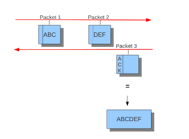
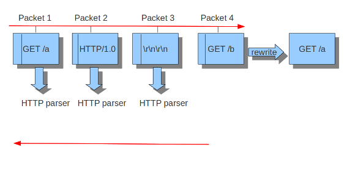
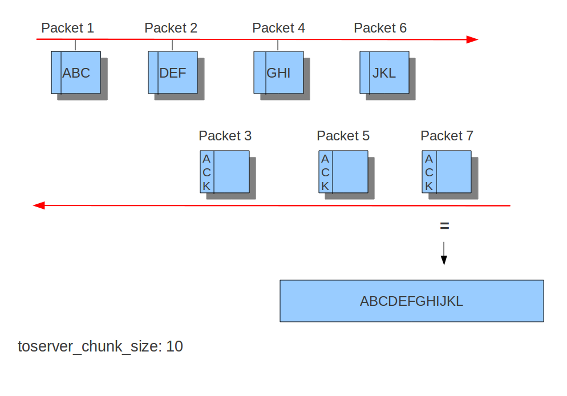
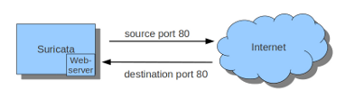
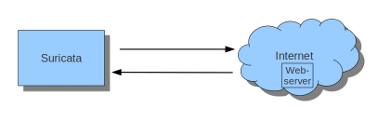

Suricata User Guide¶
This is the documentation for Suricata 7.0.2-dev.
What is Suricata¶
Suricata is a high performance Network IDS, IPS and Network Security Monitoring engine. It is open source and owned by a community-run non-profit foundation, the Open Information Security Foundation (OISF). Suricata is developed by the OISF.
About the Open Information Security Foundation¶
The Open Information Security Foundation is a non-profit foundation organized to build community and to support open-source security technologies like Suricata, the world-class IDS/IPS engine.
License¶
The Suricata source code is licensed under version 2 of the GNU General Public License.
This documentation is licensed under the Creative Commons Attribution-NonCommercial 4.0 International Public License.
Quickstart guide¶
This guide will give you a quick start to run Suricata and will focus only on the basics. For more details, read through the more specific chapters.
Installation¶
It's assumed that you run a recent Ubuntu release as the official PPA can then be used for the installation. To install the latest stable Suricata version, follow the steps:
sudo add-apt-repository ppa:oisf/suricata-stable
sudo apt update
sudo apt install suricata jq
The dedicated PPA repository is added, and after updating the index, Suricata can
be installed. We recommend installing the jq tool at this time as it will help
with displaying information from Suricata's EVE JSON output (described later in
this guide).
For the installation on other systems or to use specific compile options see Installation.
After installing Suricata, you can check which version of Suricata you have running and with what options, as well as the service state:
sudo suricata --build-info
sudo systemctl status suricata
Basic setup¶
First, determine the interface(s) and IP address(es) on which Suricata should be inspecting network packets:
$ ip addr
2: enp1s0: <BROADCAST,MULTICAST,UP,LOWER_UP> mtu 1500 qdisc fq_codel state UP group default qlen 1000
link/ether 00:11:22:33:44:55 brd ff:ff:ff:ff:ff:ff
inet 10.0.0.23/24 brd 10.23.0.255 scope global noprefixroute enp1s0
Use that information to configure Suricata:
sudo vim /etc/suricata/suricata.yaml
There are many possible configuration options, we focus on the setup of
the HOME_NET variable and the network interface configuration. The
HOME_NET variable should include, in most scenarios, the IP address of
the monitored interface and all the local networks in
use. The default already includes the RFC 1918 networks. In this example
10.0.0.23 is already included within 10.0.0.0/8. If no other networks
are used the other predefined values can be removed.
In this example the interface name is enp1s0 so the interface name in the
af-packet section needs to match. An example interface config might
look like this:
Capture settings:
af-packet:
- interface: enp1s0
cluster-id: 99
cluster-type: cluster_flow
defrag: yes
use-mmap: yes
tpacket-v3: yes
This configuration uses the most recent recommended settings for the IDS runmode for basic setups. There are many of possible configuration options which are described in dedicated chapters and are especially relevant for high performance setups.
Signatures¶
Suricata uses Signatures to trigger alerts so it's necessary to install those
and keep them updated. Signatures are also called rules, thus the name
rule-files. With the tool suricata-update rules can be fetched, updated and
managed to be provided for Suricata.
In this guide we just run the default mode which fetches the ET Open ruleset:
sudo suricata-update
Afterwards the rules are installed at /var/lib/suricata/rules which is also
the default at the config and uses the sole suricata.rules file.
Running Suricata¶
With the rules installed, Suricata can run properly and thus we restart it:
sudo systemctl restart suricata
To make sure Suricata is running check the Suricata log:
sudo tail /var/log/suricata/suricata.log
The last line will be similar to this:
<Notice> - all 4 packet processing threads, 4 management threads initialized, engine started.
The actual thread count will depend on the system and the configuration.
To see statistics, check the stats.log file:
sudo tail -f /var/log/suricata/stats.log
By default, it is updated every 8 seconds to show updated values with the current state, like how many packets have been processed and what type of traffic was decoded.
Alerting¶
To test the IDS functionality of Suricata it's best to test with a signature. The signature with
ID 2100498 from the ET Open ruleset is written specific for such test cases.
2100498:
alert ip any any -> any any (msg:"GPL ATTACK_RESPONSE id check returned root"; content:"uid=0|28|root|29|"; classtype:bad-unknown; sid:2100498; rev:7; metadata:created_at 2010_09_23, updated_at 2010_09_23;)
The syntax and logic behind those signatures is covered in other chapters. This
will alert on any IP traffic that has the content within its payload. This rule
can be triggered quite easy. Before we trigger it, start tail to see updates to
fast.log.
Rule trigger:
sudo tail -f /var/log/suricata/fast.log
curl http://testmynids.org/uid/index.html
The following output should now be seen in the log:
[1:2100498:7] GPL ATTACK_RESPONSE id check returned root [**] [Classification: Potentially Bad Traffic] [Priority: 2] {TCP} 217.160.0.187:80 -> 10.0.0.23:41618
This should include the timestamp and the IP of your system.
EVE Json¶
The more advanced output is the EVE JSON output which is explained in detail in
Eve JSON Output. To see what this looks like it's
recommended to use jq to parse the JSON output.
Alerts:
sudo tail -f /var/log/suricata/eve.json | jq 'select(.event_type=="alert")'
This will display more detail about each alert, including meta-data.
Stats:
sudo tail -f /var/log/suricata/eve.json | jq 'select(.event_type=="stats")|.stats.capture.kernel_packets'
sudo tail -f /var/log/suricata/eve.json | jq 'select(.event_type=="stats")'
The first example displays the number of packets captured by the kernel; the second examples shows all of the statistics.
Installation¶
Before Suricata can be used it has to be installed. Suricata can be installed on various distributions using binary packages: Binary packages.
For people familiar with compiling their own software, the Source method is recommended.
Advanced users can check the advanced guides, see Arch Based.
Source¶
Installing from the source distribution files gives the most control over the Suricata installation.
Basic steps:
tar xzvf suricata-6.0.0.tar.gz
cd suricata-6.0.0
./configure
make
make install
This will install Suricata into /usr/local/bin/, use the default
configuration in /usr/local/etc/suricata/ and will output to
/usr/local/var/log/suricata
Common configure options¶
-
--disable-gccmarch-native¶ Do not optimize the binary for the hardware it is built on. Add this flag if the binary is meant to be portable or if Suricata is to be used in a VM.
-
--prefix=/usr/¶ Installs the Suricata binary into /usr/bin/. Default
/usr/local/
-
--sysconfdir=/etc¶ Installs the Suricata configuration files into /etc/suricata/. Default
/usr/local/etc/
-
--localstatedir=/var¶ Setups Suricata for logging into /var/log/suricata/. Default
/usr/local/var/log/suricata
-
--enable-lua¶ Enables Lua support for detection and output.
-
--enable-geoip¶ Enables GeoIP support for detection.
Dependencies¶
For Suricata's compilation you'll need the following libraries and their development headers installed:
libjansson, libpcap, libpcre2, libyaml, zlib
The following tools are required:
make gcc (or clang) pkg-config rustc cargo
Rust support:
rustc, cargo
Some distros don't provide or provide outdated Rust packages.
Rust can also be installed directly from the Rust project itself::
1) Install Rust https://www.rust-lang.org/en-US/install.html
2) Install cbindgen - if the cbindgen is not found in the repository
or the cbindgen version is lower than required, it can be
alternatively installed as: cargo install --force cbindgen
3) Make sure the cargo path is within your PATH environment
e.g. echo 'export PATH=”${PATH}:~/.cargo/bin”' >> ~/.bashrc
e.g. export PATH="${PATH}:/root/.cargo/bin"
Ubuntu/Debian¶
Minimal:
# Installed Rust and cargo as indicated above
apt-get install build-essential git libjansson-dev libpcap-dev \
libpcre2-dev libtool libyaml-dev make pkg-config zlib1g-dev
# On most distros installing cbindgen with package manager should be enough
apt-get install cbindgen # alternative: cargo install --force cbindgen
Recommended:
# Installed Rust and cargo as indicated above
apt-get install autoconf automake build-essential ccache clang curl git \
gosu jq libbpf-dev libcap-ng0 libcap-ng-dev libelf-dev \
libevent-dev libgeoip-dev libhiredis-dev libjansson-dev \
liblua5.1-dev libmagic-dev libnet1-dev libpcap-dev \
libpcre2-dev libtool libyaml-0-2 libyaml-dev m4 make \
pkg-config python3 python3-dev python3-yaml sudo zlib1g \
zlib1g-dev
cargo install --force cbindgen
Extra for iptables/nftables IPS integration:
apt-get install libnetfilter-queue-dev libnetfilter-queue1 \
libnetfilter-log-dev libnetfilter-log1 \
libnfnetlink-dev libnfnetlink0
CentOS, AlmaLinux, RockyLinux, Fedora, etc¶
To install all minimal dependencies, it is required to enable extra package repository in most distros. You can enable it possibly by one of the following ways:
dnf -y update
dnf -y install dnf-plugins-core
# AlmaLinux 8
dnf config-manager --set-enabled powertools
# AlmaLinux 9
dnf config-manager --set-enable crb
# Oracle Linux 8
dnf config-manager --set-enable ol8_codeready_builder
# Oracle Linux 9
dnf config-manager --set-enable ol9_codeready_builder
Minimal:
# Installed Rust and cargo as indicated above
dnf install -y gcc gcc-c++ git jansson-devel libpcap-devel libtool \
libyaml-devel make pcre2-devel which zlib-devel
cargo install --force cbindgen
Recommended:
# Installed Rust and cargo as indicated above
dnf install -y autoconf automake diffutils file-devel gcc gcc-c++ git \
jansson-devel jq libcap-ng-devel libevent-devel \
libmaxminddb-devel libnet-devel libnetfilter_queue-devel \
libnfnetlink-devel libpcap-devel libtool libyaml-devel \
lua-devel lz4-devel make nss-devel pcre2-devel pkgconfig \
python3-devel python3-sphinx python3-yaml sudo which \
zlib-devel
cargo install --force cbindgen
Compilation¶
Follow these steps from your Suricata directory:
./scripts/bundle.sh
./autogen.sh
./configure # you may want to add additional parameters here
# ./configure --help to get all available parameters
make -j8 # j is for paralleling, you may de/increase depending on your CPU
make install # to install your Suricata compiled binary
Binary packages¶
Ubuntu from Personal Package Archives (PPA)¶
For Ubuntu, OISF maintains a PPA suricata-stable that always contains the
latest stable release.
Setup to install the latest stable Suricata:
sudo apt-get install software-properties-common
sudo add-apt-repository ppa:oisf/suricata-stable
sudo apt-get update
Then, you can install the latest stable with:
sudo apt-get install suricata
After installing you can proceed to the Basic setup.
OISF launchpad: suricata-stable.
Getting Debug or Pre-release Versions¶
If you want Suricata with built-in (enabled) debugging, you can install the debug package:
sudo apt-get install suricata-dbg
If you would like to help test the Release Candidate (RC) packages, the same procedures
apply, just using another PPA: suricata-beta:
sudo add-apt-repository ppa:oisf/suricata-beta
sudo apt-get update
sudo apt-get upgrade
You can use both the suricata-stable and suricata-beta repositories together. Suricata will then always be the latest release, stable or beta.
Daily Releases¶
If you would like to help test the daily build packages from our latest git(dev)
repository, the same procedures as above apply, just using another PPA,
suricata-daily:
sudo add-apt-repository ppa:oisf/suricata-daily-allarch
sudo apt-get update
sudo apt-get upgrade
Note
Please have in mind that this is packaged from our latest development git master and is therefore potentially unstable.
We do our best to make others aware of continuing development and items within the engine that are not yet complete or optimal. With this in mind, please refer to Suricata's issue tracker on Redmine for an up-to-date list of what we are working on, planned roadmap, and to report issues.
Debian¶
In Debian 9 (stretch) and later do:
sudo apt-get install suricata
In the "stable" version of Debian, Suricata is usually not available in the latest version. A more recent version is often available from Debian backports, if it can be built there.
To use backports, the backports repository for the current stable
distribution needs to be added to the system-wide sources list.
For Debian 10 (buster), for instance, run the following as root:
echo "deb http://http.debian.net/debian buster-backports main" > \
/etc/apt/sources.list.d/backports.list
apt-get update
apt-get install suricata -t buster-backports
CentOS, AlmaLinux, RockyLinux, Fedora, etc¶
RPMs are provided for the latest release of Enterprise Linux. This includes CentOS Linux and rebuilds such as AlmaLinux and RockyLinux. Additionally, RPMs are provided for the latest supported versions of Fedora.
RPMs specifically for CentOS Stream are not provided, however the RPMs for their related version may work fine.
Installing From Package Repositories¶
CentOS, RHEL, AlmaLinux, RockyLinux, etc Version 8+¶
dnf install epel-release dnf-plugins-core
dnf copr enable @oisf/suricata-7.0
dnf install suricata
CentOS 7¶
yum install epel-release yum-plugin-copr
yum copr enable @oisf/suricata-7.0
yum install suricata
Fedora¶
dnf install dnf-plugins-core
dnf copr enable @oisf/suricata-7.0
dnf install suricata
Additional Notes for RPM Installations¶
- Suricata is pre-configured to run as the
suricatauser. - Command line parameters such as providing the interface names can be
configured in
/etc/sysconfig/suricata. - Users can run
suricata-updatewithout being root provided they are added to thesuricatagroup. - Directories:
/etc/suricata: Configuration directory/var/log/suricata: Log directory/var/lib/suricata: State directory rules, datasets.
Starting Suricata On-Boot¶
The Suricata RPMs are configured to run from Systemd.
To start Suricata:
systemctl start suricata
To stop Suricata:
systemctl stop suricata
To have Suricata start on-boot:
systemctl enable suricata
To reload rules:
systemctl reload suricata
Arch Based¶
The ArchLinux AUR contains Suricata and suricata-nfqueue packages, with commonly used configurations for compilation (may also be edited to your liking). You may use makepkg, yay (sample below), or other AUR helpers to compile and build Suricata packages.
yay -S suricata
Advanced Installation¶
Various installation guides for installing from GIT and for other operating systems are maintained at: https://redmine.openinfosecfoundation.org/projects/suricata/wiki/Suricata_Installation
Upgrading¶
General instructions¶
Suricata can be upgraded by simply installing the new version to the same
locations as the already installed version. When installing from source,
this means passing the same --prefix, --sysconfdir,
--localstatedir and --datadir options to configure.
$ suricata --build-info|grep -A 3 '\-\-prefix'
--prefix /usr
--sysconfdir /etc
--localstatedir /var
--datarootdir /usr/share
Configuration Updates¶
New versions of Suricata will occasionally include updated config files:
classification.config and reference.config. Since the Suricata
installation will not overwrite these if they exist, they must be manually
updated. If there are no local modifications they can simply be overwritten
by the ones Suricata supplies.
Major updates include new features, new default settings and often also remove features. This upgrade guide covers the changes that might have an impact of migrating from an older version and keeping the config. We encourage you to also check all the new features that have been added but are not covered by this guide. Those features are either not enabled by default or require dedicated new configuration.
Upgrading 6.0 to 7.0¶
Major changes¶
- Upgrade of PCRE1 to PCRE2. See Changes from PCRE1 to PCRE2 for more details.
- IPS users: by default various new "exception policies" are set to DROP traffic. Please see Exception Policies for details on the settings and their scope. For trouble shooting, please check My traffic gets blocked after upgrading to Suricata 7.
- New protocols enabled by default: bittorrent-dht, quic, http2.
- The telnet protocol is also enabled by default, but only for the
app-layer.
Security changes¶
- suricata.yaml now prevents process creation by Suricata by default with security.limit-noproc. The suricata.yaml configuration file needs to be updated to enable this feature. For more info, see Configuration hardening.
- Absolute filenames and filenames containing parent directory traversal are no longer allowed by default for datasets when the filename is specified as part of a rule. See Datasets Security and Datasets File Locations for more information.
- Lua rules are now disabled by default (change also introduced in 6.0.13), see Lua Scripting for Detection.
Removals¶
- The libprelude output plugin has been removed.
- EVE DNS v1 logging support has been removed. If still using EVE DNS v1 logging, see the manual section on DNS logging configuration for the current configuration options: DNS EVE Configuration
Logging changes¶
IKEv2 Eve logging changed, the event_type has become
ikewhich covers both protocol versions. The fieldserrorsandnotifyhave moved toike.ikev2.errorsandike.ikev2.notify.FTP DATA metadata for alerts are now logged in
ftp_datainstead of root.Alert
xfffield is now logged asalert.xfffor alerts instead of at the root.Protocol values and their names are built into Suricata instead of using the system's
/etc/protocolsfile. Some names and casing may have changed in the valuesprotoineve.jsonlog entries and other logs containing protocol names and values. See https://redmine.openinfosecfoundation.org/issues/4267 for more information.Logging of additional HTTP headers configured through the EVE
http.customoption will now be logged in therequest_headersand/orresponse_headersrespectively instead of merged into the existinghttpobject. In Suricata 6.0, a configuration like:http: custom: [Server]
would result in a log entry like:
"http": { "hostname": "suricata.io", "http_method": "GET", "protocol": "HTTP/1/1", "server": "nginx", ... }
This merging of custom headers in the
httpobject could result in custom headers overwriting standard fields in thehttpobject, or a response header overwriting request header.To prevent the possibility of fields being overwritten, all custom headers are now logged into the
request_headersandresponse_headersarrays to avoid any chance of collision. This also facilitates the logging of headers that may appear multiple times, with each occurrence being logged in future releases (see note below).While these arrays are not new in Suricata 7.0, they had previously been used exclusively for the
dump-all-headersoption.As of Suricata 7.0, the above configuration example will now be logged like:
"http": { "hostname": "suricata.io", "http_method": "GET", "protocol": "HTTP/1/1", "response_headers": [ { "name": "Server", "value": "nginx" } ] }
Effectively making the
customoption a subset of thedump-all-headersoption.If you've been using the
customoption, this may represent a breaking change. However, if you haven't used it, there will be no change in the output.Note
Currently, if the same HTTP header is seen multiple times, the values are concatenated into a comma-separated value.
For more information, refer to: https://redmine.openinfosecfoundation.org/issues/1275.
Deprecations¶
- Multiple "include" fields in the configuration file will now issue a warning and in Suricata 8.0 will not be supported. See Includes for documentation on including multiple files.
- For AF-Packet, the cluster_rollover setting is no longer supported. Configuration settings using
cluster_rolloverwill cause a warning message and act as though cluster_flow` was specified. Please update your configuration settings.
Other changes¶
- Experimental keyword http2.header is removed. http.header, http.request_header, and http.response_header are to be used.
- NSS is no longer required. File hashing and JA3 can now be used without the NSS compile time dependency.
- If installing Suricata without the bundled Suricata-Update, the
default-rule-pathhas been changed from/etc/suricata/rulesto/var/lib/suricata/rulesto be consistent with Suricata when installed with Suricata-Update. - FTP has been updated with a maximum command request and response line length of 4096 bytes. To change the default see FTP.
- SWF decompression in http has been disabled by default. To change the default see Configure HTTP (libhtp). Users with configurations from previous releases may want to modify their config to match the new default. See https://redmine.openinfosecfoundation.org/issues/5632 for more information.
- The new option livedev is enabled by default with use-for-tracking being set to true. This should be disabled if multiple live devices are used to capture traffic from the same network.
Upgrading 5.0 to 6.0¶
- SIP now enabled by default
- RDP now enabled by default
- ERSPAN Type I enabled by default.
Major changes¶
- New protocols enabled by default: mqtt, rfb
- SSH Client fingerprinting for SSH clients
- Conditional logging
- Initial HTTP/2 support
- DCERPC logging
- Improved EVE logging performance
Removals¶
- File-store v1 has been removed. If using file extraction, the file-store configuration will need to be updated to version 2. See Update File-store v1 Configuration to V2.
- Individual Eve (JSON) loggers have been removed. For example,
stats-json,dns-json, etc. Use multiple Eve logger instances if this behavior is still required. See Multiple Logger Instances. - Unified2 has been removed. See Unified2 Output Removed.
Upgrading 4.1 to 5.0¶
Major changes¶
- New protocols enabled by default: snmp (new config only)
- New protocols disabled by default: rdp, sip
- New defaults for protocols: nfs, smb, tftp, krb5 ntp are all enabled by default (new config only)
- VXLAN decoder enabled by default. To disable, set
decoder.vxlan.enabledtofalse. - HTTP LZMA support enabled by default. To disable, set
lzma-enabledtofalsein each of thelibhtpconfigurations in use. - classification.config updated. ET 5.0 ruleset will use this.
- decoder event counters use 'decoder.event' as prefix now. This can
be controlled using the
stats.decoder-events-prefixsetting.
Removals¶
dns-log, the text dns log. Use EVE.dns instead.file-log, the non-EVE JSON file log. Use EVE.files instead.drop-log, the non-EVE JSON drop log.
Security Considerations¶
Suricata is a security tool that processes untrusted network data, as well as requiring elevated system privileges to acquire that data. This combination deserves extra security precautions that we discuss below.
Additionally, supply chain attacks, particularly around rule distribution, could potentially target Suricata installations.
Running as a User Other Than Root¶
Note
If using the Suricata RPMs, either from the OISF COPR repo,
or the EPEL repo, the following is already configured for
you. The only thing you might want to do is add your
management user to the suricata group.
Many Suricata examples and guides will show Suricata running as the root user, particularly when running on live traffic. As Suricata generally needs low level read (and in IPS write) access to network traffic, it is required that Suricata starts as root, however Suricata does have the ability to drop down to a non-root user after startup, which could limit the impact of a security vulnerability in Suricata itself.
Note
Currently the ability to drop root privileges after startup is only available on Linux systems.
Create User¶
Before running as a non-root user, you need to choose and possibly
create the user and group that will Suricata will run as. Typically
this user would be a sytem user with the name suricata. Such a
user can be created with the following command:
useradd --no-create-home --system --shell /sbin/nologin suricata
This will create a user and group with the name suricata.
File System Permissions¶
Before running Suricata as the user suricata, some directory
permissions will need to be updated to allow the suricata read and
write access.
Assuming your Suricata was installed from source using the recommended configuration of:
./configure --prefix=/usr/ --sysconfdir=/etc/ --localstatedir=/var/
the following directories will need their permissions updated:
| Directory | Permissions |
|---|---|
| /etc/suricata | Read |
| /var/log/suricata | Read, Write |
| /var/lib/suricata | Read, Write |
| /var/run/suricata | Read, Write |
The following commands will setup the correct permissions:
/etc/suricata:chgrp -R suricata /etc/suricata chmod -R g+r /etc/suricata
/var/log/suricata:chgrp -R suricata /var/log/suricata chmod -R g+rw /var/log/suricata
/var/lib/suricata:chgrp -R suricata /var/lib/suricata chmod -R g+srw /var/lib/suricata
/var/lib/suricata:chgrp -R suricata /var/run/suricata chmod -R g+srw /var/run/suricata
Configure Suricata to Run as Suricata¶
Suricata can be configured to run as an alternate user by updating the configuration file or using command line arguments.
Using the configuration file, update the
run-assection to look like:run-as: user: suricata group: suricata
Or if using command line arguments, add the following to your command:
--user suricata --group suricata
Starting Suricata¶
It is important to note that Suricata still needs to be started with root permissions in most cases. Starting as root allows Suricata to get access to the network interfaces and set the capabilities required during runtime before it switches down to the configured user.
Other Commands: Suricata-Update, SuricataSC¶
With the previous permissions setup, suricata-update and
suricatasc can also be run without root or sudo. To allow a user
to access these commands, add them to the suricata group.
Containers¶
Containers such as Docker and Podman are other methods to provide isolation between Suricata and the host machine running Suricata. However, we still recommend running as a non-root user, even in containers.
Capabilities¶
For both Docker and Podman the following capabilities should be provided to the container running Suricata for proper operation:
--cap-add=net_admin --cap-add=net_raw --cap-add=sys_nice
Podman¶
Unfortunately Suricata will not work with rootless Podman, this is due to Suricata's requirement to start with root privileges to gain access to the network interfaces. However, if started with the above capabilities, and configured to run as a non-root user, it will drop root privileges before processing network data.
Support Status¶
Levels of Support¶
The support tiers detailed below do not represent a binding commitment. Instead, they serve as a framework that the OISF employs to prioritize features and functionality.
Tier 1¶
Tier 1 supported items are developed and supported by the Suricata team. These items receive full CI (continuous integration) coverage, and functional failures block git merges and releases. Tier 1 features are enabled by default on platforms that support the feature.
Tier 2¶
Tier 2 supported items are developed and supported by the Suricata team, sometimes with help from community members. Major functional failures block git merges and releases, however less major issues may be documented as "known issues" and may go into a release. Tier 2 features and functionality may be disabled by default.
Community¶
When a feature of Suricata is community supported, it means the OISF/Suricata development team won’t directly support it. This is to avoid overloading the team.
When accepting a feature into the code base anyway, it will come with a number of limits and conditions:
- submitter must commit to maintaining it:
- make sure code compiles and correctly functions after Suricata and/or external (e.g. library) changes.
- support users when they encounter problems on forum and redmine tickets.
- the code will be disabled by default and will not become part of the
QA setup. This means it will be enabled only by an
--enableconfigure flag. - the code may not have CI coverage by the OISF infrastructure.
If the feature gets lots of traction, and/or if the team just considers it very useful, it may get ‘promoted’ to being officially supported.
On the other hand, the feature will be removed if the submitter stops maintaining it and no-one steps up to take over.
Vendor¶
Vendor supported features are features specific to a certain vendor and usually require software and/or hardware from that vendor. While these features may exist in the main Suricata code, they rely on support from the vendor to keep the feature in a functional state.
Vendor supported functionality will generally not have CI or QA coverage by the OISF.
Unmaintained¶
When a feature is unmaintained it is very likely broken and may be (partially) removed during cleanups and code refactoring. No end-user support is done by the core team. If someone wants to help maintain and support such a feature, we recommend talking to the core team before spending a lot of time on it.
Please see Contributing to Suricata for more information if you wish to contribute.
Distributions¶
Tier 1¶
These tier 1 supported Linux distributions and operating systems receive full CI and QA, as well as documentation.
| Distribution | Version | Support | QA | Notes |
|---|---|---|---|---|
| RHEL/CentOS | 7 | OISF | ||
| RHEL/Alma/Rocky | 8 | OISF | ||
| RHEL/Alma/Rocky | 9 | OISF | ||
| Ubuntu | 20.04 | OISF | ||
| Ubuntu | 22.04 | OISF | ||
| Debian | 10 (Buster) | OISF | ||
| Debian | 11 (Bullseye) | OISF | Foundation of SELKS | |
| Debian | 12 (Bookworm) | OISF | ||
| FreeBSD | 12 | OISF | Foundation of OPNsense, pfSense | |
| FreeBSD | 13 | OISF | Foundation of OPNSense |
Tier 2¶
These tier 2 supported Linux distributions and operating systems receive CI but not full QA (functional testing).
| Distribution | Version | Support | QA | Notes |
|---|---|---|---|---|
| CentOS | Stream | OISF | ||
| Fedora | Active | OISF | ||
| OpenBSD | 7.2 | OISF | ||
| OpenBSD | 7.1 | OISF | ||
| OSX/macOS | ?? | OISF | ||
| Windows/MinGW64 | OISF |
Architecture Support¶
Tier 1¶
| Architecture | Support | QA | Notes |
|---|---|---|---|
| x86_64 | OISF | ||
| ARM8-64bit | OISF |
Tier 2¶
| Architecture | Support | QA | Notes |
|---|---|---|---|
| ARM7-32bit | OISF | ||
| i386 | OISF |
Community¶
| Architecture | Support | QA | Notes |
|---|---|---|---|
| PPC64el | Part of Fedora automated QA | Access can be arranged through IBM dev cloud | |
| PPC64 | No access to working hardware | ||
| PPC32 | No access to working hardware | ||
| RISC-V |
High Level Features¶
Capture support¶
Tier 1¶
| Capture Type | Maintainer | QA | Notes |
|---|---|---|---|
| AF_PACKET | OISF | Used by Security Onion, SELKS | |
| NETMAP (FreeBSD) | OISF | Used by OPNsense, PFsense | |
| NFQUEUE | OISF | ||
| libpcap | OISF |
Tier 2¶
| Capture Type | Maintainer | QA | Notes |
|---|---|---|---|
| PF_RING | OISF | ||
| NETMAP (Linux) | OISF | ||
| DPDK | OISF | ||
| AF_PACKET (eBPF/XDP) | OISF |
Community¶
| Capture Type | Maintainer | QA | Notes |
|---|---|---|---|
| NFLOG | Community | ||
| AF_XDP | Community |
Vendor¶
| Capture Type | Maintainer | QA | Notes |
|---|---|---|---|
| Napatech | Napatech / Community |
Unmaintained¶
| Capture Type | Maintainer | QA | Notes |
|---|---|---|---|
| IPFW | |||
| Endace/DAG |
Command Line Options¶
Suricata's command line options:
-
-h¶ Display a brief usage overview.
-
-V¶ Displays the version of Suricata.
-
-c<path>¶ Path to configuration file.
-
--include<path>¶ Additional configuration files to include. Multiple additional configuration files can be provided and will be included in the order specified on the command line. These additional configuration files are loaded as if they existed at the end of the main configuration file.
Example including one additional file:
--include /etc/suricata/other.yaml
Example including more than one additional file:
--include /etc/suricata/other.yaml --include /etc/suricata/extra.yaml
-
-T¶ Test configuration.
-
-v¶ Increase the verbosity of the Suricata application logging by increasing the log level from the default. This option can be passed multiple times to further increase the verbosity.
- -v: INFO
- -vv: PERF
- -vvv: CONFIG
- -vvvv: DEBUG
This option will not decrease the log level set in the configuration file if it is already more verbose than the level requested with this option.
-
-r<path>¶ Run in pcap offline mode (replay mode) reading files from pcap file. If <path> specifies a directory, all files in that directory will be processed in order of modified time maintaining flow state between files.
-
--pcap-file-continuous¶ Used with the -r option to indicate that the mode should stay alive until interrupted. This is useful with directories to add new files and not reset flow state between files.
-
--pcap-file-recursive¶ Used with the -r option when the path provided is a directory. This option enables recursive traversal into subdirectories to a maximum depth of 255. This option cannot be combined with --pcap-file-continuous. Symlinks are ignored.
-
--pcap-file-delete¶ Used with the -r option to indicate that the mode should delete pcap files after they have been processed. This is useful with pcap-file-continuous to continuously feed files to a directory and have them cleaned up when done. If this option is not set, pcap files will not be deleted after processing.
-
-i<interface>¶ After the -i option you can enter the interface card you would like to use to sniff packets from. This option will try to use the best capture method available. Can be used several times to sniff packets from several interfaces.
-
--pcap[=<device>]¶ Run in PCAP mode. If no device is provided the interfaces provided in the pcap section of the configuration file will be used.
-
--af-packet[=<device>]¶ Enable capture of packet using AF_PACKET on Linux. If no device is supplied, the list of devices from the af-packet section in the yaml is used.
-
--af-xdp[=<device>]¶ Enable capture of packet using AF_XDP on Linux. If no device is supplied, the list of devices from the af-xdp section in the yaml is used.
-
-q<queue id>¶ Run inline of the NFQUEUE queue ID provided. May be provided multiple times.
-
-s<filename.rules>¶ With the -s option you can set a file with signatures, which will be loaded together with the rules set in the yaml.
It is possible to use globbing when specifying rules files. For example,
-s '/path/to/rules/*.rules'
-
-S<filename.rules>¶ With the -S option you can set a file with signatures, which will be loaded exclusively, regardless of the rules set in the yaml.
It is possible to use globbing when specifying rules files. For example,
-S '/path/to/rules/*.rules'
-
-l<directory>¶ With the -l option you can set the default log directory. If you already have the default-log-dir set in yaml, it will not be used by Suricata if you use the -l option. It will use the log dir that is set with the -l option. If you do not set a directory with the -l option, Suricata will use the directory that is set in yaml.
-
-D¶ Normally if you run Suricata on your console, it keeps your console occupied. You can not use it for other purposes, and when you close the window, Suricata stops running. If you run Suricata as daemon (using the -D option), it runs at the background and you will be able to use the console for other tasks without disturbing the engine running.
-
--runmode<runmode>¶ With the --runmode option you can set the runmode that you would like to use. This command line option can override the yaml runmode option.
Runmodes are: workers, autofp and single.
For more information about runmodes see Runmodes in the user guide.
-
-F<bpf filter file>¶ Use BPF filter from file.
-
-k[all|none]¶ Force (all) the checksum check or disable (none) all checksum checks.
-
--user=<user>¶ Set the process user after initialization. Overrides the user provided in the run-as section of the configuration file.
-
--group=<group>¶ Set the process group to group after initialization. Overrides the group provided in the run-as section of the configuration file.
-
--pidfile<file>¶ Write the process ID to file. Overrides the pid-file option in the configuration file and forces the file to be written when not running as a daemon.
-
--init-errors-fatal¶ Exit with a failure when errors are encountered loading signatures.
-
--strict-rule-keywords[=all|<keyword>|<keywords(csv)]¶ Applies to: classtype, reference and app-layer-event.
By default missing reference or classtype values are warnings and not errors. Additionally, loading outdated app-layer-event events are also not treated as errors, but as warnings instead.
If this option is enabled these warnings are considered errors.
If no value, or the value 'all', is specified, the option applies to all of the keywords above. Alternatively, a comma separated list can be supplied with the keyword names it should apply to.
-
--disable-detection¶ Disable the detection engine.
-
--disable-hashing¶ Disable support for hash algorithms such as md5, sha1 and sha256.
By default hashing is enabled. Disabling hashing will also disable some Suricata features such as the filestore, ja3, and rule keywords that use hash algorithms.
-
--dump-config¶ Dump the configuration loaded from the configuration file to the terminal and exit.
-
--dump-features¶ Dump the features provided by Suricata modules and exit. Features list (a subset of) the configuration values and are intended to assist with comparing provided features with those required by one or more rules.
-
--build-info¶ Display the build information the Suricata was built with.
-
--list-app-layer-protos¶ List all supported application layer protocols.
-
--list-keywords=[all|csv|<kword>]¶ List all supported rule keywords.
-
--list-runmodes¶ List all supported run modes.
-
--set<key>=<value>¶ Set a configuration value. Useful for overriding basic configuration parameters. For example, to change the default log directory:
--set default-log-dir=/var/tmp
This option cannot be used to add new entries to a list in the configuration file, such as a new output. It can only be used to modify a value in a list that already exists.
For example, to disable the
eve-login the default configuration file:--set outputs.1.eve-log.enabled=no
Also note that the index values may change as the
suricata.yamlis updated.See the output of
--dump-configfor existing values that could be modified with their index.
-
--engine-analysis¶ Print reports on analysis of different sections in the engine and exit. Please have a look at the conf parameter engine-analysis on what reports can be printed
-
--unix-socket=<file>¶ Use file as the Suricata unix control socket. Overrides the filename provided in the unix-command section of the configuration file.
-
--reject-dev=<device>¶ Use device to send out RST / ICMP error packets with the reject keyword.
-
--pcap-buffer-size=<size>¶ Set the size of the PCAP buffer (0 - 2147483647).
-
--netmap[=<device>]¶ Enable capture of packet using NETMAP on FreeBSD or Linux. If no device is supplied, the list of devices from the netmap section in the yaml is used.
-
--pfring[=<device>]¶ Enable PF_RING packet capture. If no device provided, the devices in the Suricata configuration will be used.
-
--pfring-cluster-id<id>¶ Set the PF_RING cluster ID.
-
--pfring-cluster-type<type>¶ Set the PF_RING cluster type (cluster_round_robin, cluster_flow).
-
-d<divert-port>¶ Run inline using IPFW divert mode.
-
--dag<device>¶ Enable packet capture off a DAG card. If capturing off a specific stream the stream can be select using a device name like "dag0:4". This option may be provided multiple times read off multiple devices and/or streams.
-
--napatech¶ Enable packet capture using the Napatech Streams API.
-
--erf-in=<file>¶ Run in offline mode reading the specific ERF file (Endace extensible record format).
-
--simulate-ips¶ Simulate IPS mode when running in a non-IPS mode.
Unit Tests¶
The builtin unittests are only available when Suricata has been configured and built with
--enable-unittests.
Running unittests does not require a configuration file. Use -l to supply an output directory.:
sudo suricata -u
-
-u¶ Run the unit tests and exit. Requires that Suricata be configured with --enable-unittests.
-
-U,--unittest-filter=REGEX¶ With the -U option you can select which of the unit tests you want to run. This option uses REGEX. Example of use: suricata -u -U http
-
--list-unittests¶ Lists available unit tests.
-
--fatal-unittests¶ Enables fatal failure on a unit test error. Suricata will exit instead of continuing more tests.
-
--unittests-coverage¶ Display unit test coverage report.
Suricata Rules¶
Rules Format¶
Signatures play a very important role in Suricata. In most occasions people are using existing rulesets.
The official way to install rulesets is described in Rule Management with Suricata-Update.
There are a number of free rulesets that can be used via suricata-update. To aid in learning about writing rules, the Emerging Threats Open ruleset is free and a good reference that has a wide range of signature examples.
This Suricata Rules document explains all about signatures; how to read, adjust and create them.
A rule/signature consists of the following:
- The action, determining what happens when the rule matches.
- The header, defining the protocol, IP addresses, ports and direction of the rule.
- The rule options, defining the specifics of the rule.
An example of a rule is as follows:
In this example, red is the action, green is the header and are the options.
We will be using the above signature as an example throughout this section, highlighting the different parts of the signature.
Action¶
Valid actions are:
- alert - generate an alert.
- pass - stop further inspection of the packet.
- drop - drop packet and generate alert.
- reject - send RST/ICMP unreach error to the sender of the matching packet.
- rejectsrc - same as just reject.
- rejectdst - send RST/ICMP error packet to receiver of the matching packet.
- rejectboth - send RST/ICMP error packets to both sides of the conversation.
Note
In IPS mode, using any of the reject actions also enables drop.
For more information see Action-order.
Protocol¶
This keyword in a signature tells Suricata which protocol it concerns. You can choose between four basic protocols:
- tcp (for tcp-traffic)
- udp
- icmp
- ip (ip stands for 'all' or 'any')
There are a couple of additional TCP related protocol options:
- tcp-pkt (for matching content in individual tcp packets)
- tcp-stream (for matching content only in a reassembled tcp stream)
There are also a few so-called application layer protocols, or layer 7 protocols you can pick from. These are:
- http (either HTTP1 or HTTP2)
- http1
- http2
- ftp
- tls (this includes ssl)
- smb
- dns
- dcerpc
- dhcp
- ssh
- smtp
- imap
- modbus (disabled by default)
- dnp3 (disabled by default)
- enip (disabled by default)
- nfs
- ike
- krb5
- bittorrent-dht
- ntp
- dhcp
- rfb
- rdp
- snmp
- tftp
- sip
The availability of these protocols depends on whether the protocol is enabled in the configuration file, suricata.yaml.
If you have a signature with the protocol declared as 'http', Suricata makes sure the signature will only match if the TCP stream contains http traffic.
Source and destination¶
The first emphasized part is the traffic source, the second is the traffic destination (note the direction of the directional arrow).
With the source and destination, you specify the source of the traffic and the destination of the traffic, respectively. You can assign IP addresses, (both IPv4 and IPv6 are supported) and IP ranges. These can be combined with operators:
| Operator | Description |
|---|---|
| ../.. | IP ranges (CIDR notation) |
| ! | exception/negation |
| [.., ..] | grouping |
Normally, you would also make use of variables, such as $HOME_NET and
$EXTERNAL_NET. The suricata.yaml configuration file specifies the IP addresses these
concern. The respective $HOME_NET and $EXTERNAL_NET settings will be used in place of the variables in your rules.
See Rule-vars for more information.
Rule usage examples:
| Example | Meaning |
|---|---|
| !1.1.1.1 | Every IP address but 1.1.1.1 |
| ![1.1.1.1, 1.1.1.2] | Every IP address but 1.1.1.1 and 1.1.1.2 |
| $HOME_NET | Your setting of HOME_NET in yaml |
| [$EXTERNAL_NET, !$HOME_NET] | EXTERNAL_NET and not HOME_NET |
| [10.0.0.0/24, !10.0.0.5] | 10.0.0.0/24 except for 10.0.0.5 |
| [..., [....]] | |
| [..., ![.....]] |
Warning
If you set your configuration to something like this:
HOME_NET: any
EXTERNAL_NET: !$HOME_NET
You cannot write a signature using $EXTERNAL_NET because it evaluates to
'not any', which is an invalid value.
Note
Please note that the source and destination address can also be matched via the ip.src and ip.dst keywords (See IP Addresses Match). These
keywords are mostly used in conjunction with the dataset feature (Datasets).
Ports (source and destination)¶
The first emphasized part is the source port, the second is the destination port (note the direction of the directional arrow).
Traffic comes in and goes out through ports. Different protocols have different port numbers. For example, the default port for HTTP is 80 while 443 is typically the port for HTTPS. Note, however, that the port does not dictate which protocol is used in the communication. Rather, it determines which application is receiving the data.
The ports mentioned above are typically the destination ports. Source ports,
i.e. the application that sent the packet, typically get assigned a random
port by the operating system. When writing a rule for your own HTTP service,
you would typically write any -> 80, since that would mean any packet from
any source port to your HTTP application (running on port 80) is matched.
In setting ports you can make use of special operators as well. Operators such as:
| Operator | Description |
|---|---|
| : | port ranges |
| ! | exception/negation |
| [.., ..] | grouping |
Rule usage examples:
| Example | Meaning |
|---|---|
| [80, 81, 82] | port 80, 81 and 82 |
| [80: 82] | Range from 80 till 82 |
| [1024: ] | From 1024 till the highest port-number |
| !80 | Every port but 80 |
| [80:100,!99] | Range from 80 till 100 but 99 excluded |
| [1:80,![2,4]] | Range from 1-80, except ports 2 and 4 |
| [.., [..,..]] |
Direction¶
The directional arrow indicates which way the signature will be evaluated.
In most signatures an arrow to the right (->) is used. This means that only
packets with the same direction can match. However, it is also possible to
have a rule match both directions (<>):
source -> destination
source <> destination (both directions)
The following example illustrates direction. In this example there is a client with IP address 1.2.3.4 using port 1024. A server with IP address 5.6.7.8, listening on port 80 (typically HTTP). The client sends a message to the server and the server replies with its answer.
Now, let's say we have a rule with the following header:
alert tcp 1.2.3.4 1024 -> 5.6.7.8 80
Only the traffic from the client to the server will be matched by this rule, as the direction specifies that we do not want to evaluate the response packet.
Warning
There is no 'reverse' style direction, i.e. there is no <-.
Rule options¶
The rest of the rule consists of options. These are enclosed by parenthesis
and separated by semicolons. Some options have settings (such as msg),
which are specified by the keyword of the option, followed by a colon,
followed by the settings. Others have no settings; they are simply the
keyword (such as nocase):
<keyword>: <settings>;
<keyword>;
Rule options have a specific ordering and changing their order would change the meaning of the rule.
Note
The characters ; and " have special meaning in the
Suricata rule language and must be escaped when used in a
rule option value. For example:
msg:"Message with semicolon\;";
As a consequence, you must also escape the backslash, as it functions as an escape character.
The rest of this chapter in the documentation documents the use of the various keywords.
Some generic details about keywords follow.
Modifier Keywords¶
Some keywords function act as modifiers. There are two types of modifiers.
The older style 'content modifiers' look back in the rule, e.g.:
alert http any any -> any any (content:"index.php"; http_uri; sid:1;)
In the above example the pattern 'index.php' is modified to inspect the HTTP uri buffer.
The more recent type is called the 'sticky buffer'. It places the buffer name first and all keywords following it apply to that buffer, for instance:
alert http any any -> any any (http_response_line; content:"403 Forbidden"; sid:1;)
In the above example the pattern '403 Forbidden' is inspected against the HTTP response line because it follows the
http_response_linekeyword.
Normalized Buffers¶
A packet consists of raw data. HTTP and reassembly make a copy of those kinds of packets data. They erase anomalous content, combine packets etcetera. What remains is a called the 'normalized buffer':
Because the data is being normalized, it is not what it used to be; it is an interpretation. Normalized buffers are: all HTTP-keywords, reassembled streams, TLS-, SSL-, SSH-, FTP- and dcerpc-buffers.
Note that there are some exceptions, e.g. the http_raw_uri keyword.
See http.uri and http.uri.raw for more information.
Meta Keywords¶
Meta keywords have no effect on Suricata's inspection of network traffic; they do have an effect on the way Suricata reports events/alerts.
msg (message)¶
The keyword msg gives contextual information about the signature and the possible alert.
The format of msg is:
msg: "some description";
Examples:
msg:"ET MALWARE Win32/RecordBreaker CnC Checkin";
msg:"ET EXPLOIT SMB-DS DCERPC PnP bind attempt";
To continue the example from the previous chapter, the msg component of the signature is emphasized below:
Tip
It is a standard practice in rule writing to make the first part of the signature msg uppercase and to indicate the class of the signature.
It is also standard practice that msg is the first keyword in the signature.
Note
The following characters must be escaped inside the msg:
; \ "
sid (signature ID)¶
The keyword sid gives every signature its own id. This id is stated with a number greater than zero. The format of sid is:
sid:123;
Example of sid in a signature:
Tip
It is a standard practice in rule writing that the signature sid is
provided as the last keyword (or second-to-last if there is a rev)
of the signature.
There are reserved ranges of sids, the reservations are recorded at https://sidallocation.org/ .
Note
This value must be unique for all rules within the same rule group (gid).
As Suricata-update currently considers the rule's sid only (cf. Bug#5447), it is advisable
to opt for a completely unique sid altogether.
rev (revision)¶
The sid keyword is commonly accompanied by the rev keyword. Rev represents the version of the signature. If a signature is modified, the number of rev will be incremented by the signature writers. The format of rev is:
rev:123;
Example of rev in a signature:
Tip
It is a standard practice in rule writing that the rev keyword is expressed after the sid keyword. The sid and rev keywords are commonly put as the last two keywords in a signature.
gid (group ID)¶
The gid keyword can be used to give different groups of signatures another id value (like in sid). Suricata by default uses gid 1. It is possible to modify the default value. In most cases, it will be unnecessary to change the default gid value. Changing the gid value has no technical implications, the value is only noted in alert data.
Example of the gid value in an alert entry in the fast.log file. In the part [1:123], the first 1 is the gid (123 is the sid and 1 is the rev).
classtype¶
The classtype keyword gives information about the classification of rules and alerts. It consists of a short name, a long name and a priority. It can tell for example whether a rule is just informational or is about a CVE. For each classtype, the classification.config has a priority that will be used in the rule.
Example classtype definition:
config classification: web-application-attack,Web Application Attack,1
config classification: not-suspicious,Not Suspicious Traffic,3
Once we have defined the classification in the configuration file, we can use the classtypes in our rules. A rule with classtype web-application-attack will be assigned a priority of 1 and the alert will contain 'Web Application Attack' in the Suricata logs:
| classtype | Alert | Priority |
|---|---|---|
| web-application-attack | Web Application Attack | 1 |
| not-suspicious | Not Suspicious Traffic | 3 |
Our continuing example also has a classtype: bad-unknown:
Tip
It is a standard practice in rule writing that the classtype keyword comes before the sid and rev keywords (as shown in the example rule).
reference¶
The reference keyword is used to document where information about the signature and about the problem the signature tries to address can be found. The reference keyword can appear multiple times in a signature. This keyword is meant for signature-writers and analysts who investigate why a signature has matched. It has the following format:
reference:type,reference
A typical reference to www.info.com would be:
reference:url,www.info.com
There are several systems that can be used as a reference. A commonly known example is the CVE-database, which assigns numbers to vulnerabilities, to prevent having to type the same URL over and over again. An example reference of a CVE:
reference:cve,CVE-2014-1234
This would make a reference to http://cve.mitre.org/cgi-bin/cvename.cgi?name=CVE-2014-1234.
All the reference types are defined in the reference.config configuration file.
priority¶
The priority keyword comes with a mandatory numeric value which can range from 1 to 255. The values 1 through 4 are commonly used. The highest priority is 1. Signatures with a higher priority will be examined first. Normally signatures have a priority determined through a classtype definition. The classtype definition can be overridden by defining the priority keyword in the signature. The format of priority is:
priority:1;
metadata¶
The metadata keyword allows additional, non-functional, information to be added to the signature. While the format is free-form, it is recommended to stick to [key, value] pairs as Suricata can include these in eve alerts. The format is:
metadata: key value;
metadata: key value, key value;
target¶
The target keyword allows the rules writer to specify which side of the alert is the target of the attack. If specified, the alert event is enhanced to contain information about source and target.
The format is:
target:[src_ip|dest_ip]
If the value is src_ip then the source IP in the generated event (src_ip field in JSON) is the target of the attack. If target is set to dest_ip then the target is the destination IP in the generated event.
IP Keywords¶
ttl¶
The ttl keyword is used to check for a specific IP time-to-live value in the header of a packet. The format is:
ttl:<number>;
For example:
ttl:10;
At the end of the ttl keyword you can enter the value on which you want to match. The Time-to-live value determines the maximal amount of time a packet can be in the Internet-system. If this field is set to 0, then the packet has to be destroyed. The time-to-live is based on hop count. Each hop/router the packet passes subtracts one from the packet TTL counter. The purpose of this mechanism is to limit the existence of packets so that packets can not end up in infinite routing loops.
Example of the ttl keyword in a rule:
ipopts¶
With the ipopts keyword you can check if a specific IP option is set. Ipopts has to be used at the beginning of a rule. You can only match on one option per rule. There are several options on which can be matched. These are:
| IP Option | Description |
|---|---|
| rr | Record Route |
| eol | End of List |
| nop | No Op |
| ts | Time Stamp |
| sec | IP Security |
| esec | IP Extended Security |
| lsrr | Loose Source Routing |
| ssrr | Strict Source Routing |
| satid | Stream Identifier |
| any | any IP options are set |
Format of the ipopts keyword:
ipopts: <name>;
For example:
ipopts: ts;
Example of ipopts in a rule:
sameip¶
Every packet has a source IP-address and a destination IP-address. It can be that the source IP is the same as the destination IP. With the sameip keyword you can check if the IP address of the source is the same as the IP address of the destination. The format of the sameip keyword is:
sameip;
Example of sameip in a rule:
ip_proto¶
With the ip_proto keyword you can match on the IP protocol in the packet-header. You can use the name or the number of the protocol. You can match for example on the following protocols:
1 ICMP Internet Control Message
6 TCP Transmission Control Protocol
17 UDP User Datagram
47 GRE General Routing Encapsulation
50 ESP Encap Security Payload for IPv6
51 AH Authentication Header for Ipv6
58 IPv6-ICMP ICMP for Ipv6
For the complete list of protocols and their numbers see http://en.wikipedia.org/wiki/List_of_IP_protocol_numbers
Example of ip_proto in a rule:
The named variant of that example would be:
ip_proto:ICMP;
ipv4.hdr¶
Sticky buffer to match on content contained within an IPv4 header.
Example rule:
This example looks if byte 10 of IPv4 header has value 06, which indicates that the IPv4 protocol is TCP.
ipv6.hdr¶
Sticky buffer to match on content contained within an IPv6 header.
Example rule:
This example looks if byte 7 of IP64 header has value 06, which indicates that the IPv6 protocol is TCP.
id¶
With the id keyword, you can match on a specific IP ID value. The ID identifies each packet sent by a host and increments usually with one with each packet that is being send. The IP ID is used as a fragment identification number. Each packet has an IP ID, and when the packet becomes fragmented, all fragments of this packet have the same ID. In this way, the receiver of the packet knows which fragments belong to the same packet. (IP ID does not take care of the order, in that case offset is used. It clarifies the order of the fragments.)
Format of id:
id:<number>;
Example of id in a rule:
geoip¶
The geoip keyword enables matching on the source, destination or source and destination IPv4 addresses of network traffic, and to see to which country it belongs. To be able to do this, Suricata uses the GeoIP2 API of MaxMind.
The syntax of geoip:
geoip: src,RU;
geoip: both,CN,RU;
geoip: dst,CN,RU,IR;
geoip: both,US,CA,UK;
geoip: any,CN,IR;
| Option | Description |
|---|---|
| both | Both source and destination have to match with the given geoip(s) |
| any | Either the source or the destination has to match with the given geoip(s). |
| dest | The destination matches with the given geoip. |
| src | The source matches with the given geoip. |
geoip currently only supports IPv4. As it uses the GeoIP2 API of MaxMind, libmaxminddb must be compiled in. You must download and install the GeoIP2 or GeoLite2 database editions desired. Visit the MaxMind site at https://dev.maxmind.com/geoip/geolite2-free-geolocation-data for details.
You must also supply the location of the GeoIP2 or GeoLite2 database file on the local system in the YAML-file configuration (for example):
geoip-database: /usr/local/share/GeoIP/GeoLite2-Country.mmdb
fragbits (IP fragmentation)¶
With the fragbits keyword, you can check if the fragmentation and reserved bits are set in the IP header. The fragbits keyword should be placed at the beginning of a rule. Fragbits is used to modify the fragmentation mechanism. During routing of messages from one Internet module to the other, it can occur that a packet is bigger than the maximal packet size a network can process. In that case, a packet can be send in fragments. This maximum of the packet size is called Maximal Transmit Unit (MTU).
You can match on the following bits:
M - More Fragments
D - Do not Fragment
R - Reserved Bit
Matching on this bits can be more specified with the following modifiers:
+ match on the specified bits, plus any others
* match if any of the specified bits are set
! match if the specified bits are not set
Format:
fragbits:[*+!]<[MDR]>;
Example of fragbits in a rule:
fragoffset¶
With the fragoffset keyword you can match on specific decimal values of the IP fragment offset field. If you would like to check the first fragments of a session, you have to combine fragoffset 0 with the More Fragment option. The fragmentation offset field is convenient for reassembly. The id is used to determine which fragments belong to which packet and the fragmentation offset field clarifies the order of the fragments.
You can use the following modifiers:
< match if the value is smaller than the specified value
> match if the value is greater than the specified value
! match if the specified value is not present
Format of fragoffset:
fragoffset:[!|<|>]<number>;
Example of fragoffset in a rule:
tos¶
The tos keyword can match on specific decimal values of the IP header TOS field. The tos keyword can have a value from 0 - 255. This field of the IP header has been updated by rfc2474 to include functionality for Differentiated services. Note that the value of the field has been defined with the right-most 2 bits having the value 0. When specifying a value for tos, ensure that the value follows this.
E.g, instead of specifying the decimal value 34 (hex 22), right shift twice and use decimal 136 (hex 88).
You can specify hexadecimal values with a leading x, e.g, x88.
Format of tos:
tos:[!]<number>;
Example of tos in a rule:
Example of tos with a negated value:
TCP keywords¶
seq¶
The seq keyword can be used in a signature to check for a specific TCP sequence number. A sequence number is a number that is generated practically at random by both endpoints of a TCP-connection. The client and the server both create a sequence number, which increases with one with every byte that they send. So this sequence number is different for both sides. This sequence number has to be acknowledged by both sides of the connection. Through sequence numbers, TCP handles acknowledgement, order and retransmission. Its number increases with every data-byte the sender has send. The seq helps keeping track of to what place in a data-stream a byte belongs. If the SYN flag is set at 1, than the sequence number of the first byte of the data is this number plus 1 (so, 2).
Example:
seq:0;
Example of seq in a signature:
Example of seq in a packet (Wireshark):

ack¶
The ack is the acknowledgement of the receipt of all previous (data)-bytes send by the other side of the TCP-connection. In most occasions every packet of a TCP connection has an ACK flag after the first SYN and a ack-number which increases with the receipt of every new data-byte. The ack keyword can be used in a signature to check for a specific TCP acknowledgement number.
Format of ack:
ack:1;
Example of ack in a signature:
Example of ack in a packet (Wireshark):
window¶
The window keyword is used to check for a specific TCP window size. The TCP window size is a mechanism that has control of the data-flow. The window is set by the receiver (receiver advertised window size) and indicates the amount of bytes that can be received. This amount of data has to be acknowledged by the receiver first, before the sender can send the same amount of new data. This mechanism is used to prevent the receiver from being overflowed by data. The value of the window size is limited and can be 2 to 65.535 bytes. To make more use of your bandwidth you can use a bigger TCP-window.
The format of the window keyword:
window:[!]<number>;
Example of window in a rule:
tcp.mss¶
Match on the TCP MSS option value. Will not match if the option is not present.
The format of the keyword:
tcp.mss:<min>-<max>;
tcp.mss:[<|>]<number>;
tcp.mss:<value>;
Example rule:
tcp.hdr¶
Sticky buffer to match on the whole TCP header.
Example rule:
This example starts looking after the fixed portion of the header, so into the variable sized options. There it will look for the MSS option (type 2, option len 4) and using a byte_test determine if the value of the option is lower than 536. The tcp.mss option will be more efficient, so this keyword is meant to be used in cases where no specific keyword is available.
UDP keywords¶
udp.hdr¶
Sticky buffer to match on the whole UDP header.
Example rule:
This example matches on the length field of the UDP header. In this case the length of 8 means that there is no payload. This can also be matched using dsize:0;.
ICMP keywords¶
ICMP (Internet Control Message Protocol) is a part of IP. IP at itself is not reliable when it comes to delivering data (datagram). ICMP gives feedback in case problems occur. It does not prevent problems from happening, but helps in understanding what went wrong and where. If reliability is necessary, protocols that use IP have to take care of reliability themselves. In different situations ICMP messages will be send. For instance when the destination is unreachable, if there is not enough buffer-capacity to forward the data, or when a datagram is send fragmented when it should not be, etcetera. More can be found in the list with message-types.
There are four important contents of a ICMP message on which can be matched with corresponding ICMP-keywords. These are: the type, the code, the id and the sequence of a message.
itype¶
The itype keyword is for matching on a specific ICMP type (number). ICMP has several kinds of messages and uses codes to clarify those messages. The different messages are distinct by different names, but more important by numeric values. For more information see the table with message-types and codes.
The format of the itype keyword:
itype:min<>max;
itype:[<|>]<number>;
Example This example looks for an ICMP type greater than 10:
itype:>10;
Example of the itype keyword in a signature:
The following lists all ICMP types known at the time of writing. A recent table can be found at the website of IANA
| ICMP Type | Name |
|---|---|
| 0 | Echo Reply |
| 3 | Destination Unreachable |
| 4 | Source Quench |
| 5 | Redirect |
| 6 | Alternate Host Address |
| 8 | Echo |
| 9 | Router Advertisement |
| 10 | Router Solicitation |
| 11 | Time Exceeded |
| 12 | Parameter Problem |
| 13 | Timestamp |
| 14 | Timestamp Reply |
| 15 | Information Request |
| 16 | Information Reply |
| 17 | Address Mask Request |
| 18 | Address Mask Reply |
| 30 | Traceroute |
| 31 | Datagram Conversion Error |
| 32 | Mobile Host Redirect |
| 33 | IPv6 Where-Are-You |
| 34 | IPv6 I-Am-Here |
| 35 | Mobile Registration Request |
| 36 | Mobile Registration Reply |
| 37 | Domain Name Request |
| 38 | Domain Name Reply |
| 39 | SKIP |
| 40 | Photuris |
| 41 | Experimental mobility protocols such as Seamoby |
icode¶
With the icode keyword you can match on a specific ICMP code. The code of a ICMP message clarifies the message. Together with the ICMP-type it indicates with what kind of problem you are dealing with. A code has a different purpose with every ICMP-type.
The format of the icode keyword:
icode:min<>max;
icode:[<|>]<number>;
Example: This example looks for an ICMP code greater than 5:
icode:>5;
Example of the icode keyword in a rule:
The following lists the meaning of all ICMP types. When a code is not listed, only type 0 is defined and has the meaning of the ICMP code, in the table above. A recent table can be found at the website of IANA
| ICMP Code | ICMP Type | Description |
|---|---|---|
| 3 | 0 | Net Unreachable |
| 1 | Host Unreachable | |
| 2 | Protocol Unreachable | |
| 3 | Port Unreachable | |
| 4 | Fragmentation Needed and Don't Fragment was Set | |
| 5 | Source Route Failed | |
| 6 | Destination Network Unknown | |
| 7 | Destination Host Unknown | |
| 8 | Source Host Isolated | |
| 9 | Communication with Destination Network is Administratively Prohibited | |
| 10 | Communication with Destination Host is Administratively Prohibited | |
| 11 | Destination Network Unreachable for Type of Service | |
| 12 | Destination Host Unreachable for Type of Service | |
| 13 | Communication Administratively Prohibited | |
| 14 | Host Precedence Violation | |
| 15 | Precedence cutoff in effect | |
| 5 | 0 | Redirect Datagram for the Network (or subnet) |
| 1 | Redirect Datagram for the Host | |
| 2 | Redirect Datagram for the Type of Service and Network | |
| 3 | Redirect Datagram for the Type of Service and Host | |
| 9 | 0 | Normal router advertisement |
| 16 | Doesn't route common traffic | |
| 11 | 0 | Time to Live exceeded in Transit |
| 1 | Fragment Reassembly Time Exceeded | |
| 12 | 0 | Pointer indicates the error |
| 1 | Missing a Required Option | |
| 2 | Bad Length | |
| 40 | 0 | Bad SPI |
| 1 | Authentication Failed | |
| 2 | Decompression Failed | |
| 3 | Decryption Failed | |
| 4 | Need Authentication | |
| 5 | Need Authorization |
icmp_id¶
With the icmp_id keyword you can match on specific ICMP id-values. Every ICMP-packet gets an id when it is being send. At the moment the receiver has received the packet, it will send a reply using the same id so the sender will recognize it and connects it with the correct ICMP-request.
Format of the icmp_id keyword:
icmp_id:<number>;
Example: This example looks for an ICMP ID of 0:
icmp_id:0;
Example of the icmp_id keyword in a rule:
icmp_seq¶
You can use the icmp_seq keyword to check for a ICMP sequence number. ICMP messages all have sequence numbers. This can be useful (together with the id) for checking which reply message belongs to which request message.
Format of the icmp_seq keyword:
icmp_seq:<number>;
Example: This example looks for an ICMP Sequence of 0:
icmp_seq:0;
Example of icmp_seq in a rule:
icmpv4.hdr¶
Sticky buffer to match on the whole ICMPv4 header.
icmpv6.hdr¶
Sticky buffer to match on the whole ICMPv6 header.
icmpv6.mtu¶
Match on the ICMPv6 MTU optional value. Will not match if the MTU is not present.
The format of the keyword:
icmpv6.mtu:<min>-<max>;
icmpv6.mtu:[<|>]<number>;
icmpv6.mtu:<value>;
Example rule:
Payload Keywords¶
Payload keywords inspect the content of the payload of a packet or stream.
content¶
The content keyword is very important in signatures. Between the quotation marks you can write on what you would like the signature to match. The most simple format of content is:
content: "............";
It is possible to use several contents in a signature.
Contents match on bytes. There are 256 different values of a byte
(0-255). You can match on all characters; from a till z, upper case
and lower case and also on all special signs. But not all of the bytes
are printable characters. For these bytes heximal notations are
used. Many programming languages use 0x00 as a notation, where 0x
means it concerns a binary value, however the rule language uses
|00| as a notation. This kind of notation can also be used for
printable characters.
Example:
|61| is a
|61 61| is aa
|41| is A
|21| is !
|0D| is carriage return
|0A| is line feed
There are characters you can not use in the content because they are already important in the signature. For matching on these characters you should use the heximal notation. These are:
" |22|
; |3B|
: |3A|
| |7C|
It is a convention to write the heximal notation in upper case characters.
To write for instance http:// in the content of a signature, you
should write it like this: content: "http|3A|//"; If you use a
heximal notation in a signature, make sure you always place it between
pipes. Otherwise the notation will be taken literally as part of the
content.
A few examples:
content:"a|0D|bc";
content:"|61 0D 62 63|";
content:"a|0D|b|63|";
It is possible to let a signature check the whole payload for a match with the content or to let it check specific parts of the payload. We come to that later. If you add nothing special to the signature, it will try to find a match in all the bytes of the payload.
By default the pattern-matching is case sensitive. The content has to be accurate, otherwise there will not be a match.
Legend:
It is possible to use the ! for exceptions in contents as well.
For example:
alert http $HOME_NET any -> $EXTERNAL_NET any (msg:"Outdated Firefox on
Windows"; content:"User-Agent|3A| Mozilla/5.0 |28|Windows|3B| ";
content:"Firefox/3."; distance:0; content:!"Firefox/3.6.13";
distance:-10; sid:9000000; rev:1;)
You see content:!"Firefox/3.6.13";. This means an alert will be
generated if the used version of Firefox is not 3.6.13.
Note
The following characters must be escaped inside the content:
; \ "
nocase¶
If you do not want to make a distinction between uppercase and lowercase characters, you can use nocase. The keyword nocase is a content modifier.
The format of this keyword is:
nocase;
You have to place it after the content you want to modify, like:
content: "abc"; nocase;
Example nocase:
It has no influence on other contents in the signature.
depth¶
The depth keyword is a absolute content modifier. It comes after the content. The depth content modifier comes with a mandatory numeric value, like:
depth:12;
The number after depth designates how many bytes from the beginning of the payload will be checked.
Example:
startswith¶
The startswith keyword is similar to depth. It takes no arguments
and must follow a content keyword. It modifies the content to match
exactly at the start of a buffer.
Example:
content:"GET|20|"; startswith;
startswith is a short hand notation for:
content:"GET|20|"; depth:4; offset:0;
startswith cannot be mixed with depth, offset, within or
distance for the same pattern.
endswith¶
The endswith keyword is similar to isdataat:!1,relative;. It takes no
arguments and must follow a content keyword. It modifies the content to
match exactly at the end of a buffer.
Example:
content:".php"; endswith;
endswith is a short hand notation for:
content:".php"; isdataat:!1,relative;
endswith cannot be mixed with offset, within or
distance for the same pattern.
offset¶
The offset keyword designates from which byte in the payload will be checked to find a match. For instance offset:3; checks the fourth byte and further.
The keywords offset and depth can be combined and are often used together.
For example:
content:"def"; offset:3; depth:3;
If this was used in a signature, it would check the payload from the third byte till the sixth byte.
distance¶
The keyword distance is a relative content modifier. This means it indicates a relation between this content keyword and the content preceding it. Distance has its influence after the preceding match. The keyword distance comes with a mandatory numeric value. The value you give distance, determines the byte in the payload from which will be checked for a match relative to the previous match. Distance only determines where Suricata will start looking for a pattern. So, distance:5; means the pattern can be anywhere after the previous match + 5 bytes. For limiting how far after the last match Suricata needs to look, use 'within'.
The absolute value for distance must be less than or equal to 1MB (1048576).
Examples of distance:
Distance can also be a negative number. It can be used to check for matches with partly the same content (see example) or for a content even completely before it. This is not very often used though. It is possible to attain the same results with other keywords.
within¶
The keyword within is relative to the preceding match. The keyword within comes with a mandatory numeric value. Using within makes sure there will only be a match if the content matches with the payload within the set amount of bytes. Within can not be 0 (zero)
The absolute value for within must be less than or equal to 1MB (1048576).
Example:

Example of matching with within:
The second content has to fall/come 'within 3 ' from the first content.
As mentioned before, distance and within can be very well combined in a signature. If you want Suricata to check a specific part of the payload for a match, use within.
rawbytes¶
The rawbytes keyword has no effect but is included to be compatible with signatures that use it, for example signatures used with Snort.
isdataat¶
The purpose of the isdataat keyword is to look if there is still data at a specific part of the payload. The keyword starts with a number (the position) and then optional followed by 'relative' separated by a comma and the option rawbytes. You use the word 'relative' to know if there is still data at a specific part of the payload relative to the last match.
So you can use both examples:
isdataat:512;
isdataat:50, relative;
The first example illustrates a signature which searches for byte 512 of the payload. The second example illustrates a signature searching for byte 50 after the last match.
You can also use the negation (!) before isdataat.
bsize¶
With the bsize keyword, you can match on the length of the buffer. This adds
precision to the content match, previously this could have been done with isdataat.
An optional operator can be specified; if no operator is present, the operator will default to '='. When a relational operator is used, e.g., '<', '>' or '<>' (range), the bsize value will be compared using the relational operator. Ranges are inclusive.
If one or more content keywords precedes bsize, each occurrence of content
will be inspected and an error will be raised if the content length and the bsize
value prevent a match.
Format:
bsize:<number>;
bsize:=<number>;
bsize:<<number>;
bsize:><number>;
bsize:<lo-number><><hi-number>;
Examples of bsize in a rule:
alert dns any any -> any any (msg:"bsize exact buffer size"; dns.query; content:"google.com"; bsize:10; sid:1; rev:1;)
alert dns any any -> any any (msg:"bsize less than value"; dns.query; content:"google.com"; bsize:<25; sid:2; rev:1;)
alert dns any any -> any any (msg:"bsize buffer less than or equal value"; dns.query; content:"google.com"; bsize:<=20; sid:3; rev:1;)
alert dns any any -> any any (msg:"bsize buffer greater than value"; dns.query; content:"google.com"; bsize:>8; sid:4; rev:1;)
alert dns any any -> any any (msg:"bsize buffer greater than or equal value"; dns.query; content:"google.com"; bsize:>=8; sid:5; rev:1;)
alert dns any any -> any any (msg:"bsize buffer range value"; dns.query; content:"google.com"; bsize:8<>20; sid:6; rev:1;)
dsize¶
With the dsize keyword, you can match on the size of the packet payload/data. You can use the keyword for example to look for abnormal sizes of payloads which are equal to some n i.e. 'dsize:n' not equal 'dsize:!n' less than 'dsize:<n' or greater than 'dsize:>n' This may be convenient in detecting buffer overflows.
dsize cannot be used when using app/streamlayer protocol keywords (i.e. http.uri)
Format:
dsize:[<>!]number; || dsize:min<>max;
Examples of dsize values:
alert tcp any any -> any any (msg:"dsize exact size"; dsize:10; sid:1; rev:1;)
alert tcp any any -> any any (msg:"dsize less than value"; dsize:<10; sid:2; rev:1;)
alert tcp any any -> any any (msg:"dsize less than or equal value"; dsize:<=10; sid:3; rev:1;)
alert tcp any any -> any any (msg:"dsize greater than value"; dsize:>8; sid:4; rev:1;)
alert tcp any any -> any any (msg:"dsize greater than or equal value"; dsize:>=10; sid:5; rev:1;)
alert tcp any any -> any any (msg:"dsize range value"; dsize:8<>20; sid:6; rev:1;)
alert tcp any any -> any any (msg:"dsize not equal value"; dsize:!9; sid:7; rev:1;)
byte_test¶
The byte_test keyword extracts <num of bytes> and performs an operation selected
with <operator> against the value in <test value> at a particular <offset>.
The <bitmask value> is applied to the extracted bytes (before the operator is applied),
and the final result will be right shifted one bit for each trailing 0 in
the <bitmask value>.
Format:
byte_test:<num of bytes> | <variable_name>, [!]<operator>, <test value>, <offset> [,relative] \
[,<endian>][, string, <num type>][, dce][, bitmask <bitmask value>];
| <num of bytes> | The number of bytes selected from the packet to be converted or the name of a byte_extract/byte_math variable. |
| <operator> |
|
| <value> | Value to test the converted value against [hex or decimal accepted] |
| <offset> | Number of bytes into the payload |
| [relative] | Offset relative to last content match |
| [endian] | Type of number being read: - big (Most significant byte at lowest address) - little (Most significant byte at the highest address) |
| [string] <num> |
|
| [dce] | Allow the DCE module to determine the byte order |
| [bitmask] | Applies the AND operator on the bytes converted |
Example:
alert tcp any any -> any any \
(msg:"Byte_Test Example - Num = Value"; \
content:"|00 01 00 02|"; byte_test:2,=,0x01;)
alert tcp any any -> any any \
(msg:"Byte_Test Example - Num = Value relative to content"; \
content:"|00 01 00 02|"; byte_test:2,=,0x03,relative;)
alert tcp any any -> any any \
(msg:"Byte_Test Example - Num != Value"; content:"|00 01 00 02|"; \
byte_test:2,!=,0x06;)
alert tcp any any -> any any \
(msg:"Byte_Test Example - Detect Large Values"; content:"|00 01 00 02|"; \
byte_test:2,>,1000,relative;)
alert tcp any any -> any any \
(msg:"Byte_Test Example - Lowest bit is set"; \
content:"|00 01 00 02|"; byte_test:2,&,0x01,relative;)
alert tcp any any -> any any (msg:"Byte_Test Example - Compare to String"; \
content:"foobar"; byte_test:4,=,1337,1,relative,string,dec;)
byte_math¶
The byte_math keyword adds the capability to perform mathematical operations on extracted values with
an existing variable or a specified value.
When relative is included, there must be a previous content or pcre match.
Note: if oper is / and the divisor is 0, there will never be a match on the byte_math keyword.
The result can be stored in a result variable and referenced by other rule options later in the rule.
| Keyword | Modifier |
|---|---|
| content | offset,depth,distance,within |
| byte_test | offset,value |
| byte_jump | offset |
| isdataat | offset |
Format:
byte_math:bytes <num of bytes> | <variable-name> , offset <offset>, oper <operator>, rvalue <rvalue>, \
result <result_var> [, relative] [, endian <endian>] [, string <number-type>] \
[, dce] [, bitmask <value>];
| <num of bytes> | The number of bytes selected from the packet or the name of a byte_extract variable. |
| <offset> | Number of bytes into the payload |
| oper <operator> | Mathematical operation to perform: +, -, *, /, <<, >> |
| rvalue <rvalue> | Value to perform the math operation with |
| result <result-var> | Where to store the computed value |
| [relative] | Offset relative to last content match |
| [endian <type>] |
|
| [string <num_type>] |
|
| [dce] | Allow the DCE module to determine the byte order |
| [bitmask] <value> | The AND operator will be applied to the extracted value The result will be right shifted by the number of bits equal to the number of trailing zeros in the mask |
Example:
alert tcp any any -> any any \
(msg:"Testing bytemath_body"; \
content:"|00 04 93 F3|"; \
content:"|00 00 00 07|"; distance:4; within:4; \
byte_math:bytes 4, offset 0, oper +, rvalue \
248, result var, relative;)
alert udp any any -> any any \
(byte_extract: 1, 0, extracted_val, relative; \
byte_math: bytes 1, offset 1, oper +, rvalue extracted_val, result var; \
byte_test: 2, =, var, 13; \
msg:"Byte extract and byte math with byte test verification";)
byte_jump¶
The byte_jump keyword allows for the ability to select a <num of bytes> from an <offset> and moves the detection pointer to that position. Content matches will then be based off the new position.
Format:
byte_jump:<num of bytes> | <variable-name>, <offset> [, relative][, multiplier <mult_value>] \
[, <endian>][, string, <num_type>][, align][, from_beginning][, from_end] \
[, post_offset <value>][, dce][, bitmask <value>];
| <num of bytes> | The number of bytes selected from the packet to be converted or the name of a byte_extract/byte_math variable. |
| <offset> | Number of bytes into the payload |
| [relative] | Offset relative to last content match |
| [multiplier] <value> | Multiple the converted byte by the <value> |
| [endian] |
|
| [string] <num_type> |
|
| [align] | Rounds the number up to the next 32bit boundary |
| [from_beginning] | Jumps forward from the beginning of the packet, instead of where the detection pointer is set |
| [from_end] | Jump will begin at the end of the payload, instead of where the detection point is set |
| [post_offset] <value> | After the jump operation has been performed, it will jump an additional number of bytes specified by <value> |
| [dce] | Allow the DCE module to determine the byte order |
| [bitmask] <value> | The AND operator will be applied by <value> and the converted bytes, then jump operation is performed |
Example:
alert tcp any any -> any any \
(msg:"Byte_Jump Example"; \
content:"Alice"; byte_jump:2,0; content:"Bob";)
alert tcp any any -> any any \
(msg:"Byte_Jump Multiple Jumps"; \
byte_jump:2,0; byte_jump:2,0,relative; content:"foobar"; distance:0; within:6;)
alert tcp any any -> any any \
(msg:"Byte_Jump From the End -8 Bytes"; \
byte_jump:0,0, from_end, post_offset -8; \
content:"|6c 33 33 74|"; distance:0 within:4;)
byte_extract¶
The byte_extract keyword extracts <num of bytes> at a particular <offset> and stores it in <var_name>. The value in <var_name> can be used in any modifier that takes a number as an option and in the case of byte_test it can be used as a value.
Format:
byte_extract:<num of bytes>, <offset>, <var_name>, [,relative] [,multiplier <mult-value>] \
[,<endian>] [, dce] [, string [, <num_type>] [, align <align-value];
| <num of bytes> | The number of bytes selected from the packet to be extracted |
| <offset> | Number of bytes into the payload |
| <var_name> | The name of the variable in which to store the value |
| [relative] | Offset relative to last content match |
| multiplier <value> | multiply the extracted bytes by <mult-value> before storing |
| [endian] | Type of number being read: - big (Most significant byte at lowest address) - little (Most significant byte at the highest address) |
| [string] <num> |
|
| [dce] | Allow the DCE module to determine the byte order |
| align <align-value> | Round the extracted value up to the next <align-value> byte boundary post-multiplication (if any) ; <align-value> may be 2 or 4 |
| Keyword | Modifier |
|---|---|
| content | offset,depth,distance,within |
| byte_test | offset,value |
| byte_math | rvalue |
| byte_jump | offset |
| isdataat | offset |
Example:
alert tcp any any -> any any \
(msg:"Byte_Extract Example Using distance"; \
content:"Alice"; byte_extract:2,0,size; content:"Bob"; distance:size; within:3; sid:1;)
alert tcp any any -> any any \
(msg:"Byte_Extract Example Using within"; \
flow:established,to_server; content:"|00 FF|"; \
byte_extract:1,0,len,relative; content:"|5c 00|"; distance:2; within:len; sid:2;)
alert tcp any any -> any any \
(msg:"Byte_Extract Example Comparing Bytes"; \
flow:established,to_server; content:"|00 FF|"; \
byte_extract:2,0,cmp_ver,relative; content:"FooBar"; distance:0; byte_test:2,=,cmp_ver,0; sid:3;)
rpc¶
The rpc keyword can be used to match in the SUNRPC CALL on the RPC procedure numbers and the RPC version.
You can modify the keyword by using a wild-card, defined with * With this wild-card you can match on all version and/or procedure numbers.
RPC (Remote Procedure Call) is an application that allows a computer program to execute a procedure on another computer (or address space). It is used for inter-process communication. See http://en.wikipedia.org/wiki/Inter-process_communication
Format:
rpc:<application number>, [<version number>|*], [<procedure number>|*]>;
Example of the rpc keyword in a rule:
replace¶
The replace content modifier can only be used in ips. It adjusts network traffic. It changes the content it follows ('abc') into another ('def'), see example:
The replace modifier has to contain as many characters as the content it replaces. It can only be used with individual packets. It will not work for Normalized Buffers like HTTP uri or a content match in the reassembled stream.
The checksums will be recalculated by Suricata and changed after the replace keyword is being used.
pcre (Perl Compatible Regular Expressions)¶
The keyword pcre matches specific on regular expressions. More information about regular expressions can be found here http://en.wikipedia.org/wiki/Regular_expression.
The complexity of pcre comes with a high price though: it has a negative influence on performance. So, to mitigate Suricata from having to check pcre often, pcre is mostly combined with 'content'. In that case, the content has to match first, before pcre will be checked.
Format of pcre:
pcre:"/<regex>/opts";
Example of pcre. In this example there will be a match if the payload contains six numbers following:
pcre:"/[0-9]{6}/";
Example of pcre in a signature:
There are a few qualities of pcre which can be modified:
- By default pcre is case-sensitive.
- The . (dot) is a part of regex. It matches on every byte except for newline characters.
- By default the payload will be inspected as one line.
These qualities can be modified with the following characters:
i pcre is case insensitive
s pcre does check newline characters
m can make one line (of the payload) count as two lines
These options are perl compatible modifiers. To use these modifiers, you should add them to pcre, behind regex. Like this:
pcre: "/<regex>/i";
Pcre compatible modifiers
There are a few pcre compatible modifiers which can change the qualities of pcre as well. These are:
A: A pattern has to match at the beginning of a buffer. (In pcre ^ is similar to A.)E: Ignores newline characters at the end of the buffer/payload.G: Inverts the greediness.
Note
The following characters must be escaped inside the content:
; \ "
Suricata's modifiers¶
Suricata has its own specific pcre modifiers. These are:
R: Match relative to the last pattern match. It is similar to distance:0;U: Makes pcre match on the normalized uri. It matches on the uri_buffer just like uricontent and content combined with http_uri.U can be combined with /R. Note that R is relative to the previous match so both matches have to be in the HTTP-uri buffer. Read more about HTTP URI Normalization.
I: Makes pcre match on the HTTP-raw-uri. It matches on the same buffer as http_raw_uri. I can be combined with /R. Note that R is relative to the previous match so both matches have to be in the HTTP-raw-uri buffer. Read more about HTTP URI Normalization.P: Makes pcre match on the HTTP- request-body. So, it matches on the same buffer as http_client_body. P can be combined with /R. Note that R is relative to the previous match so both matches have to be in the HTTP-request body.Q: Makes pcre match on the HTTP- response-body. So, it matches on the same buffer as http_server_body. Q can be combined with /R. Note that R is relative to the previous match so both matches have to be in the HTTP-response body.H: Makes pcre match on the HTTP-header. H can be combined with /R. Note that R is relative to the previous match so both matches have to be in the HTTP-header body.D: Makes pcre match on the unnormalized header. So, it matches on the same buffer as http_raw_header. D can be combined with /R. Note that R is relative to the previous match so both matches have to be in the HTTP-raw-header.M: Makes pcre match on the request-method. So, it matches on the same buffer as http_method. M can be combined with /R. Note that R is relative to the previous match so both matches have to be in the HTTP-method buffer.C: Makes pcre match on the HTTP-cookie. So, it matches on the same buffer as http_cookie. C can be combined with /R. Note that R is relative to the previous match so both matches have to be in the HTTP-cookie buffer.S: Makes pcre match on the HTTP-stat-code. So, it matches on the same buffer as http_stat_code. S can be combined with /R. Note that R is relative to the previous match so both matches have to be in the HTTP-stat-code buffer.Y: Makes pcre match on the HTTP-stat-msg. So, it matches on the same buffer as http_stat_msg. Y can be combined with /R. Note that R is relative to the previous match so both matches have to be in the HTTP-stat-msg buffer.B: You can encounter B in signatures but this is just for compatibility. So, Suricata does not use B but supports it so it does not cause errors.O: Overrides the configures pcre match limit.V: Makes pcre match on the HTTP-User-Agent. So, it matches on the same buffer as http_user_agent. V can be combined with /R. Note that R is relative to the previous match so both matches have to be in the HTTP-User-Agent buffer.W: Makes pcre match on the HTTP-Host. So, it matches on the same buffer as http_host. W can be combined with /R. Note that R is relative to the previous match so both matches have to be in the HTTP-Host buffer.
Changes from PCRE1 to PCRE2¶
The upgrade from PCRE1 to PCRE2 changes the behavior for some PCRE expressions.
\Iis a valid pcre in PCRE1, with a useless escape, so equivalent toI, but it is no longer the case in PCRE2. There are other characters than I exhibiting this pattern[\d-a]is a valid pcre in PCRE1, with either a digit, a dash or the charactera, but the dash must now be escaped with PCRE2 as[\d\-a]to get the same behaviorpcre2_substring_copy_bynumbernow returns an errorPCRE2_ERROR_UNSETinstead ofpcre_copy_substringreturning no error and giving an empty string. If the behavior of some use case is no longer the expected one, please let us know.
Transformations¶
Transformation keywords turn the data at a sticky buffer into something else. Some transformations support options for greater control over the transformation process
Example:
alert http any any -> any any (file_data; strip_whitespace; \
content:"window.navigate("; sid:1;)
This example will match on traffic even if there are one or more spaces between
the navigate and (.
The transforms can be chained. They are processed in the order in which they appear in a rule. Each transform's output acts as input for the next one.
Example:
alert http any any -> any any (http_request_line; compress_whitespace; to_sha256; \
content:"|54A9 7A8A B09C 1B81 3725 2214 51D3 F997 F015 9DD7 049E E5AD CED3 945A FC79 7401|"; sid:1;)
Note
not all sticky buffers support transformations yet
dotprefix¶
Takes the buffer, and prepends a . character to help facilitate concise domain checks. For example,
an input string of hello.google.com would be modified and become .hello.google.com. Additionally,
adding the dot allows google.com to match against content:".google.com"
Example:
alert dns any any -> any any (dns.query; dotprefix; \
content:".microsoft.com"; sid:1;)
This example will match on windows.update.microsoft.com and
maps.microsoft.com.au but not windows.update.fakemicrosoft.com.
This rule can be used to match on the domain only; example:
alert dns any any -> any any (dns.query; dotprefix; \
content:".microsoft.com"; endswith; sid:1;)
This example will match on windows.update.microsoft.com but not
windows.update.microsoft.com.au.
Finally, this rule can be used to match on the TLD only; example:
alert dns any any -> any any (dns.query; dotprefix; \
content:".co.uk"; endswith; sid:1;)
This example will match on maps.google.co.uk but not
maps.google.co.nl.
strip_whitespace¶
Strips all whitespace as considered by the isspace() call in C.
Example:
alert http any any -> any any (file_data; strip_whitespace; \
content:"window.navigate("; sid:1;)
compress_whitespace¶
Compresses all consecutive whitespace into a single space.
to_md5¶
Takes the buffer, calculates the MD5 hash and passes the raw hash value on.
Example:
alert http any any -> any any (http_request_line; to_md5; \
content:"|54 A9 7A 8A B0 9C 1B 81 37 25 22 14 51 D3 F9 97|"; sid:1;)
to_sha1¶
Takes the buffer, calculates the SHA-1 hash and passes the raw hash value on.
Example:
alert http any any -> any any (http_request_line; to_sha1; \
content:"|54A9 7A8A B09C 1B81 3725 2214 51D3 F997 F015 9DD7|"; sid:1;)
to_sha256¶
Takes the buffer, calculates the SHA-256 hash and passes the raw hash value on.
Example:
alert http any any -> any any (http_request_line; to_sha256; \
content:"|54A9 7A8A B09C 1B81 3725 2214 51D3 F997 F015 9DD7 049E E5AD CED3 945A FC79 7401|"; sid:1;)
pcrexform¶
Takes the buffer, applies the required regular expression, and outputs the first captured expression.
Note
this transform requires a mandatory option string containing a regular expression.
This example alerts if http.request_line contains /dropper.php
Example:
alert http any any -> any any (msg:"HTTP with pcrexform"; http.request_line; \
pcrexform:"[a-zA-Z]+\s+(.*)\s+HTTP"; content:"/dropper.php"; sid:1;)
url_decode¶
Decodes url-encoded data, ie replacing '+' with space and '%HH' with its value. This does not decode unicode '%uZZZZ' encoding
xor¶
Takes the buffer, applies xor decoding.
Note
this transform requires a mandatory option which is the hexadecimal encoded xor key.
This example alerts if http.uri contains password= xored with 4-bytes key 0d0ac8ff
Example:
alert http any any -> any any (msg:"HTTP with xor"; http.uri; \
xor:"0d0ac8ff"; content:"password="; sid:1;)
Prefiltering Keywords¶
fast_pattern¶
Suricata Fast Pattern Determination Explained¶
If the 'fast_pattern' keyword is explicitly set in a rule, Suricata will use that as the fast pattern match. The 'fast_pattern' keyword can only be set once per rule. If 'fast_pattern' is not set, Suricata automatically determines the content to use as the fast pattern match.
The following explains the logic Suricata uses to automatically determine the fast pattern match to use.
Be aware that if there are positive (i.e. non-negated) content matches, then negated content matches are ignored for fast pattern determination. Otherwise, negated content matches are considered.
The fast_pattern selection criteria are as follows:
- Suricata first identifies all content matches that have the highest "priority" that are used in the signature. The priority is based off of the buffer being matched on and generally 'http_*' buffers have a higher priority (lower number is higher priority). See Appendix B for details on which buffers have what priority.
- Within the content matches identified in step 1 (the highest priority content matches), the longest (in terms of character/byte length) content match is used as the fast pattern match.
- If multiple content matches have the same highest priority and qualify for the longest length, the one with the highest character/byte diversity score ("Pattern Strength") is used as the fast pattern match. See Appendix C for details on the algorithm used to determine Pattern Strength.
- If multiple content matches have the same highest priority, qualify for the longest length, and the same highest Pattern Strength, the buffer ("list_id") that was registered last is used as the fast pattern match. See Appendix B for the registration order of the different buffers/lists.
- If multiple content matches have the same highest priority, qualify for the longest length, the same highest Pattern Strength, and have the same list_id (i.e. are looking in the same buffer), then the one that comes first (from left-to-right) in the rule is used as the fast pattern match.
It is worth noting that for content matches that have the same priority, length, and Pattern Strength, 'http_stat_msg', 'http_stat_code', and 'http_method' take precedence over regular 'content' matches.
Appendices¶
This should be pretty much the same for Suricata 1.1.x - 1.4.x.
| list_id | Content Modifier Keyword | Buffer Name | Registration Order |
|---|---|---|---|
| 1 | <none> (regular content match) | DETECT_SM_LIST_PMATCH | 1 (first) |
| 2 | http_uri | DETECT_SM_LIST_UMATCH | 2 |
| 6 | http_client_body | DETECT_SM_LIST_HCBDMATCH | 3 |
| 7 | http_server_body | DETECT_SM_LIST_HSBDMATCH | 4 |
| 8 | http_header | DETECT_SM_LIST_HHDMATCH | 5 |
| 9 | http_raw_header | DETECT_SM_LIST_HRHDMATCH | 6 |
| 10 | http_method | DETECT_SM_LIST_HMDMATCH | 7 |
| 11 | http_cookie | DETECT_SM_LIST_HCDMATCH | 8 |
| 12 | http_raw_uri | DETECT_SM_LIST_HRUDMATCH | 9 |
| 13 | http_stat_msg | DETECT_SM_LIST_HSMDMATCH | 10 |
| 14 | http_stat_code | DETECT_SM_LIST_HSCDMATCH | 11 |
| 15 | http_user_agent | DETECT_SM_LIST_HUADMATCH | 12 (last) |
Note: registration order doesn't matter when it comes to determining the fast pattern match for Suricata 1.3.4 but list_id value does.
This should be pretty much the same for Suricata 2.0.x.
| Priority (lower number is higher priority) | Registration Order | Content Modifier Keyword | Buffer Name | list_id |
|---|---|---|---|---|
| 3 | 11 | <none> (regular content match) | DETECT_SM_LIST_PMATCH | 1 |
| 3 | 12 | http_method | DETECT_SM_LIST_HMDMATCH | 12 |
| 3 | 13 | http_stat_code | DETECT_SM_LIST_HSCDMATCH | 9 |
| 3 | 14 | http_stat_msg | DETECT_SM_LIST_HSMDMATCH | 8 |
| 2 | 1 (first) | http_client_body | DETECT_SM_LIST_HCBDMATCH | 4 |
| 2 | 2 | http_server_body | DETECT_SM_LIST_HSBDMATCH | 5 |
| 2 | 3 | http_header | DETECT_SM_LIST_HHDMATCH | 6 |
| 2 | 4 | http_raw_header | DETECT_SM_LIST_HRHDMATCH | 7 |
| 2 | 5 | http_uri | DETECT_SM_LIST_UMATCH | 2 |
| 2 | 6 | http_raw_uri | DETECT_SM_LIST_HRUDMATCH | 3 |
| 2 | 7 | http_host | DETECT_SM_LIST_HHHDMATCH | 10 |
| 2 | 8 | http_raw_host | DETECT_SM_LIST_HRHHDMATCH | 11 |
| 2 | 9 | http_cookie | DETECT_SM_LIST_HCDMATCH | 13 |
| 2 | 10 | http_user_agent | DETECT_SM_LIST_HUADMATCH | 14 |
| 2 | 15 (last) | dns_query | DETECT_SM_LIST_DNSQUERY_MATCH | 20 |
Note: list_id value doesn't matter when it comes to determining the fast pattern match for Suricata 2.0.7 but registration order does.
From detect-engine-mpm.c. Basically the Pattern Strength "score" starts at zero and looks at each character/byte in the passed in byte array from left to right. If the character/byte has not been seen before in the array, it adds 3 to the score if it is an alpha character; else it adds 4 to the score if it is a printable character, 0x00, 0x01, or 0xFF; else it adds 6 to the score. If the character/byte has been seen before it adds 1 to the score. The final score is returned.
/** \brief Predict a strength value for patterns
*
* Patterns with high character diversity score higher.
* Alpha chars score not so high
* Other printable + a few common codes a little higher
* Everything else highest.
* Longer patterns score better than short patters.
*
* \param pat pattern
* \param patlen length of the pattern
*
* \retval s pattern score
*/
uint32_t PatternStrength(uint8_t *pat, uint16_t patlen) {
uint8_t a[256];
memset(&a, 0 ,sizeof(a));
uint32_t s = 0;
uint16_t u = 0;
for (u = 0; u < patlen; u++) {
if (a[pat[u]] == 0) {
if (isalpha(pat[u]))
s += 3;
else if (isprint(pat[u]) || pat[u] == 0x00 || pat[u] == 0x01 || pat[u] == 0xFF)
s += 4;
else
s += 6;
a[pat[u]] = 1;
} else {
s++;
}
}
return s;
}
Only one content of a signature will be used in the Multi Pattern Matcher (MPM). If there are multiple contents, then Suricata uses the 'strongest' content. This means a combination of length, how varied a content is, and what buffer it is looking in. Generally, the longer and more varied the better. For full details on how Suricata determines the fast pattern match, see Suricata Fast Pattern Determination Explained.
Sometimes a signature writer concludes he wants Suricata to use another content than it does by default.
For instance:
User-agent: Mozilla/5.0 Badness;
content:"User-Agent|3A|";
content:"Badness"; distance:0;
In this example you see the first content is longer and more varied than the second one, so you know Suricata will use this content for the MPM. Because 'User-Agent:' will be a match very often, and 'Badness' appears less often in network traffic, you can make Suricata use the second content by using 'fast_pattern'.
content:"User-Agent|3A|";
content:"Badness"; distance:0; fast_pattern;
The keyword fast_pattern modifies the content previous to it.
Fast-pattern can also be combined with all previous mentioned keywords, and all mentioned HTTP-modifiers.
fast_pattern:only¶
Sometimes a signature contains only one content. In that case it is not necessary Suricata will check it any further after a match has been found in MPM. If there is only one content, the whole signature matches. Suricata notices this automatically. In some signatures this is still indicated with 'fast_pattern:only;'. Although Suricata does not need fast_pattern:only, it does support it.
fast_pattern:'chop'¶
If you do not want the MPM to use the whole content, you can use fast_pattern 'chop'.
For example:
content: "aaaaaaaaabc"; fast_pattern:8,4;
This way, MPM uses only the last four characters.
prefilter¶
The prefilter engines for other non-MPM keywords can be enabled in specific rules by using the 'prefilter' keyword.
In the following rule the TTL test will be used in prefiltering instead of the single byte pattern:
alert ip any any -> any any (ttl:123; prefilter; content:"a"; sid:1;)
For more information on how to configure the prefilter engines, see Prefilter Engines
Flow Keywords¶
flowbits¶
Flowbits consists of two parts. The first part describes the action it is going to perform, the second part is the name of the flowbit.
There are multiple packets that belong to one flow. Suricata keeps those flows in memory. For more information see Flow Settings. Flowbits can make sure an alert will be generated when for example two different packets match. An alert will only be generated when both packets match. So, when the second packet matches, Suricata has to know if the first packet was a match too. Flowbits marks the flow if a packet matches so Suricata 'knows' it should generate an alert when the second packet matches as well.
Flowbits have different actions. These are:
- flowbits: set, name
- Will set the condition/'name', if present, in the flow.
- flowbits: isset, name
- Can be used in the rule to make sure it generates an alert when the rule matches and the condition is set in the flow.
- flowbits: toggle, name
- Reverses the present setting. So for example if a condition is set, it will be unset and vice-versa.
- flowbits: unset, name
- Can be used to unset the condition in the flow.
- flowbits: isnotset, name
- Can be used in the rule to make sure it generates an alert when it matches and the condition is not set in the flow.
- flowbits: noalert
- No alert will be generated by this rule.
Example:
When you take a look at the first rule you will notice it would generate an alert if it would match, if it were not for the 'flowbits: noalert' at the end of that rule. The purpose of this rule is to check for a match on 'userlogin' and mark that in the flow. So, there is no need for generating an alert. The second rule has no effect without the first rule. If the first rule matches, the flowbits sets that specific condition to be present in the flow. Now with the second rule there can be checked whether or not the previous packet fulfills the first condition. If at that point the second rule matches, an alert will be generated.
It is possible to use flowbits several times in a rule and combine the different functions.
It is also possible to perform an OR operation with flowbits with | op.
- Example::
- alert http any any -> any any (msg: "User1 or User2 logged in"; content:"login"; flowbits:isset,user1|user2; sid:1;)
This can be used with either isset or isnotset action.
flow¶
The flow keyword can be used to match on direction of the flow, so to/from client or to/from server. It can also match if the flow is established or not. The flow keyword can also be used to say the signature has to match on stream only (only_stream) or on packet only (no_stream).
So with the flow keyword you can match on:
- to_client
- Match on packets from server to client.
- to_server
- Match on packets from client to server.
- from_client
- Match on packets from client to server (same as to_server).
- from_server
- Match on packets from server to client (same as to_client).
- established
- Match on established connections.
- not_established
- Match on packets that are not part of an established connection.
- stateless
- Match on packets that are and are not part of an established connection.
- only_stream
- Match on packets that have been reassembled by the stream engine.
- no_stream
- Match on packets that have not been reassembled by the stream engine. Will not match packets that have been reassembled.
- only_frag
- Match packets that have been reassembled from fragments.
- no_frag
- Match packets that have not been reassembled from fragments.
Multiple flow options can be combined, for example:
flow:to_client, established
flow:to_server, established, only_stream
flow:to_server, not_established, no_frag
The determination of established depends on the protocol:
For TCP a connection will be established after a three way handshake.

For other protocols (for example UDP), the connection will be considered established after seeing traffic from both sides of the connection.
flowint¶
Flowint allows storage and mathematical operations using variables. It operates much like flowbits but with the addition of mathematical capabilities and the fact that an integer can be stored and manipulated, not just a flag set. We can use this for a number of very useful things, such as counting occurrences, adding or subtracting occurrences, or doing thresholding within a stream in relation to multiple factors. This will be expanded to a global context very soon, so users can perform these operations between streams.
The syntax is as follows:
flowint: name, modifier[, value];
Define a var (not required), or check that one is set or not set.
flowint: name, < +,-,=,>,<,>=,<=,==, != >, value;
flowint: name, (isset|isnotset);
Compare or alter a var. Add, subtract, compare greater than or less than, greater than or equal to, and less than or equal to are available. The item to compare with can be an integer or another variable.
For example, if you want to count how many times a username is seen in a particular stream and alert if it is over 5.
alert tcp any any -> any any (msg:"Counting Usernames"; content:"jonkman"; \
flowint: usernamecount, +, 1; noalert;)
This will count each occurrence and increment the var usernamecount and not generate an alert for each.
Now say we want to generate an alert if there are more than five hits in the stream.
alert tcp any any -> any any (msg:"More than Five Usernames!"; content:"jonkman"; \
flowint: usernamecount, +, 1; flowint:usernamecount, >, 5;)
So we'll get an alert ONLY if usernamecount is over five.
So now let's say we want to get an alert as above but NOT if there have been more occurrences of that username logging out. Assuming this particular protocol indicates a log out with "jonkman logout", let's try:
alert tcp any any -> any any (msg:"Username Logged out"; content:"logout jonkman"; \
flowint: usernamecount, -, 1; flowint:usernamecount, >, 5;)
So now we'll get an alert ONLY if there are more than five active logins for this particular username.
This is a rather simplistic example, but I believe it shows the power of what such a simple function can do for rule writing. I see a lot of applications in things like login tracking, IRC state machines, malware tracking, and brute force login detection.
Let's say we're tracking a protocol that normally allows five login fails per connection, but we have vulnerability where an attacker can continue to login after that five attempts and we need to know about it.
alert tcp any any -> any any (msg:"Start a login count"; content:"login failed"; \
flowint:loginfail, notset; flowint:loginfail, =, 1; noalert;)
So we detect the initial fail if the variable is not yet set and set it to 1 if so. Our first hit.
alert tcp any any -> any any (msg:"Counting Logins"; content:"login failed"; \
flowint:loginfail, isset; flowint:loginfail, +, 1; noalert;)
We are now incrementing the counter if it's set.
alert tcp any any -> any any (msg:"More than Five login fails in a Stream"; \
content:"login failed"; flowint:loginfail, isset; flowint:loginfail, >, 5;)
Now we'll generate an alert if we cross five login fails in the same stream.
But let's also say we also need alert if there are two successful logins and a failed login after that.
alert tcp any any -> any any (msg:"Counting Good Logins"; \
content:"login successful"; flowint:loginsuccess, +, 1; noalert;)
Here we're counting good logins, so now we'll count good logins relevant to fails:
alert tcp any any -> any any (msg:"Login fail after two successes"; \
content:"login failed"; flowint:loginsuccess, isset; \
flowint:loginsuccess, =, 2;)
Here are some other general examples:
alert tcp any any -> any any (msg:"Setting a flowint counter"; content:"GET"; \
flowint:myvar, notset; flowint:maxvar,notset; \
flowint:myvar,=,1; flowint: maxvar,=,6;)
alert tcp any any -> any any (msg:"Adding to flowint counter"; \
content:"Unauthorized"; flowint:myvar,isset; flowint: myvar,+,2;)
alert tcp any any -> any any (msg:"when flowint counter is 3 create new counter"; \
content:"Unauthorized"; flowint:myvar, isset; flowint:myvar,==,3; \
flowint:cntpackets,notset; flowint:cntpackets, =, 0;)
alert tcp any any -> any any (msg:"count the rest without generating alerts"; \
flowint:cntpackets,isset; flowint:cntpackets, +, 1; noalert;)
alert tcp any any -> any any (msg:"fire this when it reach 6"; \
flowint: cntpackets, isset; \
flowint: maxvar,isset; flowint: cntpackets, ==, maxvar;)
stream_size¶
The stream size option matches on traffic according to the registered amount of bytes by the sequence numbers. There are several modifiers to this keyword:
> greater than
< less than
= equal
!= not equal
>= greater than or equal
<= less than or equal
Format
stream_size:<server|client|both|either>, <modifier>, <number>;
Example of the stream-size keyword in a rule:
alert tcp any any -> any any (stream_size:both, >, 5000; sid:1;)
flow.age¶
Flow age in seconds (integer)
Syntax:
flow.age: [op]<number>
The time can be matched exactly, or compared using the _op_ setting:
flow.age:3 # exactly 3
flow.age:<3 # smaller than 3 seconds
flow.age:>=2 # greater or equal than 2 seconds
Signature example:
alert tcp any any -> any any (msg:"Flow longer than one hour"; flow.age:>3600; flowbits: isnotset, onehourflow; flowbits: onehourflow, name; sid:1; rev:1;)
In this example, we combine flow.age and flowbits to get an alert on the first packet after the flow's age is older than one hour.
Bypass Keyword¶
Suricata has a bypass keyword that can be used in signatures to exclude traffic from further evaluation.
The bypass keyword is useful in cases where there is a large flow expected (e.g. Netflix, Spotify, YouTube).
The bypass keyword is considered a post-match keyword.
bypass¶
Bypass a flow on matching http traffic.
Example:
alert http any any -> any any (content:"suricata.io"; \
http_host; bypass; sid:10001; rev:1;)
HTTP Keywords¶
Using the HTTP specific sticky buffers provides a way to efficiently inspect specific fields of the HTTP protocol. After specifying a sticky buffer in a rule it should be followed by one or more Payload Keywords.
Many of the sticky buffers have legacy variants in the older "content modifier" notation. See Modifier Keywords for more information. As a refresher:
'sticky buffers' are placed first and all keywords following it apply to that buffer, for instance:
alert http any any -> any any (http.response_line; content:"403 Forbidden"; sid:1;)
Sticky buffers apply to all "payload" keywords following it. E.g. content, isdataat, byte_test, pcre.
'content modifiers' look back in the rule, e.g.:
alert http any any -> any any (content:"index.php"; http_uri; sid:1;)
Content modifiers only apply to the preceding content keyword.
The following request keywords are available:
| Keyword | Legacy Content Modifier | Direction |
|---|---|---|
| http.uri | http_uri | Request |
| http.uri.raw | http_raw_uri | Request |
| http.method | http_method | Request |
| http.request_line | http_request_line (*) | Request |
| http.request_body | http_client_body | Request |
| http.header | http_header | Both |
| http.header.raw | http_raw_header | Both |
| http.cookie | http_cookie | Both |
| http.user_agent | http_user_agent | Request |
| http.host | http_host | Request |
| http.host.raw | http_raw_host | Request |
| http.accept | http_accept (*) | Request |
| http.accept_lang | http_accept_lang (*) | Request |
| http.accept_enc | http_accept_enc (*) | Request |
| http.referer | http_referer (*) | Request |
| http.connection | http_connection (*) | Both |
| file.data | file_data (*) | Both |
| http.content_type | http_content_type (*) | Both |
| http.content_len | http_content_len (*) | Both |
| http.start | http_start (*) | Both |
| http.protocol | http_protocol (*) | Both |
| http.header_names | http_header_names (*) | Both |
*) sticky buffer
The following response keywords are available:
| Keyword | Legacy Content Modifier | Direction |
|---|---|---|
| http.stat_msg | http_stat_msg | Response |
| http.stat_code | http_stat_code | Response |
| http.response_line | http_response_line (*) | Response |
| http.header | http_header | Both |
| http.header.raw | http_raw_header | Both |
| http.cookie | http_cookie | Both |
| http.response_body | http_server_body | Response |
| http.server | N/A | Response |
| http.location | N/A | Response |
| file.data | file_data (*) | Both |
| http.content_type | http_content_type (*) | Both |
| http.content_len | http_content_len (*) | Both |
| http.start | http_start (*) | Both |
| http.protocol | http_protocol (*) | Both |
| http.header_names | http_header_names (*) | Both |
*) sticky buffer
HTTP Primer¶
It is important to understand the structure of HTTP requests and responses. A simple example of a HTTP request and response follows:
HTTP request
GET /index.html HTTP/1.0\r\n
GET is the request method. Examples of methods are: GET, POST, PUT,
HEAD, etc. The URI path is /index.html and the HTTP version is
HTTP/1.0. Several HTTP versions have been used over the years; of
the versions 0.9, 1.0 and 1.1, 1.0 and 1.1 are the most commonly used
today.
Example request with keywords:
| HTTP | Keyword |
| GET /index.html HTTP/1.1\r\n | http.request_line |
| Host: www.oisf.net\r\n | http.header |
| Cookie: <cookie data> | http.cookie |
Example request with finer grained keywords:
| HTTP | Keyword |
| GET /index.html HTTP/1.1\r\n | http.method http.uri http.protocol |
Host: www.oisf.net\r\n User-Agent: Mozilla/5.0\r\n |
http.host |
| http.user_agent | |
| Cookie: <cookie data> | http.cookie |
HTTP response
HTTP/1.0 200 OK\r\n
<html>
<title> some page </title>
</HTML>
In this example, HTTP/1.0 is the HTTP version, 200 the response status code and OK the response status message.
Although cookies are sent in an HTTP header, you can not match on them
with the http.header keyword. Cookies are matched with their own
keyword, namely http.cookie.
Each part of the table belongs to a so-called buffer. The HTTP method belongs to the method buffer, HTTP headers to the header buffer etc. A buffer is a specific portion of the request or response that Suricata extracts in memory for inspection.
All previous described keywords can be used in combination with a
buffer in a signature. The keywords distance and within are
relative modifiers, so they may only be used within the same
buffer. You can not relate content matches against different buffers
with relative modifiers.
http.method¶
With the http.method sticky buffer, it is possible to match
specifically and only on the HTTP method buffer. The keyword can be
used in combination with all previously mentioned content modifiers
such as: depth, distance, offset, nocase and within.
Examples of methods are: GET, POST, PUT, HEAD, DELETE, TRACE, OPTIONS, CONNECT and PATCH.
Example of a method in a HTTP request:
Example of the purpose of method:

http.uri and http.uri.raw¶
With the http.uri and the http.uri.raw sticky buffers, it
is possible to match specifically and only on the request URI
buffer. The keyword can be used in combination with all previously
mentioned content modifiers like depth, distance, offset,
nocase and within.
The uri has two appearances in Suricata: the uri.raw and the normalized uri. The space for example can be indicated with the heximal notation %20. To convert this notation in a space, means normalizing it. It is possible though to match specific on the characters %20 in a uri. This means matching on the uri.raw. The uri.raw and the normalized uri are separate buffers. So, the uri.raw inspects the uri.raw buffer and can not inspect the normalized buffer.
Note
uri.raw never has any spaces in it.
With this request line GET /uid=0(root) gid=0(root) HTTP/1.1,
the http.uri.raw will match /uid=0(root)
and http.protocol will match gid=0(root) HTTP/1.1
Reference: https://redmine.openinfosecfoundation.org/issues/2881
Example of the URI in a HTTP request:
Example of the purpose of http.uri:
uricontent¶
The uricontent keyword has the exact same effect as the
http.uri sticky buffer. uricontent is a deprecated
(although still supported) way to match specifically and only on the
request URI buffer.
Example of uricontent:
The difference between http.uri and uricontent is the syntax:
When authoring new rules, it is recommended that the http.uri
content sticky buffer be used rather than the deprecated uricontent
keyword.
urilen¶
The urilen keyword is used to match on the length of the request
URI. It is possible to use the < and > operators, which
indicate respectively smaller than and larger than.
The format of urilen is:
urilen:3;
Other possibilities are:
urilen:1;
urilen:>1;
urilen:<10;
urilen:10<>20; (bigger than 10, smaller than 20)
Example:
Example of urilen in a signature:
You can also append norm or raw to define what sort of buffer you want
to use (normalized or raw buffer).
http.protocol¶
The http.protocol inspects the protocol field from the HTTP request or
response line. If the request line is 'GET / HTTP/1.0rn', then this buffer
will contain 'HTTP/1.0'.
Example:
alert http any any -> any any (flow:to_server; http.protocol; content:"HTTP/1.0"; sid:1;)
http.protocol replaces the previous keyword name: `http_protocol. You may continue to use the previous name, but it's recommended that rules be converted to use the new name.
Example:
alert http any any -> any any (flow:to_server; http.protocol; content:"HTTP/1.0"; sid:1;)
http.request_line¶
The http.request_line forces the whole HTTP request line to be inspected.
Example:
alert http any any -> any any (http.request_line; content:"GET / HTTP/1.0"; sid:1;)
http.header and http.header.raw¶
With the http.header sticky buffer, it is possible to match
specifically and only on the HTTP header buffer. This contains all of
the extracted headers in a single buffer, except for those indicated
in the documentation that are not able to match by this buffer and
have their own sticky buffer (e.g. http.cookie). The sticky buffer
can be used in combination with all previously mentioned content
modifiers, like depth, distance, offset, nocase and
within.
Note: the header buffer is normalized. Any trailing whitespace and tab characters are removed. See: https://lists.openinfosecfoundation.org/pipermail/oisf-users/2011-October/000935.html. If there are multiple values for the same header name, they are concatenated with a comma and space (", ") between each of them. See RFC 2616 4.2 Message Headers. To avoid that, use thehttp.header.rawkeyword.
Example of a header in a HTTP request:
Example of the purpose of http.header:
http.cookie¶
With the http.cookie sticky buffer it is possible to match
specifically on the HTTP cookie contents. Keywords like depth,
distance, offset, nocase and within can be used
with http.cookie.
Note that cookies are passed in HTTP headers but Suricata extracts
the cookie data to http.cookie and will not match cookie content
put in the http.header sticky buffer.
Example of a cookie in a HTTP request:
Examples:
GET / HTTP/1.1
User-Agent: Mozilla/5.0
Host: www.example.com
Cookie: PHPSESSIONID=1234
Connection: close
Example http.cookie keyword in a signature:
http.user_agent¶
The http.user_agent sticky buffer is part of the HTTP request
header. It makes it possible to match specifically on the value of the
User-Agent header. It is normalized in the sense that it does not
include the _"User-Agent: "_ header name and separator, nor does it
contain the trailing carriage return and line feed (CRLF). The keyword
can be used in combination with all previously mentioned content
modifiers like depth, distance, offset, nocase and
within. Note that the pcre keyword can also inspect this
buffer when using the /V modifier.
Normalization: leading spaces are not part of this buffer. So
"User-Agent: rn" will result in an empty http.user_agent buffer.
Example of the User-Agent header in a HTTP request:
Example of the purpose of http.user_agent:
Notes¶
The
http.user_agentbuffer will NOT include the header name, colon, or leading whitespace. i.e. it will not include "User-Agent: ".The
http.user_agentbuffer does not include a CRLF (0x0D 0x0A) at the end. If you want to match the end of the buffer, use a relativeisdataator a PCRE (although PCRE will be worse on performance).If a request contains multiple "User-Agent" headers, the values will be concatenated in the
http.user_agentbuffer, in the order seen from top to bottom, with a comma and space (", ") between each of them.Example request:
GET /test.html HTTP/1.1 User-Agent: SuriTester/0.8 User-Agent: GGGG
http.user_agentbuffer contents:SuriTester/0.8, GGGG
Corresponding PCRE modifier:
VUsing the
http.user_agentbuffer is more efficient when it comes to performance than using thehttp.headerbuffer (~10% better).https://blog.inliniac.net/2012/07/09/suricata-http_user_agent-vs-http_header/
http.accept¶
Sticky buffer to match on the HTTP Accept header. Only contains the header value. The \r\n after the header are not part of the buffer.
Example:
alert http any any -> any any (http.accept; content:"image/gif"; sid:1;)
http.accept_enc¶
Sticky buffer to match on the HTTP Accept-Encoding header. Only contains the header value. The \r\n after the header are not part of the buffer.
Example:
alert http any any -> any any (http.accept_enc; content:"gzip"; sid:1;)
http.accept_lang¶
Sticky buffer to match on the HTTP Accept-Language header. Only contains the header value. The \r\n after the header are not part of the buffer.
Example:
alert http any any -> any any (http.accept_lang; content:"en-us"; sid:1;)
http.connection¶
Sticky buffer to match on the HTTP Connection header. Only contains the header value. The \r\n after the header are not part of the buffer.
Example:
alert http any any -> any any (http.connection; content:"keep-alive"; sid:1;)
http.content_type¶
Sticky buffer to match on the HTTP Content-Type headers. Only contains the header value. The \r\n after the header are not part of the buffer.
Use flow:to_server or flow:to_client to force inspection of request or response.
Examples:
alert http any any -> any any (flow:to_server; \
http.content_type; content:"x-www-form-urlencoded"; sid:1;)
alert http any any -> any any (flow:to_client; \
http.content_type; content:"text/javascript"; sid:2;)
http.content_len¶
Sticky buffer to match on the HTTP Content-Length headers. Only contains the header value. The \r\n after the header are not part of the buffer.
Use flow:to_server or flow:to_client to force inspection of request or response.
Examples:
alert http any any -> any any (flow:to_server; \
http.content_len; content:"666"; sid:1;)
alert http any any -> any any (flow:to_client; \
http.content_len; content:"555"; sid:2;)
To do a numeric inspection of the content length, byte_test can be used.
Example, match if C-L is equal to or bigger than 8079:
alert http any any -> any any (flow:to_client; \
http.content_len; byte_test:0,>=,8079,0,string,dec; sid:3;)
http.referer¶
Sticky buffer to match on the HTTP Referer header. Only contains the header value. The \r\n after the header are not part of the buffer.
Example:
alert http any any -> any any (http.referer; content:".php"; sid:1;)
http.start¶
Inspect the start of a HTTP request or response. This will contain the request/response line plus the request/response headers. Use flow:to_server or flow:to_client to force inspection of request or response.
Example:
alert http any any -> any any (http.start; content:"HTTP/1.1|0d 0a|User-Agent"; sid:1;)
The buffer contains the normalized headers and is terminated by an extra \r\n to indicate the end of the headers.
http.header_names¶
Inspect a buffer only containing the names of the HTTP headers. Useful for making sure a header is not present or testing for a certain order of headers.
Buffer starts with a \r\n and ends with an extra \r\n.
Example buffer:
\\r\\nHost\\r\\n\\r\\n
Example rule:
alert http any any -> any any (http.header_names; content:"|0d 0a|Host|0d 0a|"; sid:1;)
Example to make sure only Host is present:
alert http any any -> any any (http.header_names; \
content:"|0d 0a|Host|0d 0a 0d 0a|"; sid:1;)
Example to make sure User-Agent is directly after Host:
alert http any any -> any any (http.header_names; \
content:"|0d 0a|Host|0d 0a|User-Agent|0d 0a|"; sid:1;)
Example to make sure User-Agent is after Host, but not necessarily directly after:
alert http any any -> any any (http.header_names; \
content:"|0d 0a|Host|0d 0a|"; content:"|0a 0d|User-Agent|0d 0a|"; \
distance:-2; sid:1;)
http.request_body¶
With the http.request_body sticky buffer, it is possible to
match specifically and only on the HTTP request body. The keyword can
be used in combination with all previously mentioned content modifiers
like distance, offset, nocase, within, etc.
Example of http.request_body in a HTTP request:
Example of the purpose of http.client_body:

Note: how much of the request/client body is inspected is controlled
in the libhtp configuration section via the request-body-limit
setting.
http.request_body replaces the previous keyword name: `http_client_body. You may continue
+to use the previous name, but it's recommended that rules be converted to use
+the new name.
http.stat_code¶
With the http.stat_code sticky buffer, it is possible to match
specifically and only on the HTTP status code buffer. The keyword can
be used in combination with all previously mentioned content modifiers
like distance, offset, nocase, within, etc.
Example of http.stat_code in a HTTP response:
Example of the purpose of http.stat_code:
http.stat_msg¶
With the http.stat_msg sticky buffer, it is possible to match
specifically and only on the HTTP status message buffer. The keyword
can be used in combination with all previously mentioned content
modifiers like depth, distance, offset, nocase and
within.
Example of http.stat_msg in a HTTP response:
Example of the purpose of http.stat_msg:
http.response_line¶
The http.response_line forces the whole HTTP response line to be inspected.
Example:
alert http any any -> any any (http.response_line; content:"HTTP/1.0 200 OK"; sid:1;)
http.response_body¶
With the http.response_body sticky buffer, it is possible to
match specifically and only on the HTTP response body. The keyword can
be used in combination with all previously mentioned content modifiers
like distance, offset, nocase, within, etc.
Note: how much of the response/server body is inspected is controlled
in your libhtp configuration section via the response-body-limit
setting.
Notes¶
- Using
http.response_bodyis similar to having content matches that come afterfile.dataexcept that it doesn't permanently (unless reset) set the detection pointer to the beginning of the server response body. i.e. it is not a sticky buffer. http.response_bodywill match on gzip decoded data just likefile.datadoes.- Since
http.response_bodymatches on a server response, it can't be used with theto_serverorfrom_clientflow directives. - Corresponding PCRE modifier:
Q - further notes at the
file.datasection below.
http.response_body replaces the previous keyword name: `http_server_body. You may continue
+to use the previous name, but it's recommended that rules be converted to use
+the new name.
http.server¶
Sticky buffer to match on the HTTP Server headers. Only contains the header value. The \r\n after the header are not part of the buffer.
Example:
alert http any any -> any any (flow:to_client; \
http.server; content:"Microsoft-IIS/6.0"; sid:1;)
http.location¶
Sticky buffer to match on the HTTP Location headers. Only contains the header value. The \r\n after the header are not part of the buffer.
Example:
alert http any any -> any any (flow:to_client; \
http.location; content:"http://www.google.com"; sid:1;)
http.host and http.host.raw¶
With the http.host sticky buffer, it is possible to
match specifically and only the normalized hostname.
The http.host.raw inspects the raw hostname.
The keyword can be used in combination with most of the content modifiers
like distance, offset, within, etc.
The nocase keyword is not allowed anymore. Keep in mind that you need
to specify a lowercase pattern.
http.request_header¶
Match on the name and value of a HTTP request header (HTTP1 or HTTP2).
For HTTP2, name and value get concatenated by ": ", colon and space.
To detect if a http2 header name contains ':',
the keyword http2.header_name can be used.
Examples:
http.request_header; content:"agent: nghttp2";
http.request_header; content:"custom-header: I love::colons";
http.request_header is a 'sticky buffer'.
http.request_header can be used as fast_pattern.
http.response_header¶
Match on the name and value of a HTTP response header (HTTP1 or HTTP2).
For HTTP2, name and value get concatenated by ": ", colon and space.
To detect if a http2 header name contains ':',
the keyword http2.header_name can be used.
Examples:
http.response_header; content:"server: nghttp2";
http.response_header; content:"custom-header: I love::colons";
http.response_header is a 'sticky buffer'.
http.response_header can be used as fast_pattern.
Notes¶
http.hostdoes not contain the port associated with the host (i.e. abc.com:1234). To match on the host and port or negate a host and port usehttp.host.raw.The
http.hostandhttp.host.rawbuffers are populated from either the URI (if the full URI is present in the request like in a proxy request) or the HTTP Host header. If both are present, the URI is used.The
http.hostandhttp.host.rawbuffers will NOT include the header name, colon, or leading whitespace if populated from the Host header. i.e. they will not include "Host: ".The
http.hostandhttp.host.rawbuffers do not include a CRLF (0x0D 0x0A) at the end. If you want to match the end of the buffer, use a relative 'isdataat' or a PCRE (although PCRE will be worse on performance).The
http.hostbuffer is normalized to be all lower case.The content match that
http.hostapplies to must be all lower case or have thenocaseflag set.http.host.rawmatches the unnormalized buffer so matching will be case-sensitive (unlessnocaseis set).If a request contains multiple "Host" headers, the values will be concatenated in the
http.hostandhttp.host.rawbuffers, in the order seen from top to bottom, with a comma and space (", ") between each of them.Example request:
GET /test.html HTTP/1.1 Host: ABC.com Accept: */* Host: efg.net
http.hostbuffer contents:abc.com, efg.net
http.host.rawbuffer contents:ABC.com, efg.net
Corresponding PCRE modifier (
http_host):WCorresponding PCRE modifier (
http_raw_host):Z
file.data¶
With file.data, the HTTP response body is inspected, just like
with http.response_body. The file.data keyword is a sticky buffer.
file.data also works for HTTP request body and can be used in other
protocols than HTTP1.
Example:
alert http any any -> any any (file.data; content:"abc"; content:"xyz";)
The file.data keyword affects all following content matches, until
the pkt_data keyword is encountered or it reaches the end of the
rule. This makes it a useful shortcut for applying many content
matches to the HTTP response body, eliminating the need to modify each
content match individually.
As the body of a HTTP response can be very large, it is inspected in smaller chunks.
How much of the response/server body is inspected is controlled
in your libhtp configuration section via the response-body-limit
setting.
If the HTTP body is a flash file compressed with 'deflate' or 'lzma',
it can be decompressed and file.data can match on the decompress data.
Flash decompression must be enabled under libhtp configuration:
# Decompress SWF files.
# 2 types: 'deflate', 'lzma', 'both' will decompress deflate and lzma
# compress-depth:
# Specifies the maximum amount of data to decompress,
# set 0 for unlimited.
# decompress-depth:
# Specifies the maximum amount of decompressed data to obtain,
# set 0 for unlimited.
swf-decompression:
enabled: yes
type: both
compress-depth: 0
decompress-depth: 0
Notes¶
- file.data is the preferred notation, however, file_data is still recognized by the engine and works as well.
- If a HTTP body is using gzip or deflate,
file.datawill match on the decompressed data. - Negated matching is affected by the chunked inspection. E.g.
'content:!"<html";' could not match on the first chunk, but would
then possibly match on the 2nd. To avoid this, use a depth setting.
The depth setting takes the body size into account.
Assuming that the
response-body-minimal-inspect-sizeis bigger than 1k, 'content:!"<html"; depth:1024;' can only match if the pattern '<html' is absent from the first inspected chunk. file.datacan also be used with SMTP
Multiple Buffer Matching¶
file.data supports multiple buffer matching, see Multiple Buffer Matching.
File Keywords¶
Suricata comes with several rule keywords to match on various file properties. They depend on properly configured File Extraction.
file.name¶
file.name is a sticky buffer that is used to look at filenames
that are seen in flows that Suricata evaluates. The various payload
keywords can be used (e.g. startswith, nocase and bsize)
with file.name.
Example:
file.name; content:"examplefilename";
file.name supports multiple buffer matching, see Multiple Buffer Matching.
Note filename can still be used. A notable difference between
file.name and filename is that filename assumes nocase
by default. In the example below the two signatures are considered
the same.
Example:
filename:"examplefilename";
file.name; content:"examplefilename"; nocase;
fileext¶
fileext is used to look at individual file extensions that are
seen in flows that Suricata evaluates.
Example:
fileext:"pdf";
Note: fileext does not allow partial matches. For example, if
a PDF file (.pdf) is seen by a Suricata signature with
fileext:"pd"; the signature will not produce an alert.
Note: fileext assumes nocase by default. This means
that a file with the extension .PDF will be seen the same as if
the file had an extension of .pdf.
Note: fileext and file.name can both be used to match on
file extensions. In the example below the two signatures are
considered the same.
Example:
fileext:"pdf";
file.name; content:".pdf"; nocase; endswith;
Note: While``fileeext`` and file.name can both be used
to match on file extensions, file.name allows for partial
matching on file extensions. The following would match on a file
with the extension of .pd as well as .pdf.
Example:
file.name; content:".pd";
file.magic¶
Matches on the information libmagic returns about a file.
Example:
file.magic; content:"executable for MS Windows";
Note filemagic can still be used. The only difference between
file.magic and file.magic is that filemagic assumes nocase
by default. In the example below the two signatures are considered
the same.
Example:
filemagic:"executable for MS Windows";
file.magic; content:"executable for MS Windows"; nocase;
Note: Suricata currently uses its underlying operating systems version/implementation of libmagic. Different versions and implementations of libmagic do not return the same information. Additionally there are varying Suricata performance impacts based on the version and implementation of libmagic. Additional information about Suricata and libmagic can be found here: https://redmine.openinfosecfoundation.org/issues/437
file.magic supports multiple buffer matching, see Multiple Buffer Matching.
filestore¶
Stores files to disk if the signature matched.
Syntax:
filestore:<direction>,<scope>;
direction can be:
- request/to_server: store a file in the request / to_server direction
- response/to_client: store a file in the response / to_client direction
- both: store both directions
scope can be:
- file: only store the matching file (for filename,fileext,filemagic matches)
- tx: store all files from the matching HTTP transaction
- ssn/flow: store all files from the TCP session/flow.
If direction and scope are omitted, the direction will be the same as the rule and the scope will be per file.
filemd5¶
Match file MD5 against list of MD5 checksums.
Syntax:
filemd5:[!]filename;
The filename is expanded to include the rule dir. In the default case it will become /etc/suricata/rules/filename. Use the exclamation mark to get a negated match. This allows for white listing.
Examples:
filemd5:md5-blacklist;
filemd5:!md5-whitelist;
File format
The file format is simple. It's a text file with a single md5 per line, at the start of the line, in hex notation. If there is extra info on the line it is ignored.
Output from md5sum is fine:
2f8d0355f0032c3e6311c6408d7c2dc2 util-path.c
b9cf5cf347a70e02fde975fc4e117760 util-pidfile.c
02aaa6c3f4dbae65f5889eeb8f2bbb8d util-pool.c
dd5fc1ee7f2f96b5f12d1a854007a818 util-print.c
Just MD5's are good as well:
2f8d0355f0032c3e6311c6408d7c2dc2
b9cf5cf347a70e02fde975fc4e117760
02aaa6c3f4dbae65f5889eeb8f2bbb8d
dd5fc1ee7f2f96b5f12d1a854007a818
Memory requirements
Each MD5 uses 16 bytes of memory. 20 Million MD5's use about 310 MiB of memory.
See also: https://blog.inliniac.net/2012/06/09/suricata-md5-blacklisting/
filesha1¶
Match file SHA1 against list of SHA1 checksums.
Syntax:
filesha1:[!]filename;
The filename is expanded to include the rule dir. In the default case it will become /etc/suricata/rules/filename. Use the exclamation mark to get a negated match. This allows for white listing.
Examples:
filesha1:sha1-blacklist;
filesha1:!sha1-whitelist;
File format
Same as md5 file format.
filesha256¶
Match file SHA256 against list of SHA256 checksums.
Syntax:
filesha256:[!]filename;
The filename is expanded to include the rule dir. In the default case it will become /etc/suricata/rules/filename. Use the exclamation mark to get a negated match. This allows for white listing.
Examples:
filesha256:sha256-blacklist;
filesha256:!sha256-whitelist;
File format
Same as md5 file format.
filesize¶
Match on the size of the file as it is being transferred.
Syntax:
filesize:<value>;
Possible units are KB, MB and GB, without any unit the default is bytes.
Examples:
filesize:100; # exactly 100 bytes
filesize:100<>200; # greater than 100 and smaller than 200
filesize:>100MB; # greater than 100 megabytes
filesize:<100MB; # smaller than 100 megabytes
Note: For files that are not completely tracked because of packet loss or stream.reassembly.depth being reached on the "greater than" is checked. This is because Suricata can know a file is bigger than a value (it has seen some of it already), but it can't know if the final size would have been within a range, an exact value or smaller than a value.
DNS Keywords¶
There are some more content modifiers (If you are unfamiliar with content modifiers, please visit the page Payload Keywords These ones make sure the signature checks a specific part of the network-traffic.
dns.opcode¶
This keyword matches on the opcode found in the DNS header flags.
Syntax¶
dns.opcode:[!]<number>
Examples¶
Match on DNS requests and responses with opcode 4:
dns.opcode:4;
Match on DNS requests where the opcode is NOT 0:
dns.opcode:!0;
dns.query¶
With dns.query the DNS request queries are inspected. The dns.query keyword works a bit different from the normal content modifiers. When used in a rule all contents following it are affected by it. Example:
alert dns any any -> any any (msg:"Test dns.query option"; dns.query; content:"google"; nocase; sid:1;)
The dns.query keyword affects all following contents, until pkt_data is used or it reaches the end of the rule.
Note
dns.query is equivalent to the older dns_query.
Normalized Buffer¶
Buffer contains literal domain name
- <length> values (as seen in a raw DNS request) are literal '.' characters
- no leading <length> value
- No terminating NULL (0x00) byte (use a negated relative
isdataatto match the end)
Example DNS request for "mail.google.com" (for readability, hex values are encoded between pipes):
DNS query on the wire (snippet):
|04|mail|06|google|03|com|00|
dns.query buffer:
mail.google.com
Multiple Buffer Matching¶
dns.query supports multiple buffer matching, see Multiple Buffer Matching.
SSL/TLS Keywords¶
Suricata comes with several rule keywords to match on various properties of TLS/SSL handshake. Matches are string inclusion matches.
tls.cert_subject¶
Match TLS/SSL certificate Subject field.
Examples:
tls.cert_subject; content:"CN=*.googleusercontent.com"; isdataat:!1,relative;
tls.cert_subject; content:"google.com"; nocase; pcre:"/google\.com$/";
tls.cert_subject is a 'sticky buffer'.
tls.cert_subject can be used as fast_pattern.
tls.cert_subject supports multiple buffer matching, see Multiple Buffer Matching.
tls.subject¶
Legacy keyword to match TLS/SSL certificate Subject field.
example:
tls.subject:"CN=*.googleusercontent.com"
Case sensitive, can't use 'nocase', or other modifiers.
Note: tls.cert_subject replaces the following legacy keywords: tls_cert_subject and tls.subject.
It's recommended that rules be converted to use the new one.
tls.cert_issuer¶
Match TLS/SSL certificate Issuer field.
Examples:
tls.cert_issuer; content:"WoSign"; nocase; isdataat:!1,relative;
tls.cert_issuer; content:"StartCom"; nocase; pcre:"/StartCom$/";
tls.cert_issuer is a 'sticky buffer'.
tls.cert_issuer can be used as fast_pattern.
tls.issuerdn¶
Legacy keyword to match TLS/SSL certificate IssuerDN field
example:
tls.issuerdn:!"CN=Google-Internet-Authority"
Case sensitive, can't use 'nocase', or other modifiers.
Note: tls.cert_issuer replaces the following legacy keywords: tls_cert_issuer and tls.issuerdn.
It's recommended that rules be converted to use the new one.
tls.cert_serial¶
Match on the serial number in a certificate.
Example:
alert tls any any -> any any (msg:"match cert serial"; \
tls.cert_serial; content:"5C:19:B7:B1:32:3B:1C:A1"; sid:200012;)
tls.cert_serial is a 'sticky buffer'.
tls.cert_serial can be used as fast_pattern.
tls.cert_serial replaces the previous keyword name: tls_cert_serial. You may continue
to use the previous name, but it's recommended that rules be converted to use
the new name.
tls.cert_fingerprint¶
Match on the SHA-1 fingerprint of the certificate.
Example:
alert tls any any -> any any (msg:"match cert fingerprint"; \
tls.cert_fingerprint; \
content:"4a:a3:66:76:82:cb:6b:23:bb:c3:58:47:23:a4:63:a7:78:a4:a1:18"; \
sid:200023;)
tls.cert_fingerprint is a 'sticky buffer'.
tls.cert_fingerprint can be used as fast_pattern.
tls.cert_fingerprint replaces the previous keyword name: tls_cert_fingerprint may continue
to use the previous name, but it's recommended that rules be converted to use
the new name.
tls.sni¶
Match TLS/SSL Server Name Indication field.
Examples:
tls.sni; content:"oisf.net"; nocase; isdataat:!1,relative;
tls.sni; content:"oisf.net"; nocase; pcre:"/oisf.net$/";
tls.sni is a 'sticky buffer'.
tls.sni can be used as fast_pattern.
tls.sni replaces the previous keyword name: tls_sni. You may continue
to use the previous name, but it's recommended that rules be converted to use
the new name.
tls_cert_notbefore¶
Match on the NotBefore field in a certificate.
Example:
alert tls any any -> any any (msg:"match cert NotBefore"; \
tls_cert_notbefore:1998-05-01<>2008-05-01; sid:200005;)
tls_cert_notafter¶
Match on the NotAfter field in a certificate.
Example:
alert tls any any -> any any (msg:"match cert NotAfter"; \
tls_cert_notafter:>2015; sid:200006;)
tls_cert_expired¶
Match returns true if certificate is expired. It evaluates the validity date from the certificate.
Usage:
tls_cert_expired;
tls_cert_valid¶
Match returns true if certificate is not expired. It only evaluates the
validity date. It does not do cert chain validation. It is the opposite
of tls_cert_expired.
Usage:
tls_cert_valid;
tls.certs¶
Do a "raw" match on each of the certificates in the TLS certificate chain.
Example:
alert tls any any -> any any (msg:"match bytes in TLS cert"; tls.certs; \
content:"|06 09 2a 86|"; sid:200070;)
tls.certs is a 'sticky buffer'.
tls.certs can be used as fast_pattern.
tls.certs supports multiple buffer matching, see Multiple Buffer Matching.
tls.version¶
Match on negotiated TLS/SSL version.
Supported values: "1.0", "1.1", "1.2", "1.3"
It is also possible to match versions using a hex string.
Examples:
tls.version:1.2;
tls.version:0x7f12;
The first example matches TLSv1.2, whilst the last example matches TLSv1.3 draft 16.
ssl_version¶
Match version of SSL/TLS record.
Supported values "sslv2", "sslv3", "tls1.0", "tls1.1", "tls1.2", "tls1.3"
Example:
alert tls any any -> any any (msg:"match TLSv1.2"; \
ssl_version:tls1.2; sid:200030;)
It is also possible to match on several versions at the same time.
Example:
alert tls any any -> any any (msg:"match SSLv2 and SSLv3"; \
ssl_version:sslv2,sslv3; sid:200031;)
tls.fingerprint¶
match TLS/SSL certificate SHA1 fingerprint
example:
tls.fingerprint:!"f3:40:21:48:70:2c:31:bc:b5:aa:22:ad:63:d6:bc:2e:b3:46:e2:5a"
Case sensitive, can't use 'nocase'.
The tls.fingerprint buffer is lower case so you must use lower case letters for this to match.
tls.store¶
store TLS/SSL certificate on disk. The location can be specified in the output.tls-store.certs-log-dir parameter of the yaml configuration file, cf TLS parameters and certificates logging (tls.log)..
ssl_state¶
The ssl_state keyword matches the state of the SSL connection. The possible states
are client_hello, server_hello, client_keyx, server_keyx and unknown.
You can specify several states with | (OR) to check for any of the specified states.
tls.random¶
Matches on the 32 bytes of the TLS random field.
Example:
alert tls any any -> any any (msg:"TLS random test"; \
tls.random; content:"|9b ce 7a 5e 57 5d 77 02 07 c2 9d be 24 01 cc f0 5d cd e1 d2 a5 86 9c 4a 3e ee 38 db 55 1a d9 bc|"; sid: 200074;)
tls.random is a sticky buffer.
tls.random_time¶
Matches on the first 4 bytes of the TLS random field.
Example:
alert tls any any -> any any (msg:"TLS random_time test"; \
tls.random_time; content:"|9b ce 7a 5e|"; sid: 200075;)
tls.random_time is a sticky buffer.
tls.random_bytes¶
Matches on the last 28 bytes of the TLS random field.
Example:
alert tls any any -> any any (msg:"TLS random_bytes test"; \
tls.random_bytes; content:"|57 5d 77 02 07 c2 9d be 24 01 cc f0 5d cd e1 d2 a5 86 9c 4a 3e ee 38 db 55 1a d9 bc|"; sid: 200076;)
tls.random_bytes is a sticky buffer.
SSH Keywords¶
Suricata has several rule keywords to match on different elements of SSH connections.
ssh.proto¶
Match on the version of the SSH protocol used. ssh.proto is a sticky buffer,
and can be used as a fast pattern. ssh.proto replaces the previous buffer
name: ssh_proto. You may continue to use the previous name, but it's
recommended that existing rules be converted to use the new name.
Format:
ssh.proto;
Example:
The example above matches on SSH connections with SSH version 2.0.
ssh.software¶
Match on the software string from the SSH banner. ssh.software is a sticky
buffer, and can be used as fast pattern.
ssh.software replaces the previous keyword names: ssh_software &
ssh.softwareversion. You may continue to use the previous name, but it's
recommended that rules be converted to use the new name.
Format:
ssh.software;
Example:
The example above matches on SSH connections where the software string contains "openssh".
ssh.protoversion¶
Matches on the version of the SSH protocol used. A value of 2_compat
includes SSH version 1.99.
Format:
ssh.protoversion:[0-9](\.[0-9])?|2_compat;
Example:
The example above matches on SSH connections with SSH version 2 or 1.99.
The example above matches on SSH connections with SSH version 1.10 only.
ssh.softwareversion¶
This keyword has been deprecated. Please use ssh.software instead. Matches
on the software string from the SSH banner.
Example:
Suricata comes with a Hassh integration (https://github.com/salesforce/hassh). Hassh is used to fingerprint ssh clients and servers.
Hassh must be enabled in the Suricata config file (set 'app-layer.protocols.ssh.hassh' to 'yes').
ssh.hassh¶
Match on hassh (md5 of of hassh algorithms of client).
Example:
alert ssh any any -> any any (msg:"match hassh"; \
ssh.hassh; content:"ec7378c1a92f5a8dde7e8b7a1ddf33d1";\
sid:1000010;)
ssh.hassh is a 'sticky buffer'.
ssh.hassh can be used as fast_pattern.
ssh.hassh.string¶
Match on Hassh string (hassh algorithms of client).
Example:
alert ssh any any -> any any (msg:"match hassh-string"; \
ssh.hassh.string; content:"none,zlib@openssh.com,zlib"; \
sid:1000030;)
ssh.hassh.string is a 'sticky buffer'.
ssh.hassh.string can be used as fast_pattern.
ssh.hassh.server¶
Match on hassh (md5 of hassh algorithms of server).
Example:
alert ssh any any -> any any (msg:"match SSH hash-server"; \
ssh.hassh.server; content:"b12d2871a1189eff20364cf5333619ee"; \
sid:1000020;)
ssh.hassh.server is a 'sticky buffer'.
ssh.hassh.server can be used as fast_pattern.
ssh.hassh.server.string¶
Match on hassh string (hassh algorithms of server).
- Example::
- alert ssh any any -> any any (msg:"match SSH hash-server-string";
- ssh.hassh.server.string; content:"umac-64-etm@openssh.com,umac-128-etm@openssh.com"; sid:1000040;)
ssh.hassh.server.string is a 'sticky buffer'.
ssh.hassh.server.string can be used as fast_pattern.
JA3 Keywords¶
Suricata comes with a JA3 integration (https://github.com/salesforce/ja3). JA3 is used to fingerprint TLS clients.
JA3 must be enabled in the Suricata config file (set 'app-layer.protocols.tls.ja3-fingerprints' to 'yes').
ja3.hash¶
Match on JA3 hash (md5).
Example:
alert tls any any -> any any (msg:"match JA3 hash"; \
ja3.hash; content:"e7eca2baf4458d095b7f45da28c16c34"; \
sid:100001;)
ja3.hash is a 'sticky buffer'.
ja3.hash can be used as fast_pattern.
ja3.hash replaces the previous keyword name: ja3_hash. You may continue
to use the previous name, but it's recommended that rules be converted to use
the new name.
ja3.string¶
Match on JA3 string.
Example:
alert tls any any -> any any (msg:"match JA3 string"; \
ja3.string; content:"19-20-21-22"; \
sid:100002;)
ja3.string is a 'sticky buffer'.
ja3.string can be used as fast_pattern.
ja3.string replaces the previous keyword name: ja3_string. You may continue
to use the previous name, but it's recommended that rules be converted to use
the new name.
ja3s.hash¶
Match on JA3S hash (md5).
Example:
alert tls any any -> any any (msg:"match JA3S hash"; \
ja3s.hash; content:"b26c652e0a402a24b5ca2a660e84f9d5"; \
sid:100003;)
ja3s.hash is a 'sticky buffer'.
ja3s.hash can be used as fast_pattern.
ja3s.string¶
Match on JA3S string.
Example:
alert tls any any -> any any (msg:"match on JA3S string"; \
ja3s.string; content:"771,23-35"; sid:100004;)
ja3s.string is a 'sticky buffer'.
ja3s.string can be used as fast_pattern.
Modbus Keyword¶
The modbus keyword can be used for matching on various properties of Modbus requests.
There are three ways of using this keyword:
- matching on functions properties with the setting "function";
- matching on directly on data access with the setting "access";
- matching on unit identifier with the setting "unit" only or with the previous setting "function" or "access".
With the setting function, you can match on:
- an action based on a function code field and a sub-function code when applicable;
- one of three categories of Modbus functions;
- public functions that are publicly defined (setting "public")
- user-defined functions (setting "user")
- reserved functions that are dedicated to proprietary extensions of Modbus (keyword "reserved")
- one of the two sub-groups of public functions:
- assigned functions whose definition is already given in the Modbus specification (keyword "assigned");
- unassigned functions, which are reserved for future use (keyword "unassigned").
Syntax:
modbus: function <value>
modbus: function <value>, subfunction <value>
modbus: function [!] <assigned | unassigned | public | user | reserved | all>
Sign '!' is negation
Examples:
modbus: function 21 # Write File record function
modbus: function 4, subfunction 4 # Force Listen Only Mode (Diagnostics) function
modbus: function assigned # defined by Modbus Application Protocol Specification V1.1b3
modbus: function public # validated by the Modbus.org community
modbus: function user # internal use and not supported by the specification
modbus: function reserved # used by some companies for legacy products and not available for public use
modbus: function !reserved # every function but reserved function
With the access setting, you can match on:
- a type of data access (read or write);
- one of primary tables access (Discretes Input, Coils, Input Registers and Holding Registers);
- a range of addresses access;
- a written value.
Syntax:
modbus: access <read | write>
modbus: access read <discretes | coils | input | holding>
modbus: access read <discretes | coils | input | holding>, address <value>
modbus: access write < coils | holding>
modbus: access write < coils | holding>, address <value>
modbus: access write < coils | holding>, address <value>, value <value>
With _<value>_ setting matches on the address or value as it is being accessed or written as follows:
address 100 # exactly address 100
address 100<>200 # greater than address 100 and smaller than address 200
address >100 # greater than address 100
address <100 # smaller than address 100
Examples:
modbus: access read # Read access
modbus: access write # Write access
modbus: access read input # Read access to Discretes Input table
modbus: access write coils # Write access to Coils table
modbus: access read discretes, address <100 # Read access at address smaller than 100 of Discretes Input table
modbus: access write holding, address 500, value >200 # Write value greater than 200 at address 500 of Holding Registers table
With the setting unit, you can match on:
- a MODBUS slave address of a remote device connected on the sub-network behind a bridge or a gateway. The destination IP address identifies the bridge itself and the bridge uses the MODBUS unit identifier to forward the request to the right slave device.
Syntax:
modbus: unit <value>
modbus: unit <value>, function <value>
modbus: unit <value>, function <value>, subfunction <value>
modbus: unit <value>, function [!] <assigned | unassigned | public | user | reserved | all>
modbus: unit <value>, access <read | write>
modbus: unit <value>, access read <discretes | coils | input | holding>
modbus: unit <value>, access read <discretes | coils | input | holding>, address <value>
modbus: unit <value>, access write < coils | holding>
modbus: unit <value>, access write < coils | holding>, address <value>
modbus: unit <value>, access write < coils | holding>, address <value>, value <value>
With _<value>_ setting matches on the address or value as it is being accessed or written as follows:
unit 10 # exactly unit identifier 10
unit 10<>20 # greater than unit identifier 10 and smaller than unit identifier 20
unit >10 # greater than unit identifier 10
unit <10 # smaller than unit identifier 10
Examples:
modbus: unit 10 # Unit identifier 10
modbus: unit 10, function 21 # Unit identifier 10 and write File record function
modbus: unit 10, function 4, subfunction 4 # Unit identifier 10 and force Listen Only Mode (Diagnostics) function
modbus: unit 10, function assigned # Unit identifier 10 and assigned function
modbus: unit 10, function !reserved # Unit identifier 10 and every function but reserved function
modbus: unit 10, access read # Unit identifier 10 and Read access
modbus: unit 10, access write coils # Unit identifier 10 and Write access to Coils table
modbus: unit >10, access read discretes, address <100 # Greater than unit identifier 10 and Read access at address smaller than 100 of Discretes Input table
modbus: unit 10<>20, access write holding, address 500, value >200 # Greater than unit identifier 10 and smaller than unit identifier 20 and Write value greater than 200 at address 500 of Holding Registers table
(cf. http://www.modbus.org/docs/Modbus_Application_Protocol_V1_1b3.pdf)
Note: Address of read and write are starting at 1. So if your system is using a start at 0, you need to add 1 the address values.
Note: According to MODBUS Messaging on TCP/IP Implementation Guide V1.0b, it is recommended to keep the TCP connection opened with a remote device and not to open and close it for each MODBUS/TCP transaction. In that case, it is important to set the depth of the stream reassembling as unlimited (stream.reassembly.depth: 0)
Note: According to MODBUS Messaging on TCP/IP Implementation Guide V1.0b, the MODBUS slave device addresses on serial line are assigned from 1 to 247 (decimal). Address 0 is used as broadcast address.
(cf. http://www.modbus.org/docs/Modbus_Messaging_Implementation_Guide_V1_0b.pdf)
Paper and presentation (in french) on Modbus support are available : http://www.ssi.gouv.fr/agence/publication/detection-dintrusion-dans-les-systemes-industriels-suricata-et-le-cas-modbus/
DCERPC Keywords¶
Following keywords can be used for matching on fields in headers and payloads of DCERPC packets over UDP, TCP and SMB.
dcerpc.iface¶
Match on the value of the interface UUID in a DCERPC header. If any_frag option is given, the match shall be done on all fragments. If it's not, the match shall only happen on the first fragment.
The format of the keyword:
dcerpc.iface:<uuid>;
dcerpc.iface:<uuid>,[>,<,!,=]<iface_version>;
dcerpc.iface:<uuid>,any_frag;
dcerpc.iface:<uuid>,[>,<,!,=]<iface_version>,any_frag;
Examples:
dcerpc.iface:367abb81-9844-35f1-ad32-98f038001003;
dcerpc.iface:367abb81-9844-35f1-ad32-98f038001003,!10;
dcerpc.iface:367abb81-9844-35f1-ad32-98f038001003,any_frag;
dcerpc.iface:367abb81-9844-35f1-ad32-98f038001003,>1,any_frag;
ET Open rule example:
dcerpc.opnum¶
Match on one or many operation numbers and/or operation number range within the interface in a DCERPC header.
The format of the keyword:
dcerpc.opnum:<u16>;
dcerpc.opnum:[>,<,!,=]<u16>;
dcerpc.opnum:<u16>,<u16>,<u16>....;
dcerpc.opnum:<u16>-<u16>;
Examples:
dcerpc.opnum:15;
dcerpc.opnum:>10;
dcerpc.opnum:12,24,62,61;
dcerpc.opnum:12,18-24,5;
dcerpc.opnum:12-14,12,121,62-78;
dcerpc.stub_data¶
Match on the stub data in a given DCERPC packet. It is a 'sticky buffer'.
Example:
dcerpc.stub_data; content:"123456";
Additional information¶
More information on the protocol can be found here:
DHCP keywords¶
dhcp.leasetime¶
DHCP lease time (integer).
Syntax:
dhcp.leasetime:[op]<number>
The time can be matched exactly, or compared using the _op_ setting:
dhcp.leasetime:3 # exactly 3
dhcp.leasetime:<3 # smaller than 3
dhcp.leasetime:>=2 # greater or equal than 2
Signature example:
alert dhcp any any -> any any (msg:"small DHCP lease time (<3)"; dhcp.leasetime:<3; sid:1; rev:1;)
dhcp.rebinding_time¶
DHCP rebinding time (integer).
Syntax:
dhcp.rebinding_time:[op]<number>
The time can be matched exactly, or compared using the _op_ setting:
dhcp.rebinding_time:3 # exactly 3
dhcp.rebinding_time:<3 # smaller than 3
dhcp.rebinding_time:>=2 # greater or equal than 2
Signature example:
alert dhcp any any -> any any (msg:"small DHCP rebinding time (<3)"; dhcp.rebinding_time:<3; sid:1; rev:1;)
dhcp.renewal_time¶
DHCP renewal time (integer).
Syntax:
dhcp.renewal_time:[op]<number>
The time can be matched exactly, or compared using the _op_ setting:
dhcp.renewal_time:3 # exactly 3
dhcp.renewal_time:<3 # smaller than 3
dhcp.renewal_time:>=2 # greater or equal than 2
Signature example:
alert dhcp any any -> any any (msg:"small DHCP renewal time (<3)"; dhcp.renewal_time:<3; sid:1; rev:1;)
DNP3 Keywords¶
The DNP3 keywords can be used to match on fields in decoded DNP3 messages. The keywords are based on Snort's DNP3 keywords and aim to be 100% compatible.
dnp3_func¶
This keyword will match on the application function code found in DNP3 request and responses. It can be specified as the integer value or the symbolic name of the function code.
Syntax¶
dnp3_func:<value>;
Where value is one of:
- An integer value between 0 and 255 inclusive.
- Function code name:
- confirm
- read
- write
- select
- operate
- direct_operate
- direct_operate_nr
- immed_freeze
- immed_freeze_nr
- freeze_clear
- freeze_clear_nr
- freeze_at_time
- freeze_at_time_nr
- cold_restart
- warm_restart
- initialize_data
- initialize_appl
- start_appl
- stop_appl
- save_config
- enable_unsolicited
- disable_unsolicited
- assign_class
- delay_measure
- record_current_time
- open_file
- close_file
- delete_file
- get_file_info
- authenticate_file
- abort_file
- activate_config
- authenticate_req
- authenticate_err
- response
- unsolicited_response
- authenticate_resp
dnp3_ind¶
This keyword matches on the DNP3 internal indicator flags in the response application header.
Syntax¶
dnp3_ind:<flag>{,<flag>...}
Where flag is the name of the internal indicator:
- all_stations
- class_1_events
- class_2_events
- class_3_events
- need_time
- local_control
- device_trouble
- device_restart
- no_func_code_support
- object_unknown
- parameter_error
- event_buffer_overflow
- already_executing
- config_corrupt
- reserved_2
- reserved_1
This keyword will match of any of the flags listed are set. To match on multiple flags (AND type match), use dnp3_ind for each flag that must be set.
dnp3_obj¶
This keyword matches on the DNP3 application data objects.
Syntax¶
dnp3_obj:<group>,<variation>
Where <group> and <variation> are integer values between 0 and 255 inclusive.
dnp3_data¶
This keyword will cause the following content options to match on the re-assembled application buffer. The reassembled application buffer is a DNP3 fragment with CRCs removed (which occur every 16 bytes), and will be the complete fragment, possibly reassembled from multiple DNP3 link layer frames.
Syntax¶
dnp3_data;
Example¶
dnp3_data; content:"|c3 06|";
ENIP/CIP Keywords¶
The enip_command and cip_service keywords can be used for matching on various properties of ENIP requests.
There are three ways of using this keyword:
- matching on ENIP command with the setting "enip_command";
- matching on CIP Service with the setting "cip_service".
- matching both the ENIP command and the CIP Service with "enip_command" and "cip_service" together
For the ENIP command, we are matching against the command field found in the ENIP encapsulation.
For the CIP Service, we use a maximum of 3 comma separated values representing the Service, Class and Attribute. These values are described in the CIP specification. CIP Classes are associated with their Service, and CIP Attributes are associated with their Service. If you only need to match up until the Service, then only provide the Service value. If you want to match to the CIP Attribute, then you must provide all 3 values.
Syntax:
enip_command:<value>
cip_service:<value(s)>
enip_command:<value>, cip_service:<value(s)>
Examples:
enip_command:99
cip_service:75
cip_service:16,246,6
enip_command:111, cip_service:5
(cf. http://read.pudn.com/downloads166/ebook/763211/EIP-CIP-V1-1.0.pdf)
Information on the protocol can be found here: http://literature.rockwellautomation.com/idc/groups/literature/documents/wp/enet-wp001_-en-p.pdf
FTP/FTP-DATA Keywords¶
ftpdata_command¶
Filter ftp-data channel based on command used on the FTP command channel. Currently supported commands are RETR (get on a file) and STOR (put on a file).
Syntax:
ftpdata_command:(retr|stor)
Examples:
ftpdata_command:retr
ftpdata_command:stor
Signature example:
alert ftp-data any any -> any any (msg:"FTP store password"; filestore; filename:"password"; ftpdata_command:stor; sid:3; rev:1;)
Kerberos Keywords¶
krb5_msg_type¶
This keyword allows to match the Kerberos messages by its type (integer). It is possible to specify the following values defined in RFC4120:
- 10 (AS-REQ)
- 11 (AS-REP)
- 12 (TGS-REQ)
- 13 (TGS-REP)
- 30 (ERROR)
Syntax:
krb5_msg_type:<number>
Signature examples:
alert krb5 any any -> any any (msg:"Kerberos 5 AS-REQ message"; krb5_msg_type:10; sid:3; rev:1;)
alert krb5 any any -> any any (msg:"Kerberos 5 AS-REP message"; krb5_msg_type:11; sid:4; rev:1;)
alert krb5 any any -> any any (msg:"Kerberos 5 TGS-REQ message"; krb5_msg_type:12; sid:5; rev:1;)
alert krb5 any any -> any any (msg:"Kerberos 5 TGS-REP message"; krb5_msg_type:13; sid:6; rev:1;)
alert krb5 any any -> any any (msg:"Kerberos 5 ERROR message"; krb5_msg_type:30; sid:7; rev:1;)
Note
AP-REQ and AP-REP are not currently supported since those messages are embedded in other application protocols.
krb5_cname¶
Kerberos client name, provided in the ticket (for AS-REQ and TGS-REQ messages).
If the client name from the Kerberos message is composed of several parts, the name is compared to each part and the match will succeed if any is identical.
Comparison is case-sensitive.
Syntax:
krb5_cname; content:"name";
Signature example:
alert krb5 any any -> any any (msg:"Kerberos 5 des server name"; krb5_cname; content:"des"; sid:4; rev:1;)
krb5_cname is a 'sticky buffer'.
krb5_cname can be used as fast_pattern.
krb5.cname supports multiple buffer matching, see Multiple Buffer Matching.
krb5_sname¶
Kerberos server name, provided in the ticket (for AS-REQ and TGS-REQ messages) or in the error message.
If the server name from the Kerberos message is composed of several parts, the name is compared to each part and the match will succeed if any is identical.
Comparison is case-sensitive.
Syntax:
krb5_sname; content:"name";
Signature example:
alert krb5 any any -> any any (msg:"Kerberos 5 krbtgt server name"; krb5_sname; content:"krbtgt"; sid:5; rev:1;)
krb5_sname is a 'sticky buffer'.
krb5_sname can be used as fast_pattern.
krb5.sname supports multiple buffer matching, see Multiple Buffer Matching.
krb5_err_code¶
Kerberos error code (integer). This field is matched in Kerberos error messages only.
For a list of error codes, refer to RFC4120 section 7.5.9.
Syntax:
krb5_err_code:<number>
Signature example:
alert krb5 any any -> any any (msg:"Kerberos 5 error C_PRINCIPAL_UNKNOWN"; krb5_err_code:6; sid:6; rev:1;)
krb5.weak_encryption (event)¶
Event raised if the encryption parameters selected by the server are weak or deprecated. For example, using a key size smaller than 128, or using deprecated ciphers like DES.
Syntax:
app-layer-event:krb5.weak_encryption
Signature example:
alert krb5 any any -> any any (msg:"SURICATA Kerberos 5 weak encryption parameters"; flow:to_client; app-layer-event:krb5.weak_encryption; classtype:protocol-command-decode; sid:2226001; rev:1;)
krb5.malformed_data (event)¶
Event raised in case of a protocol decoding error.
Syntax:
app-layer-event:krb5.malformed_data
Signature example:
alert krb5 any any -> any any (msg:"SURICATA Kerberos 5 malformed request data"; flow:to_server; app-layer-event:krb5.malformed_data; classtype:protocol-command-decode; sid:2226000; rev:1;)
krb5.ticket_encryption¶
Kerberos ticket encryption (enumeration).
For a list of encryption types, refer to RFC3961 section 8.
Syntax:
krb5.ticket_encryption: (!)"weak" or (space or comma)-separated list of integer or string values for an encryption type
Signature example:
alert krb5 any any -> any any (krb5.ticket_encryption: weak; sid:1;)
alert krb5 any any -> any any (krb5.ticket_encryption: 23; sid:2;)
alert krb5 any any -> any any (krb5.ticket_encryption: rc4-hmac,rc4-hmac-exp; sid:3;)
SMB Keywords¶
SMB keywords used in both SMB1 and SMB2 protocols.
smb.named_pipe¶
Match on SMB named pipe in tree connect.
Examples:
smb.named_pipe; content:"IPC"; endswith;
smb.named_pipe; content:"strange"; nocase; pcre:"/really$/";
smb.named_pipe is a 'sticky buffer'.
smb.named_pipe can be used as fast_pattern.
smb.ntlmssp_user¶
Match on SMB ntlmssp user in session setup.
Examples:
smb.ntlmssp_user; content:"doe"; endswith;
smb.ntlmssp_user; content:"doe"; nocase; pcre:"/j(ohn|ane).*doe$/";
smb.ntlmssp_user is a 'sticky buffer'.
smb.ntlmssp_user can be used as fast_pattern.
smb.ntlmssp_domain¶
Match on SMB ntlmssp domain in session setup.
Examples:
smb.ntlmssp_domain; content:"home"; endswith;
smb.ntlmssp_domain; content:"home"; nocase; pcre:"/home(sweet)*$/";
smb.ntlmssp_domain is a 'sticky buffer'.
smb.ntlmssp_domain can be used as fast_pattern.
SNMP keywords¶
snmp.version¶
SNMP protocol version (integer). Expected values are 1, 2 (for version 2c) or 3.
Syntax:
snmp.version:[op]<number>
The version can be matched exactly, or compared using the _op_ setting:
snmp.version:3 # exactly 3
snmp.version:<3 # smaller than 3
snmp.version:>=2 # greater or equal than 2
Signature example:
alert snmp any any -> any any (msg:"old SNMP version (<3)"; snmp.version:<3; sid:1; rev:1;)
snmp.community¶
SNMP community strings are like passwords for SNMP messages in version 1 and 2c. In version 3, the community string is likely to be encrypted. This keyword will not match if the value is not accessible.
The default value for the read-only community string is often "public", and "private" for the read-write community string.
Comparison is case-sensitive.
Syntax:
snmp.community; content:"private";
Signature example:
alert snmp any any -> any any (msg:"SNMP community private"; snmp.community; content:"private"; sid:2; rev:1;)
snmp.community is a 'sticky buffer'.
snmp.community can be used as fast_pattern.
snmp.usm¶
SNMP User-based Security Model (USM) is used in version 3. It corresponds to the user name.
Comparison is case-sensitive.
Syntax:
snmp.usm; content:"admin";
Signature example:
alert snmp any any -> any any (msg:"SNMP usm admin"; snmp.usm; content:"admin"; sid:2; rev:1;)
snmp.usm is a 'sticky buffer'.
snmp.usm can be used as fast_pattern.
snmp.pdu_type¶
SNMP PDU type (integer).
Common values are:
- 0: GetRequest
- 1: GetNextRequest
- 2: Response
- 3: SetRequest
- 4: TrapV1 (obsolete, was the old Trap-PDU in SNMPv1)
- 5: GetBulkRequest
- 6: InformRequest
- 7: TrapV2
- 8: Report
This keyword will not match if the value is not accessible within (for ex, an encrypted SNMP v3 message).
Syntax:
snmp.pdu_type:<number>
Signature example:
alert snmp any any -> any any (msg:"SNMP response"; snmp.pdu_type:2; sid:3; rev:1;)
Base64 keywords¶
Suricata supports decoding base64 encoded data from buffers and matching on the decoded data.
This is achieved by using two keywords, base64_decode and base64_data. Both keywords must be used in order to generate an alert.
base64_decode¶
Decodes base64 data from a buffer and makes it available for the base64_data function.
Syntax:
base64_decode:bytes <value>, offset <value>, relative;
The bytes option specifies how many bytes Suricata should decode and make available for base64_data.
The decoding will stop at the end of the buffer.
The offset option specifies how many bytes Suricata should skip before decoding.
Bytes are skipped relative to the start of the payload buffer if the relative is not set.
The relative option makes the decoding start relative to the previous content match. Default behavior is to start at the beginning of the buffer.
This option makes offset skip bytes relative to the previous match.
Note
Regarding relative and base64_decode:
The content match that you want to decode relative to must be the first match in the stream.
Note
base64_decode follows RFC 4648 by default i.e. encounter with any character that is not found in the base64 alphabet leads to rejection of that character and the rest of the string.
See Redmine Bug 5223: https://redmine.openinfosecfoundation.org/issues/5223 and RFC 4648: https://www.rfc-editor.org/rfc/rfc4648#section-3.3
base64_data¶
base64_data is a sticky buffer.
Enables content matching on the data previously decoded by base64_decode.
Example¶
Here is an example of a rule matching on the base64 encoded string "test" that is found inside the http_uri buffer.
It starts decoding relative to the known string "somestring" with the known offset of 1. This must be the first occurrence of "somestring" in the buffer.
Example:
Buffer content:
http_uri = "GET /en/somestring&dGVzdAo=¬_base64"
Rule:
alert http any any -> any any (msg:"Example"; http.uri; content:"somestring"; \
base64_decode:bytes 8, offset 1, relative; \
base64_data; content:"test"; sid:10001; rev:1;)
Buffer content:
http_uri = "GET /en/somestring&dGVzdAo=¬_base64"
Rule:
alert http any any -> any any (msg:"Example"; content:"somestring"; http_uri; \
base64_decode:bytes 8, offset 1, relative; \
base64_data; content:"test"; sid:10001; rev:1;)
SIP Keywords¶
The SIP keywords are implemented as sticky buffers and can be used to match on fields in SIP messages.
| Keyword | Direction |
|---|---|
| sip.method | Request |
| sip.uri | Request |
| sip.request_line | Request |
| sip.stat_code | Response |
| sip.stat_msg | Response |
| sip.response_line | Response |
| sip.protocol | Both |
sip.method¶
This keyword matches on the method found in a SIP request.
Syntax¶
sip.method; content:<method>;
Examples of methods are:
- INVITE
- BYE
- REGISTER
- CANCEL
- ACK
- OPTIONS
Examples¶
sip.method; content:"INVITE";
sip.uri¶
This keyword matches on the uri found in a SIP request.
Examples¶
sip.uri; content:"sip:sip.url.org";
sip.request_line¶
This keyword forces the whole SIP request line to be inspected.
Examples¶
sip.request_line; content:"REGISTER sip:sip.url.org SIP/2.0"
sip.stat_code¶
This keyword matches on the status code found in a SIP response.
Syntax¶
sip.stat_code; content:<stat_code>
Where <status_code> belongs to one of the following groups of codes:
- 1xx - Provisional Responses
- 2xx - Successful Responses
- 3xx - Redirection Responses
- 4xx - Client Failure Responses
- 5xx - Server Failure Responses
- 6xx - Global Failure Responses
Examples¶
sip.stat_code; content:"100";
sip.stat_msg¶
This keyword matches on the status message found in a SIP response.
Syntax¶
sip.stat_msg; content:<stat_msg>
Where <stat_msg> is a reason phrase associated to a status code.
Examples¶
sip.stat_msg; content:"Trying";
sip.response_line¶
This keyword forces the whole SIP response line to be inspected.
Syntax¶
sip.response_line; content:<response_line>;
Where <response_line> is a partial or full line.
Examples¶
sip.response_line; content:"SIP/2.0 100 OK"
RFB Keywords¶
The rfb.name and rfb.sectype keywords can be used for matching on various properties of
RFB (Remote Framebuffer, i.e. VNC) handshakes.
rfb.name¶
Match on the value of the RFB desktop name field.
Examples:
rfb.name; content:"Alice's desktop";
rfb.name; pcre:"/.* \(screen [0-9]\)$/";
rfb.name is a 'sticky buffer'.
rfb.name can be used as fast_pattern.
rfb.secresult¶
Match on the value of the RFB security result, e.g. ok, fail, toomany or unknown.
Examples:
rfb.secresult: ok;
rfb.secresult: unknown;
rfb.sectype¶
Match on the value of the RFB security type field, e.g. 2 for VNC challenge-response authentication, 0 for no authentication, and 30 for Apple's custom Remote Desktop authentication.
This keyword takes a numeric argument after a colon and supports additional qualifiers, such as:
>(greater than)<(less than)>=(greater than or equal)<=(less than or equal)
Examples:
rfb.sectype:2;
rfb.sectype:>=3;
Additional information¶
More information on the protocol can be found here: https://tools.ietf.org/html/rfc6143
MQTT Keywords¶
Various keywords can be used for matching on fields in fixed and variable headers of MQTT messages as well as payload values.
mqtt.protocol_version¶
Match on the value of the MQTT protocol version field in the fixed header.
The format of the keyword:
mqtt.protocol_version:<min>-<max>;
mqtt.protocol_version:[<|>]<number>;
mqtt.protocol_version:<value>;
Examples:
mqtt.protocol_version:5;
mqtt.type¶
Match on the MQTT message type (also: control packet type). Valid values are :
CONNECTCONNACKPUBLISHPUBACKPUBRECPUBRELPUBCOMPSUBSCRIBESUBACKUNSUBSCRIBEUNSUBACKPINGREQPINGRESPDISCONNECTAUTHUNASSIGNED
where UNASSIGNED refers to message type code 0.
Examples:
mqtt.type:CONNECT;
mqtt.type:PUBLISH;
mqtt.flags¶
Match on a combination of MQTT header flags, separated by commas (,). Flags may be prefixed by ! to indicate negation, i.e. a flag prefixed by ! must not be set to match.
Valid flags are:
dup(duplicate message)retain(message should be retained on the broker)
Examples:
mqtt.flags:dup,!retain;
mqtt.flags:retain;
mqtt.qos¶
Match on the Quality of Service request code in the MQTT fixed header. Valid values are:
0(fire and forget)1(at least one delivery)2(exactly one delivery)
Examples:
mqtt.qos:0;
mqtt.qos:2;
mqtt.reason_code¶
Match on the numeric value of the reason code that is used in MQTT 5.0 for some message types. Please refer to the specification for the meaning of these values, which are often specific to the message type in question.
Examples:
# match on attempts to unsubscribe from a non-subscribed topic
mqtt.type:UNSUBACK; mqtt.reason_code:17;
# match on publications that were accepted but there were no subscribers
mqtt.type:PUBACK; mqtt.reason_code:16;
# match on connection attempts by banned clients
mqtt.CONNACK; mqtt.reason_code:138;
# match on failed connection attempts due to bad credentials
mqtt.CONNACK; mqtt.reason_code:134;
# match on connections terminated by server shutdowns
mqtt.DISCONNECT; mqtt.reason_code:139;
This keyword is also available under the alias mqtt.connack.return_code for completeness.
mqtt.connack.session_present¶
Match on the MQTT CONNACK session_present flag. Values can be yes, true, no or false.
Examples:
mqtt.CONNACK; mqtt.connack.session_present:true;
mqtt.connect.clientid¶
Match on the self-assigned client ID in the MQTT CONNECT message.
Examples:
mqtt.connect.clientid; pcre:"/^mosq.*/";
mqtt.connect.clientid; content:"myclient";
mqtt.connect.clientid is a 'sticky buffer' and can be used as fast_pattern.
mqtt.connect.flags¶
Match on a combination of MQTT CONNECT flags, separated by commas (,). Flags may be prefixed by ! to indicate negation, i.e. a flag prefixed by ! must not be set to match.
Valid flags are:
username(message contains a username)password(message contains a password)will(message contains a will definition)will_retain(will should be retained on broker)clean_session(start with a clean session)
Examples:
mqtt.connect.flags:username,password,!will;
mqtt.connect.flags:username,!password;
mqtt.connect.flags:clean_session;
mqtt.connect.password¶
Match on the password credential in the MQTT CONNECT message.
Examples:
mqtt.connect.password; pcre:"/^123[0-9]*/";
mqtt.connect.password; content:"swordfish";
mqtt.connect.password is a 'sticky buffer' and can be used as fast_pattern.
mqtt.connect.username¶
Match on the username credential in the MQTT CONNECT message.
Examples:
mqtt.connect.username; content:"benson";
mqtt.connect.username is a 'sticky buffer' and can be used as fast_pattern.
mqtt.connect.willmessage¶
Match on the will message in the MQTT CONNECT message, if a will is defined.
Examples:
mqtt.connect.willmessage; pcre:"/^fooba[rz]/";
mqtt.connect.willmessage; content:"hunter2";
mqtt.connect.willmessage is a 'sticky buffer' and can be used as fast_pattern.
mqtt.connect.willtopic¶
Match on the will topic in the MQTT CONNECT message, if a will is defined.
Examples:
mqtt.connect.willtopic; pcre:"/^hunter[0-9]/";
mqtt.connect.willtopic is a 'sticky buffer' and can be used as fast_pattern.
mqtt.publish.message¶
Match on the payload to be published in the MQTT PUBLISH message.
Examples:
mqtt.type:PUBLISH; mqtt.publish.message; pcre:"/uid=[0-9]+/";
# match on published JPEG images
mqtt.type:PUBLISH; mqtt.publish.message; content:"|FF D8 FF E0|"; startswith;
mqtt.publish.message is a 'sticky buffer' and can be used as fast_pattern.
mqtt.publish.topic¶
Match on the topic to be published to in the MQTT PUBLISH message.
Examples:
mqtt.publish.topic; content:"mytopic";
mqtt.publish.topic is a 'sticky buffer' and can be used as fast_pattern.
mqtt.subscribe.topic¶
Match on any of the topics subscribed to in a MQTT SUBSCRIBE message.
Examples:
mqtt.subscribe.topic; content:"mytopic";
mqtt.subscribe.topic is a 'sticky buffer' and can be used as fast_pattern.
mqtt.subscribe.topic supports multiple buffer matching, see Multiple Buffer Matching.
mqtt.unsubscribe.topic¶
Match on any of the topics unsubscribed from in a MQTT UNSUBSCRIBE message.
Examples:
mqtt.unsubscribe.topic; content:"mytopic";
mqtt.unsubscribe.topic is a 'sticky buffer' and can be used as fast_pattern.
mqtt.unsubscribe.topic supports multiple buffer matching, see Multiple Buffer Matching.
Additional information¶
More information on the protocol can be found here:
IKE Keywords¶
The keywords
ike.init_spiike.resp_spiike.chosen_sa_attributeike.exchtypeike.vendorike.key_exchange_payloadike.key_exchange_payload_lengthike.nonce_payloadike.nonce_payload_length
can be used for matching on various properties of IKE connections.
ike.init_spi, ike.resp_spi¶
Match on an exact value of the Security Parameter Index (SPI) for the Initiator or Responder.
Examples:
ike.init_spi; content:"18fe9b731f9f8034";
ike.resp_spi; content:"a00b8ef0902bb8ec";
ike.init_spi and ike.resp_spi are 'sticky buffer'.
ike.init_spi and ike.resp_spi can be used as fast_pattern.
ike.chosen_sa_attribute¶
Match on an attribute value of the chosen Security Association (SA) by the Responder. Supported for IKEv1 are:
alg_enc,
alg_hash,
alg_auth,
alg_dh,
alg_prf,
sa_group_type,
sa_life_type,
sa_life_duration,
sa_key_length and
sa_field_size.
IKEv2 supports alg_enc, alg_auth, alg_prf and alg_dh.
If there is more than one chosen SA the event MultipleServerProposal is set. The attributes of the first SA are used for this keyword.
Examples:
ike.chosen_sa_attribute:alg_hash=2;
ike.chosen_sa_attribute:sa_key_length=128;
ike.exchtype¶
Match on the value of the Exchange Type.
This keyword takes a numeric argument after a colon and supports additional qualifiers, such as:
>(greater than)<(less than)>=(greater than or equal)<=(less than or equal)arg1-arg2(range)
Examples:
ike.exchtype:5;
ike.exchtype:>=2;
ike.vendor¶
Match a vendor ID against the list of collected vendor IDs.
Examples:
ike.vendor:4a131c81070358455c5728f20e95452f;
ike.vendor supports multiple buffer matching, see Multiple Buffer Matching.
ike.key_exchange_payload¶
Match against the public key exchange payload (e.g. Diffie-Hellman) of the server or client.
Examples:
ike.key_exchange_payload; content:"|6d026d5616c45be05e5b898411e9|"
ike.key_exchange_payload is a 'sticky buffer'.
ike.key_exchange_payload can be used as fast_pattern.
ike.key_exchange_payload_length¶
Match against the length of the public key exchange payload (e.g. Diffie-Hellman) of the server or client.
This keyword takes a numeric argument after a colon and supports additional qualifiers, such as:
>(greater than)<(less than)>=(greater than or equal)<=(less than or equal)arg1-arg2(range)
Examples:
ike.key_exchange_payload_length:>132
ike.nonce_payload¶
Match against the nonce of the server or client.
Examples:
ike.nonce_payload; content:"|6d026d5616c45be05e5b898411e9|"
ike.nonce_payload is a 'sticky buffer'.
ike.nonce_payload can be used as fast_pattern.
ike.nonce_payload_length¶
Match against the length of the nonce of the server or client.
This keyword takes a numeric argument after a colon and supports additional qualifiers, such as:
>(greater than)<(less than)>=(greater than or equal)<=(less than or equal)arg1-arg2(range)
Examples:
ike.nonce_payload_length:132
ike.nonce_payload_length:>132
Additional information¶
More information on the protocol and the data contained in it can be found here: https://tools.ietf.org/html/rfc2409
HTTP2 Keywords¶
HTTP2 frames are grouped into transactions based on the stream identifier it it is not 0. For frames with stream identifier 0, whose effects are global for the connection, a transaction is created for each frame.
http2.frametype¶
Match on the frame type present in a transaction.
Examples:
http2.frametype:GOAWAY;
http2.errorcode¶
Match on the error code in a GOWAY or RST_STREAM frame
Examples:
http2.errorcode: NO_ERROR;
http2.errorcode: INADEQUATE_SECURITY;
http2.priority¶
Match on the value of the HTTP2 priority field present in a PRIORITY or HEADERS frame.
This keyword takes a numeric argument after a colon and supports additional qualifiers, such as:
>(greater than)<(less than)x-y(range between values x and y)
Examples:
http2.priority:2;
http2.priority:>100;
http2.priority:32-64;
http2.window¶
Match on the value of the HTTP2 value field present in a WINDOWUPDATE frame.
This keyword takes a numeric argument after a colon and supports additional qualifiers, such as:
>(greater than)<(less than)x-y(range between values x and y)
Examples:
http2.window:1;
http2.window:<100000;
http2.size_update¶
Match on the size of the HTTP2 Dynamic Headers Table. More information on the protocol can be found here: https://tools.ietf.org/html/rfc7541#section-6.3
This keyword takes a numeric argument after a colon and supports additional qualifiers, such as:
>(greater than)<(less than)x-y(range between values x and y)
Examples:
http2.size_update:1234;
http2.size_update:>4096;
http2.settings¶
Match on the name and value of a HTTP2 setting from a SETTINGS frame.
This keyword takes a numeric argument after a colon and supports additional qualifiers, such as:
>(greater than)<(less than)x-y(range between values x and y)
Examples:
http2.settings:SETTINGS_ENABLE_PUSH=0;
http2.settings:SETTINGS_HEADER_TABLE_SIZE>4096;
http2.header_name¶
Match on the name of a HTTP2 header from a HEADER frame (or PUSH_PROMISE or CONTINUATION).
Examples:
http2.header_name; content:"agent";
http2.header_name is a 'sticky buffer'.
http2.header_name can be used as fast_pattern.
http2.header_name supports multiple buffer matching, see Multiple Buffer Matching.
Additional information¶
More information on the protocol can be found here: https://tools.ietf.org/html/rfc7540
Quic Keywords¶
Suricata implements initial support for Quic by parsing the Quic version.
Suricata also derives a CYU hash for earlier versions of Quic.
Quic app-layer parsing must be enabled in the Suricata config file (set 'app-layer.protocols.quic.enabled' to 'yes').
quic.cyu.hash¶
Match on the CYU hash
Examples:
alert quic any any -> any any (msg:"QUIC CYU HASH"; \
quic.cyu.hash; content:"7b3ceb1adc974ad360cfa634e8d0a730"; \
sid:1;)
quic.cyu.hash supports multiple buffer matching, see Multiple Buffer Matching.
quic.cyu.string¶
Match on the CYU string
Examples:
alert quic any any -> any any (msg:"QUIC CYU STRING"; \
quic.cyu.string; content:"46,PAD-SNI-VER-CCS-UAID-TCID-PDMD-SMHL-ICSL-NONP-MIDS-SCLS-CSCT-COPT-IRTT-CFCW-SFCW"; \
sid:2;)
quic.cyu.string supports multiple buffer matching, see Multiple Buffer Matching.
quic.version¶
Sticky buffer for matching on the Quic header version in long headers.
Examples:
alert quic any any -> any any (msg:"QUIC VERSION"; \
quic.version; content:"Q046"; \
sid:3;)
Additional information¶
More information on CYU Hash can be found here: https://engineering.salesforce.com/gquic-protocol-analysis-and-fingerprinting-in-zeek-a4178855d75f
More information on the protocol can be found here: https://datatracker.ietf.org/doc/html/draft-ietf-quic-transport-17
Generic App Layer Keywords¶
app-layer-protocol¶
Match on the detected app-layer protocol.
Syntax:
app-layer-protocol:[!]<protocol>;
Examples:
app-layer-protocol:ssh;
app-layer-protocol:!tls;
app-layer-protocol:failed;
A special value 'failed' can be used for matching on flows in which protocol detection failed. This can happen if Suricata doesn't know the protocol or when certain 'bail out' conditions happen.
Bail out conditions¶
Protocol detection gives up in several cases:
- both sides are inspected and no match was found
- side A detection failed, side B has no traffic at all (e.g. FTP data channel)
- side A detection failed, side B has so little data detection is inconclusive
In these last 2 cases the app-layer-event:applayer_proto_detection_skipped
is set.
app-layer-event¶
Match on events generated by the App Layer Parsers and the protocol detection engine.
Syntax:
app-layer-event:<event name>;
Examples:
app-layer-event:applayer_mismatch_protocol_both_directions;
app-layer-event:http.gzip_decompression_failed;
Protocol Detection¶
applayer_mismatch_protocol_both_directions¶
The toserver and toclient directions have different protocols. For example a client talking HTTP to a SSH server.
applayer_wrong_direction_first_data¶
Some protocol implementations in Suricata have a requirement with regards to the first data direction. The HTTP parser is an example of this.
applayer_detect_protocol_only_one_direction¶
Protocol detection only succeeded in one direction. For FTP and SMTP this is expected.
applayer_proto_detection_skipped¶
Protocol detection was skipped because of Bail out conditions.
Xbits Keyword¶
Set, unset, toggle and check for bits stored per host or ip_pair.
Syntax:
xbits:<set|unset|isset|isnotset|toggle>,<name>,track <ip_src|ip_dst|ip_pair>;
xbits:<set|unset|isset|toggle>,<name>,track <ip_src|ip_dst|ip_pair> \
[,expire <seconds>];
xbits:<set|unset|isset|toggle>,<name>,track <ip_src|ip_dst|ip_pair> \
[,expire <seconds>];
Notes¶
- No difference between using
hostbitsandxbitswithtrack ip_<src|dst> - If you
seton a client request and usetrack ip_dst, if you want to match on the server response, you check it (isset) withtrack ip_src. - To not alert, use
noalert; - the
toggleoption will flip the value of the xbits. - See also:
YAML settings¶
Bits that are stored per host are stored in the Host table. This means that host table settings affect hostsbits and xbits per host.
Bits that are stored per IP pair are stored in the IPPair table. This means that ippair table settings, especially memcap, affect xbits per ip_pair.
Threading¶
Due to subtle timing issues between threads the order of sets and checks can be slightly unpredictable.
Unix Socket¶
Hostbits can be added, removed and listed through the unix socket.
Add:
suricatasc -c "add-hostbit <ip> <bit name> <expire in seconds>"
suricatasc -c "add-hostbit 1.2.3.4 blacklist 3600"
If a hostbit is added for an existing hostbit, it's expiry timer is updated.
Remove:
suricatasc -c "remove-hostbit <ip> <bit name>"
suricatasc -c "remove-hostbit 1.2.3.4 blacklist"
List:
suricatasc -c "list-hostbit <ip>"
suricatasc -c "list-hostbit 1.2.3.4"
This results in:
{
"message":
{
"count": 1,
"hostbits":
[{
"expire": 89,
"name": "blacklist"
}]
},
"return": "OK"
}
Examples¶
Creating a SSH blacklist¶
Below is an example of rules incoming to a SSH server.
The first 2 rules match on a SSH software version often used in bots. They drop the traffic and create an 'xbit' 'badssh' for the source ip. It expires in an hour:
drop ssh any any -> $MYSERVER 22 (msg:"DROP libssh incoming"; \
flow:to_server,established; ssh.softwareversion:"libssh"; \
xbits:set, badssh, track ip_src, expire 3600; sid:4000000005;)
drop ssh any any -> $MYSERVER 22 (msg:"DROP PUTTY incoming"; \
flow:to_server,established; ssh.softwareversion:"PUTTY"; \
xbits:set, badssh, track ip_src, expire 3600; sid:4000000007;)
Then the following rule simply drops any incoming traffic to that server that is on that 'badssh' list:
drop ssh any any -> $MYSERVER 22 (msg:"DROP BLACKLISTED"; \
xbits:isset, badssh, track ip_src; sid:4000000006;)
Thresholding Keywords¶
Thresholding can be configured per rule and also globally, see Global-Thresholds.
Note: mixing rule and global thresholds is not supported in 1.3 and before. See bug #425. For the state of the support in 1.4 see Global thresholds vs rule thresholds
threshold¶
The threshold keyword can be used to control the rule's alert frequency. It has 3 modes: threshold, limit and both.
Syntax:
threshold: type <threshold|limit|both>, track <by_src|by_dst|by_rule|by_both>, count <N>, seconds <T>
type "threshold"¶
This type can be used to set a minimum threshold for a rule before it generates alerts. A threshold setting of N means on the Nth time the rule matches an alert is generated.
Example:
alert tcp !$HOME_NET any -> $HOME_NET 25 (msg:"ET POLICY Inbound Frequent Emails - Possible Spambot Inbound"; \
flow:established; content:"mail from|3a|"; nocase; \
threshold: type threshold, track by_src, count 10, seconds 60; \
reference:url,doc.emergingthreats.net/2002087; classtype:misc-activity; sid:2002087; rev:10;)
This signature only generates an alert if we get 10 inbound emails or more from the same server in a time period of one minute.
If a signature sets a flowbit, flowint, etc. those actions are still performed for each of the matches.
Rule actions drop (IPS mode) and reject are applied to each packet (not only the one that meets the threshold condition).
type "limit"¶
This type can be used to make sure you're not getting flooded with alerts. If set to limit N, it alerts at most N times.
Example:
alert http $HOME_NET any -> any $HTTP_PORTS (msg:"ET USER_AGENTS Internet Explorer 6 in use - Significant Security Risk"; \
flow:to_server,established; content:"|0d 0a|User-Agent|3a| Mozilla/4.0 (compatible|3b| MSIE 6.0|3b|"; \
threshold: type limit, track by_src, seconds 180, count 1; \
reference:url,doc.emergingthreats.net/2010706; classtype:policy-violation; sid:2010706; rev:7;)
In this example at most 1 alert is generated per host within a period of 3 minutes if MSIE 6.0 is detected.
If a signature sets a flowbit, flowint, etc. those actions are still performed for each of the matches.
Rule actions drop (IPS mode) and reject are applied to each packet (not only the one that meets the limit condition).
type "both"¶
This type is a combination of the "threshold" and "limit" types. It applies both thresholding and limiting.
Example:
alert tcp $HOME_NET 5060 -> $EXTERNAL_NET any (msg:"ET VOIP Multiple Unauthorized SIP Responses TCP"; \
flow:established,from_server; content:"SIP/2.0 401 Unauthorized"; depth:24; \
threshold: type both, track by_src, count 5, seconds 360; \
reference:url,doc.emergingthreats.net/2003194; classtype:attempted-dos; sid:2003194; rev:6;)
This alert will only generate an alert if within 6 minutes there have been 5 or more "SIP/2.0 401 Unauthorized" responses, and it will alert only once in that 6 minutes.
If a signature sets a flowbit, flowint, etc. those actions are still performed for each of the matches.
Rule actions drop (IPS mode) and reject are applied to each packet.
detection_filter¶
The detection_filter keyword can be used to alert on every match after a threshold has been reached. It differs from the threshold with type threshold in that it generates an alert for each rule match after the initial threshold has been reached, where the latter will reset it's internal counter and alert again when the threshold has been reached again.
Syntax:
detection_filter: track <by_src|by_dst|by_rule|by_both>, count <N>, seconds <T>
Example:
alert http $EXTERNAL_NET any -> $HOME_NET any \
(msg:"ET WEB_SERVER WebResource.axd access without t (time) parameter - possible ASP padding-oracle exploit"; \
flow:established,to_server; content:"GET"; http_method; content:"WebResource.axd"; http_uri; nocase; \
content:!"&t="; http_uri; nocase; content:!"&|3b|t="; http_uri; nocase; \
detection_filter:track by_src,count 15,seconds 2; \
reference:url,netifera.com/research/; reference:url,www.microsoft.com/technet/security/advisory/2416728.mspx; \
classtype:web-application-attack; sid:2011807; rev:5;)
Alerts each time after 15 or more matches have occurred within 2 seconds.
If a signature sets a flowbit, flowint, etc. those actions are still performed for each of the matches.
Rule actions drop (IPS mode) and reject are applied to each packet that generate an alert
IP Reputation Keyword¶
IP Reputation can be used in rules through a new rule keyword "iprep".
For more information about IP Reputation see IP Reputation Config and IP Reputation Format.
iprep¶
The iprep directive matches on the IP reputation information for a host.
iprep:<side to check>,<category>,<operator>,<reputation score>
side to check: <any|src|dst|both>
category: the category short name
operator: <, >, =
reputation score: 1-127
Example:
alert ip $HOME_NET any -> any any (msg:"IPREP internal host talking to CnC server"; flow:to_server; iprep:dst,CnC,>,30; sid:1; rev:1;)
This rule will alert when a system in $HOME_NET acts as a client while communicating with any IP in the CnC category that has a reputation score set to greater than 30.
IP-only¶
The "iprep" keyword is compatible to "IP-only" rules. This means that a rule like:
alert ip any any -> any any (msg:"IPREP High Value CnC"; iprep:src,CnC,>,100; sid:1; rev:1;)
will only be checked once per flow-direction.
IP Addresses Match¶
Matching on IP addresses can be done via the IP tuple parameters or via the iprep keywords (see IP Reputation Keyword). Some keywords providing interaction with datasets are also available.
ip.src¶
The ip.src keyword is a sticky buffer to match on source IP address. It matches on the binary representation and is compatible with datasets of types ip and ipv4.
Example:
alert tcp $EXTERNAL_NET any -> $HOME_NET any (msg:"Inbound bad list"; flow:to_server; ip.src; dataset:isset,badips,type ip,load badips.list; sid:1; rev:1;)
ip.dst¶
The ip.dst keyword is a sticky buffer to match on destination IP address. It matches on the binary representation and is compatible with the dataset of type ip and ipv4.
Example:
alert tcp $HOME_NET any -> any any (msg:"Outbound bad list"; flow:to_server; ip.dst; dataset:isset,badips,type ip,load badips.list; sid:1; rev:1;)
Config Rules¶
Config rules are rules that when matching, will change the configuration of Suricata for a flow, transaction, packet or other unit.
Example:
config dns any any -> any any (dns.query; content:"suricata"; config: logging disable, type tx, scope tx; sid:1;)
This example will detect if a DNS query contains the string suricata and if so disable the DNS transaction logging. This means that eve.json records, but also Lua output, will not be generated/triggered for this DNS transaction.
Keyword¶
The config rule keyword provides the setting and the scope of the change.
Syntax:
config:<subsys> <action>, type <type>, scope <scope>;
subsys can be set to:
- logging setting affects logging.
type can be set to:
- tx sub type of the subsys. If subsys is set to logging, setting the type to tx means transaction logging is affected.
scope can be set to:
- tx setting affects the matching transaction.
The action in <subsys> is currently limited to disable.
Action¶
Config rules can, but don't have to, use the config rule action. The config rule action won't generate an alert when the rule matches, but the rule actions will still be applied. It is equivalent to alert ... (noalert; ...).
Datasets¶
Using the dataset and datarep keyword it is possible to match on
large amounts of data against any sticky buffer.
For example, to match against a DNS black list called dns-bl:
dns.query; dataset:isset,dns-bl;
These keywords are aware of transforms. So to look up a DNS query against a MD5 black list:
dns.query; to_md5; dataset:isset,dns-bl;
Global config (optional)¶
Datasets can optionally be defined in the main config. Sets can also be declared from the rule syntax.
Example of sets for tracking unique values:
datasets:
ua-seen:
type: string
state: ua-seen.lst
dns-sha256-seen:
type: sha256
state: dns-sha256-seen.lst
Rules to go with the above:
It is also possible to optionally define global default memcap and hashsize.
Example:
datasets:
defaults:
memcap: 100mb
hashsize: 2048
ua-seen:
type: string
load: ua-seen.lst
or define memcap and hashsize per dataset.
Example:
datasets:
ua-seen:
type: string
load: ua-seen.lst
memcap: 10mb
hashsize: 1024
Note
The hashsize should be close to the amount of entries in the dataset to avoid collisions. If it's set too low, this could result in rather long startup time.
Rule keywords¶
dataset¶
Datasets are binary: something is in the set or it's not.
Syntax:
dataset:<cmd>,<name>,<options>;
dataset:<set|isset|isnotset>,<name> \
[, type <string|md5|sha256|ipv4|ip>, save <file name>, load <file name>, state <file name>, memcap <size>, hashsize <size>];
- type <type>
- the data type: string, md5, sha256, ipv4, ip
- load <file name>
- file name for load the data when Suricata starts up
- state
- sets file name for loading and saving a dataset
- save <file name>
- advanced option to set the file name for saving the in-memory data when Suricata exits.
- memcap <size>
- maximum memory limit for the respective dataset
- hashsize <size>
- allowed size of the hash for the respective dataset
Note
'type' is mandatory and needs to be set.
Note
'load' and 'state' or 'save' and 'state' cannot be mixed.
Example rules could look like:
- Detect unique User-Agents:
- Detect unique TLDs:
Following image is a pictorial representation of how the pcrexform works
on domain names to find TLDs in the dataset dns-tld-seen:
Notice how it is not possible to do certain operations alone with datasets
(example 2 above), but, it is possible to use a combination of other rule
keywords. Keep in mind the cost of additional keywords though e.g. in the
second example rule above, negative performance impact can be expected due
to pcrexform.
datarep¶
Data Reputation allows matching data against a reputation list.
Syntax:
datarep:<name>,<operator>,<value>, \
[, load <file name>, type <string|md5|sha256|ipv4|ip>, memcap <size>, hashsize <size>];
Example rules could look like:
alert dns any any -> any any (dns.query; to_md5; datarep:dns_md5, >, 200, load dns_md5.rep, type md5, memcap 100mb, hashsize 2048; sid:1;)
alert dns any any -> any any (dns.query; to_sha256; datarep:dns_sha256, >, 200, load dns_sha256.rep, type sha256; sid:2;)
alert dns any any -> any any (dns.query; datarep:dns_string, >, 200, load dns_string.rep, type string; sid:3;)
In these examples the DNS query string is checked against three different reputation lists. A MD5 list, a SHA256 list, and a raw string (buffer) list. The rules will only match if the data is in the list and the reputation value is higher than 200.
Rule Reloads¶
Sets that are defined in the yaml, or sets that only use state or save, are considered dynamic sets. These are not reloaded during rule reloads.
Sets that are defined in rules using only load are considered static tests. These are not expected to change during runtime. During rule reloads these are reloaded from disk. This reload is effective when the complete rule reload process is complete.
Unix Socket¶
dataset-add¶
Unix Socket command to add data to a set. On success, the addition becomes active instantly.
Syntax:
dataset-add <set name> <set type> <data>
- set name
- Name of an already defined dataset
- type
- Data type: string, md5, sha256, ipv4, ip
- data
- Data to add in serialized form (base64 for string, hex notation for md5/sha256, string representation for ipv4/ip)
Example adding 'google.com' to set 'myset':
dataset-add myset string Z29vZ2xlLmNvbQ==
dataset-remove¶
Unix Socket command to remove data from a set. On success, the removal becomes active instantly.
Syntax:
dataset-remove <set name> <set type> <data>
- set name
- Name of an already defined dataset
- type
- Data type: string, md5, sha256, ipv4, ip
- data
- Data to remove in serialized form (base64 for string, hex notation for md5/sha256, string representation for ipv4/ip)
dataset-clear¶
Unix Socket command to remove all data from a set. On success, the removal becomes active instantly.
Syntax:
dataset-clear <set name> <set type>
- set name
- Name of an already defined dataset
- type
- Data type: string, md5, sha256, ipv4, ip
dataset-lookup¶
Unix Socket command to test if data is in a set.
Syntax:
dataset-lookup <set name> <set type> <data>
- set name
- Name of an already defined dataset
- type
- Data type: string, md5, sha256, ipv4, ip
- data
- Data to test in serialized form (base64 for string, hex notation for md5/sha256, string notation for ipv4/ip)
Example testing if 'google.com' is in the set 'myset':
dataset-lookup myset string Z29vZ2xlLmNvbQ==
File formats¶
Datasets use a simple CSV format where data is per line in the file.
data types¶
- string
- in the file as base64 encoded string
- md5
- in the file as hex encoded string
- sha256
- in the file as hex encoded string
- ipv4
- in the file as string
- ip
- in the file as string, it can be IPv6 or IPv4 address (standard notation or IPv4 in IPv6 one)
dataset¶
Datasets have a simple structure, where there is one piece of data per line in the file.
Syntax:
<data>
e.g. for ua-seen with type string:
TW96aWxsYS80LjAgKGNvbXBhdGlibGU7ICk=
which when piped to base64 -d reveals its value:
Mozilla/4.0 (compatible; )
datarep¶
The datarep format follows the dataset, expect that there are 1 more CSV field:
Syntax:
<data>,<value>
File Locations¶
Dataset filenames configured in the suricata.yaml can exist
anywhere on your filesytem.
When a dataset filename is specified in rule, the following rules are applied:
- For
load, the filename is opened relative to the rule file containing the rule. Absolute filenames and parent directory traversals are allowed. - For
saveandstatethe filename is relative to$LOCALSTATEDIR/suricata/data. On many installs this will be/var/lib/suricata/data, but runsuricata --build-infoand check the value of--localstatedirto verify this location onn your installation.- Absolute filenames, or filenames containing parent directory
traversal (
..) are not allowed unless the configuration paramaterdatasets.allow-absolute-filenamesis set totrue.
- Absolute filenames, or filenames containing parent directory
traversal (
Security¶
As datasets potentially allow a rule distributor write access to your
system with save and state dataset rules, the locations
allowed are strict by default, however there are two dataset options
to tune the security of rules utilizing dataset filenames:
datasets:
rules:
# Set to true to allow absolute filenames and filenames that use
# ".." components to reference parent directories in rules that specify
# their filenames.
allow-absolute-filenames: false
# Allow datasets in rules write access for "save" and
# "state". This is enabled by default, however write access is
# limited to the data directory.
allow-write: true
By setting datasets.rules.allow-write to false, all save and
state rules will fail to load. This option is enabled by default
to preserve compatiblity with previous 6.0 Suricata releases, however
may change in a future major release.
Pre-Suricata 6.0.13 behavior can be restored by setting
datasets.rules.allow-absolute-filenames to true, however
allowing so will allow any rule to overwrite any file on your system
that Suricata has write access to.
Lua Scripting for Detection¶
Note
Lua is disabled by default for use in rules, it must be
enabled in the configuration file. See the security.lua
section of suricata.yaml and enable allow-rules.
Syntax:
lua:[!]<scriptfilename>;
The script filename will be appended to your default rules location.
The script has 2 parts, an init function and a match function. First, the init.
Init function¶
function init (args)
local needs = {}
needs["http.request_line"] = tostring(true)
return needs
end
The init function registers the buffer(s) that need inspection. Currently the following are available:
- packet -- entire packet, including headers
- payload -- packet payload (not stream)
- buffer -- the current sticky buffer
- stream
- dnp3
- dns.request
- dns.response
- dns.rrname
- ssh
- smtp
- tls
- http.uri
- http.uri.raw
- http.request_line
- http.request_headers
- http.request_headers.raw
- http.request_cookie
- http.request_user_agent
- http.request_body
- http.response_headers
- http.response_headers.raw
- http.response_body
- http.response_cookie
All the HTTP buffers have a limitation: only one can be inspected by a script at a time.
Match function¶
function match(args)
a = tostring(args["http.request_line"])
if #a > 0 then
if a:find("^POST%s+/.*%.php%s+HTTP/1.0$") then
return 1
end
end
return 0
end
The script can return 1 or 0. It should return 1 if the condition(s) it checks for match, 0 if not.
Entire script:
function init (args)
local needs = {}
needs["http.request_line"] = tostring(true)
return needs
end
function match(args)
a = tostring(args["http.request_line"])
if #a > 0 then
if a:find("^POST%s+/.*%.php%s+HTTP/1.0$") then
return 1
end
end
return 0
end
return 0
A comprehensive list of existing lua functions - with examples - can be found at Lua functions (some of them, however, work only for the lua-output functionality).
Differences From Snort¶
This document is intended to highlight the major differences between Suricata and Snort that apply to rules and rule writing.
Where not specified, the statements below apply to Suricata. In general, references to Snort refer to the version 2.9 branch.
Automatic Protocol Detection¶
Suricata does automatic protocol detection of the following application layer protocols:
- dcerpc
- dnp3
- dns
- http
- imap (detection only by default; no parsing)
- ftp
- modbus (disabled by default; minimalist probe parser; can lead to false positives)
- smb
- smb2 (disabled internally inside the engine)
- smtp
- ssh
- tls (SSLv2, SSLv3, TLSv1, TLSv1.1 and TLSv1.2)
In Suricata, protocol detection is port agnostic (in most cases). In Snort, in order for the
http_inspectand other preprocessors to be applied to traffic, it has to be over a configured port.- Some configurations for app-layer in the Suricata yaml can/do by default specify specific destination ports (e.g. DNS)
- You can look on 'any' port without worrying about the performance impact that you would have to be concerned about with Snort.
If the traffic is detected as HTTP by Suricata, the
http_*buffers are populated and can be used, regardless of port(s) specified in the rule.You don't have to check for the http protocol (i.e.
alert http ...) to use thehttp_*buffers although it is recommended.If you are trying to detect legitimate (supported) application layer protocol traffic and don't want to look on specific port(s), the rule should be written as
alert <protocol> ...withanyin place of the usual protocol port(s). For example, when you want to detect HTTP traffic and don't want to limit detection to a particular port or list of ports, the rules should be written asalert http ...withanyin place of$HTTP_PORTS.- You can also use
app-layer-protocol:<protocol>;inside the rule instead.
So, instead of this Snort rule:
alert tcp $HOME_NET any -> $EXTERNAL_NET $HTTP_PORTS ...
Do this for Suricata:
alert http $HOME_NET -> $EXTERNAL_NET any ...
Or:
alert tcp $HOME_NET any -> $EXTERNAL_NET any (app-layer-protocol:http; ...
- You can also use
urilen Keyword¶
Ranges given in the
urilenkeyword are inclusive for Snort but not inclusive for Suricata.Example:
urilen:2<>10- Snort interprets this as, "the URI length must be greater than or equal to 2, and less than or equal to 10".
- Suricata interprets this as "the URI length must be greater than 2 and less than 10".
- There is a request to have Suricata behave like Snort in future
versions –
https://redmine.openinfosecfoundation.org/issues/1416
- Currently on hold
By default, with Suricata,
urilenapplies to the normalized buffer- Use
,rawfor raw buffer - e.g.
urilen:>20,raw;
- Use
By default, with Snort,
urilenapplies to the raw buffer- Use
,normfor normalized buffer - e.g.
urilen:>20,norm;
- Use
http_uri Buffer¶
- In Snort, the
http_uribuffer normalizes '+' characters (0x2B) to spaces (0x20).- Suricata can do this as well but you have to explicitly
set
query-plusspace-decode: yesin thelibhtpsection of Suricata's yaml file.
- Suricata can do this as well but you have to explicitly
set
- https://redmine.openinfosecfoundation.org/issues/1035
- https://github.com/inliniac/suricata/pull/620
http_header Buffer¶
In Snort, the
http_headerbuffer includes the CRLF CRLF (0x0D 0x0A 0x0D 0x0A) that separates the end of the last HTTP header from the beginning of the HTTP body. Suricata includes a CRLF after the last header in thehttp_headerbuffer but not an extra one like Snort does. If you want to match the end of the buffer, use either thehttp_raw_headerbuffer, a relativeisdataat(e.g.isdataat:!1,relative) or a PCRE (although PCRE will be worse on performance).Suricata will include CRLF CRLF at the end of the
http_raw_headerbuffer like Snort does.Snort will include a leading CRLF in the
http_headerbuffer of server responses (but not client requests). Suricata does not have the leading CRLF in thehttp_headerbuffer of the server response or client request.In the
http_headerbuffer, Suricata will normalize HTTP header lines such that there is a single space (0x20) after the colon (':') that separates the header name from the header value; this single space replaces zero or more whitespace characters (including tabs) that may be present in the raw HTTP header line immediately after the colon. If the extra whitespace (or lack thereof) is important for matching, use thehttp_raw_headerbuffer instead of thehttp_headerbuffer.Snort will also normalize superfluous whitespace between the header name and header value like Suricata does but only if there is at least one space character (0x20 only so not 0x90) immediately after the colon. This means that, unlike Suricata, if there is no space (or if there is a tab) immediately after the colon before the header value, the content of the header line will remain unchanged in the
http_headerbuffer.When there are duplicate HTTP headers (referring to the header name only, not the value), the normalized buffer (
http_header) will concatenate the values in the order seen (from top to bottom), with a comma and space (", ") between each of them. If this hinders detection, use thehttp_raw_headerbuffer instead.Example request:
GET /test.html HTTP/1.1 Content-Length: 44 Accept: */* Content-Length: 55
The Content-Length header line becomes this in the
http_headerbuffer:Content-Length: 44, 55
The HTTP 'Cookie' and 'Set-Cookie' headers are NOT included in the
http_headerbuffer; instead they are extracted and put into their own buffer –http_cookie. See the http_cookie Buffer section.The HTTP 'Cookie' and 'Set-Cookie' headers ARE included in the
http_raw_headerbuffer so if you are trying to match on something like particular header ordering involving (or not involving) the HTTP Cookie headers, use thehttp_raw_headerbuffer.If 'enable_cookie' is set for Snort, the HTTP Cookie header names and trailing CRLF (i.e. "Cookie: \r\n" and "Set-Cooke \r\n") are kept in the
http_headerbuffer. This is not the case for Suricata which removes the entire "Cookie" or "Set-Cookie" line from thehttp_headerbuffer.Other HTTP headers that have their own buffer (
http_user_agent,http_host) are not removed from thehttp_headerbuffer like the Cookie headers are.When inspecting server responses and
file_datais used, content matches inhttp_*buffers should come beforefile_dataunless you usepkt_datato reset the cursor before matching inhttp_*buffers. Snort will not complain if you usehttp_*buffers afterfile_datais set.
http_cookie Buffer¶
The
http_cookiebuffer will NOT include the header name, colon, or leading whitespace. i.e. it will not include "Cookie: " or "Set-Cookie: ".The
http_cookiebuffer does not include a CRLF (0x0D 0x0A) at the end. If you want to match the end of the buffer, use a relativeisdataator a PCRE (although PCRE will be worse on performance).There is no
http_raw_cookiebuffer in Suricata. Usehttp_raw_headerinstead.You do not have to configure anything special to use the 'http_cookie' buffer in Suricata. This is different from Snort where you have to set
enable_cookiein thehttp_inspect_serverpreprocessor config in order to have thehttp_cookiebuffer treated separate from thehttp_headerbuffer.If Snort has 'enable_cookie' set and multiple "Cookie" or "Set-Cookie" headers are seen, it will concatenate them together (with no separator between them) in the order seen from top to bottom.
If a request contains multiple "Cookie" or "Set-Cookie" headers, the values will be concatenated in the Suricata
http_cookiebuffer, in the order seen from top to bottom, with a comma and space (", ") between each of them.Example request:
GET /test.html HTTP/1.1 Cookie: monster Accept: */* Cookie: elmo
Suricata
http_cookiebuffer contents:monster, elmo
Snort
http_cookiebuffer contents:monsterelmoCorresponding PCRE modifier:
C(same as Snort)
New HTTP keywords¶
Suricata supports several HTTP keywords that Snort doesn't have.
Examples are http_user_agent, http_host and http_content_type.
See HTTP Keywords for all HTTP keywords.
byte_extract Keyword¶
- Suricata supports
byte_extractfromhttp_*buffers, includinghttp_headerwhich does not always work as expected in Snort. - In Suricata, variables extracted using
byte_extractmust be used in the same buffer, otherwise they will have the value "0" (zero). Snort does allow cross-buffer byte extraction and usage. - Be sure to always positively and negatively test Suricata rules that
use
byte_extractandbyte_testto verify that they work as expected.
byte_jump Keyword¶
- Suricata allows a variable name from
byte_extractorbyte_mathto be specified for thenbytesvalue. The value ofnbytesmust adhere to the same constraints as if it were supplied directly in the rule.
byte_math Keyword¶
- Suricata accepts
dceas an endian value or as a separate keyword.endian dceordceare equivalent. - Suricata's rule parser rejects rules that repeat keywords in a single
rule. E.g.,
byte_math: endian big, endian little. - Suricata's rule parser accepts
rvaluevalues of0to the maximum uint32 value. Snort rejectsrvaluevalues of0and requires values to be between[1..max-uint32 value]. - Suricata will never match if there's a zero divisor. Division by 0 is undefined.
byte_test Keyword¶
- Suricata allows a variable name from
byte_extractorbyte_mathto be specified for thenbytesvalue. The value ofnbytesmust adhere to the same constraints as though a value was directly supplied by the rule. - Suricata allows a variable name from
byte_extractto be specified for thenbytesvalue. The value ofnbytesmust adhere to the same constraints as if it were supplied directly in the rule.
isdataat Keyword¶
The
rawbyteskeyword is supported in the Suricata syntax but doesn't actually do anything.Absolute
isdataatchecks will succeed if the offset used is less than the size of the inspection buffer. This is true for Suricata and Snort.For relative
isdataatchecks, there is a 1 byte difference in the way Snort and Suricata do the comparisons.- Suricata will succeed if the relative offset is less than or
equal to the size of the inspection buffer. This is different
from absolute
isdataatchecks. - Snort will succeed if the relative offset is less than the
size of the inspection buffer, just like absolute
isdataatchecks. - Example - to check that there is no data in the inspection buffer
after the last content match:
- Snort:
isdataat:!0,relative; - Suricata:
isdataat:!1,relative;
- Snort:
- Suricata will succeed if the relative offset is less than or
equal to the size of the inspection buffer. This is different
from absolute
With Snort, the "inspection buffer" used when checking an
isdataatkeyword is generally the packet/segment with some exceptions:- With PAF enabled the PDU is examined instead of the
packet/segment. When
file_dataorbase64_datahas been set, it is those buffers (unlessrawbytesis set). - With some preprocessors - modbus, gtp, sip, dce2, and dnp3 - the
buffer can be particular portions of those protocols (unless
rawbytesis set). - With some preprocessors - rpc_decode, ftp_telnet, smtp, and dnp3
- the buffer can be particular decoded portions of those
protocols (unless
rawbytesis set).
- With PAF enabled the PDU is examined instead of the
packet/segment. When
With Suricata, the "inspection buffer" used when checking an absolute
isdataatkeyword is the packet/segment if looking at a packet (e.g.alert tcp-pkt...) or the reassembled stream segments.In Suricata, a relative
isdataatkeyword will apply to the buffer of the previous content match. So if the previous content match is ahttp_*buffer, the relativeisdataatapplies to that buffer, starting from the end of the previous content match in that buffer. Snort does not behave like this!For example, this Suricata rule looks for the string ".exe" at the end of the URI; to do the same thing in the normalized URI buffer in Snort you would have to use a PCRE –
pcre:"/\x2Eexe$/U";alert http $HOME_NET any -> $EXTERNAL_NET any (msg:".EXE File Download Request"; flow:established,to_server; content:"GET"; http_method; content:".exe"; http_uri; isdataat:!1,relative; priority:3; sid:18332111;)
If you are unclear about behavior in a particular instance, you are encouraged to positively and negatively test your rules that use an
isdataatkeyword.
Relative PCRE¶
You can do relative PCRE matches in normalized/special buffers with Suricata. Example:
content:".php?sign="; http_uri; pcre:"/^[a-zA-Z0-9]{8}$/UR";
With Snort you can't combine the "relative" PCRE option ('R') with other buffer options like normalized URI ('U') – you get a syntax error.
tls* Keywords¶
In addition to TLS protocol identification, Suricata supports the storing of certificates to disk, verifying the validity dates on certificates, matching against the calculated SHA1 fingerprint of certificates, and matching on certain TLS/SSL certificate fields including the following:
- Negotiated TLS/SSL version.
- Certificate Subject field.
- Certificate Issuer field.
- Certificate SNI Field
For details see SSL/TLS Keywords.
dns_query Keyword¶
- Sets the detection pointer to the DNS query.
- Works like
file_datadoes ("sticky buffer") but for a DNS request query. - Use
pkt_datato reset the detection pointer to the beginning of the packet payload. - See DNS Keywords for details.
IP Reputation and iprep Keyword¶
- Snort has the "reputation" preprocessor that can be used to define whitelist and blacklist files of IPs which are used generate GID 136 alerts as well as block/drop/pass traffic from listed IPs depending on how it is configured.
- Suricata also has the concept of files with IPs in them but provides
the ability to assign them:
- Categories
- Reputation score
- Suricata rules can leverage these IP lists with the
iprepkeyword that can be configured to match on:- Direction
- Category
- Value (reputation score)
- Reputation
- IP Reputation Config
- IP Reputation Keyword
- IP Reputation Format
- https://blog.inliniac.net/2012/11/21/ip-reputation-in-suricata/
Flowbits¶
- Suricata fully supports the setting and checking of flowbits (including the same flowbit) on the same packet/stream. Snort does not always allow for this.
- In Suricata,
flowbits:issetis checked after the fast pattern match but before othercontentmatches. In Snort,flowbits:issetis checked in the order it appears in the rule, from left to right. - If there is a chain of flowbits where multiple rules set flowbits and
they are dependent on each other, then the order of the rules or the
sidvalues can make a difference in the rules being evaluated in the proper order and generating alerts as expected. See bug 1399 - https://redmine.openinfosecfoundation.org/issues/1399. - Flow Keywords
flowbits:noalert;¶
A common pattern in existing rules is to use flowbits:noalert; to make
sure a rule doesn't generate an alert if it matches.
Suricata allows using just noalert; as well. Both have an identical meaning
in Suricata.
Negated Content Match Special Case¶
For Snort, a negated content match where the starting point for searching is at or beyond the end of the inspection buffer will never return true.
- For negated matches, you want it to return true if the content is not found.
- This is believed to be a Snort bug rather than an engine difference but it was reported to Sourcefire and acknowledged many years ago indicating that perhaps it is by design.
- This is not the case for Suricata which behaves as expected.
Example HTTP request:
POST /test.php HTTP/1.1 Content-Length: 9 user=suri
This rule snippet will never return true in Snort but will in Suricata:
content:!"snort"; offset:10; http_client_body;
File Extraction¶
- Suricata has the ability to match on files from FTP, HTTP and SMTP streams and log them to disk.
- Snort has the "file" preprocessor that can do something similar but it is experimental, development of it has been stagnant for years, and it is not something that should be used in a production environment.
- Files can be matched on using a number of keywords including:
filenamefileextfilemagicfilesizefilemd5filesha1filesha256filesize- See File Keywords for a full list.
- The
filestorekeyword tells Suricata to save the file to disk. - Extracted files are logged to disk with meta data that includes things like timestamp, src/dst IP, protocol, src/dst port, HTTP URI, HTTP Host, HTTP Referer, filename, file magic, md5sum, size, etc.
- There are a number of configuration options and considerations (such as stream reassembly depth and libhtp body-limit) that should be understood if you want fully utilize file extraction in Suricata.
- File Keywords
- File Extraction
- https://blog.inliniac.net/2011/11/29/file-extraction-in-suricata/
- https://blog.inliniac.net/2014/11/11/smtp-file-extraction-in-suricata/
Lua Scripting¶
- Suricata has the
lua(orluajit) keyword which allows for a rule to reference a Lua script that can access the packet, payload, HTTP buffers, etc. - Provides powerful flexibility and capabilities that Snort does not have.
- More details in: Lua Scripting for Detection
Fast Pattern¶
- Snort's fast pattern matcher is always case insensitive; Suricata's is case sensitive unless 'nocase' is set on the content match used by the fast pattern matcher.
- Snort will truncate fast pattern matches based on the
max-pattern-lenconfig (default no limit) unlessfast_pattern:onlyis used in the rule. Suricata does not do any automatic fast pattern truncation cannot be configured to do so. - Just like in Snort, in Suricata you can specify a substring of the
content string to be use as the fast pattern match. e.g.
fast_pattern:5,20; - In Snort, leading NULL bytes (0x00) will be removed from content
matches when determining/using the longest content match unless
fast_patternis explicitly set. Suricata does not truncate anything, including NULL bytes. - Snort does not allow for all
http_*buffers to be used for the fast pattern match (e.g.http_raw_*,http_method,http_cookie, etc.). Suricata lets you use any 'http_*' buffer you want for the fast pattern match, includinghttp_raw_*' and ``http_cookiebuffers. - Suricata supports the
fast_pattern:onlysyntax but technically it is not really implemented; theonlyis silently ignored when encountered in a rule. It is still recommended that you usefast_pattern:onlywhere appropriate in case this gets implemented in the future and/or if the rule will be used by Snort as well. - With Snort, unless
fast_patternis explicitly set, content matches in normalized HTTP Inspect buffers (e.g. http content modifiers suchhttp_uri,http_header, etc.) take precedence over non-HTTP Inspect content matches, even if they are shorter. Suricata does the same thing and gives a higher 'priority' (precedence) tohttp_*buffers (except forhttp_method,http_stat_code, andhttp_stat_msg). - See Suricata Fast Pattern Determination Explained for full details on how Suricata automatically determines which content to use as the fast pattern match.
- When in doubt about what is going to be use as the fast pattern match
by Suricata, set
fast_patternexplicitly in the rule and/or run Suricata with the--engine-analysisswitch and view the generated file (rules_fast_pattern.txt). - Like Snort, the fast pattern match is checked before
flowbitsin Suricata. - Using Hyperscan as the MPM matcher (
mpm-algosetting) for Suricata can greatly improve performance, especially when it comes to fast pattern matching. Hyperscan will also take into account depth and offset when doing fast pattern matching, something the other algorithms and Snort do not do. - fast_pattern
Don't Cross The Streams¶
Suricata will examine network traffic as individual packets and, in the
case of TCP, as part of a (reassembled) stream. However, there are
certain rule keywords that only apply to packets only (dsize,
flags, ttl) and certain ones that only apply to streams
only (http_*) and you can't mix packet and stream keywords. Rules
that use packet keywords will inspect individual packets only and
rules that use stream keywords will inspect streams only. Snort is a
little more forgiving when you mix these – for example, in Snort you can
use dsize (a packet keyword) with http_* (stream
keywords) and Snort will allow it although, because of dsize, it
will only apply detection to individual packets (unless PAF is enabled
then it will apply it to the PDU).
If dsize is in a rule that also looks for a stream-based
application layer protocol (e.g. http), Suricata will not match on
the first application layer packet since dsize make Suricata
evaluate the packet and protocol detection doesn't happen until after
the protocol is checked for that packet; subsequent packets in that
flow should have the application protocol set appropriately and will
match rules using dsize and a stream-based application layer
protocol.
If you need to check sizes on a stream in a rule that uses a stream
keyword, or in a rule looking for a stream-based application layer
protocol, consider using the stream_size keyword and/or
isdataat.
Suricata also supports these protocol values being used in rules and Snort does not:
tcp-pkt– example:alert tcp-pkt ...- This tells Suricata to only apply the rule to TCP packets and not the (reassembled) stream.
tcp-stream– example:alert tcp-stream ...- This tells Suricata to inspect the (reassembled) TCP stream only.
Alerts¶
- In Snort, the number of alerts generated for a packet/stream can be
limited by the
event_queueconfiguration. - Suricata has an internal hard-coded limit of 15 alerts per packet/stream (and this cannot be configured); all rules that match on the traffic being analyzed will fire up to that limit.
- Sometimes Suricata will generate what appears to be two alerts for the same TCP packet. This happens when Suricata evaluates the packet by itself and as part of a (reassembled) stream.
Buffer Reference Chart¶
| Buffer | Snort 2.9.x Support? | Suricata Support? | PCRE flag | Can be used as Fast Pattern? | Suricata Fast Pattern Priority (lower number is higher priority) |
|---|---|---|---|---|---|
| content (no modifier) | YES | YES | <none> | YES | 3 |
| http_method | YES | YES | M | Suricata only | 3 |
| http_stat_code | YES | YES | S | Suricata only | 3 |
| http_stat_msg | YES | YES | Y | Suricata only | 3 |
| uricontent | YES but deprecated, use http_uri instead | YES but deprecated, use http_uri instead | U | YES | 2 |
| http_uri | YES | YES | U | YES | 2 |
| http_raw_uri | YES | YES | I | Suricata only | 2 |
| http_header | YES | YES | H | YES | 2 |
| http_raw_header | YES | YES | D | Suricata only | 2 |
| http_cookie | YES | YES | C | Suricata only | 2 |
| http_raw_cookie | YES | NO (use http_raw_header instead) | K | NO | n/a |
| http_host | NO | YES | W | Suricata only | 2 |
| http_raw_host | NO | YES | Z | Suricata only | 2 |
| http_client_body | YES | YES | P | YES | 2 |
| http_server_body | NO | YES | Q | Suricata only | 2 |
| http_user_agent | NO | YES | V | Suricata only | 2 |
| dns_query | NO | YES | n/a* | Suricata only | 2 |
| tls_sni | NO | YES | n/a* | Suricata only | 2 |
| tls_cert_issuer | NO | YES | n/a* | Suricata only | 2 |
| tls_cert_subject | NO | YES | n/a* | Suricata only | 2 |
| file_data | YES | YES | n/a* | YES | 2 |
* Sticky buffer
Multiple Buffer Matching¶
Suricata 7 and newer now supports matching contents in multiple buffers within the same transaction.
For example a single DNS transaction that has two queries in it:
query 1: example.net query 2: something.com
Example rule:
Within the single DNS query transaction, there are two queries and Suricata will set up two instances of a dns.query buffer.
The first dns.query buffer will look for content:"example";
The second dns.query buffer will look for content:".com";
The example rule will alert on the example query since all the content matches are satisfied for the rule.
For matching multiple headers in HTTP2 traffic a rule using the new functionality would look like:
With HTTP2 there are multiple headers seen in the same flow record. We now have a way to write a rule in a more efficient way using the multiple buffer capability.
Note Existing behavior when using sticky buffers still applies:
Example rule:
The above rule will alert on a single dns query containing
"example.net" or "example.domain.net" since the rule content
matches are within a single dns.query buffer and all
content match requirements of the rule are met.
Note: This is new behavior. In versions of Suricata prior to version 7 multiple statements of the same sticky buffer did not make a second instance of the buffer. For example:
dns.query; content:"example"; dns.query; content:".com";
would be equivalent to:
dns.query; content:"example"; content:".com";
Using our example from above, the first query is for example.net which matches content:"example"; but does not match content:".com";
The second query is for something.com which would match on the content:".com"; but not the content:"example";
So with the Suricata behavior prior to Suricata 7, the signature would not fire in this case since both content conditions will not be met.
Multiple buffer matching is currently enabled for use with the following keywords:
dns.queryfile.datafile.magicfile.namehttp.request_headerhttp.response_headerhttp2.header_nameike.vendorkrb5_cnamekrb5_snamemqtt.subscribe.topicmqtt.unsubscribe.topicquic.cyu.hashquic.cyu.stringtls.certstls.cert_subject
Rule Management¶
Rule Management with Suricata-Update¶
While it is possible to download and install rules manually, it is
recommended to use a management tool for this. suricata-update is the
official way to update and manage rules for Suricata.
suricata-update is bundled with Suricata and is normally installed
with it. For instructions on installing manually, see http://suricata-update.readthedocs.io/en/latest/quickstart.html#install-suricata-update
Note
suricata-update is bundled with Suricata version 4.1 and
later. It can be used with older versions as well. It will
have to be installed separately in that case.
To download the Emerging Threats Open ruleset, it is enough to simply run:
sudo suricata-update
This will download the ruleset into /var/lib/suricata/rules/
Suricata's configuration will have to be updated to have a rules config like this:
default-rule-path: /var/lib/suricata/rules
rule-files:
- suricata.rules
Now (re)start Suricata.
Updating your rules¶
To update the rules, simply run
sudo suricata-update
It is recommended to update your rules frequently.
Using other rulesets¶
Suricata-Update is capable of making other rulesets accessible as well.
To see what is available, fetch the master index from the OISF hosts:
sudo suricata-update update-sources
Then have a look at what is available:
sudo suricata-update list-sources
This will give a result similar to
Each of the rulesets has a name that has a 'vendor' prefix, followed by a set name. For example, OISF's traffic id ruleset is called 'oisf/trafficid'.
To enable 'oisf/trafficid', enter:
sudo suricata-update enable-source oisf/trafficid
sudo suricata-update
Now restart Suricata again and the rules from the OISF TrafficID ruleset are loaded.
To see which rulesets are currently active, use "list-enabled-sources".
Controlling which rules are used¶
By default suricata-update will merge all rules into a single file
"/var/lib/suricata/rules/suricata.rules".
To enable rules that are disabled by default, use /etc/suricata/enable.conf
2019401 # enable signature with this sid
group:emerging-icmp.rules # enable this rulefile
re:trojan # enable all rules with this string
Similarly, to disable rules use /etc/suricata/disable.conf:
2019401 # disable signature with this sid
group:emerging-info.rules # disable this rulefile
re:heartbleed # disable all rules with this string
After updating these files, rerun suricata-update again:
sudo suricata-update
Finally restart Suricata.
Further reading¶
Adding Your Own Rules¶
If you would like to create a rule yourself and use it with Suricata, this guide might be helpful.
Start creating a file for your rule. Use one of the following examples in your console/terminal window:
sudo nano local.rules
sudo vim local.rules
Write your rule, see Rules Format and save it.
Update the Suricata configuration file so your rule is included. Use one of the following examples:
sudo nano /etc/suricata/suricata.yaml
sudo vim /etc/suricata/suricata.yaml
and make sure your local.rules file is added to the list of rules:
default-rule-path: /usr/local/etc/suricata/rules
rule-files:
- suricata.rules
- /path/to/local.rules
Now, run Suricata and see if your rule is being loaded.
suricata -c /etc/suricata/suricata.yaml -i wlan0
If the rule failed to load, Suricata will display as much information as it has when it deemed the rule un-loadable. Pay special attention to the details: look for mistakes in special characters, spaces, capital characters, etc.
Next, check if your log-files are enabled in the Suricata configuration file
suricata.yaml.
If you had to correct your rule and/or modify Suricata's YAML configuration file, you'll have to restart Suricata.
If you see your rule is successfully loaded, you can double check your rule by doing something that should trigger it.
By default, Suricata will log alerts to two places
eve.jsonfast.log
These files will be located in the log output directory which is set by one of two methods:
- Suricata configuration file: see
default-log-dirfor the name of the directory - Suricata command line: Using
-l /path/to/log-dircreates log files in the named directory.
The following example assumes that the log directory is named /var/log/suricata
tail -f /var/log/suricata/fast.log
If you would make a rule like this:
alert http any any -> any any (msg:"Do not read gossip during work";
content:"Scarlett"; nocase; classtype:policy-violation; sid:1; rev:1;)
Your alert should look like this:
09/15/2011-16:50:27.725288 [**] [1:1:1] Do not read gossip during work [**]
[Classification: Potential Corporate Privacy Violation] [Priority: 1] {TCP} 192.168.0.32:55604 -> 68.67.185.210:80
Rule Reloads¶
Suricata can reload the rules without restarting. This way, there is minimal service disruption.
This works by sending Suricata a signal or by using the unix socket. When Suricata is told to reload the rules these are the basic steps it takes:
- Load new config to update rule variables and values.
- Load new rules
- Construct new detection engine
- Swap old and new detection engines
- Make sure all threads are updated
- Free old detection engine
Suricata will continue to process packets normally during this process. Keep in mind though, that the system should have enough memory for both detection engines.
Signal:
kill -USR2 $(pidof suricata)
There are two methods available when using the Unix socket.
Blocking reload
suricatasc -c reload-rules
Non blocking reload
suricatasc -c ruleset-reload-nonblocking
It is also possible to get information about the last reload via dedicated commands. See Commands in standard running mode for more information.
Rules Profiling¶
If Suricata is built with the --enable-profiling-rules then the ruleset profiling can be activated on demand from the unix socket and dumped from it.
To start profiling
surictasc -c ruleset-profile-start
To stop profiling
surictasc -c ruleset-profile-stop
To dump profiling
suricatasc -c ruleset-profile
A typical scenario to get rules performance would be
surictasc -c ruleset-profile-start
sleep 30
surictasc -c ruleset-profile-stop
suricatasc -c ruleset-profile
On busy systems, using the sampling capability to capture performance on a subset of packets can be obtained via the sample-rate variable in the profiling section in the suricata.yaml file.
Making sense out of Alerts¶
When an alert happens it's important to figure out what it means. Is it serious? Relevant? A false positive?
To find out more about the rule that fired, it's always a good idea to look at the actual rule.
The first thing to look at in a rule is the description that follows
the msg keyword. Let's consider an example:
msg:"ET SCAN sipscan probe";
The "ET" indicates the rule came from the Emerging Threats (Proofpoint) project. "SCAN" indicates the purpose of the rule is to match on some form of scanning. Following that, a more or less detailed description is given.
Most rules contain some pointers to more information in the form of the "reference" keyword.
Consider the following example rule:
alert tcp $HOME_NET any -> $EXTERNAL_NET $HTTP_PORTS \
(msg:"ET CURRENT_EVENTS Adobe 0day Shovelware"; \
flow:established,to_server; content:"GET "; nocase; depth:4; \
content:!"|0d 0a|Referer\:"; nocase; \
uricontent:"/ppp/listdir.php?dir="; \
pcre:"/\/[a-z]{2}\/[a-z]{4}01\/ppp\/listdir\.php\?dir=/U"; \
classtype:trojan-activity; \
reference:url,isc.sans.org/diary.html?storyid=7747; \
reference:url,doc.emergingthreats.net/2010496; \
reference:url,www.emergingthreats.net/cgi-bin/cvsweb.cgi/sigs/CURRENT_EVENTS/CURRENT_Adobe; \
sid:2010496; rev:2;)
In this rule, the reference keyword indicates 3 urls to visit for more information:
isc.sans.org/diary.html?storyid=7747
doc.emergingthreats.net/2010496
www.emergingthreats.net/cgi-bin/cvsweb.cgi/sigs/CURRENT_EVENTS/CURRENT_Adobe
Some rules contain a reference like: "reference:cve,2009-3958;" should
allow you to find info about the specific CVE using your favorite
search engine.
It's not always straight forward and sometimes not all of that information is available publicly. Usually asking about it on the signature support channel can be helpful.
In Rule Management with Suricata-Update more information on the rule sources and their documentation and support methods can be found.
In many cases, looking at just the alert and the packet that triggered it won't be enough to be conclusive. When using the default Eve settings a lot of metadata will be added to the alert.
For example, if a rule fired that indicates your web application is
attacked, looking at the metadata might reveal that the web
application replied with 404 not found. This will usually mean the
attack failed but not always.
Not every protocol leads to metadata generation, so when running an IDS engine like Suricata, it's often recommended to combine it with full packet capture. Using tools like Evebox, Sguil or Snorby, the full TCP session or UDP flow can be inspected.
Obviously there is a lot more to Incidence Response, but this should get you started.
Performance¶
Runmodes¶
Suricata consists of several 'building blocks' called threads, thread-modules and queues. A thread is like a process that runs on a computer. Suricata is multi-threaded, so multiple threads are active at once. A thread-module is a part of a functionality. One module is for example for decoding a packet, another is the detect-module and another one the output-module. A packet can be processed by more than one thread. The packet will then be passed on to the next thread through a queue. Packets will be processed by one thread at a time, but there can be multiple packets being processed at a time by the engine (see Max-pending-packets). A thread can have one or more thread-modules. If they have more modules, they can only be active one a a time. The way threads, modules and queues are arranged together is called the "Runmode".
Different runmodes¶
You can choose a runmode out of several predefined runmodes. The
command line option --list-runmodes shows all available runmodes. All
runmodes have a name: single, workers, autofp.
Generally, the workers runmode performs the best. In this mode the
NIC/driver makes sure packets are properly balanced over Suricata's
processing threads. Each packet processing thread then contains the
full packet pipeline.
For processing PCAP files, or in case of certain IPS setups (like NFQ),
autofp is used. Here there are one or more capture threads, that
capture the packet and do the packet decoding, after which it is passed
on to the flow worker threads.
Finally, the single runmode is the same as the workers mode,
however there is only a single packet processing thread. This is mostly
useful during development.
For more information about the command line options concerning the runmode, see Command Line Options.
Load balancing¶
Suricata may use different ways to load balance the packets to process between different threads with the configuration option autofp-scheduler.
The default value is hash, which means the packet is assigned to threads using the 5-7 tuple hash, which is also used anyways to store the flows in memory.
This option can also be set to - ippair : packets are assigned to threads using addresses only. - ftp-hash : same as hash except for flows that may be ftp or ftp-data so that these flows get processed by the same thread. Like so, there is no concurrency issue in recognizing ftp-data flows due to processing them before the ftp flow got processed. In case of such a flow, a variant of the hash is used.
Packet Capture¶
Load balancing¶
To get the best performance, Suricata will need to run in 'workers' mode. This effectively means that there are multiple threads, each running a full packet pipeline and each receiving packets from the capture method. This means that we rely on the capture method to distribute the packets over the various threads. One critical aspect of this is that Suricata needs to get both sides of a flow in the same thread, in the correct order.
The AF_PACKET and PF_RING capture methods both have options to select the 'cluster-type'. These default to 'cluster_flow' which instructs the capture method to hash by flow (5 tuple). This hash is symmetric. Netmap does not have a cluster_flow mode built-in. It can be added separately by using the "'lb' tool":https://github.com/luigirizzo/netmap/tree/master/apps/lb
On multi-queue NICs, which is almost any modern NIC, RSS settings need to be considered.
RSS¶
Receive Side Scaling is a technique used by network cards to distribute incoming traffic over various queues on the NIC. This is meant to improve performance but it is important to realize that it was designed for normal traffic, not for the IDS packet capture scenario. RSS using a hash algorithm to distribute the incoming traffic over the various queues. This hash is normally not symmetrical. This means that when receiving both sides of a flow, each side may end up in a different queue. Sadly, when deploying Suricata, this is the common scenario when using span ports or taps.
The problem here is that by having both sides of the traffic in different queues, the order of processing of packets becomes unpredictable. Timing differences on the NIC, the driver, the kernel and in Suricata will lead to a high chance of packets coming in at a different order than on the wire. This is specifically about a mismatch between the two traffic directions. For example, Suricata tracks the TCP 3-way handshake. Due to this timing issue, the SYN/ACK may only be received by Suricata long after the client to server side has already started sending data. Suricata would see this traffic as invalid.
None of the supported capture methods like AF_PACKET, PF_RING or NETMAP can fix this problem for us. It would require buffering and packet reordering which is expensive.
To see how many queues are configured:
$ ethtool -l ens2f1
Channel parameters for ens2f1:
Pre-set maximums:
RX: 0
TX: 0
Other: 1
Combined: 64
Current hardware settings:
RX: 0
TX: 0
Other: 1
Combined: 8
Some NIC's allow you to set it into a symmetric mode. The Intel X(L)710 card can do this in theory, but the drivers aren't capable of enabling this yet (work is underway to try to address this). Another way to address is by setting a special "Random Secret Key" that will make the RSS symmetrical. See http://www.ndsl.kaist.edu/~kyoungsoo/papers/TR-symRSS.pdf (PDF).
In most scenario's however, the optimal solution is to reduce the number of RSS queues to 1:
Example:
# Intel X710 with i40e driver:
ethtool -L $DEV combined 1
Some drivers do not support setting the number of queues through ethtool. In some cases there is a module load time option. Read the driver docs for the specifics.
Offloading¶
Network cards, drivers and the kernel itself have various techniques to speed up packet handling. Generally these will all have to be disabled.
LRO/GRO lead to merging various smaller packets into big 'super packets'. These will need to be disabled as they break the dsize keyword as well as TCP state tracking.
Checksum offloading can be left enabled on AF_PACKET and PF_RING, but needs to be disabled on PCAP, NETMAP and others.
Recommendations¶
Read your drivers documentation! E.g. for i40e the ethtool change of RSS queues may lead to kernel panics if done wrong.
Generic: set RSS queues to 1 or make sure RSS hashing is symmetric. Disable NIC offloading.
AF_PACKET: 1 RSS queue and stay on kernel <=4.2 or make sure you have >=4.4.16, >=4.6.5 or >=4.7. Exception: if RSS is symmetric cluster-type 'cluster_qm' can be used to bind Suricata to the RSS queues. Disable NIC offloading except the rx/tx csum.
PF_RING: 1 RSS queue and use cluster-type 'cluster_flow'. Disable NIC offloading except the rx/tx csum.
NETMAP: 1 RSS queue. There is no flow based load balancing built-in, but the 'lb' tool can be helpful. Another option is to use the 'autofp' runmode. Exception: if RSS is symmetric, load balancing is based on the RSS hash and multiple RSS queues can be used. Disable all NIC offloading.
Tuning Considerations¶
Settings to check for optimal performance.
max-pending-packets: <number>¶
This setting controls the number simultaneous packets that the engine can handle. Setting this higher generally keeps the threads more busy, but setting it too high will lead to degradation.
Suggested setting: 10000 or higher. Max is ~65000. This setting is per thread. The memory is set up at start and the usage is as follows:
number_of.threads X max-pending-packets X (default-packet-size + ~750 bytes)
mpm-algo: <ac|hs|ac-bs|ac-ks>¶
Controls the pattern matcher algorithm. AC (Aho–Corasick) is the default.
On supported platforms, Hyperscan is the best option. On commodity
hardware if Hyperscan is not available the suggested setting is
mpm-algo: ac-ks (Aho–Corasick Ken Steele variant) as it performs better than
mpm-algo: ac
detect.profile: <low|medium|high|custom>¶
The detection engine tries to split out separate signatures into
groups so that a packet is only inspected against signatures that can
actually match. As in large rule set this would result in way too many
groups and memory usage similar groups are merged together. The
profile setting controls how aggressive this merging is done. The default
setting of high usually is good enough.
The "custom" setting allows modification of the group sizes:
custom-values:
toclient-groups: 100
toserver-groups: 100
In general, increasing will improve performance. It will lead to minimal
increase in memory usage.
The default value for toclient-groups and toserver-groups with
detect.profile: high is 75.
detect.sgh-mpm-context: <auto|single|full>¶
The multi pattern matcher can have it's context per signature group
(full) or globally (single). Auto selects between single and full
based on the mpm-algo selected. ac, ac-bs, ac-ks, hs default to "single".
Setting this to "full" with mpm-algo: ac or mpm-algo: ac-ks offers
better performance. Setting this to "full" with mpm-algo: hs is not
recommended as it leads to much higher startup time. Instead with Hyperscan
either detect.profile: high or bigger custom group size settings can be
used as explained above which offers better performance than ac and
ac-ks even with detect.sgh-mpm-context: full.
af-packet¶
If using af-packet (default on Linux) it is recommended that af-packet v3
is used for IDS/NSM deployments. For IPS it is recommended af-packet v2. To make
sure af-packet v3 is used it can specifically be enforced it in the
af-packet config section of suricata.yaml like so:
af-packet:
- interface: eth0
....
....
....
use-mmap: yes
tpacket-v3: yes
ring-size¶
Ring-size is another af-packet variable that can be considered for tuning
and performance benefits. It basically means the buffer size for packets per
thread. So if the setting is ring-size: 100000 like below:
af-packet:
- interface: eth0
threads: 5
ring-size: 100000
it means there will be 100,000 packets allowed in each buffer of the 5 threads.
If any of the buffers gets filled (for example packet processing can not keep up)
that will result in packet drop counters increasing in the stats logs.
The memory used for those is set up and dedicated at start and is calculated as follows:
af-packet.threads X af-packet.ring-size X (default-packet-size + ~750 bytes)
where af-packet.threads, af-packet.ring-size, default-packet-size
are the values set in suricata.yaml. Config values for example for af-packet
could be quickly displayed with on the command line as well with
suricata --dump-config |grep af-packet.
stream.bypass¶
Another option that can be used to improve performance is stream.bypass.
In the example below:
stream:
memcap: 64mb
checksum-validation: yes # reject wrong csums
inline: auto # auto will use inline mode in IPS mode, yes or no set it statically
bypass: yes
reassembly:
memcap: 256mb
depth: 1mb # reassemble 1mb into a stream
toserver-chunk-size: 2560
toclient-chunk-size: 2560
randomize-chunk-size: yes
Inspection will be skipped when stream.reassembly.depth of 1mb is reached for a particular flow.
Hyperscan¶
Introduction¶
"Hyperscan is a high performance regular expression matching library (...)" (https://www.intel.com/content/www/us/en/developer/articles/technical/introduction-to-hyperscan.html)
In Suricata it can be used to perform multi pattern matching (mpm) or single pattern matching (spm).
Support for hyperscan in Suricata was initially implemented by Justin Viiret and Jim Xu from Intel via https://github.com/OISF/suricata/pull/1965.
Hyperscan is only for Intel x86 based processor architectures at this time. For ARM processors, vectorscan is a drop in replacement for hyperscan, https://github.com/VectorCamp/vectorscan.
Basic Installation (Package)¶
Some Linux distributions include hyperscan in their respective package collections.
Fedora 37+/Centos 8+: sudo dnf install hyperscan-devel Ubuntu/Debian: sudo apt-get install libhyperscan-dev
Advanced Installation (Source)¶
Hyperscan has the following dependencies in order to build from source:
- boost development libraries (minimum boost library version is 1.58)
- cmake
- C++ compiler (e.g. gcc-c++)
- libpcap development libraries
- pcre2 development libraries
- python3
- ragel
- sqlite development libraries
Note: git is an additional dependency if cloning the hyperscan GitHub repository. Otherwise downloading the hyperscan zip from the GitHub repository will work too.
The steps to build and install hyperscan are:
git clone https://github.com/intel/hyperscan
cd hyperscan
cmake -DBUILD_STATIC_AND_SHARED=1
cmake --build ./
sudo cmake --install ./
Note: Hyperscan can take a a long time to build/compile.
Note: It may be necessary to add /usr/local/lib or /usr/local/lib64 to the ld search path. Typically this is done by adding a file under /etc/ld.so.conf.d/ with the contents of the directory location of libhs.so.5 (for hyperscan 5.x).
Using Hyperscan¶
Confirm that the suricata version installed has hyperscan enabled.
suricata --build-info | grep Hyperscan
Hyperscan support: yes
To use hyperscan support, edit the suricata.yaml. Change the mpm-algo and spm-algo values to 'hs'.
Alternatively, use this command-line option: --set mpm-algo=hs --set spm-algo=hs
Note: The default suricata.yaml configuration settings for mpm-algo and spm-algo are "auto". Suricata will use hyperscan if it is present on the system in case of the "auto" setting.
If the current suricata installation does not have hyperscan support, refer to Installation
High Performance Configuration¶
NIC¶
One of the major dependencies for Suricata's performance is the Network Interface Card. There are many vendors and possibilities. Some NICs have and require their own specific instructions and tools of how to set up the NIC. This ensures the greatest benefit when running Suricata. Vendors like Napatech, Netronome, Accolade, Myricom include those tools and documentation as part of their sources.
For Intel, Mellanox and commodity NICs the following suggestions below could be utilized.
It is recommended that the latest available stable NIC drivers are used. In
general when changing the NIC settings it is advisable to use the latest
ethtool version. Some NICs ship with their own ethtool that is
recommended to be used. Here is an example of how to set up the ethtool
if needed:
wget https://mirrors.edge.kernel.org/pub/software/network/ethtool/ethtool-5.2.tar.xz
tar -xf ethtool-5.2.tar.xz
cd ethtool-5.2
./configure && make clean && make && make install
/usr/local/sbin/ethtool --version
When doing high performance optimisation make sure irqbalance is off and
not running:
service irqbalance stop
Depending on the NIC's available queues (for example Intel's x710/i40 has 64 available per port/interface) the worker threads can be set up accordingly. Usually the available queues can be seen by running:
/usr/local/sbin/ethtool -l eth1
Some NICs - generally lower end 1Gbps - do not support symmetric hashing see
Packet Capture. On those systems due to considerations for out of order
packets the following setup with af-packet is suggested (the example below
uses eth1):
/usr/local/sbin/ethtool -L eth1 combined 1
then set up af-packet with number of desired workers threads threads: auto
(auto by default will use number of CPUs available) and
cluster-type: cluster_flow (also the default setting)
For higher end systems/NICs a better and more performant solution could be
utilizing the NIC itself a bit more. x710/i40 and similar Intel NICs or
Mellanox MT27800 Family [ConnectX-5] for example can easily be set up to do
a bigger chunk of the work using more RSS queues and symmetric hashing in order
to allow for increased performance on the Suricata side by using af-packet
with cluster-type: cluster_qm mode. In that mode with af-packet all packets
linked by network card to a RSS queue are sent to the same socket. Below is
an example of a suggested config set up based on a 16 core one CPU/NUMA node
socket system using x710:
rmmod i40e && modprobe i40e
ifconfig eth1 down
/usr/local/sbin/ethtool -L eth1 combined 16
/usr/local/sbin/ethtool -K eth1 rxhash on
/usr/local/sbin/ethtool -K eth1 ntuple on
ifconfig eth1 up
/usr/local/sbin/ethtool -X eth1 hkey 6D:5A:6D:5A:6D:5A:6D:5A:6D:5A:6D:5A:6D:5A:6D:5A:6D:5A:6D:5A:6D:5A:6D:5A:6D:5A:6D:5A:6D:5A:6D:5A:6D:5A:6D:5A:6D:5A:6D:5A:6D:5A:6D:5A:6D:5A:6D:5A:6D:5A:6D:5A equal 16
/usr/local/sbin/ethtool -A eth1 rx off
/usr/local/sbin/ethtool -C eth1 adaptive-rx off adaptive-tx off rx-usecs 125
/usr/local/sbin/ethtool -G eth1 rx 1024
The commands above can be reviewed in detail in the help or manpages of the
ethtool. In brief the sequence makes sure the NIC is reset, the number of
RSS queues is set to 16, load balancing is enabled for the NIC, a low entropy
toeplitz key is inserted to allow for symmetric hashing, receive offloading is
disabled, the adaptive control is disabled for lowest possible latency and
last but not least, the ring rx descriptor size is set to 1024.
Make sure the RSS hash function is Toeplitz:
/usr/local/sbin/ethtool -X eth1 hfunc toeplitz
Let the NIC balance as much as possible:
for proto in tcp4 udp4 tcp6 udp6; do
/usr/local/sbin/ethtool -N eth1 rx-flow-hash $proto sdfn
done
In some cases:
/usr/local/sbin/ethtool -N eth1 rx-flow-hash $proto sd
might be enough or even better depending on the type of traffic. However not
all NICs allow it. The sd specifies the multi queue hashing algorithm of
the NIC (for the particular proto) to use src IP, dst IP only. The sdfn
allows for the tuple src IP, dst IP, src port, dst port to be used for the
hashing algorithm.
In the af-packet section of suricata.yaml:
af-packet:
- interface: eth1
threads: 16
cluster-id: 99
cluster-type: cluster_qm
...
...
CPU affinity and NUMA¶
Intel based systems¶
If the system has more then one NUMA node there are some more possibilities. In those cases it is generally recommended to use as many worker threads as cpu cores available/possible - from the same NUMA node. The example below uses a 72 core machine and the sniffing NIC that Suricata uses located on NUMA node 1. In such 2 socket configurations it is recommended to have Suricata and the sniffing NIC to be running and residing on the second NUMA node as by default CPU 0 is widely used by many services in Linux. In a case where this is not possible it is recommended that (via the cpu affinity config section in suricata.yaml and the irq affinity script for the NIC) CPU 0 is never used.
In the case below 36 worker threads are used out of NUMA node 1's CPU,
af-packet runmode with cluster-type: cluster_qm.
If the CPU's NUMA set up is as follows:
lscpu
Architecture: x86_64
CPU op-mode(s): 32-bit, 64-bit
Byte Order: Little Endian
CPU(s): 72
On-line CPU(s) list: 0-71
Thread(s) per core: 2
Core(s) per socket: 18
Socket(s): 2
NUMA node(s): 2
Vendor ID: GenuineIntel
CPU family: 6
Model: 79
Model name: Intel(R) Xeon(R) CPU E5-2697 v4 @ 2.30GHz
Stepping: 1
CPU MHz: 1199.724
CPU max MHz: 3600.0000
CPU min MHz: 1200.0000
BogoMIPS: 4589.92
Virtualization: VT-x
L1d cache: 32K
L1i cache: 32K
L2 cache: 256K
L3 cache: 46080K
NUMA node0 CPU(s): 0-17,36-53
NUMA node1 CPU(s): 18-35,54-71
It is recommended that 36 worker threads are used and the NIC set up could be as follows:
rmmod i40e && modprobe i40e
ifconfig eth1 down
/usr/local/sbin/ethtool -L eth1 combined 36
/usr/local/sbin/ethtool -K eth1 rxhash on
/usr/local/sbin/ethtool -K eth1 ntuple on
ifconfig eth1 up
./set_irq_affinity local eth1
/usr/local/sbin/ethtool -X eth1 hkey 6D:5A:6D:5A:6D:5A:6D:5A:6D:5A:6D:5A:6D:5A:6D:5A:6D:5A:6D:5A:6D:5A:6D:5A:6D:5A:6D:5A:6D:5A:6D:5A:6D:5A:6D:5A:6D:5A:6D:5A:6D:5A:6D:5A:6D:5A:6D:5A:6D:5A:6D:5A equal 36
/usr/local/sbin/ethtool -A eth1 rx off tx off
/usr/local/sbin/ethtool -C eth1 adaptive-rx off adaptive-tx off rx-usecs 125
/usr/local/sbin/ethtool -G eth1 rx 1024
for proto in tcp4 udp4 tcp6 udp6; do
echo "/usr/local/sbin/ethtool -N eth1 rx-flow-hash $proto sdfn"
/usr/local/sbin/ethtool -N eth1 rx-flow-hash $proto sdfn
done
In the example above the set_irq_affinity script is used from the NIC
driver's sources.
In the cpu affinity section of suricata.yaml config:
# Suricata is multi-threaded. Here the threading can be influenced.
threading:
cpu-affinity:
- management-cpu-set:
cpu: [ "1-10" ] # include only these CPUs in affinity settings
- receive-cpu-set:
cpu: [ "0-10" ] # include only these CPUs in affinity settings
- worker-cpu-set:
cpu: [ "18-35", "54-71" ]
mode: "exclusive"
prio:
low: [ 0 ]
medium: [ "1" ]
high: [ "18-35","54-71" ]
default: "high"
In the af-packet section of suricata.yaml config :
- interface: eth1
# Number of receive threads. "auto" uses the number of cores
threads: 18
cluster-id: 99
cluster-type: cluster_qm
defrag: no
use-mmap: yes
mmap-locked: yes
tpacket-v3: yes
ring-size: 100000
block-size: 1048576
- interface: eth1
# Number of receive threads. "auto" uses the number of cores
threads: 18
cluster-id: 99
cluster-type: cluster_qm
defrag: no
use-mmap: yes
mmap-locked: yes
tpacket-v3: yes
ring-size: 100000
block-size: 1048576
That way 36 worker threads can be mapped (18 per each af-packet interface slot)
in total per CPUs NUMA 1 range - 18-35,54-71. That part is done via the
worker-cpu-set affinity settings. ring-size and block-size in the
config section above are decent default values to start with. Those can be
better adjusted if needed as explained in Tuning Considerations.
AMD based systems¶
Another example can be using an AMD based system where the architecture and
design of the system itself plus the NUMA node's interaction is different as
it is based on the HyperTransport (HT) technology. In that case per NUMA
thread/lock would not be needed. The example below shows a suggestion for such
a configuration utilising af-packet, cluster-type: cluster_flow. The
Mellanox NIC is located on NUMA 0.
The CPU set up is as follows:
Architecture: x86_64
CPU op-mode(s): 32-bit, 64-bit
Byte Order: Little Endian
CPU(s): 128
On-line CPU(s) list: 0-127
Thread(s) per core: 2
Core(s) per socket: 32
Socket(s): 2
NUMA node(s): 8
Vendor ID: AuthenticAMD
CPU family: 23
Model: 1
Model name: AMD EPYC 7601 32-Core Processor
Stepping: 2
CPU MHz: 1200.000
CPU max MHz: 2200.0000
CPU min MHz: 1200.0000
BogoMIPS: 4391.55
Virtualization: AMD-V
L1d cache: 32K
L1i cache: 64K
L2 cache: 512K
L3 cache: 8192K
NUMA node0 CPU(s): 0-7,64-71
NUMA node1 CPU(s): 8-15,72-79
NUMA node2 CPU(s): 16-23,80-87
NUMA node3 CPU(s): 24-31,88-95
NUMA node4 CPU(s): 32-39,96-103
NUMA node5 CPU(s): 40-47,104-111
NUMA node6 CPU(s): 48-55,112-119
NUMA node7 CPU(s): 56-63,120-127
The ethtool, show_irq_affinity.sh and set_irq_affinity_cpulist.sh
tools are provided from the official driver sources.
Set up the NIC, including offloading and load balancing:
ifconfig eno6 down
/opt/mellanox/ethtool/sbin/ethtool -L eno6 combined 15
/opt/mellanox/ethtool/sbin/ethtool -K eno6 rxhash on
/opt/mellanox/ethtool/sbin/ethtool -K eno6 ntuple on
ifconfig eno6 up
/sbin/set_irq_affinity_cpulist.sh 1-7,64-71 eno6
/opt/mellanox/ethtool/sbin/ethtool -X eno6 hfunc toeplitz
/opt/mellanox/ethtool/sbin/ethtool -X eno6 hkey 6D:5A:6D:5A:6D:5A:6D:5A:6D:5A:6D:5A:6D:5A:6D:5A:6D:5A:6D:5A:6D:5A:6D:5A:6D:5A:6D:5A:6D:5A:6D:5A:6D:5A:6D:5A:6D:5A:6D:5A
In the example above (1-7,64-71 for the irq affinity) CPU 0 is skipped as it is usually used by default on Linux systems by many applications/tools. Let the NIC balance as much as possible:
for proto in tcp4 udp4 tcp6 udp6; do
/usr/local/sbin/ethtool -N eth1 rx-flow-hash $proto sdfn
done
In the cpu affinity section of suricata.yaml config :
# Suricata is multi-threaded. Here the threading can be influenced.
threading:
set-cpu-affinity: yes
cpu-affinity:
- management-cpu-set:
cpu: [ "120-127" ] # include only these cpus in affinity settings
- receive-cpu-set:
cpu: [ 0 ] # include only these cpus in affinity settings
- worker-cpu-set:
cpu: [ "8-55" ]
mode: "exclusive"
prio:
high: [ "8-55" ]
default: "high"
In the af-packet section of suricata.yaml config:
- interface: eth1
# Number of receive threads. "auto" uses the number of cores
threads: 48 # 48 worker threads on cpus "8-55" above
cluster-id: 99
cluster-type: cluster_flow
defrag: no
use-mmap: yes
mmap-locked: yes
tpacket-v3: yes
ring-size: 100000
block-size: 1048576
In the example above there are 15 RSS queues pinned to cores 1-7,64-71 on NUMA node 0 and 40 worker threads using other CPUs on different NUMA nodes. The reason why CPU 0 is skipped in this set up is as in Linux systems it is very common for CPU 0 to be used by default by many tools/services. The NIC itself in this config is positioned on NUMA 0 so starting with 15 RSS queues on that NUMA node and keeping those off for other tools in the system could offer the best advantage.
Note
Performance and optimization of the whole system can be affected upon regular NIC driver and pkg/kernel upgrades so it should be monitored regularly and tested out in QA/test environments first. As a general suggestion it is always recommended to run the latest stable firmware and drivers as instructed and provided by the particular NIC vendor.
Other considerations¶
Another advanced option to consider is the isolcpus kernel boot parameter
is a way of allowing CPU cores to be isolated for use of general system
processes. That way ensures total dedication of those CPUs/ranges for the
Suricata process only.
stream.wrong_thread / tcp.pkt_on_wrong_thread are counters available
in stats.log or eve.json as event_type: stats that indicate issues with
the load balancing. There could be traffic/NICs settings related as well. In
very high/heavily increasing counter values it is recommended to experiment
with a different load balancing method either via the NIC or for example using
XDP/eBPF. There is an issue open
https://redmine.openinfosecfoundation.org/issues/2725 that is a placeholder
for feedback and findings.
Statistics¶
The stats.log produces statistics records on a fixed interval, by default every 8 seconds.
stats.log file¶
-------------------------------------------------------------------
Counter | TM Name | Value
-------------------------------------------------------------------
flow_mgr.closed_pruned | FlowManagerThread | 154033
flow_mgr.new_pruned | FlowManagerThread | 67800
flow_mgr.est_pruned | FlowManagerThread | 100921
flow.memuse | FlowManagerThread | 6557568
flow.spare | FlowManagerThread | 10002
flow.emerg_mode_entered | FlowManagerThread | 0
flow.emerg_mode_over | FlowManagerThread | 0
decoder.pkts | RxPcapem21 | 450001754
decoder.bytes | RxPcapem21 | 409520714250
decoder.ipv4 | RxPcapem21 | 449584047
decoder.ipv6 | RxPcapem21 | 9212
decoder.ethernet | RxPcapem21 | 450001754
decoder.raw | RxPcapem21 | 0
decoder.sll | RxPcapem21 | 0
decoder.tcp | RxPcapem21 | 448124337
decoder.udp | RxPcapem21 | 542040
decoder.sctp | RxPcapem21 | 0
decoder.icmpv4 | RxPcapem21 | 82292
decoder.icmpv6 | RxPcapem21 | 9164
decoder.ppp | RxPcapem21 | 0
decoder.pppoe | RxPcapem21 | 0
decoder.gre | RxPcapem21 | 0
decoder.vlan | RxPcapem21 | 0
decoder.avg_pkt_size | RxPcapem21 | 910
decoder.max_pkt_size | RxPcapem21 | 1514
defrag.ipv4.fragments | RxPcapem21 | 4
defrag.ipv4.reassembled | RxPcapem21 | 1
defrag.ipv4.timeouts | RxPcapem21 | 0
defrag.ipv6.fragments | RxPcapem21 | 0
defrag.ipv6.reassembled | RxPcapem21 | 0
defrag.ipv6.timeouts | RxPcapem21 | 0
tcp.sessions | Detect | 41184
tcp.ssn_memcap_drop | Detect | 0
tcp.pseudo | Detect | 2087
tcp.invalid_checksum | Detect | 8358
tcp.no_flow | Detect | 0
tcp.reused_ssn | Detect | 11
tcp.memuse | Detect | 36175872
tcp.syn | Detect | 85902
tcp.synack | Detect | 83385
tcp.rst | Detect | 84326
tcp.segment_memcap_drop | Detect | 0
tcp.stream_depth_reached | Detect | 109
tcp.reassembly_memuse | Detect | 67755264
tcp.reassembly_gap | Detect | 789
detect.alert | Detect | 14721
Detecting packet loss¶
At shut down, Suricata reports the packet loss statistics it gets from pcap, pfring or afpacket
[18088] 30/5/2012 -- 07:39:18 - (RxPcapem21) Packets 451595939, bytes 410869083410
[18088] 30/5/2012 -- 07:39:18 - (RxPcapem21) Pcap Total:451674222 Recv:451596129 Drop:78093 (0.0%).
Usually, this is not the complete story though. These are kernel drop stats, but the NIC may also have dropped packets. Use ethtool to get to those:
# ethtool -S em2
NIC statistics:
rx_packets: 35430208463
tx_packets: 216072
rx_bytes: 32454370137414
tx_bytes: 53624450
rx_broadcast: 17424355
tx_broadcast: 133508
rx_multicast: 5332175
tx_multicast: 82564
rx_errors: 47
tx_errors: 0
tx_dropped: 0
multicast: 5332175
collisions: 0
rx_length_errors: 0
rx_over_errors: 0
rx_crc_errors: 51
rx_frame_errors: 0
rx_no_buffer_count: 0
rx_missed_errors: 0
tx_aborted_errors: 0
tx_carrier_errors: 0
tx_fifo_errors: 0
tx_heartbeat_errors: 0
tx_window_errors: 0
tx_abort_late_coll: 0
tx_deferred_ok: 0
tx_single_coll_ok: 0
tx_multi_coll_ok: 0
tx_timeout_count: 0
tx_restart_queue: 0
rx_long_length_errors: 0
rx_short_length_errors: 0
rx_align_errors: 0
tx_tcp_seg_good: 0
tx_tcp_seg_failed: 0
rx_flow_control_xon: 0
rx_flow_control_xoff: 0
tx_flow_control_xon: 0
tx_flow_control_xoff: 0
rx_long_byte_count: 32454370137414
rx_csum_offload_good: 35270755306
rx_csum_offload_errors: 65076
alloc_rx_buff_failed: 0
tx_smbus: 0
rx_smbus: 0
dropped_smbus: 0
Kernel drops¶
stats.log contains interesting information in the capture.kernel_packets and capture.kernel_drops. The meaning of them is different following the capture mode.
In AF_PACKET mode:
- kernel_packets is the number of packets correctly sent to userspace
- kernel_drops is the number of packets that have been discarded instead of being sent to userspace
In PF_RING mode:
- kernel_packets is the total number of packets seen by pf_ring
- kernel_drops is the number of packets that have been discarded instead of being sent to userspace
In the Suricata stats.log the TCP data gap counter is also an indicator, as it accounts missing data packets in TCP streams:
tcp.reassembly_gap | Detect | 789
Ideally, this number is 0. Not only pkt loss affects it though, also bad checksums and stream engine running out of memory.
Tools to plot graphs¶
Some people made nice tools to plot graphs of the statistics file.
Ignoring Traffic¶
In some cases there are reasons to ignore certain traffic. Certain hosts may be trusted, or perhaps a backup stream should be ignored.
capture filters (BPF)¶
Through BPFs the capture methods pcap, af-packet, netmap and pf_ring can be told what to send to Suricata, and what not. For example a simple filter 'tcp' will only capture tcp packets.
If some hosts and or nets need to be ignored, use something like "not (host IP1 or IP2 or IP3 or net NET/24)".
Example:
not host 1.2.3.4
Capture filters are specified on the command-line after all other options:
suricata -i eth0 -v not host 1.2.3.4
suricata -i eno1 -c suricata.yaml tcp or udp
Capture filters can be set per interface in the pcap, af-packet, netmap and pf_ring sections. It can also be put in a file:
echo "not host 1.2.3.4" > capture-filter.bpf
suricata -i ens5f0 -F capture-filter.bpf
Using a capture filter limits what traffic Suricata processes. So the traffic not seen by Suricata will not be inspected, logged or otherwise recorded.
BPF and IPS¶
In case of IPS modes using af-packet and netmap, BPFs affect how traffic is forwarded. If a capture NIC does not capture a packet because of a BPF, it will also not be forwarded to the peering NIC.
So in the example of not host 1.2.3.4, traffic to and from the IP 1.2.3.4 is effectively dropped.
pass rules¶
Pass rules are Suricata rules that if matching, pass the packet and in case of TCP the rest of the flow. They look like normal rules, except that instead of alert or drop they use pass as the action.
Example:
pass ip 1.2.3.4 any <> any any (msg:"pass all traffic from/to 1.2.3.4"; sid:1;)
A big difference with capture filters is that logs such as Eve or http.log are still generated for this traffic.
suppress¶
Suppress rules can be used to make sure no alerts are generated for a host. This is not efficient however, as the suppression is only considered post-matching. In other words, Suricata first inspects a rule, and only then will it consider per-host suppressions.
Example:
suppress gen_id 0, sig_id 0, track by_src, ip 1.2.3.4
encrypted traffic¶
The TLS app layer parser has the ability to stop processing encrypted traffic after the initial handshake. By setting the app-layer.protocols.tls.encryption-handling option to bypass the rest of this flow is ignored. If flow bypass is enabled, the bypass is done in the kernel or in hardware.
bypassing traffic¶
Aside from using the bypass keyword in rules, there are three other ways
to bypass traffic.
- Within suricata (local bypass). Suricata reads a packet, decodes it, checks it in the flow table. If the corresponding flow is local bypassed then it simply skips all streaming, detection and output and the packet goes directly out in IDS mode and to verdict in IPS mode.
- Within the kernel (capture bypass). When Suricata decides to bypass it calls a function provided by the capture method to declare the bypass in the capture. For NFQ this is a simple mark that will be used by the iptables/nftablesruleset. For AF_PACKET this will be a call to add an element in an eBPF hash table stored in kernel.
- Within the NIC driver. This method relies upon XDP, XDP can process the traffic prior to reaching the kernel.
Additional bypass documentation:
https://suricon.net/wp-content/uploads/2017/12/SuriCon17-Manev_Purzynski.pdf https://www.stamus-networks.com/2016/09/28/suricata-bypass-feature/
Packet Profiling¶
In this guide will be explained how to enable packet profiling and use it with the most recent code of Suricata on Ubuntu. It is based on the assumption that you have already installed Suricata once from the GIT repository.
Packet profiling is convenient in case you would like to know how long packets take to be processed. It is a way to figure out why certain packets are being processed quicker than others, and this way a good tool for developing Suricata.
Update Suricata by following the steps from Installation from GIT. Start at the end at
cd suricata/suricata
git pull
And follow the described next steps. To enable packet profiling, make sure you enter the following during the configuring stage:
./configure --enable-profiling
Find a folder in which you have pcaps. If you do not have pcaps yet, you can get these with Wireshark. See Sniffing Packets with Wireshark.
Go to the directory of your pcaps. For example:
cd ~/Desktop
With the ls command you can see the content of the folder. Choose a folder and a pcap file
for example:
cd ~/Desktop/2011-05-05
Run Suricata with that pcap:
suricata -c /etc/suricata/suricata.yaml -r log.pcap.(followed by the number/name of your pcap)
for example:
suricata -c /etc/suricata/suricata.yaml -r log.pcap.1304589204
Rule Profiling¶
--------------------------------------------------------------------------
Date: 9/5/2013 -- 14:59:58
--------------------------------------------------------------------------
Num Rule Gid Rev Ticks % Checks Matches Max Ticks Avg Ticks Avg Match Avg No Match
-------- ------------ -------- -------- ------------ ------ -------- -------- ----------- ----------- ----------- --------------
1 2210021 1 3 12037 4.96 1 1 12037 12037.00 12037.00 0.00
2 2210054 1 1 107479 44.26 12 0 35805 8956.58 0.00 8956.58
3 2210053 1 1 4513 1.86 1 0 4513 4513.00 0.00 4513.00
4 2210023 1 1 3077 1.27 1 0 3077 3077.00 0.00 3077.00
5 2210008 1 1 3028 1.25 1 0 3028 3028.00 0.00 3028.00
6 2210009 1 1 2945 1.21 1 0 2945 2945.00 0.00 2945.00
7 2210055 1 1 2945 1.21 1 0 2945 2945.00 0.00 2945.00
8 2210007 1 1 2871 1.18 1 0 2871 2871.00 0.00 2871.00
9 2210005 1 1 2871 1.18 1 0 2871 2871.00 0.00 2871.00
10 2210024 1 1 2846 1.17 1 0 2846 2846.00 0.00 2846.00
The meaning of the individual fields:
- Ticks -- total ticks spent on this rule, so a sum of all inspections
- % -- share of this single sig in the total cost of inspection
- Checks -- number of times a signature was inspected
- Matches -- number of times it matched. This may not have resulted in an alert due to suppression and thresholding.
- Max ticks -- single most expensive inspection
- Avg ticks -- per inspection average, so "ticks" / "checks".
- Avg match -- avg ticks spent resulting in match
- Avg No Match -- avg ticks spent resulting in no match.
The "ticks" are CPU clock ticks: http://en.wikipedia.org/wiki/CPU_time
Tcmalloc¶
'tcmalloc' is a library Google created as part of the google-perftools suite for improving memory handling in a threaded program. It's very simple to use and does work fine with Suricata. It leads to minor speed ups and also reduces memory usage quite a bit.
Installation¶
On Ubuntu, install the libtcmalloc-minimal4 package:
apt-get install libtcmalloc-minimal4
On Fedora, install the gperftools-libs package:
yum install gperftools-libs
Usage¶
Use the tcmalloc by preloading it:
Ubuntu:
LD_PRELOAD="/usr/lib/x86_64-linux-gnu/libtcmalloc_minimal.so.4" suricata -c suricata.yaml -i eth0
Fedora:
LD_PRELOAD="/usr/lib64/libtcmalloc_minimal.so.4" suricata -c suricata.yaml -i eth0
Performance Analysis¶
There are many potential causes for performance issues. In this section we will guide you through some options. The first part will cover basic steps and introduce some helpful tools. The second part will cover more in-depth explanations and corner cases.
System Load¶
The first step should be to check the system load. Run a top tool like htop to get an overview of the system load and if there is a bottleneck with the traffic distribution. For example if you can see that only a small number of cpu cores hit 100% all the time and others don't, it could be related to a bad traffic distribution or elephant flows like in the screenshot where one core peaks due to one big elephant flow.
If all cores are at peak load the system might be too slow for the traffic load or it might be misconfigured. Also keep an eye on memory usage, if the actual memory usage is too high and the system needs to swap it will result in very poor performance.
The load will give you a first indication where to start with the debugging at specific parts we describe in more detail in the second part.
Logfiles¶
The next step would be to check all the log files with a focus on stats.log and suricata.log if any obvious issues are seen. The most obvious indicator is the capture.kernel_drops value that ideally would not even show up but should be below 1% of the capture.kernel_packets value as high drop rates could lead to a reduced amount of events and alerts.
If memcap is seen in the stats the memcap values in the configuration could be increased. This can result to higher memory usage and should be taken into account when the settings are changed.
Don't forget to check any system logs as well, even a dmesg run can show potential issues.
Suricata Load¶
Besides the system load, another indicator for potential performance issues is the load of Suricata itself. A helpful tool for that is perf which helps to spot performance issues. Make sure you have it installed and also the debug symbols installed for Suricata or the output won't be very helpful. This output is also helpful when you report performance issues as the Suricata Development team can narrow down possible issues with that.
sudo perf top -p $(pidof suricata)
If you see specific function calls at the top in red it's a hint that those are the bottlenecks. For example if you see IPOnlyMatchPacket it can be either a result of high drop rates or incomplete flows which result in decreased performance. To look into the performance issues on a specific thread you can pass -t TID to perf top. In other cases you can see functions that give you a hint that a specific protocol parser is used a lot and can either try to debug a performance bug or try to filter related traffic.
In general try to play around with the different configuration options that Suricata does provide with a focus on the options described in High Performance Configuration.
Traffic¶
In most cases where the hardware is fast enough to handle the traffic but the drop rate is still high it's related to specific traffic issues.
Basics¶
Some of the basic checks are:
- Check if the traffic is bidirectional, if it's mostly unidirectional you're missing relevant parts of the flow (see tshark example at the bottom). Another indicator could be a big discrepancy between SYN and SYN-ACK as well as RST counter in the Suricata stats.
- Check for encapsulated traffic, while GRE, MPLS etc. are supported they could also lead to performance issues. Especially if there are several layers of encapsulation.
- Use tools like iftop to spot elephant flows. Flows that have a rate of over 1Gbit/s for a long time can result in one cpu core peak at 100% all the time and increasing the droprate while it might not make sense to dig deep into this traffic.
- Another approach to narrow down issues is the usage of bpf filter. For example filter all HTTPS traffic with not port 443 to exclude traffic that might be problematic or just look into one specific port port 25 if you expect some issues with a specific protocol. See Ignoring Traffic for more details.
- If VLAN is used it might help to disable vlan.use-for-tracking in scenarios where only one direction of the flow has the VLAN tag.
Advanced¶
There are several advanced steps and corner cases when it comes to a deep dive into the traffic.
If VLAN QinQ (IEEE 802.1ad) is used be very cautious if you use cluster_qm in combination with Intel drivers and AF_PACKET runmode. While the RFC expects ethertype 0x8100 and 0x88A8 in this case (see https://en.wikipedia.org/wiki/IEEE_802.1ad) most implementations only add 0x8100 on each layer. If the first seen layer has the same VLAN tag but the inner one has different VLAN tags it will still end up in the same queue in cluster_qm mode. This was observed with the i40e driver up to 2.8.20 and the firmware version up to 7.00, feel free to report if newer versions have fixed this (see https://suricata.io/support/).
If you want to use tshark to get an overview of the traffic direction use this command:
sudo tshark -i $INTERFACE -q -z conv,ip -a duration:10
The output will show you all flows within 10s and if you see 0 for one direction you have unidirectional traffic, thus you don't see the ACK packets for example. Since Suricata is trying to work on flows this will have a rather big impact on the visibility. Focus on fixing the unidirectional traffic. If it's not possible at all you can enable async-oneside in the stream configuration setting.
Check for other unusual or complex protocols that aren't supported very well. You can try to filter those to see if it has any impact on the performance. In this example we filter Cisco Fabric Path (ethertype 0x8903) with the bpf filter not ether proto 0x8903 as it's assumed to be a performance issue (see https://redmine.openinfosecfoundation.org/issues/3637)
Elephant Flows¶
The so called Elephant Flows or traffic spikes are quite difficult to deal with. In most cases those are big file transfers or backup traffic and it's not feasible to decode the whole traffic. From a network security monitoring perspective it's often enough to log the metadata of that flow and do a packet inspection at the beginning but not the whole flow.
If you can spot specific flows as described above then try to filter those. The easiest solution would be a bpf filter but that would still result in a performance impact. Ideally you can filter such traffic even sooner on driver or NIC level (see eBPF/XDP) or even before it reaches the system where Suricata is running. Some commercial packet broker support such filtering where it's called Flow Shunting or Flow Slicing.
Rules¶
The Ruleset plays an important role in the detection but also in the performance capability of Suricata. Thus it's recommended to look into the impact of enabled rules as well.
If you run into performance issues and struggle to narrow it down start with running Suricata without any rules enabled and use the tools again that have been explained at the first part. Keep in mind that even without signatures enabled Suricata still does most of the decoding and traffic analysis, so a fair amount of load should still be seen. If the load is still very high and drops are seen and the hardware should be capable to deal with such traffic loads you should deep dive if there is any specific traffic issue (see above) or report the performance issue so it can be investigated (see https://suricata.io/join-our-community/).
Suricata also provides several specific traffic related signatures in the rules folder that could be enabled for testing to spot specific traffic issues. Those are found the rules and you should start with decoder-events.rules, stream-events.rules and app-layer-events.rules.
It can also be helpful to use Rule Profiling and/or Packet Profiling to find problematic rules or traffic pattern. This is achieved by compiling Suricata with --enable-profiling but keep in mind that this has an impact on performance and should only be used for troubleshooting.
Configuration¶
Suricata.yaml¶
Suricata uses the Yaml format for configuration. The Suricata.yaml file included in the source code, is the example configuration of Suricata. This document will explain each option.
At the top of the YAML-file you will find % YAML 1.1. Suricata reads the file and identifies the file as YAML.
Max-pending-packets¶
With the max-pending-packets setting you can set the number of packets you allow Suricata to process simultaneously. This can range from one packet to tens of thousands/hundreds of thousands of packets. It is a trade of higher performance and the use of more memory (RAM), or lower performance and less use of memory. A high number of packets being processed results in a higher performance and the use of more memory. A low number of packets, results in lower performance and less use of memory. Choosing a low number of packets being processed while having many CPU's/CPU cores, can result in not making use of the whole computer-capacity. (For instance: using one core while having three waiting for processing packets.)
max-pending-packets: 1024
Runmodes¶
By default the runmode option is disabled. With the runmodes setting you can set the runmode you would like to use. For all runmodes available, enter --list-runmodes in your command line. For more information, see Runmodes.
runmode: autofp
Default-packet-size¶
For the max-pending-packets option, Suricata has to keep packets in memory. With the default-packet-size option, you can set the size of the packets on your network. It is possible that bigger packets have to be processed sometimes. The engine can still process these bigger packets, but processing it will lower the performance.
default-packet-size: 1514
User and group¶
It is possible to set the user and group to run Suricata as:
run-as:
user: suri
group: suri
PID File¶
This option sets the name of the PID file when Suricata is run in daemon mode. This file records the Suricata process ID.
pid-file: /var/run/suricata.pid
Note
This configuration file option only sets the PID file when
running in daemon mode. To force creation of a PID file when
not running in daemon mode, use the --pidfile
command line option.
Also, if running more than one Suricata process, each process will need to specify a different pid-file location.
Action-order¶
All signatures have different properties. One of those is the Action property. This one determines what will happen when a signature matches. There are four types of Action. A summary of what will happen when a signature matches and contains one of those Actions:
- Pass
If a signature matches and contains pass, Suricata stops scanning the packet and skips to the end of all rules (only for the current packet). If the signature matches on a TCP connection, the entire flow will be passed but details of the flow will still be logged.
- Drop
This only concerns the IPS/inline mode. If the program finds a signature that matches, containing drop, it stops immediately. The packet will not be sent any further. Drawback: The receiver does not receive a message of what is going on, resulting in a time-out (certainly with TCP). Suricata generates an alert for this packet.
- Reject
This is an active rejection of the packet. Both receiver and sender receive a reject packet. There are two types of reject packets that will be automatically selected. If the offending packet concerns TCP, it will be a Reset-packet. For all other protocols it will be an ICMP-error packet. Suricata also generates an alert. When in Inline/IPS mode, the offending packet will also be dropped like with the 'drop' action.
- Alert
If a signature matches and contains alert, the packet will be treated like any other non-threatening packet, except for this one an alert will be generated by Suricata. Only the system administrator can notice this alert.
Inline/IPS can block network traffic in two ways. One way is by drop and the other by reject.
Rules will be loaded in the order of which they appear in files. But they will be processed in a different order. Signatures have different priorities. The most important signatures will be scanned first. There is a possibility to change the order of priority. The default order is: pass, drop, reject, alert.
action-order:
- pass
- drop
- reject
- alert
This means a pass rule is considered before a drop rule, a drop rule before a reject rule and so on.
Packet alert queue settings¶
It is possible to configure the size of the alerts queue that is used to append alerts triggered by each packet.
This will influence how many alerts would be perceived to have matched against a given packet. The default value is 15. If an invalid setting or no value is provided, the engine will fall back to the default.
#Define maximum number of possible alerts that can be triggered for the same
# packet. Default is 15
packet-alert-max: 15
We recommend that you use the default value for this setting unless you are seeing a high number of discarded alerts
(alert_queue_overflow) - see the Discarded and Suppressed Alerts Stats section for more details.
Impact on engine behavior¶
Internally, the Suricata engine represents each packet with a data structure that has its own alert queue. The max size
of the queue is defined by packet-alert-max. The same rule can be triggered by the same packet multiple times. As
long as there is still space in the alert queue, those are appended.
Rules that have the noalert keyword will be checked - in case their signatures have actions that must be applied to the Packet or Flow, then suppressed. They have no effect in the final alert queue.
Rules are queued by priority: higher priority rules may be kept instead of lower priority ones that may have been triggered earlier, if Suricata reaches packet-alert-max for a given packet (a.k.a. packet alert queue overflow).
Packet alert queue overflow¶
Once the alert queue reaches its max size, we are potentially at packet alert queue overflow, so new alerts will only be appended in case their rules have a higher priority id (this is the internal id attributed by the engine, not the signature id).
This may happen in two different situations:
- a higher priority rule is triggered after a lower priority one: the lower priority rule is replaced in the queue;
- a lower priority rule is triggered: the rule is just discarded.
Note
This behavior does not mean that triggered drop rules would have their action ignored, in IPS mode.
Discarded and Suppressed Alerts Stats¶
Both scenarios previously described will be logged as detect.alert_queue_overflow in the stats logs (in stats.log and eve-log's stats event).
When noalert rules match, they appear in the stats logs as detect.alerts_suppressed.
Date: 4/6/2022 -- 17:18:08 (uptime: 0d, 00h 00m 00s)
------------------------------------------------------------------------------------
Counter | TM Name | Value
------------------------------------------------------------------------------------
detect.alert | Total | 3
detect.alert_queue_overflow | Total | 4
detect.alerts_suppressed | Total | 1
In this example from a stats.log, we read that 8 alerts were generated: 3 were kept in the packet queue while 4
were discarded due to packets having reached max size for the alert queue, and 1 was suppressed due to coming from a noalert
rule.
Splitting configuration in multiple files¶
Some users might have a need or a wish to split their suricata.yaml file into separate files, this is available via the 'include' and '!include' keyword. The first example is of taking the contents of the outputs section and storing them in outputs.yaml.
# outputs.yaml
- fast
enabled: yes
filename: fast.log
append: yes
...
# suricata.yaml
...
outputs: !include outputs.yaml
...
The second scenario is where multiple sections are migrated to a different YAML file.
# host_1.yaml
max-pending-packets: 2048
outputs:
- fast
enabled: yes
filename: fast.log
append: yes
# suricata.yaml
include: host_1.yaml
...
If the same section, say outputs is later redefined after the include statement it will overwrite the included file. Therefore any include statement at the end of the document will overwrite the already configured sections.
Event output¶
Default logging directory¶
In the /var/log/suricata directory, all of Suricata's output (alerts and events) will be stored.
default-log-dir: /var/log/suricata
This directory can be overridden by entering the -l command line parameter or by changing the directory directly in Yaml. To change it with the -l command line parameter, enter the following:
suricata -c suricata.yaml -i eth0 -l /var/log/suricata-logs/
Stats¶
Engine statistics such as packet counters, memory use counters and others can be logged in several ways. A separate text log 'stats.log' and an EVE record type 'stats' are enabled by default.
The stats have a global configuration and a per logger configuration. Here the global config is documented.
# global stats configuration
stats:
enabled: yes
# The interval field (in seconds) controls at what interval
# the loggers are invoked.
interval: 8
# Add decode events as stats.
#decoder-events: true
# Decoder event prefix in stats. Has been 'decoder' before, but that leads
# to missing events in the eve.stats records. See issue #2225.
#decoder-events-prefix: "decoder.event"
# Add stream events as stats.
#stream-events: false
Statistics can be enabled or disabled here.
Statistics are dumped on an interval. Setting this below 3 or 4 seconds is not useful due to how threads are synchronized internally.
The decoder events that the decoding layer generates, can create a counter per event type. This behaviour is enabled by default. The decoder-events option can be set to false to disable.
In 4.1.x there was a naming clash between the regular decoder counters and the decoder-event counters. This lead to a fair amount of decoder-event counters not being shown in the EVE.stats records. To address this without breaking existing setups, a config option decoder-events-prefix was added to change the naming of the decoder-events from decoder.<proto>.<event> to decoder.event.<proto>.<event>. In 5.0 this became the default. See issue 2225.
Similar to the decoder-events option, the stream-events option controls whether the stream-events are added as counters as well. This is disabled by default.
Outputs¶
There are several types of output. The general structure is:
outputs:
- fast:
enabled: yes
filename: fast.log
append: yes/no
Enabling all of the logs, will result in a much lower performance and the use of more disc space, so enable only the outputs you need.
Line based alerts log (fast.log)¶
This log contains alerts consisting of a single line. Example of the appearance of a single fast.log-file line:
10/05/10-10:08:59.667372 [**] [1:2009187:4] ET WEB_CLIENT ACTIVEX iDefense
COMRaider ActiveX Control Arbitrary File Deletion [**] [Classification: Web
Application Attack] [Priority: 3] {TCP} xx.xx.232.144:80 -> 192.168.1.4:56068
-fast: #The log-name.
enabled:yes #This log is enabled. Set to 'no' to disable.
filename: fast.log #The name of the file in the default logging directory.
append: yes/no #If this option is set to yes, the last filled fast.log-file will not be
#overwritten while restarting Suricata.
Eve (Extensible Event Format)¶
This is an JSON output for alerts and events. It allows for easy integration with 3rd party tools like logstash.
outputs:
# Extensible Event Format (nicknamed EVE) event log in JSON format
- eve-log:
enabled: yes
filetype: regular #regular|syslog|unix_dgram|unix_stream|redis
filename: eve.json
# Enable for multi-threaded eve.json output; output files are amended
# with an identifier, e.g., eve.9.json
#threaded: false
#prefix: "@cee: " # prefix to prepend to each log entry
# the following are valid when type: syslog above
#identity: "suricata"
#facility: local5
#level: Info ## possible levels: Emergency, Alert, Critical,
## Error, Warning, Notice, Info, Debug
#redis:
# server: 127.0.0.1
# port: 6379
# async: true ## if redis replies are read asynchronously
# mode: list ## possible values: list|lpush (default), rpush, channel|publish
# ## lpush and rpush are using a Redis list. "list" is an alias for lpush
# ## publish is using a Redis channel. "channel" is an alias for publish
# key: suricata ## key or channel to use (default to suricata)
# Redis pipelining set up. This will enable to only do a query every
# 'batch-size' events. This should lower the latency induced by network
# connection at the cost of some memory. There is no flushing implemented
# so this setting as to be reserved to high traffic suricata.
# pipelining:
# enabled: yes ## set enable to yes to enable query pipelining
# batch-size: 10 ## number of entry to keep in buffer
# Include top level metadata. Default yes.
#metadata: no
types:
- alert:
# payload: yes # enable dumping payload in Base64
# payload-buffer-size: 4kb # max size of payload buffer to output in eve-log
# payload-printable: yes # enable dumping payload in printable (lossy) format
# packet: yes # enable dumping of packet (without stream segments)
# http-body: yes # Requires metadata; enable dumping of http body in Base64
# http-body-printable: yes # Requires metadata; enable dumping of http body in printable format
# Enable the logging of tagged packets for rules using the
# "tag" keyword.
tagged-packets: yes
# Configure the metadata to be logged along with an
# alert. The following shows the default configuration
# which is used if this field is not provided or simply
# set to a truthful value. Setting of this section is only
# required if you wish to enable/disable specific fields.
#metadata:
# Include the decoded application layer (ie. http, dns)
app-layer: true
# Log the current state of the flow record.
flow: true
rule:
# Log the metadata field from the rule in a structured
# format.
metadata: true
# Log the raw rule text.
raw: false
# HTTP X-Forwarded-For support by adding an extra field or overwriting
# the source or destination IP address (depending on flow direction)
# with the one reported in the X-Forwarded-For HTTP header. This is
# helpful when reviewing alerts for traffic that is being reverse
# or forward proxied.
xff:
enabled: no
# Two operation modes are available, "extra-data" and "overwrite".
mode: extra-data
# Two proxy deployments are supported, "reverse" and "forward". In
# a "reverse" deployment the IP address used is the last one, in a
# "forward" deployment the first IP address is used.
deployment: reverse
# Header name where the actual IP address will be reported, if more
# than one IP address is present, the last IP address will be the
# one taken into consideration.
header: X-Forwarded-For
- http:
extended: yes # enable this for extended logging information
# custom allows additional http fields to be included in eve-log
# the example below adds three additional fields when uncommented
#custom: [Accept-Encoding, Accept-Language, Authorization]
- dns:
# Use version 2 logging with the new format:
# dns answers will be logged in one single event
# rather than an event for each of the answers.
# Without setting a version the version
# will fallback to 1 for backwards compatibility.
version: 2
# Enable/disable this logger. Default: enabled.
#enabled: no
# Control logging of requests and responses:
# - requests: enable logging of DNS queries
# - responses: enable logging of DNS answers
# By default both requests and responses are logged.
#requests: no
#responses: no
# Format of answer logging:
# - detailed: array item per answer
# - grouped: answers aggregated by type
# Default: all
#answer-format: [detailed, grouped]
# Answer types to log.
# Default: all
#answer-types: [a, aaaa, cname, mx, ns, ptr, txt]
- dns:
# Version 1 DNS logger.
# Deprecated: Will be removed by May 2022.
version: 1
enabled: no
# control logging of queries and answers
# default yes, no to disable
query: yes # enable logging of DNS queries
answer: yes # enable logging of DNS answers
# control which RR types are logged
# all enabled if custom not specified
#custom: [a, aaaa, cname, mx, ns, ptr, txt]
- tls:
extended: yes # enable this for extended logging information
# output TLS transaction where the session is resumed using a
# session id
#session-resumption: no
# custom allows to control which tls fields that are included
# in eve-log
#custom: [subject, issuer, session_resumed, serial, fingerprint, sni, version, not_before, not_after, certificate, chain]
- files:
force-magic: no # force logging magic on all logged files
# force logging of checksums, available hash functions are md5,
# sha1 and sha256
#force-hash: [md5]
#- drop:
# alerts: yes # log alerts that caused drops
# flows: all # start or all: 'start' logs only a single drop
# # per flow direction. All logs each dropped pkt.
- smtp:
#extended: yes # enable this for extended logging information
# this includes: bcc, message-id, subject, x_mailer, user-agent
# custom fields logging from the list:
# reply-to, bcc, message-id, subject, x-mailer, user-agent, received,
# x-originating-ip, in-reply-to, references, importance, priority,
# sensitivity, organization, content-md5, date
#custom: [received, x-mailer, x-originating-ip, relays, reply-to, bcc]
# output md5 of fields: body, subject
# for the body you need to set app-layer.protocols.smtp.mime.body-md5
# to yes
#md5: [body, subject]
# NFS logging.
- nfs
# IKE logging.
- ike
# BitTorrent DHT logging.
- bittorrent-dht
- ssh
- stats:
totals: yes # stats for all threads merged together
threads: no # per thread stats
deltas: no # include delta values
- dhcp:
# DHCP logging.
enabled: yes
# When extended mode is on, all DHCP messages are logged
# with full detail. When extended mode is off (the
# default), just enough information to map a MAC address
# to an IP address is logged.
extended: no
# bi-directional flows
- flow
# uni-directional flows
#- netflow
# An event for logging metadata, specifically pktvars when
# they are set, but will also include the full metadata object.
#- metadata
For more advanced configuration options, see Eve JSON Output.
The format is documented in Eve JSON Format.
TLS parameters and certificates logging (tls.log)¶
The TLS handshake parameters can be logged in a line based log as well. By default, the logfile is tls.log in the suricata log directory. See Custom TLS logging for details about the configuration and customization of the log format.
Furthermore there is an output module to store TLS certificate files to disk. This is similar to File-store (File Extraction), but for TLS certificates.
Example:
# output module to store certificates chain to disk
- tls-store:
enabled: yes
#certs-log-dir: certs # directory to store the certificates files
A line based log of HTTP requests (http.log)¶
This log keeps track of all HTTP-traffic events. It contains the HTTP request, hostname, URI and the User-Agent. This information will be stored in the http.log (default name, in the suricata log directory). This logging can also be performed through the use of the Eve-log capability.
Example of a HTTP-log line with non-extended logging:
07/01/2014-04:20:14.338309 vg.no [**] / [**] Mozilla/5.0 (Macintosh; Intel Mac OS X 10_9_2)
AppleWebKit/537.36 (KHTML, like Gecko) Chrome/35.0.1916.114 Safari/537.36 [**]
192.168.1.6:64685 -> 195.88.54.16:80
Example of a HTTP-log line with extended logging:
07/01/2014-04:21:06.994705 vg.no [**] / [**] Mozilla/5.0 (Macintosh; Intel Mac OS X 10_9_2)
AppleWebKit/537.36 (KHTML, like Gecko) Chrome/35.0.1916.114 Safari/537.36 [**] <no referer> [**]
GET [**] HTTP/1.1 [**] 301 => http://www.vg.no/ [**] 239 bytes [**] 192.168.1.6:64726 -> 195.88.54.16:80
- http-log: #The log-name.
enabled: yes #This log is enabled. Set 'no' to disable.
filename: http.log #The name of the file in the default logging directory.
append: yes/no #If this option is set to yes, the last filled http.log-file will not be
# overwritten while restarting Suricata.
extended: yes # If set to yes more information is written about the event.
Packet log (pcap-log)¶
With the pcap-log option you can save all packets, that are registered by Suricata, in a log file named _log.pcap_. This way, you can take a look at all packets whenever you want. In the normal mode a pcap file is created in the default-log-dir. It can also be created elsewhere if a absolute path is set in the yaml-file.
The file that is saved in example the default -log-dir /var/log/suricata, can be be opened with every program which supports the pcap file format. This can be Wireshark, TCPdump, Suricata, Snort and many others.
The pcap-log option can be enabled and disabled.
There is a size limit for the pcap-log file that can be set. The default limit is 32 MB. If the log-file reaches this limit, the file will be rotated and a new one will be created. The pcap-log option has an extra functionality for "Sguil":http://sguil.sourceforge.net/ that can be enabled in the 'mode' option. In the sguil mode the "sguil_base_dir" indicates the base directory. In this base dir the pcaps are created in a Sguil-specific directory structure that is based on the day:
$sguil_base_dir/YYYY-MM-DD/$filename.<timestamp>
If you would like to use Suricata with Sguil, do not forget to enable (and if necessary modify) the base dir in the suricata.yaml file. Remember that in the 'normal' mode, the file will be saved in default-log-dir or in the absolute path (if set).
The pcap files can be compressed before being written to disk by setting the compression option to lz4. This option is incompatible with sguil mode. Note: On Windows, this option increases disk I/O instead of reducing it. When using lz4 compression, you can enable checksums using the lz4-checksum option, and you can set the compression level lz4-level to a value between 0 and 16, where higher levels result in higher compression.
By default all packets are logged except:
- TCP streams beyond stream.reassembly.depth
- encrypted streams after the key exchange
It is possible to do conditional pcap logging by using the conditional option in the pcap-log section. By default the variable is set to all so all packets are logged. If the variable is set to alerts then only the flow with alerts will be logged. If the variable is set to tag then only packets tagged by signatures using the tag keyword will be logged to the pcap file. Please note that if alerts or tag is used, then in the case of TCP session, Suricata will use available information from the streaming engine to log data that have triggered the alert.
- pcap-log:
enabled: yes
filename: log.pcap
# Limit in MB.
limit: 32
mode: sguil # "normal" (default) or sguil.
sguil_base_dir: /nsm_data/
conditional: alerts
Verbose Alerts Log (alert-debug.log)¶
This is a log type that gives supplementary information about an alert. It is particularly convenient for people who investigate false positives and who write signatures. However, it lowers the performance because of the amount of information it has to store.
- alert-debug: #The log-name.
enabled: no #This log is not enabled. Set 'yes' to enable.
filename: alert-debug.log #The name of the file in the default logging directory.
append: yes/no #If this option is set to yes, the last filled fast.log-file will not be
# overwritten while restarting Suricata.
Stats¶
In stats you can set the options for stats.log. When enabling stats.log you can set the amount of time in seconds after which you want the output-data to be written to the log file.
- stats:
enabled: yes #By default, the stats-option is enabled
filename: stats.log #The log-name. Combined with the default logging directory
#(default-log-dir) it will result in /var/log/suricata/stats.log.
#This directory can be overruled with a absolute path. (A
#directory starting with / ).
append: yes/no #If this option is set to yes, the last filled fast.log-file will not be
#overwritten while restarting Suricata.
The interval and several other options depend on the global stats section as described above.
Syslog¶
With this option it is possible to send all alert and event output to syslog.
- syslog: #This is a output-module to direct log-output to several directions.
enabled: no #The use of this output-module is not enabled.
facility: local5 #In this option you can set a syslog facility.
level: Info #In this option you can set the level of output. The possible levels are:
#Emergency, Alert, Critical, Error, Warning, Notice, Info and Debug.
File-store (File Extraction)¶
The file-store output enables storing of extracted files to disk and configures where they are stored.
The following shows the configuration options for version 2 of the file-store output.
- file-store:
# This configures version 2 of the file-store.
version: 2
enabled: no
# Set the directory for the filestore. If the path is not
# absolute will be be relative to the default-log-dir.
#dir: filestore
# Write out a fileinfo record for each occurrence of a
# file. Disabled by default as each occurrence is already logged
# as a fileinfo record to the main eve-log.
#write-fileinfo: yes
# Force storing of all files. Default: no.
#force-filestore: yes
# Override the global stream-depth for sessions in which we want
# to perform file extraction. Set to 0 for unlimited; otherwise,
# must be greater than the global stream-depth value to be used.
#stream-depth: 0
# Uncomment the following variable to define how many files can
# remain open for filestore by Suricata. Default value is 0 which
# means files get closed after each write
#max-open-files: 1000
# Force logging of checksums, available hash functions are md5,
# sha1 and sha256. Note that SHA256 is automatically forced by
# the use of this output module as it uses the SHA256 as the
# file naming scheme.
#force-hash: [sha1, md5]
Detection engine¶
Inspection configuration¶
The detection-engine builds internal groups of signatures. Suricata loads signatures, with which the network traffic will be compared. The fact is, that many rules certainly will not be necessary. (For instance: if there appears a packet with the UDP-protocol, all signatures for the TCP-protocol won't be needed.) For that reason, all signatures will be divided in groups. However, a distribution containing many groups will make use of a lot of memory. Not every type of signature gets its own group. There is a possibility that different signatures with several properties in common, will be placed together in a group. The quantity of groups will determine the balance between memory and performance. A small amount of groups will lower the performance yet uses little memory. The opposite counts for a higher amount of groups. The engine allows you to manage the balance between memory and performance. To manage this, (by determining the amount of groups) there are several general options: high for good performance and more use of memory, low for low performance and little use of memory. The option medium is the balance between performance and memory usage. This is the default setting. The option custom is for advanced users. This option has values which can be managed by the user.
detect:
profile: medium
custom-values:
toclient-groups: 2
toserver-groups: 25
sgh-mpm-context: auto
inspection-recursion-limit: 3000
At all of these options, you can add (or change) a value. Most signatures have the adjustment to focus on one direction, meaning focusing exclusively on the server, or exclusively on the client.
If you take a look at example 4, the Detection-engine grouping tree, you see it has many branches. At the end of each branch, there is actually a 'sig group head'. Within that sig group head there is a container which contains a list with signatures that are significant for that specific group/that specific end of the branch. Also within the sig group head the settings for Multi-Pattern-Matcher (MPM) can be found: the MPM-context.
As will be described again at the part 'Pattern matching settings', there are several MPM-algorithms of which can be chosen from. Because every sig group head has its own MPM-context, some algorithms use a lot of memory. For that reason there is the option sgh-mpm-context to set whether the groups share one MPM-context, or to set that every group has its own MPM-context.
For setting the option sgh-mpm-context, you can choose from auto, full or single. The default setting is 'auto', meaning Suricata selects full or single based on the algorithm you use. 'Full' means that every group has its own MPM-context, and 'single' that all groups share one MPM-context. The two algorithms ac and ac-gfbs are new in 1.03. These algorithms use a single MPM-context if the Sgh-MPM-context setting is 'auto'. The rest of the algorithms use full in that case.
The inspection-recursion-limit option has to mitigate that possible bugs in Suricata cause big problems. Often Suricata has to deal with complicated issues. It could end up in an 'endless loop' due to a bug, meaning it will repeat its actions over and over again. With the option inspection-recursion-limit you can limit this action.
Example 4 Detection-engine grouping tree
src Stands for source IP-address.
dst Stands for destination IP-address.
sp Stands for source port.
dp Stands for destination port.
Example 5 Detail grouping tree
Prefilter Engines¶
The concept of prefiltering is that there are far too many rules to inspect individually. The approach prefilter takes is that from each rule one condition is added to prefilter, which is then checked in one step. The most common example is MPM (also known as fast_pattern). This takes a single pattern per rule and adds it to the MPM. Only for those rules that have at least one pattern match in the MPM stage, individual inspection is performed.
Next to MPM, other types of keywords support prefiltering. ICMP itype, icode, icmp_seq and icmp_id for example. TCP window, IP TTL are other examples.
For a full list of keywords that support prefilter, see:
suricata --list-keywords=all
Suricata can automatically select prefilter options, or it can be set manually.
detect:
prefilter:
default: mpm
By default, only MPM/fast_pattern is used.
The prefilter engines for other non-MPM keywords can then be enabled in specific rules by using the 'prefilter' keyword.
E.g.
alert ip any any -> any any (ttl:123; prefilter; sid:1;)
To let Suricata make these decisions set default to 'auto':
detect:
prefilter:
default: auto
Pattern matcher settings¶
The multi-pattern-matcher (MPM) is a part of the detection engine within Suricata that searches for multiple patterns at once. Often, signatures have one or more patterns. Of each signature, one pattern is used by the multi-pattern-matcher. That way Suricata can exclude many signatures from being examined, because a signature can only match when all its patterns match.
These are the proceedings:
- A packet comes in.
- The packed will be analyzed by the Multi-pattern-matcher in search of patterns that match.
- All patterns that match, will be further processed by Suricata (signatures).
Example 8 Multi-pattern-matcher
Suricata offers various implementations of different multi-pattern-matcher algorithm's. These can be found below.
To set the multi-pattern-matcher algorithm:
mpm-algo: ac
After 'mpm-algo', you can enter one of the following algorithms: ac, hs and ac-ks.
On x86_64 hs (Hyperscan) should be used for best performance.
Threading¶
Suricata is multi-threaded. Suricata uses multiple CPUs/CPU cores so it can process a lot of network packets simultaneously. (In a single-core engine, the packets will be processed one at a time.)
There are four thread-modules: Packet acquisition, decode and stream application layer, detection, and outputs.
# The packet acquisition module reads packets from the network.
# The decode module decodes the packets and the stream application application layer has three tasks:
First: it performs stream-tracking, meaning it is making sure all steps will be taken to make a correct network-connection.
Second: TCP-network traffic comes in as packets. The Stream-Assembly engine reconstructs the original stream.
Finally: the application layer will be inspected. HTTP and DCERPC will be analyzed.
# The detection threads will compare signatures. There can be several detection threads so they can operate simultaneously.
# In Outputs all alerts and events will be processed.
Example 6 Threading
Packet acquisition: Reads packets from the network
Decode: Decodes packets.
Stream app. Layer: Performs stream-tracking and reassembly.
Detect: Compares signatures.
Outputs: Processes all events and alerts.
Most computers have multiple CPU's/ CPU cores. By default the operating system determines which core works on which thread. When a core is already occupied, another one will be designated to work on the thread. So, which core works on which thread, can differ from time to time.
There is an option within threading:
set-cpu-affinity: no
With this option you can cause Suricata setting fixed cores for every thread. In that case 1, 2 and 4 are at core 0 (zero). Each core has its own detect thread. The detect thread running on core 0 has a lower priority than the other threads running on core 0. If these other cores are to occupied, the detect thread on core 0 has not much packets to process. The detect threads running on other cores will process more packets. This is only the case after setting the option to 'yes'.
Example 7 Balancing workload
You can set the detect-thread-ratio:
detect-thread-ratio: 1.5
The detect thread-ratio will determine the amount of detect threads. By default it will be 1.5 x the amount of CPU's/CPU cores present at your computer. This will result in having more detection threads then CPU's/ CPU cores. Meaning you are oversubscribing the amount of cores. This may be convenient at times when there have to be waited for a detection thread. The remaining detection thread can become active.
You can alter the per-thread stack-size if the default provided by your build system is too small. The default value is provided by your build system; we suggest setting the value to 8MB if the default value is too small.
stack-size: 8MB
In the option 'cpu affinity' you can set which CPU's/cores work on which thread. In this option there are several sets of threads. The management-, receive-, worker- and verdict-set. These are fixed names and can not be changed. For each set there are several options: cpu, mode, and prio. In the option 'cpu' you can set the numbers of the CPU's/cores which will run the threads from that set. You can set this option to 'all', use a range (0-3) or a comma separated list (0,1). The option 'mode' can be set to 'balanced' or 'exclusive'. When set to 'balanced', the individual threads can be processed by all cores set in the option 'cpu'. If the option 'mode' is set to 'exclusive', there will be fixed cores for each thread. As mentioned before, threads can have different priority's. In the option 'prio' you can set a priority for each thread. This priority can be low, medium, high or you can set the priority to 'default'. If you do not set a priority for a CPU, than the settings in 'default' will count. By default Suricata creates one 'detect' (worker) thread per available CPU/CPU core.
Note
The 'prio' settings could overwrite each other, make sure to not include the same CPU core in different 'prio' settings.
cpu-affinity:
- management-cpu-set:
cpu: [ 0 ] # include only these cpus in affinity settings
- receive-cpu-set:
cpu: [ 0 ] # include only these cpus in affinity settings
- worker-cpu-set:
cpu: [ "all" ]
mode: "exclusive"
# Use explicitly 3 threads and don't compute number by using
# detect-thread-ratio variable:
# threads: 3
prio:
low: [ 0 ]
medium: [ "1-2" ]
high: [ 3 ]
default: "medium"
- verdict-cpu-set:
cpu: [ 0 ]
prio:
default: "high"
Relevant cpu-affinity settings for IDS/IPS modes¶
IDS mode¶
Runmode AutoFp:
management-cpu-set - used for management (example - flow.managers, flow.recyclers)
receive-cpu-set - used for receive and decode
worker-cpu-set - used for streamtcp,detect,output(logging),reject
Rumode Workers:
management-cpu-set - used for management (example - flow.managers, flow.recyclers)
worker-cpu-set - used for receive,streamtcp,decode,detect,output(logging),respond/reject
IPS mode¶
Runmode AutoFp:
management-cpu-set - used for management (example - flow.managers, flow.recyclers)
receive-cpu-set - used for receive and decode
worker-cpu-set - used for streamtcp,detect,output(logging)
verdict-cpu-set - used for verdict and respond/reject
Runmode Workers:
management-cpu-set - used for management (example - flow.managers, flow.recyclers)
worker-cpu-set - used for receive,streamtcp,decode,detect,output(logging),respond/reject, verdict
IP Defrag¶
Occasionally network packets appear fragmented. On some networks it occurs more often than on others. Fragmented packets exist of many parts. Before Suricata is able to inspect these kind of packets accurately, the packets have to be reconstructed. This will be done by a component of Suricata; the defragment-engine. After a fragmented packet is reconstructed by the defragment-engine, the engine sends on the reassembled packet to rest of Suricata.
At the moment Suricata receives a fragment of a packet, it keeps in memory that other fragments of that packet will appear soon to complete the packet. However, there is a possibility that one of the fragments does not appear. To prevent Suricata for keeping waiting for that packet (thereby using memory) there is a timespan after which Suricata discards the fragments (timeout). This occurs by default after 60 seconds.
In IPS mode, it is possible to tell the engine what to do in case the memcap for the defrag engine is reached: "drop-packet", "pass-packet", or "ignore" (default behavior).
defrag:
memcap: 32mb
memcap-policy: ignore # in IPS mode, what to do if memcap is reached
hash-size: 65536
trackers: 65535 # number of defragmented flows to follow
max-frags: 65535 # number of fragments do keep (higher than trackers)
prealloc: yes
timeout: 60
Flow and Stream handling¶
Flow Settings¶
Within Suricata, Flows are very important. They play a big part in the way Suricata organizes data internally. A flow is a bit similar to a connection, except a flow is more general. All packets having the same Tuple (protocol, source IP, destination IP, source-port, destination-port), belong to the same flow. Packets belonging to a flow are connected to it internally.
Example 9 Flow
Example 10 Tuple
Keeping track of all these flows, uses memory. The more flows, the more memory it will cost.
To keep control over memory usage, there are several options:
The option memcap for setting the maximum amount of bytes the flow-engine will use, hash-size for setting the size of the hash-table and prealloc for the following:
For packets not yet belonging to a flow, Suricata creates a new flow. This is a relative expensive action. The risk coming with it, is that attackers /hackers can a attack the engine system at this part. When they make sure a computer gets a lot of packets with different tuples, the engine has to make a lot of new flows. This way, an attacker could flood the system. To mitigate the engine from being overloaded, this option instructs Suricata to keep a number of flows ready in memory. This way Suricata is less vulnerable to these kind of attacks.
The flow-engine has a management thread that operates independent from the packet processing. This thread is called the flow-manager. This thread ensures that wherever possible and within the memcap. There will be 10000 flows prepared.
In IPS mode, a memcap-policy exception policy can be set, telling Suricata what to do in case memcap is hit: 'drop-packet', 'pass-packet', 'reject', or 'ignore'.
flow:
memcap: 33554432 #The maximum amount of bytes the flow-engine will make use of.
memcap-policy: bypass #How to handle the flow if memcap is reached (IPS mode)
hash_size: 65536 #Flows will be organized in a hash-table. With this option you can set the
#size of the hash-table.
Prealloc: 10000 #The amount of flows Suricata has to keep ready in memory.
At the point the memcap will still be reached, despite prealloc, the flow-engine goes into the emergency-mode. In this mode, the engine will make use of shorter time-outs. It lets flows expire in a more aggressive manner so there will be more space for new Flows.
There are two options: emergency_recovery and prune_flows. The emergency recovery is set on 30. This is the percentage of prealloc'd flows after which the flow-engine will be back to normal (when 30 percent of the 10000 flows is completed).
If during the emergency-mode, the aggressive time-outs do not have the desired result, this option is the final resort. It ends some flows even if they have not reached their time-outs yet. The prune-flows option shows how many flows there will be terminated at each time a new flow is set up.
emergency_recovery: 30 #Percentage of 1000 prealloc'd flows.
prune_flows: 5 #Amount of flows being terminated during the emergency mode.
Flow Time-Outs¶
The amount of time Suricata keeps a flow in memory is determined by the Flow time-out.
There are different states in which a flow can be. Suricata distinguishes three flow-states for TCP and two for UDP. For TCP, these are: New, Established and Closed,for UDP only new and established. For each of these states Suricata can employ different timeouts.
The state new in a TCP-flow, means the period during the three way handshake. The state established is the state when the three way handshake is completed. The state closed in the TCP-flow: there a several ways to end a flow. This is by means of Reset or the Four-way FIN handshake.
New in a UDP-flow: the state in which packets are send from only one direction.
Established in a UDP-flow: packets are send from both directions.
In the example configuration the are settings for each protocol. TCP, UDP, ICMP and default (all other protocols).
flow-timeouts:
default:
new: 30 #Time-out in seconds after the last activity in this flow in a New state.
established: 300 #Time-out in seconds after the last activity in this flow in a Established
#state.
emergency_new: 10 #Time-out in seconds after the last activity in this flow in a New state
#during the emergency mode.
emergency_established: 100 #Time-out in seconds after the last activity in this flow in a Established
#state in the emergency mode.
tcp:
new: 60
established: 3600
closed: 120
emergency_new: 10
emergency_established: 300
emergency_closed: 20
udp:
new: 30
established: 300
emergency_new: 10
emergency_established: 100
icmp:
new: 30
established: 300
emergency_new: 10
emergency_established: 100
Stream-engine¶
The Stream-engine keeps track of the TCP-connections. The engine exists of two parts: The stream tracking- and the reassembly-engine.
The stream-tracking engine monitors the state of a connection. The reassembly-engine reconstructs the flow as it used to be, so it will be recognized by Suricata.
The stream-engine has two memcaps that can be set. One for the stream-tracking-engine and one for the reassembly-engine. For both cases, in IPS mode, an exception policy (memcap-policy) can be set, telling Suricata what to do in case memcap is hit: 'drop-flow', 'drop-packet', 'pass-flow', 'pass-packet', 'bypass', 'reject', or 'ignore'.
The stream-tracking-engine keeps information of the flow in memory. Information about the state, TCP-sequence-numbers and the TCP window. For keeping this information, it can make use of the capacity the memcap allows.
TCP packets have a so-called checksum. This is an internal code which makes it possible to see if a packet has arrived in a good state. The stream-engine will not process packets with a wrong checksum. This option can be set off by entering 'no' instead of 'yes'.
stream:
memcap: 64mb # Max memory usage (in bytes) for TCP session tracking
memcap-policy: ignore # In IPS mode, call memcap policy if memcap is reached
checksum_validation: yes # Validate packet checksum, reject packets with invalid checksums.
To mitigate Suricata from being overloaded by fast session creation, the option prealloc_sessions instructs Suricata to keep a number of sessions ready in memory.
A TCP-session starts with the three-way-handshake. After that, data can be sent and received. A session can last a long time. It can happen that Suricata will be started after a few TCP sessions have already been started. This way, Suricata misses the original setup of those sessions. This setup always includes a lot of information. If you want Suricata to check the stream from that time on, you can do so by setting the option 'midstream' to 'true'. The default setting is 'false'. In IPS mode, it is possible to define a 'midstream-policy', indicating whether Suricata should drop-flow, drop-packet, pass-flow, pass-packet, reject, or bypass a midstream flow. The default is ignore. Normally Suricata is able to see all packets of a connection. Some networks make it more complicated though. Some of the network-traffic follows a different route than the other part, in other words: the traffic goes asynchronous. To make sure Suricata will check the one part it does see, instead of getting confused, the option 'async-oneside' is brought to life. By default the option is set to 'false'.
Suricata inspects content in the normal/IDS mode in chunks. In the inline/IPS mode it does that on the sliding window way (see example ..) In the case Suricata is set in inline mode, it has to inspect packets immediately before sending it to the receiver. This way Suricata is able to drop a packet directly if needed.(see example …) It is important for Suricata to note which operating system it is dealing with, because operating systems differ in the way they process anomalies in streams. See Host-os-policy.
prealloc_sessions: 32768 # 32k sessions prealloc'd
midstream: false # do not allow midstream session pickups
midstream-policy: drop-flow # in IPS mode, drop flows that start midstream
async_oneside: false # do not enable async stream handling
inline: no # stream inline mode
drop-invalid: yes # drop invalid packets
bypass: no
The drop-invalid option can be set to no to avoid blocking packets that are
seen invalid by the streaming engine. This can be useful to cover some weird cases
seen in some layer 2 IPS setup.
The bypass option activates 'bypass' for a flow/session when either side
of the session reaches its depth.
Warning
bypass can lead to missing important traffic. Use with care.
Example 11 Normal/IDS mode
Suricata inspects traffic in chunks.
Example 12 Inline/IPS Sliding Window
Suricata inspects traffic in a sliding window manner.
Example 13 Normal/IDS (reassembly on ACK'D data)

Example 14 Inline/IPS (reassembly on UNACK'D data)
The reassembly-engine has to keep data segments in memory in order to be able to reconstruct a stream. To avoid resource starvation a memcap is used to limit the memory used. In IPS mode, an exception policy (memcap-policy) can be set, telling Suricata what to do in case memcap is hit: 'drop-flow', 'drop-packet', 'pass-flow', 'pass-packet', 'bypass', 'reject', or 'ignore'.
Reassembling a stream is an expensive operation. With the option depth you can control how far into a stream reassembly is done. By default this is 1MB. This setting can be overridden per stream by the protocol parsers that do file extraction.
Inspection of reassembled data is done in chunks. The size of these
chunks is set with toserver_chunk_size and toclient_chunk_size.
To avoid making the borders predictable, the sizes can be varied by
adding in a random factor.
reassembly:
memcap: 256mb # Memory reserved for stream data reconstruction (in bytes)
memcap-policy: ignore # What to do when memcap for reassembly is hit
depth: 1mb # The depth of the reassembling.
toserver_chunk_size: 2560 # inspect raw stream in chunks of at least this size
toclient_chunk_size: 2560 # inspect raw stream in chunks of at least
randomize-chunk-size: yes
#randomize-chunk-range: 10
'Raw' reassembly is done for inspection by simple content, pcre
keywords use and other payload inspection not done on specific protocol
buffers like http_uri. This type of reassembly can be turned off:
reassembly:
raw: no
Incoming segments are stored in a list in the stream. To avoid constant memory allocations a per-thread pool is used.
reassembly:
segment-prealloc: 2048 # pre-alloc 2k segments per thread
Resending different data on the same sequence number is a way to confuse network inspection.
reassembly:
check-overlap-different-data: true
Example 15 Stream reassembly
Application Layer Parsers¶
The app-layer section holds application layer specific configurations.
In IPS mode, a global exception policy accessed via the error-policy
setting can be defined to indicate what the engine should do in case it
encounters an app-layer error. Possible values are "drop-flow", "pass-flow",
"bypass", "drop-packet", "pass-packet", "reject" or "ignore" (which maintains
the default behavior).
Each supported protocol has a dedicated subsection under protocols.
Asn1_max_frames (new in 1.0.3 and 1.1)¶
Asn1 (Abstract Syntax One) is a standard notation to structure and describe data.
Within Asn1_max_frames there are several frames. To protect itself, Suricata will inspect a maximum of 256. You can set this amount differently if wanted.
Application layer protocols such as X.400 electronic mail, X.500 and LDAP directory services, H.323 (VoIP), BACnet and SNMP, use ASN.1 to describe the protocol data units (PDUs) they exchange. It is also extensively used in the Access and Non-Access Strata of UMTS.
Limit for the maximum number of asn1 frames to decode (default 256):
asn1_max_frames: 256
FTP¶
The FTP application layer parser is enabled by default and uses dynamic protocol detection.
By default, FTP control channel commands and responses are limited to 4096
bytes, but this value can be changed. When a command request or response exceeds
the line length limit, the stored data will be truncated, however the parser
will continue to watch for the end of line and acquire the next command.
Commands that are truncated will be noted in the eve log file with the fields
command_truncated or reply_truncated. Please note that this affects the
control messages only, not FTP data (file transfers).
ftp: enabled: yes #memcap: 64mb # Maximum line length for control messages before they will be truncated. #max-line-length: 4kb
Configure HTTP (libhtp)¶
The library Libhtp is being used by Suricata to parse HTTP-sessions.
While processing HTTP-traffic, Suricata has to deal with different kind of servers which each process anomalies in HTTP-traffic differently. The most common web-server is Apache. This is an open source web-server program.
Besides Apache, IIS (Internet Information Services/Server) a web-server program of Microsoft is also well-known.
Like with host-os-policy, it is important for Suricata to know which IP-address/network-address is used by which server. In Libhtp this assigning of web-servers to IP-and network addresses is called personality.
Currently Available Personalities:
- Minimal
- Generic
- IDS (default)
- IIS_4_0
- IIS_5_0
- IIS_5_1
- IIS_6_0
- IIS_7_0
- IIS_7_5
- Apache
- Apache_2_2
You can assign names to each block of settings. Which in this case is -apache and -iis7. Under these names you can set IP-addresses, network-addresses the personality and a set of features.
The version-specific personalities know exactly how web servers behave, and emulate that. The IDS personality would try to implement a best-effort approach that would work reasonably well in the cases where you do not know the specifics.
The default configuration also applies to every IP-address for which no specific setting is available.
HTTP request bodies are often big, so they take a lot of time to process which has a significant impact on the performance. With the option 'request-body-limit' you can set the limit (in bytes) of the client-body that will be inspected. Setting it to 0 will inspect all of the body.
The same goes for HTTP response bodies.
libhtp:
default-config:
personality: IDS
request-body-limit: 3072
response-body-limit: 3072
server-config:
- apache:
address: [192.168.1.0/24, 127.0.0.0/8, "::1"]
personality: Apache_2_2
request-body-limit: 0
response-body-limit: 0
- iis7:
address:
- 192.168.0.0/24
- 192.168.10.0/24
personality: IIS_7_0
request-body-limit: 4096
response-body-limit: 8192
Suricata makes available the whole set of libhtp customisations for its users.
You can now use these parameters in the conf to customise suricata's use of libhtp.
# Configures whether backslash characters are treated as path segment
# separators. They are not on Unix systems, but are on Windows systems.
# If this setting is enabled, a path such as "/one\two/three" will be
# converted to "/one/two/three". Accepted values - yes, no.
#path-convert-backslash-separators: yes
# Configures whether input data will be converted to lowercase.
#path-convert-lowercase: yes
# Configures how the server reacts to encoded NUL bytes.
#path-nul-encoded-terminates: no
# Configures how the server reacts to raw NUL bytes.
#path-nul-raw-terminates: no
# Configures whether consecutive path segment separators will be
# compressed. When enabled, a path such as "/one//two" will be normalized
# to "/one/two". The backslash_separators and decode_separators
# parameters are used before compression takes place. For example, if
# backslash_separators and decode_separators are both enabled, the path
# "/one\\/two\/%5cthree/%2f//four" will be converted to
# "/one/two/three/four". Accepted values - yes, no.
#path-separators-compress: yes
# Configures whether encoded path segment separators will be decoded.
# Apache does not do this, but IIS does. If enabled, a path such as
# "/one%2ftwo" will be normalized to "/one/two". If the
# backslash_separators option is also enabled, encoded backslash
# characters will be converted too (and subsequently normalized to
# forward slashes). Accepted values - yes, no.
#path-separators-decode: yes
# Configures whether %u-encoded sequences in path will be decoded. Such
# sequences will be treated as invalid URL encoding if decoding is not
# desireable. Accepted values - yes, no.
#path-u-encoding-decode: yes
# Configures how server reacts to invalid encoding in path. Accepted
# values - preserve_percent, remove_percent, decode_invalid, status_400
#path-url-encoding-invalid-handling: preserve_percent
# Controls whether the data should be treated as UTF-8 and converted
# to a single-byte stream using best-fit mapping
#path-utf8-convert-bestfit:yes
# Sets the replacement character that will be used to in the lossy
# best-fit mapping from Unicode characters into single-byte streams.
# The question mark is the default replacement character.
#path-bestfit-replacement-char: ?
# Configures whether plus characters are converted to spaces
# when decoding URL-encoded strings.
#query-plusspace-decode: yes
# response-body-decompress-layer-limit:
# Limit to how many layers of compression will be
# decompressed. Defaults to 2.
# uri-include-all: Include all parts of the URI. By default the
# 'scheme', username/password, hostname and port
# are excluded.
# meta-field-limit: Hard size limit for request and response size
# limits.
# inspection limits
request-body-minimal-inspect-size: 32kb
request-body-inspect-window: 4kb
response-body-minimal-inspect-size: 40kb
response-body-inspect-window: 16kb
# auto will use http-body-inline mode in IPS mode, yes or no set it statically
http-body-inline: auto
# Decompress SWF files.
# 2 types: 'deflate', 'lzma', 'both' will decompress deflate and lzma
# compress-depth:
# Specifies the maximum amount of data to decompress,
# set 0 for unlimited.
# decompress-depth:
# Specifies the maximum amount of decompressed data to obtain,
# set 0 for unlimited.
swf-decompression:
enabled: yes
type: both
compress-depth: 0
decompress-depth: 0
# Take a random value for inspection sizes around the specified value.
# This lower the risk of some evasion technics but could lead
# detection change between runs. It is set to 'yes' by default.
#randomize-inspection-sizes: yes
# If randomize-inspection-sizes is active, the value of various
# inspection size will be chosen in the [1 - range%, 1 + range%]
# range
# Default value of randomize-inspection-range is 10.
#randomize-inspection-range: 10
# Can enable LZMA decompression
#lzma-enabled: false
# Memory limit usage for LZMA decompression dictionary
# Data is decompressed until dictionary reaches this size
#lzma-memlimit: 1 Mb
# Maximum decompressed size with a compression ratio
# above 2048 (only reachable by LZMA)
#compression-bomb-limit: 1 Mb
# Maximum time spent decompressing a single transaction in usec
#decompression-time-limit: 100000
Other parameters are customizable from Suricata.
# double-decode-path: Double decode path section of the URI
# double-decode-query: Double decode query section of the URI
decompression-time-limit¶
decompression-time-limit was implemented to avoid DOS by resource exhaustion
on inputs such as decompression bombs (found by fuzzing).
The lower the limit, the better the protection against DOS is, but this
may also lead to false positives.
In case the time limit is reached,
the app-layer event http.compression_bomb is set
(this event can also set from other conditions).
This can happen on slow configurations (hardware, ASAN, etc...)
Configure SMB¶
The SMB parser will parse version 1, 2 and 3 of the SMB protocol over TCP.
To enable the parser add the following to the app-layer section of the YAML.
smb:
enabled: yes
detection-ports:
dp: 139, 445
The parser uses pattern based protocol detection and will fallback to probing parsers
if the pattern based detection fails. As usual, the pattern based detection is port
independent. The probing parsers will only run on the detection-ports.
SMB is commonly used to transfer the DCERPC protocol. This traffic is also handled by this parser.
Resource limits¶
Several options are available for limiting record sizes and data chunk tracking.
smb:
enabled: yes
max-read-size: 8mb
max-write-size: 1mb
max-read-queue-size: 16mb
max-read-queue-cnt: 16
max-write-queue-size: 16mb
max-write-queue-cnt: 16
The max-read-size option can be set to control the max size of accepted READ records. Events will be raised if a READ request asks for too much data and/or if READ responses are too big. A value of 0 disables the checks.
The max-write-size option can be set to control the max size of accepted WRITE request records. Events will be raised if a WRITE request sends too much data. A value of 0 disables the checks.
Additionally if the max-read-size or max-write-size values in the "negotiate protocol response" exceeds this limit an event will also be raised.
For file tracking, extraction and file data inspection the parser queues up out of order data chunks for both READs and WRITEs. To avoid using too much memory the parser allows for limiting both the size in bytes and the number of queued chunks.
smb:
enabled: yes
max-read-queue-size: 16mb
max-read-queue-cnt: 16
max-write-queue-size: 16mb
max-write-queue-cnt: 16
max-read-queue-size controls how many bytes can be used per SMB flow for out of order READs. max-read-queue-cnt controls how many READ chunks can be queued per SMB flow. Processing of these chunks will be blocked when any of the limits are exceeded, and an event will be raised.
max-write-queue-size and max-write-queue-cnt are as the READ variants, but then for WRITEs.
Configure HTTP2¶
HTTP2 has 2 parameters that can be customized. The point of these 2 parameters is to find a balance between the completeness of analysis and the resource consumption.
http2.max-table-size refers to SETTINGS_HEADER_TABLE_SIZE from rfc 7540 section 6.5.2. Its default value is 4096 bytes, but it can be set to any uint32 by a flow.
http2.max-streams refers to SETTINGS_MAX_CONCURRENT_STREAMS from rfc 7540 section 6.5.2. Its default value is unlimited.
SSL/TLS¶
SSL/TLS parsers track encrypted SSLv2, SSLv3, TLSv1, TLSv1.1 and TLSv1.2 sessions.
Protocol detection is done using patterns and a probing parser running on only TCP/443 by default. The pattern based protocol detection is port independent.
tls:
enabled: yes
detection-ports:
dp: 443
# What to do when the encrypted communications start:
# - default: keep tracking TLS session, check for protocol anomalies,
# inspect tls_* keywords. Disables inspection of unmodified
# 'content' signatures.
# - bypass: stop processing this flow as much as possible. No further
# TLS parsing and inspection. Offload flow bypass to kernel
# or hardware if possible.
# - full: keep tracking and inspection as normal. Unmodified content
# keyword signatures are inspected as well.
#
# For best performance, select 'bypass'.
#
#encryption-handling: default
Encrypted traffic¶
There is no decryption of encrypted traffic, so once the handshake is complete
continued tracking of the session is of limited use. The encryption-handling
option controls the behavior after the handshake.
If encryption-handling is set to default (or if the option is not set),
Suricata will continue to track the SSL/TLS session. Inspection will be limited,
as raw content inspection will still be disabled. There is no point in doing
pattern matching on traffic known to be encrypted. Inspection for (encrypted)
Heartbleed and other protocol anomalies still happens.
When encryption-handling is set to bypass, all processing of this session is
stopped. No further parsing and inspection happens. If stream.bypass is enabled
this will lead to the flow being bypassed, either inside Suricata or by the
capture method if it supports it and is configured for it.
Finally, if encryption-handling is set to full, Suricata will process the
flow as normal, without inspection limitations or bypass.
The option has replaced the no-reassemble option. If no-reassemble is
present, and encryption-handling is not, false is interpreted as
encryption-handling: default and true is interpreted as
encryption-handling: bypass.
Modbus¶
According to MODBUS Messaging on TCP/IP Implementation Guide V1.0b, it is recommended to keep the TCP connection opened with a remote device and not to open and close it for each MODBUS/TCP transaction. In that case, it is important to set the stream-depth of the modbus as unlimited.
modbus:
# Stream reassembly size for modbus, default is 0
stream-depth: 0
MQTT¶
The maximum size of a MQTT message is 256MB, potentially containing a lot of payload data (such as properties, topics, or published payloads) that would end up parsed and logged. To acknowledge the fact that most MQTT messages, however, will be quite small and to reduce the potential for denial of service issues, it is possible to limit the maximum length of a message that Suricata should parse. Any message larger than the limit will just be logged with reduced metadata, and rules will only be evaluated against a subset of fields. The default is 1 MB.
mqtt:
max-msg-length: 1mb
SMTP¶
SMTP parsers can extract files from attachments.
It is also possible to extract raw conversations as files with the
key raw-extraction. Note that in this case the whole conversation
will be stored as a file, including SMTP headers and body content. The filename
will be set to "rawmsg". Usual file-related signatures will match on the raw
content of the email.
This configuration parameter has a false default value. It is
incompatible with decode-mime. If both are enabled,
raw-extraction will be automatically disabled.
smtp:
# extract messages in raw format from SMTP
raw-extraction: true
Maximum transactions¶
MQTT, FTP, PostgreSQL, SMB, DCERPC and NFS have each a max-tx parameter that can be customized. max-tx refers to the maximum number of live transactions for each flow. An app-layer event protocol.too_many_transactions is triggered when this value is reached. The point of this parameter is to find a balance between the completeness of analysis and the resource consumption.
For HTTP2, this parameter is named max-streams as an HTTP2 stream will get translated into one Suricata transaction. This configuration parameter is used whatever the value of SETTINGS_MAX_CONCURRENT_STREAMS negotiated between a client and a server in a specific flow is.
Engine Logging¶
The engine logging system logs information about the application such as errors and other diagnostic information during startup, runtime and shutdown of the Suricata engine. This does not include Suricata generated alerts and events.
The engine logging system has the following log levels:
- error
- warning
- notice
- info
- perf
- config
- debug
Note that debug level logging will only be emitted if Suricata was
compiled with the --enable-debug configure option.
The first option within the logging configuration is the default-log-level. This option determines the severity/importance level of information that will be displayed. Messages of lower levels than the one set here, will not be shown. The default setting is Info. This means that error, warning and info will be shown and the other levels won't be.
Default Configuration Example¶
# Logging configuration. This is not about logging IDS alerts/events, but
# output about what Suricata is doing, like startup messages, errors, etc.
logging:
# The default log level, can be overridden in an output section.
# Note that debug level logging will only be emitted if Suricata was
# compiled with the --enable-debug configure option.
#
# This value is overridden by the SC_LOG_LEVEL env var.
default-log-level: notice
# The default output format. Optional parameter, should default to
# something reasonable if not provided. Can be overridden in an
# output section. You can leave this out to get the default.
#
# This console log format value can be overridden by the SC_LOG_FORMAT env var.
#default-log-format: "%D: %S: %M"
#
# For the pre-7.0 log format use:
#default-log-format: "[%i] %t [%S] - (%f:%l) <%d> (%n) -- "
# A regex to filter output. Can be overridden in an output section.
# Defaults to empty (no filter).
#
# This value is overridden by the SC_LOG_OP_FILTER env var.
default-output-filter:
# Define your logging outputs. If none are defined, or they are all
# disabled you will get the default - console output.
outputs:
- console:
enabled: yes
# type: json
- file:
enabled: yes
level: info
filename: suricata.log
# format: "[%i - %m] %z %d: %S: %M"
# type: json
- syslog:
enabled: no
facility: local5
format: "[%i] <%d> -- "
# type: json
Default Log Level¶
Example:
logging:
default-log-level: info
This option sets the default log level. The default log level is notice. This value will be used in the individual logging configuration (console, file, syslog) if not otherwise set.
Note
The -v command line option can be used to quickly
increase the log level at runtime. See the -v command
line option.
The default-log-level set in the configuration value can be
overridden by the SC_LOG_LEVEL environment variable.
Default Log Format¶
A logging line exists of two parts. First it displays meta information (thread id, date etc.), and finally the actual log message. Example:
[27708] 15/10/2010 -- 11:40:07 - (suricata.c:425) <Info> (main) – This is Suricata version 1.0.2
(Here the part until the – is the meta info, "This is Suricata 1.0.2" is the actual message.)
It is possible to determine which information will be displayed in this line and (the manner how it will be displayed) in which format it will be displayed. This option is the so called format string:
default-log-format: "[%i] %t - (%f:%l) <%d> (%n) -- "
The % followed by a character has a special meaning. There are thirteen specified signs:
z: ISO-like formatted timestamp: YYYY-MM-DD HH:MM:SS
t: Original Suricata log timestamp: DD/MM/YYYY -- HH:MM::SS
p: Process ID. Suricata's whole processing consists of multiple threads.
i: Thread ID. ID of individual threads.
m: Thread module name. (Outputs, Detect etc.)
d: Log-level of specific log-event. (Error, info, debug etc.)
D: Compact log format (E for Error, i for info etc.)
S: Subsystem name.
T: Thread name.
M: Log message body.
f: Filename. Name of C-file (source code) where log-event is generated.
l: Line-number within the filename, where the log-event is generated in the source-code.
n: Function-name in the C-code (source code).
The last three options, f, l and n, are mainly convenient for developers.
The log-format can be overridden in the command line by the environment variable: SC_LOG_FORMAT
Output Filter¶
Within logging you can set an output-filter. With this output-filter you can set which part of the event-logs should be displayed. You can supply a regular expression (Regex). A line will be shown if the regex matches.
default-output-filter: #In this option the regular expression can be entered.
This value is overridden by the environment var: SC_LOG_OP_FILTER
Logging Outputs¶
There are different ways of displaying output. The output can appear directly on your screen, it can be placed in a file or via syslog. The last mentioned is an advanced tool for log-management. The tool can be used to direct log-output to different locations (files, other computers etc.)
outputs:
- console: #Output on your screen.
enabled: yes #This option is enabled.
#level: notice #Use a different level than the default.
- file: #Output stored in a file.
enabled: no #This option is not enabled.
filename: /var/log/suricata.log #Filename and location on disc.
level: info #Use a different level than the default.
- syslog: #This is a program to direct log-output to several directions.
enabled: no #The use of this program is not enabled.
facility: local5 #In this option you can set a syslog facility.
format: "[%i] <%d> -- " #The option to set your own format.
#level: notice #Use a different level than the default.
Packet Acquisition¶
Data Plane Development Kit (DPDK)¶
Data Plane Development Kit is a framework for fast packet processing in data plane applications running on a wide variety of CPU architectures. DPDK's Environment Abstraction Layer (EAL) provides a generic interface to low-level resources. It is a unique way how DPDK libraries access NICs. EAL creates an API for an application to access NIC resources from the userspace level. In DPDK, packets are not retrieved via interrupt handling. Instead, the application polls the NIC for newly received packets.
DPDK allows the user space application to directly access memory where the NIC stores the packets. As a result, neither DPDK nor the application copies the packets for the inspection. The application directly processes packets via passed packet descriptors.
High-level overview of DPDK application
To use DPDK capture module, Suricata must be compiled with DPDK option enabled. Support for DPDK can be enabled in configure step of the build process such as:
./configure --enable-dpdk
Suricata makes use of DPDK for packet acquisition in workers runmode. The whole DPDK configuration resides in the dpdk: node. This node encapsulates 2 main subnodes, and those are eal-params and interfaces.
dpdk:
eal-params:
proc-type: primary
allow: ["0000:3b:00.0", "0000:3b:00.1"]
interfaces:
- interface: 0000:3b:00.0
threads: auto
promisc: true
multicast: true
checksum-checks: true
checksum-checks-offload: true
mtu: 1500
mempool-size: 65535
mempool-cache-size: 257
rx-descriptors: 1024
tx-descriptors: 1024
copy-mode: none
copy-iface: none # or PCIe address of the second interface
The DPDK arguments, which are typically provided through the command line, are contained in the node dpdk.eal-params. EAL is configured and initialized using these parameters. There are two ways to specify arguments: lengthy and short. Dashes are omitted when describing the arguments. This setup node can be used to set up the memory configuration, accessible NICs, and other EAL-related parameters, among other things. The node dpdk.eal-params also supports multiple arguments of the same type. This can be useful for EAL arguments such as --vdev, --allow, or --block. Values for these EAL arguments are specified as a comma-separated list. An example of such usage can be found in the example above where the allow argument only makes 0000:3b:00.0 and 0000:3b:00.1 accessible to Suricata. arguments with list node. such as --vdev, --allow, --block eal options. The definition of lcore affinity as an EAL parameter is a standard practice. However, lcore parameters like -l, -c, and --lcores` are specified within the suricata-yaml-threading section to prevent configuration overlap.
The node dpdk.interfaces wraps a list of interface configurations. Items on the list follow the structure that can be found in other capture interfaces. The individual items contain the usual configuration options such as threads/copy-mode/checksum-checks settings. Other capture interfaces, such as AF_PACKET, rely on the user to ensure that NICs are appropriately configured. Configuration through the kernel does not apply to applications running under DPDK. The application is solely responsible for the initialization of the NICs it is using. So, before the start of Suricata, the NICs that Suricata uses, must undergo the process of initialization. As a result, there are extra configuration options (how NICs can be configured) in the items (interfaces) of the dpdk.interfaces list. At the start of the configuration process, all NIC offloads are disabled to prevent any packet modification. According to the configuration, checksum validation offload can be enabled to drop invalid packets. Other offloads can not currently be enabled. Additionally, the list items in dpdk.interfaces contain DPDK specific settings such as mempool-size or rx-descriptors. These settings adjust individual parameters of EAL. One of the entries in dpdk.interfaces is the default interface. When loading interface configuration and some entry is missing, the corresponding value of the default interface is used.
The worker threads must be assigned to specific cores. The configuration module threading must be used to set thread affinity. Worker threads can be pinned to cores in the array configured in threading.cpu-affinity["worker-cpu-set"]. Performance-oriented setups have everything (the NIC, memory, and CPU cores interacting with the NIC) based on one NUMA node. It is therefore required to know the layout of the server architecture to get the best results. The CPU core ids and NUMA locations can be determined for example from the output of /proc/cpuinfo where physical id described the NUMA number. The NUMA node to which the NIC is connected to can be determined from the file /sys/class/net/<KERNEL NAME OF THE NIC>/device/numa_node.
## Check ids and NUMA location of individual CPU cores
cat /proc/cpuinfo | grep 'physical id\|processor'
## Check NUMA node of the NIC
## cat /sys/class/net/<KERNEL NAME OF THE NIC>/device/numa_node e.g.
cat /sys/class/net/eth1/device/numa_node
Suricata operates in workers runmode. Packet distribution relies on Receive Side Scaling (RSS), which distributes packets across the NIC queues. Individual Suricata workers then poll packets from the NIC queues. Internally, DPDK runmode uses a symmetric hash (0x6d5a) that redirects bi-flows to specific workers.
Before Suricata can be run, it is required to allocate a sufficient number of hugepages. For efficiency, hugepages are continuous chunks of memory (pages) that are larger (2 MB+) than what is typically used in the operating systems (4 KB). A lower count of pages allows faster lookup of page entries. The hugepages need to be allocated on the NUMA node where the NIC and affiniated CPU cores reside. For example, if the hugepages are allocated only on NUMA node 0 and the NIC is connected to NUMA node 1, then the application will fail to start. As a result, it is advised to identify the NUMA node to which the NIC is attached before allocating hugepages and setting CPU core affinity to that node. In case Suricata deployment uses multiple NICs, hugepages must be allocated on each of the NUMA nodes used by the Suricata deployment.
## To check number of allocated hugepages:
sudo dpdk-hugepages.py -s
# alternative (older) way
grep Huge /proc/meminfo
## Allocate 2 GB in hugepages on all available NUMA nodes:
# (number of hugepages depend on the default size of hugepages 2 MB / 1 GB)
sudo dpdk-hugepages.py --setup 2G
# alternative (older) way allocates 1024 2 MB hugepages but only on NUMA 0
echo 1024 | sudo tee \
/sys/devices/system/node/node0/hugepages/hugepages-2048kB/nr_hugepages
DPDK memory pools hold packets received from NICs. These memory pools are allocated in hugepages. One memory pool is allocated per interface. The size of each memory pool can be individual and is set with the mempool-size. Memory (in bytes) for one memory pool is calculated as: mempool-size * mtu. The sum of memory pool requirements divided by the size of one hugepage results in the number of required hugepages. It causes no problem to allocate more memory than required, but it is vital for Suricata to not run out of hugepages.
The mempool cache is local to the individual CPU cores and holds packets that were recently processed. As the mempool is shared among all cores, the cache tries to minimize the required inter-process synchronization. The recommended size of the cache is covered in the YAML file.
To be able to run DPDK on Intel cards, it is required to change the default Intel driver to either vfio-pci or igb_uio driver. The process is described in DPDK manual page regarding Linux drivers. DPDK is natively supported by Mellanox and thus their NICs should work "out of the box".
Current DPDK support involves Suricata running on:
- a physical machine with a physical NICs such as:
- mlx5 (ConnectX-4/ConnectX-5/ConnectX-6)
- ixgbe
- i40e
- ice
- a virtual machine with virtual interfaces such as:
- e1000
- VMXNET3
- virtio-net
Other NICs using the same driver as mentioned above should work as well. The DPDK capture interface has not been tested neither with the virtual interfaces nor in the virtual environments like VMs, Docker or similar.
The minimal supported DPDK is version 19.11 which should be available in most repositories of major distributions. Alternatively, it is also possible to use meson and ninja to build and install DPDK from source files. It is required to have correctly configured tool pkg-config as it is used to load libraries and CFLAGS during the Suricata configuration and compilation. This can be tested by querying DPDK version as:
pkg-config --modversion libdpdk
Pf-ring¶
The Pf_ring is a library that aims to improve packet capture performance over libcap. It performs packet acquisition. There are three options within Pf_ring: interface, cluster-id and cluster-type.
pfring:
interface: eth0 # In this option you can set the network-interface
# on which you want the packets of the network to be read.
Pf_ring will load balance packets based on flow. All packet acquisition threads that will participate in the load balancing need to have the same cluster-id. It is important to make sure this ID is unique for this cluster of threads, so that no other engine / program is making use of clusters with the same id.
cluster-id: 99
Pf_ring can load balance traffic using pf_ring-clusters. All traffic for pf_ring can be load balanced according to the configured cluster type value; in a round robin manner or a per flow manner that are part of the same cluster. All traffic for pf_ring will be load balanced across acquisition threads of the same cluster id.
The "inner" flow means that the traffic will be load balanced based on address tuple after the outer vlan has been removed.
| Cluster Type | Value |
|---|---|
| cluster_flow | src ip, src_port, dst ip, dst port, proto, vlan |
| cluster_inner_flow | src ip, src port, dst ip, dst port, proto, vlan |
| cluster_inner_flow_2_tuple | src ip, dst ip |
| cluster_inner_flow_4_tuple | src ip, src port, dst ip, dst port |
| cluster_inner_flow_5_tuple | src ip, src port, dst ip, dst port, proto |
| cluster_round_robin | not recommended |
The cluster_round_robin manner is a way of distributing packets one at a time to each thread (like distributing playing cards to fellow players). The cluster_flow manner is a way of distributing all packets of the same flow to the same thread. The flows itself will be distributed to the threads in a round-robin manner.
If your deployment has VLANs, the cluster types with "inner" will use the innermost address tuple for distribution.
The default cluster type is cluster_flow; the cluster_round_robin is not recommended with Suricata.
cluster-type: cluster_inner_flow_5_tuple
NFQ¶
Using NFQUEUE in iptables rules, will send packets to Suricata. If the mode is set to 'accept', the packet that has been send to Suricata by a rule using NFQ, will by default not be inspected by the rest of the iptables rules after being processed by Suricata. There are a few more options to NFQ to change this if desired.
If the mode is set to 'repeat', the packets will be marked by Suricata and be re-injected at the first rule of iptables. To mitigate the packet from being going round in circles, the rule using NFQ will be skipped because of the mark.
If the mode is set to 'route', you can make sure the packet will be send to another tool after being processed by Suricata. It is possible to assign this tool at the mandatory option 'route_queue'. Every engine/tool is linked to a queue-number. This number you can add to the NFQ rule and to the route_queue option.
Add the numbers of the options repeat_mark and route_queue to the NFQ-rule:
iptables -I FORWARD -m mark ! --mark $MARK/$MASK -j NFQUEUE
nfq:
mode: accept #By default the packet will be accepted or dropped by Suricata
repeat_mark: 1 #If the mode is set to 'repeat', the packets will be marked after being
#processed by Suricata.
repeat_mask: 1
route_queue: 2 #Here you can assign the queue-number of the tool that Suricata has to
#send the packets to after processing them.
Example 1 NFQ1
mode: accept
Example 2 NFQ
mode: repeat

Example 3 NFQ
mode: route

Ipfw¶
Suricata does not only support Linux, it supports the FreeBSD operating system (this is an open source Unix operating system) and Mac OS X as well. The in-line mode on FreeBSD uses ipfw (IP-firewall).
Certain rules in ipfw send network-traffic to Suricata. Rules have numbers. In this option you can set the rule to which the network-traffic will be placed back. Make sure this rule comes after the one that sends the traffic to Suricata, otherwise it will go around in circles.
The following tells the engine to re-inject packets back into the ipfw firewall at rule number 5500:
ipfw:
ipfw-reinjection-rule-number: 5500
Example 16 Ipfw-reinjection.

Rules¶
Rule Files¶
Suricata by default is setup for rules to be managed by Suricata-Update with the following rule file configuration:
default-rule-path: /var/lib/suricata/rules
rule-files:
- suricata.rules
A default installation of Suricata-Update will write out the rules to /var/lib/suricata/rules/suricata.rules.
You may want to edit this section if you are not using Suricata-Update or want to add rule files that are not managed by Suricata-Update, for example:
default-rule-path: /var/lib/suricata/rules
rule-files:
- suricata.rules
- /etc/suricata/rules/custom.rules
File names can be specific with an absolute path, or just the base name. If
just the base name is provided it will be looked for in the
default-rule-path.
If a rule file cannot be found, Suricata will log a warning message and
continue to load, unless --init-errors-fatal has been specified on the
command line, in which case Suricata will exit with an error code.
For more information on rule management see Rule Management.
Threshold-file¶
Within this option, you can state the directory in which the threshold-file will be stored. The default directory is: /etc/suricata/threshold.config
Classifications¶
The Classification-file is a file which makes the purpose of rules clear.
Some rules are just for providing information. Some of them are to warn you for serious risks like when you are being hacked etc.
In this classification-file, there is a part submitted to the rule to make it possible for the system-administrator to distinguish events.
A rule in this file exists of three parts: the short name, a description and the priority of the rule (in which 1 has the highest priority and 4 the lowest).
You can notice these descriptions returning in the rule and events / alerts.
Example:
configuration classification: misc-activity,Misc activity,3
Rule:
alert tcp $HOME_NET 21 -> $EXTERNAL_NET any (msg:"ET POLICY FTP Login Successful (non-anonymous)";
flow:from_server,established;flowbits:isset,ET.ftp.user.login; flowbits:isnotset,ftp.user.logged_in;
flowbits:set,ftp.user.logged_in; content:"230 ";pcre:!"/^230(\s+USER)?\s+(anonymous|ftp)/smi";
classtype:misc-activity; reference:urldoc.emergingthreats.net/2003410,;
reference:url,www.emergingthreats.net/cgi-bin/cvsweb.cgi/sigs/POLICY/POLICY_FTP_Login; sid:2003410; rev:7;)
Event/Alert:
10/26/10-10:13:42.904785 [**] [1:2003410:7] ET POLICY FTP Login Successful (non-anonymous) [**]
[Classification: Misc activity[Priority: 3] {TCP} 192.168.0.109:21 -> x.x.x.x:34117
You can set the direction of the classification configuration.
classification-file: /etc/suricata/classification.config
Rule-vars¶
There are variables which can be used in rules.
Within rules, there is a possibility to set for which IP-address the rule should be checked and for which IP-address it should not.
This way, only relevant rules will be used. To prevent you from having to set this rule by rule, there is an option in which you can set the relevant IP-address for several rules. This option contains the address group vars that will be passed in a rule. So, after HOME_NET you can enter your home IP-address.
vars:
address-groups:
HOME_NET: "[192.168.0.0/16,10.0.0.0/8,172.16.0.0/12]" #By using [], it is possible to set
#complicated variables.
EXTERNAL_NET: any
HTTP_SERVERS: "$HOME_NET" #The $-sign tells that what follows is
#a variable.
SMTP_SERVERS: "$HOME_NET"
SQL_SERVERS: "$HOME_NET"
DNS_SERVERS: "$HOME_NET"
TELNET_SERVERS: "$HOME_NET"
AIM_SERVERS: any
It is a convention to use upper-case characters.
There are two kinds of variables: Address groups and Port-groups. They both have the same function: change the rule so it will be relevant to your needs.
In a rule there is a part assigned to the address and one to the port. Both have their variable.
All options have to be set. If it is not necessary to set a specific address, you should enter 'any'.
port-groups:
HTTP_PORTS: "80"
SHELLCODE_PORTS: "!80"
ORACLE_PORTS: 1521
SSH_PORTS: 22
Host-os-policy¶
Operating systems differ in the way they process fragmented packets and streams. Suricata performs differently with anomalies for different operating systems. It is important to set of which operating system your IP-address makes use of, so Suricata knows how to process fragmented packets and streams. For example in stream-reassembly there can be packets with overlapping payloads.
Example 17 Overlapping payloads

In the configuration-file, the operating-systems are listed. You can add your IP-address behind the name of the operating system you make use of.
host-os-policy:
windows: [0.0.0.0/0]
bsd: []
bsd_right: []
old_linux: []
linux: [10.0.0.0/8, 192.168.1.100, "8762:2352:6241:7245:E000:0000:0000:0000"]
old_solaris: []
solaris: ["::1"]
hpux10: []
hpux11: []
irix: []
macos: []
vista: []
windows2k3: []
Engine analysis and profiling¶
Suricata offers several ways of analyzing performance of rules and the engine itself.
Engine-analysis¶
The option engine-analysis provides information for signature writers about how Suricata organizes signatures internally.
Like mentioned before, signatures have zero or more patterns on which they can match. Only one of these patterns will be used by the multi pattern matcher (MPM). Suricata determines which patterns will be used unless the fast-pattern rule option is used.
The option engine-analysis creates a new log file in the default log dir. In this file all information about signatures and patterns can be found so signature writers are able to see which pattern is used and change it if desired.
To create this log file, you have to run Suricata with ./src/suricata -c suricata.yaml --engine-analysis.
engine-analysis:
rules-fast-pattern: yes
Example:
[10703] 26/11/2010 -- 11:41:15 - (detect.c:560) <Info> (SigLoadSignatures)
-- Engine-Analysis for fast_pattern printed to file - /var/log/suricata/rules_fast_pattern.txt
alert tcp any any -> any any (content:"Volume Serial Number"; sid:1292;)
== Sid: 1292 ==
Fast pattern matcher: content
Fast pattern set: no
Fast pattern only set: no
Fast pattern chop set: no
Content negated: no
Original content: Volume Serial Number
Final content: Volume Serial Number
---
alert tcp any any -> any any (content:"abc"; content:"defghi"; sid:1;)
== Sid: 1 ==
Fast pattern matcher: content
Fast pattern set: no
Fast pattern only set: no
Fast pattern chop set: no
Content negated: no
Original content: defghi
Final content: defghi
---
alert tcp any any -> any any (content:"abc"; fast_pattern:only; content:"defghi"; sid:1;)
== Sid: 1 ==
Fast pattern matcher: content
Fast pattern set: yes
Fast pattern only set: yes
Fast pattern chop set: no
Content negated: no
Original content: abc
Final content: abc
---
alert tcp any any -> any any (content:"abc"; fast_pattern; content:"defghi"; sid:1;)
== Sid: 1 ==
Fast pattern matcher: content
Fast pattern set: yes
Fast pattern only set: no
Fast pattern chop set: no
Content negated: no
Original content: abc
Final content: abc
---
alert tcp any any -> any any (content:"abc"; fast_pattern:1,2; content:"defghi"; sid:1;)
== Sid: 1 ==
Fast pattern matcher: content
Fast pattern set: yes
Fast pattern only set: no
Fast pattern chop set: yes
Fast pattern offset, length: 1, 2
Content negated: no
Original content: abc
Final content: bc
Rule and Packet Profiling settings¶
Rule profiling is a part of Suricata to determine how expensive rules are. Some rules are very expensive while inspecting traffic. Rule profiling is convenient for people trying to track performance problems and resolving them. Also for people writing signatures.
Compiling Suricata with rule-profiling will have an impact on performance, even if the option is disabled in the configuration file.
To observe the rule-performance, there are several options.
profiling:
rules:
enabled: yes
This engine is not used by default. It can only be used if Suricata is compiled with:
-- enable-profiling
At the end of each session, Suricata will display the profiling statistics. The list will be displayed sorted.
This order can be changed as pleased. The choice is between ticks, avgticks, checks, maxticks and matches. The setting of your choice will be displayed from high to low.
The amount of time it takes to check the signatures, will be administrated by Suricata. This will be counted in ticks. One tick is one CPU computation. 3 GHz will be 3 billion ticks.
Beside the amount of checks, ticks and matches it will also display the average and the maximum of a rule per session at the end of the line.
The option Limit determines the amount of signatures of which the statistics will be shown, based on the sorting.
sort: avgticks
limit: 100
Example of how the rule statistics can look like;
Rule Ticks % Checks Matches Max Tick Avg
Ticks
7560 107766621 0.02 138 37 105155334 780917.54
11963 1605394413 0.29 2623 1 144418923 612045.14
7040 1431034011 0.26 2500 0 106018209 572413.60
5726 1437574662 0.26 2623 1 115632900 548065.06
7037 1355312799 0.24 2562 0 116048286 529005.78
11964 1276449255 0.23 2623 1 96412347 486637.15
7042 1272562974 0.23 2623 1 96405993 485155.54
5719 1233969192 0.22 2562 0 106439661 481642.93
5720 1204053246 0.21 2562 0 125155431 469966.14
Packet Profiling¶
packets:
# Profiling can be disabled here, but it will still have a
# performance impact if compiled in.
enabled: yes #this option is enabled by default
filename: packet_stats.log #name of the file in which packet profiling information will be
#stored.
append: yes #If set to yes, new packet profiling information will be added to the
#information that was saved last in the file.
# per packet csv output
csv:
# Output can be disabled here, but it will still have a
# performance impact if compiled in.
enabled: no #the sending of packet output to a csv-file is by default disabled.
filename: packet_stats.csv #name of the file in which csv packet profiling information will be
#stored
Packet profiling is enabled by default in suricata.yaml but it will only do its job if you compiled Suricata with --enable profiling.
The filename in which packet profiling information will be stored, is packet-stats.log. Information in this file can be added to the last information that was saved there, or if the append option is set to no, the existing file will be overwritten.
Per packet, you can send the output to a csv-file. This file contains one line for each packet with all profiling information of that packet. This option can be used only if Suricata is build with --enable-profiling and if the packet profiling option is enabled in yaml.
It is best to use runmode 'single' if you would like to profile the speed of the code. When using a single thread, there is no situation in which two threads have to wait for each other. When using two threads, the time threads might have to wait for each other will be taken in account when/during profiling packets. For more information see Packet Profiling.
Decoder¶
Teredo¶
The Teredo decoder can be disabled. It is enabled by default.
decoder:
# Teredo decoder is known to not be completely accurate
# it will sometimes detect non-teredo as teredo.
teredo:
enabled: true
# ports to look for Teredo. Max 4 ports. If no ports are given, or
# the value is set to 'any', Teredo detection runs on _all_ UDP packets.
ports: $TEREDO_PORTS # syntax: '[3544, 1234]'
Using this default configuration, Teredo detection will run on UDP port 3544. If the ports parameter is missing, or set to any, all ports will be inspected for possible presence of Teredo.
Advanced Options¶
stacktrace¶
Display diagnostic stacktraces when a signal unexpectedly terminates Suricata, e.g., such as
SIGSEGV or SIGABRT. Requires the libunwind library to be available. The default value is
to display the diagnostic message if a signal unexpectedly terminates Suricata -- e.g.,
SIGABRT or SIGSEGV occurs while Suricata is running.
logging:
# Requires libunwind to be available when Suricata is configured and built.
# If a signal unexpectedly terminates Suricata, displays a brief diagnostic
# message with the offending stacktrace if enabled.
#stacktrace-on-signal: on
luajit¶
states¶
Luajit has a strange memory requirement, it's 'states' need to be in the first 2G of the process' memory. For this reason when luajit is used the states are allocated at the process startup. This option controls how many states are preallocated.
If the pool is depleted a warning is generated. Suricata will still try to continue, but may fail if other parts of the engine take too much memory. If the pool was depleted a hint will be printed at the engines exit.
States are allocated as follows: for each detect script a state is used per detect thread. For each output script, a single state is used. Keep in mind that a rule reload temporary doubles the states requirement.
Configuration hardening¶
The security section of suricata.yaml is meant to provide in-depth security configuration options.
Besides landlock, (see Using Landlock LSM), one setting is available. limit-noproc is a boolean to prevent process creation by Suricata. If you do not need Suricata to create other processes or threads (you may need it for LUA scripts for instance or plugins), enable this to call setrlimit with RLIMIT_NPROC argument (see man setrlimit). This prevents potential exploits against Suricata to fork a new process, even if it does not prevent the call of exec.
Warning! This has no effect on Linux when running as root. If you want a hardened configuration, you probably want to set run-as configuration parameter so as to drop root privileges.
Beyond suricata.yaml, other ways to harden Suricata are - compilation : enabling ASLR and other exploit mitigation techniques. - environment : running Suricata on a device that has no direct access to Internet.
Lua¶
Suricata 7.0 disables Lua rules by default. Lua rules can be enabled
in the security.lua section of the configuration file:
security:
lua:
# Allow Lua rules. Disabled by default.
#allow-rules: false
Global-Thresholds¶
Thresholds can be configured in the rules themselves, see Thresholding Keywords. They are often set by rule writers based on their intelligence for creating a rule combined with a judgement on how often a rule will alert.
Threshold Config¶
Next to rule thresholding more thresholding can be configured on the sensor using the threshold.config.
threshold/event_filter¶
Syntax:
threshold gen_id <gid>, sig_id <sid>, type <threshold|limit|both>, \
track <by_src|by_dst|by_rule|by_both>, count <N>, seconds <T>
rate_filter¶
Rate filters allow changing of a rule action when a rule matches.
Syntax:
rate_filter: rate_filter gen_id <gid>, sig_id <sid>, track <tracker>, \
count <c>, seconds <s>, new_action <action>, timeout <timeout>
Example:
rate_filter gen_id 1, sig_id 1000, track by_rule, count 100, seconds 60, \
new_action alert, timeout 30
gen_id¶
Generator id. Normally 1, but if a rule uses the gid keyword to set
another value it has to be matched in the gen_id.
sig_id¶
Rule/signature id as set by the rule sid keyword.
track¶
Where to track the rule matches. When using by_src/by_dst the tracking is done per IP-address. The Host table is used for storage. When using by_rule it's done globally for the rule. Option by_both used to track per IP pair of source and destination. Packets going to opposite directions between same addresses tracked as the same pair.
count¶
Number of rule hits before the rate_filter is activated.
seconds¶
Time period within which the count needs to be reached to activate
the rate_filter
new_action¶
New action that is applied to matching traffic when the rate_filter
is in place.
Values:
<alert|drop|pass|reject>
Note: 'sdrop' and 'log' are supported by the parser but not implemented otherwise.
timeout¶
Time in seconds during which the rate_filter will remain active.
Example¶
Let's say we want to limit incoming connections to our SSH server. The rule
888 below simply alerts on SYN packets to the SSH port of our SSH server.
If an IP-address triggers this more than 10 or more with a minute, the
drop rate_filter is set with a timeout of 5 minutes.
Rule:
alert tcp any any -> $MY_SSH_SERVER 22 (msg:"Connection to SSH server"; \
flow:to_server; flags:S,12; sid:888;)
Rate filter:
rate_filter gen_id 1, sig_id 888, track by_src, count 10, seconds 60, \
new_action drop, timeout 300
suppress¶
Suppressions can be used to suppress alerts for a rule or a host/network. Actions performed when a rule matches, such as setting a flowbit, are still performed.
Syntax:
suppress gen_id <gid>, sig_id <sid>
suppress gen_id <gid>, sig_id <sid>, track <by_src|by_dst|by_either>, ip <ip|subnet|addressvar>
Examples:
suppress gen_id 1, sig_id 2002087, track by_src, ip 209.132.180.67
This will make sure the signature 2002087 will never match for src host 209.132.180.67.
Other possibilities/examples:
suppress gen_id 1, sig_id 2003614, track by_src, ip 217.110.97.128/25
suppress gen_id 1, sig_id 2003614, track by_src, ip [192.168.0.0/16,10.0.0.0/8,172.16.0.0/12]
suppress gen_id 1, sig_id 2003614, track by_src, ip $HOME_NET
suppress gen_id 1, sig_id 2003614, track by_either, ip 217.110.97.128/25
In the last example above, the by_either tracking means that if either
the source ip or destination ip matches 217.110.97.128/25 the
rule with sid 2003614 is suppressed.
Global thresholds vs rule thresholds¶
Note: this section applies to 1.4+ In 1.3 and before mixing rule and global thresholds is not supported.
When a rule has a threshold/detection_filter set a rule can still be affected by the global threshold file.
The rule below will only fire if 10 or more emails are being delivered/sent from a host within 60 seconds.
alert tcp any any -> any 25 (msg:"ET POLICY Inbound Frequent Emails - Possible Spambot Inbound"; \
flow:established; content:"mail from|3a|"; nocase; \
threshold: type threshold, track by_src, count 10, seconds 60; \
reference:url,doc.emergingthreats.net/2002087; classtype:misc-activity; sid:2002087; rev:10;)
Next, we'll see how global settings affect this rule.
Suppress¶
Suppressions can be combined with rules with thresholds/detection_filters with no exceptions.
suppress gen_id 1, sig_id 2002087, track by_src, ip 209.132.180.67
suppress gen_id 0, sig_id 0, track by_src, ip 209.132.180.67
suppress gen_id 1, sig_id 0, track by_src, ip 209.132.180.67
Each of the rules above will make sure 2002087 doesn't alert when the source of the emails is 209.132.180.67. It will alert for all other hosts.
suppress gen_id 1, sig_id 2002087
This suppression will simply convert the rule to "noalert", meaning it will never alert in any case. If the rule sets a flowbit, that will still happen.
Threshold/event_filter¶
When applied to a specific signature, thresholds and event_filters (threshold from now on) will override the signature setting. This can be useful for when the default in a signature doesn't suit your environment.
threshold gen_id 1, sig_id 2002087, type both, track by_src, count 3, seconds 5
threshold gen_id 1, sig_id 2002087, type threshold, track by_src, count 10, seconds 60
threshold gen_id 1, sig_id 2002087, type limit, track by_src, count 1, seconds 15
Each of these will replace the threshold setting for 2002087 by the new threshold setting.
Note: overriding all gids or sids (by using gen_id 0 or sig_id 0) is not supported. Bug https://redmine.openinfosecfoundation.org/issues/425.
Rate_filter¶
Exception Policies¶
Suricata has a set of configuration variables to indicate what should the engine do when certain exception conditions, such as hitting a memcap, are reached.
They are called Exception Policies and are configurable via suricata.yaml. If enabled, the engine will call them when it reaches exception states.
For developers or for researching purposes, there are also simulation options exposed in debug mode and passed via command-line. These exist to force or simulate failures or errors and understand Suricata behavior under such conditions.
Exception Policies¶
Master Switch¶
It is possible to set all configuration policies via what we call "master switch". This offers a quick way to define what the engine should do in case of traffic exceptions, while still allowing for the flexibility of indicating a different behavior for specific exception policies your setup/environment may have the need to.
# Define a common behavior for all exception policies.
# In IPS mode, the default is drop-flow. For cases when that's not possible, the
# engine will fall to drop-packet. To fallback to old behavior (setting each of
# them individually, or ignoring all), set this to ignore.
# All values available for exception policies can be used, and there is one
# extra option: auto - which means drop-flow or drop-packet (as explained above)
# in IPS mode, and ignore in IDS mode. Exception policy values are: drop-packet,
# drop-flow, reject, bypass, pass-packet, pass-flow, ignore (disable).
exception-policy: auto
This value will be overwritten by specific exception policies whose settings are also defined in the yaml file.
Auto¶
In IPS mode, the default behavior for most of the exception policies is to fail close. This means droping the flow, or the packet, when the flow action is not supported. The default policy for the midstream exception will be ignore if midstream flows are accepted.
It is possible to disable this default, by setting the exception policies'
"master switch" yaml config option to ignore.
In IDS mode, setting auto mode actually means disabling the
master-switch, or ignoring the exception policies.
Specific settings¶
Exception policies are implemented for:
| Config setting | Policy variable | Expected behavior |
|---|---|---|
| stream.memcap | memcap-policy | If a stream memcap limit is reached, apply the memcap policy to the packet and/or flow. |
| stream.midstream | midstream-policy | If a session is picked up midstream, apply the midstream policy to the flow. |
| stream.reassembly.memcap | memcap-policy | If stream reassembly reaches memcap limit, apply memcap policy to the packet and/or flow. |
| flow.memcap | memcap-policy | Apply policy when the memcap limit for flows is reached and no flow could be freed up. Policy can only be applied to the packet. |
| defrag.memcap | memcap-policy | Apply policy when the memcap limit for defrag is reached and no tracker could be picked up. Policy can only be applied to the packet. |
| app-layer | error-policy | Apply policy if a parser reaches an error state. Policy can be applied to packet and/or flow. |
To change any of these, go to the specific section in the suricata.yaml file (for more configuration details, check the suricata.yaml's documentation).
The possible values for the exception policies, and the resulting behaviors, are:
drop-flow: disable inspection for the whole flow (packets, payload, application layer protocol), drop the packet and all future packets in the flow.drop-packet: drop the packet.reject: same asdrop-flow, but reject the current packet as well (seerejectaction in Rule's Action).bypass: bypass the flow. No further inspection is done. Bypass may be offloaded.pass-flow: disable payload and packet detection; stream reassembly, app-layer parsing and logging still happen.pass-packet: disable detection, still does stream updates and app-layer parsing (depending on which policy triggered it).ignore: do not apply exception policies (default behavior).
The drop, pass and reject are similar to the rule actions described in rule actions.
Exception Policies and Midstream Pick-up Sessions¶
Suricata behavior can be difficult to track in case of midstream session pick-ups. Consider this matrix illustrating the different interactions for midstream pick-ups enabled or not and the various exception policy values:
| Exception Policy | Midstream pick-up sessions ENABLED (stream.midstream=true) | Midstream pick-up sessions DISABLED (stream.midstream=false) |
|---|---|---|
| Ignore | Session tracket and parsed. | Session not tracked. No app-layer inspection or logging. No detection. No stream reassembly. |
| Drop-flow | Not valid.* | Not valid.* |
| Drop-packet | Not valid.* | Not valid.* |
| Reject | Not valid.* | Session not tracked, flow REJECTED. |
| Pass-flow | Track session, inspect and log app-layer traffic, no detection. | Session not tracked. No app-layer inspection or logging. No detection. No stream reassembly. |
| Pass-packet | Not valid.* | Not valid.* |
| Bypass | Not valid.* | Session not tracked. No app-layer inspection or logging. No detection. No stream reassembly. |
| Auto | Midstream policy applied: "ignore". Same behavior. | Midstream policy applied: "ignore". Same behavior. |
The main difference between IDS and IPS scenarios is that in IPS mode flows can be allowed or blocked (as in with the PASS and DROP rule actions). Packet actions are not valid, as midstream pick-up is a configuration that affects the whole flow.
| Exception Policy | Midstream pick-up sessions ENABLED (stream.midstream=true) | Midstream pick-up sessions DISABLED (stream.midstream=false) |
|---|---|---|
| Ignore | Session tracket and parsed. | Session not tracked. No app-layer inspection or logging. No detection. No stream reassembly. |
| Drop-flow | Not valid.* | Session not tracked. No app-layer inspection or logging. No detection. No stream reassembly. Flow DROPPED. |
| Drop-packet | Not valid.* | Not valid.* |
| Reject | Not valid.* | Session not tracked, flow DROPPED and REJECTED. |
| Pass-flow | Track session, inspect and log app-layer traffic, no detection. | Session not tracked. No app-layer inspection or logging. No detection. No stream reassembly. |
| Pass-packet | Not valid.* | Not valid.* |
| Bypass | Not valid.* | Session not tracked. No app-layer inspection or logging. No detection. No stream reassembly. Packets ALLOWED. |
| Auto | Midstream policy applied: "ignore". Same behavior. | Midstream policy applied: "drop-flow". Same behavior. |
Notes:
- Not valid means that Suricata will error out and won't start.
REJECTwill make Suricata send a Reset-packet unreach error to the sender of the matching packet.
Command-line Options for Simulating Exceptions¶
It is also possible to force specific exception scenarios, to check engine behavior under failure or error conditions.
The available command-line options are:
simulate-applayer-error-at-offset-ts: force an applayer error in the to server direction at the given offset.simulate-applayer-error-at-offset-tc: force an applayer error in the to client direction at the given offset.simulate-packet-loss: simulate that the packet with the given number (pcap_cnt) from the session was lost.simulate-packet-tcp-reassembly-memcap: simulate that the TCP stream reassembly reached memcap for the specified packet.simulate-packet-tcp-ssn-memcap: simulate that the TCP session hit the memcap for the specified packet.simulate-packet-flow-memcap: force the engine to assume that flow memcap is hit at the given packet.simulate-packet-defrag-memcap: force Suricata to assume memcap is hit when defragmenting specified packet.simulate-alert-queue-realloc-failure: prevent the engine from dynamically growing the temporary alert queue, during alerts processing.
Common abbreviations¶
- applayer: application layer protocol
- memcap: (maximum) memory capacity available
- defrag: defragmentation
Snort.conf to Suricata.yaml¶
This guide is meant for those who are familiar with Snort and the snort.conf configuration format. This guide will provide a 1:1 mapping between Snort and Suricata configuration wherever possible.
Variables¶
snort.conf
ipvar HOME_NET any
ipvar EXTERNAL_NET any
...
portvar HTTP_PORTS [80,81,311,591,593,901,1220,1414,1741,1830,2301,2381,2809,3128,3702,4343,4848,5250,7001,7145,7510,7777,7779,8000,8008,8014,8028,8080,8088,8090,8118,8123,8180,8181,8243,8280,8800,8888,8899,9000,9080,9090,9091,9443,9999,11371,55555]
portvar SHELLCODE_PORTS !80
...
suricata.yaml
vars:
address-groups:
HOME_NET: "[192.168.0.0/16,10.0.0.0/8,172.16.0.0/12]"
EXTERNAL_NET: "!$HOME_NET"
port-groups:
HTTP_PORTS: "80"
SHELLCODE_PORTS: "!80"
Note that Suricata can automatically detect HTTP traffic regardless of the port it uses. So the HTTP_PORTS variable is not nearly as important as it is with Snort, if you use a Suricata enabled ruleset.
Decoder alerts¶
snort.conf
# Stop generic decode events:
config disable_decode_alerts
# Stop Alerts on experimental TCP options
config disable_tcpopt_experimental_alerts
# Stop Alerts on obsolete TCP options
config disable_tcpopt_obsolete_alerts
# Stop Alerts on T/TCP alerts
config disable_tcpopt_ttcp_alerts
# Stop Alerts on all other TCPOption type events:
config disable_tcpopt_alerts
# Stop Alerts on invalid ip options
config disable_ipopt_alerts
suricata.yaml
Suricata has no specific decoder options. All decoder related alerts are controlled by rules. See #Rules below.
Checksum handling¶
snort.conf
config checksum_mode: all
suricata.yaml
Suricata's checksum handling works on-demand. The stream engine checks TCP and IP checksum by default:
stream:
checksum-validation: yes # reject wrong csums
Alerting on bad checksums can be done with normal rules. See #Rules, decoder-events.rules specifically.
Various configs¶
Active response¶
snort.conf
# Configure active response for non inline operation. For more information, see REAMDE.active
# config response: eth0 attempts 2
suricata.yaml
Active responses are handled automatically w/o config if rules with the "reject" action are used.
Dropping privileges¶
snort.conf
# Configure specific UID and GID to run snort as after dropping privs. For more information see snort -h command line options
#
# config set_gid:
# config set_uid:
Suricata
To set the user and group use the --user <username> and --group <groupname> command-line options.
Snaplen¶
snort.conf
# Configure default snaplen. Snort defaults to MTU of in use interface. For more information see README
#
# config snaplen:
#
Suricata always works at full snap length to provide full traffic visibility.
Bpf¶
snort.conf
# Configure default bpf_file to use for filtering what traffic reaches snort. For more information see snort -h command line options (-F)
#
# config bpf_file:
#
suricata.yaml
BPF filters can be set per packet acquisition method, with the "bpf-filter: <file>" yaml option and in a file using the -F command line option.
For example:
pcap:
- interface: eth0
#buffer-size: 16777216
#bpf-filter: "tcp and port 25"
#checksum-checks: auto
#threads: 16
#promisc: no
#snaplen: 1518
Log directory¶
snort.conf
# Configure default log directory for snort to log to. For more information see snort -h command line options (-l)
#
# config logdir:
suricata.yaml
default-log-dir: /var/log/suricata/
This value is overridden by the -l command-line option.
Packet acquisition¶
snort.conf
# Configure DAQ related options for inline operation. For more information, see README.daq
#
# config daq: <type>
# config daq_dir: <dir>
# config daq_mode: <mode>
# config daq_var: <var>
#
# <type> ::= pcap | afpacket | dump | nfq | ipq | ipfw
# <mode> ::= read-file | passive | inline
# <var> ::= arbitrary <name>=<value passed to DAQ
# <dir> ::= path as to where to look for DAQ module so's
suricata.yaml
Suricata has all packet acquisition support built-in. It's configuration format is very verbose.
pcap:
- interface: eth0
#buffer-size: 16777216
#bpf-filter: "tcp and port 25"
#checksum-checks: auto
#threads: 16
#promisc: no
#snaplen: 1518
pfring:
afpacket:
nfq:
ipfw:
Passive vs inline vs reading files is determined by how Suricata is invoked on the command line.
Rules¶
snort.conf:
In snort.conf a RULE_PATH variable is set, as well as variables for shared object (SO) rules and preprocessor rules.
var RULE_PATH ../rules
var SO_RULE_PATH ../so_rules
var PREPROC_RULE_PATH ../preproc_rules
include $RULE_PATH/local.rules
include $RULE_PATH/emerging-activex.rules
...
suricata.yaml:
In the suricata.yaml the default rule path is set followed by a list of rule files. Suricata does not have a concept of shared object rules or preprocessor rules. Instead of preprocessor rules, Suricata has several rule files for events set by the decoders, stream engine, http parser etc.
default-rule-path: /etc/suricata/rules
rule-files:
- local.rules
- emerging-activex.rules
The equivalent of preprocessor rules are loaded like normal rule files:
rule-files:
- decoder-events.rules
- stream-events.rules
- http-events.rules
- smtp-events.rules
Multi Tenancy¶
Introduction¶
Multi tenancy support allows different tenants to use different rule sets with different rule variables.
Tenants are identified by their selector; a selector can be a VLAN, interface/device, or from a pcap file ("direct").
YAML¶
Add a new section in the main ("master") Suricata configuration file -- suricata.yaml -- named multi-detect.
Settings:
- enabled: yes/no -> is multi-tenancy support enabled
- selector: direct (for unix socket pcap processing, see below), VLAN or device
- loaders: number of loader threads, for parallel tenant loading at startup
- tenants: list of tenants
- config-path: path from where the tenant yamls are loaded
- id: tenant id (numeric values only)
- yaml: separate yaml file with the tenant specific settings
- mappings:
- VLAN id or device: The outermost VLAN is used to match.
- tenant id: tenant to associate with the VLAN id or device
multi-detect:
enabled: yes
#selector: direct # direct or vlan
selector: vlan
loaders: 3
tenants:
- id: 1
yaml: tenant-1.yaml
- id: 2
yaml: tenant-2.yaml
- id: 3
yaml: tenant-3.yaml
mappings:
- vlan-id: 1000
tenant-id: 1
- vlan-id: 2000
tenant-id: 2
- vlan-id: 1112
tenant-id: 3
The tenant-1.yaml, tenant-2.yaml, tenant-3.yaml each contain a partial configuration:
# Set the default rule path here to search for the files.
# if not set, it will look at the current working dir
default-rule-path: /etc/suricata/rules
rule-files:
- rules1
# You can specify a threshold config file by setting "threshold-file"
# to the path of the threshold config file:
# threshold-file: /etc/suricata/threshold.config
classification-file: /etc/suricata/classification.config
reference-config-file: /etc/suricata/reference.config
# Holds variables that would be used by the engine.
vars:
# Holds the address group vars that would be passed in a Signature.
# These would be retrieved during the Signature address parsing stage.
address-groups:
HOME_NET: "[192.168.0.0/16,10.0.0.0/8,172.16.0.0/12]"
EXTERNAL_NET: "!$HOME_NET"
...
port-groups:
HTTP_PORTS: "80"
SHELLCODE_PORTS: "!80"
...
vlan-id¶
Assign tenants to VLAN ids. Suricata matches the outermost VLAN id with this value. Multiple VLANs can have the same tenant id. VLAN id values must be between 1 and 4094.
Example of VLAN mapping:
mappings:
- vlan-id: 1000
tenant-id: 1
- vlan-id: 2000
tenant-id: 2
- vlan-id: 1112
tenant-id: 3
The mappings can also be modified over the unix socket, see below.
Note: can only be used if vlan.use-for-tracking is enabled.
device¶
Assign tenants to devices. A single tenant can be assigned to a device. Multiple devices can have the same tenant id.
Example of device mapping:
mappings:
- device: ens5f0
tenant-id: 1
- device: ens5f1
tenant-id: 3
The mappings are static and cannot be modified over the unix socket.
Note: Not currently supported for IPS.
Note: support depends on a capture method using the 'livedev' API. Currently these are: pcap, AF_PACKET, PF_RING and Netmap.
Per tenant settings¶
The following settings are per tenant:
- default-rule-path
- rule-files
- classification-file
- reference-config-file
- threshold-file
- address-vars
- port-vars
Unix Socket¶
Registration¶
register-tenant <id> <yaml>
Examples:
register-tenant 1 tenant-1.yaml
register-tenant 2 tenant-2.yaml
register-tenant 3 tenant-3.yaml
register-tenant 5 tenant-5.yaml
register-tenant 7 tenant-7.yaml
unregister-tenant <id>
unregister-tenant 2
unregister-tenant 1
Unix socket runmode (pcap processing)¶
The Unix Socket pcap-file command is used to associate the tenant with
the pcap:
pcap-file traffic1.pcap /logs1/ 1
pcap-file traffic2.pcap /logs2/ 2
pcap-file traffic3.pcap /logs3/ 3
pcap-file traffic4.pcap /logs5/ 5
pcap-file traffic5.pcap /logs7/ 7
This runs the traffic1.pcap against tenant 1 and it logs into /logs1/, traffic2.pcap against tenant 2 and logs to /logs2/ and so on.
Live traffic mode¶
Multi-tenancy supports both VLAN and devices with live traffic.
In the master configuration yaml file, specify device or vlan for the selector setting.
Registration¶
Tenants can be mapped to vlan ids.
register-tenant-handler <tenant id> vlan <vlan id>
register-tenant-handler 1 vlan 1000
unregister-tenant-handler <tenant id> vlan <vlan id>
unregister-tenant-handler 4 vlan 1111
unregister-tenant-handler 1 vlan 1000
The registration of tenant and tenant handlers can be done on a running engine.
Reloads¶
Reloading all tenants:
reload-tenants
reload-tenants
Reloading a single tenant:
reload-tenant <tenant id> [yaml path]
reload-tenant 1 tenant-1.yaml
reload-tenant 5
The [yaml path] is optional. If it isn't provided, the original path of
the tenant will be used during the reload.
Eve JSON output¶
When multi-tenant support is configured and the detect engine is active then
all EVE-types that report based on flows will also report the corresponding
tenant_id for events matching a tenant configuration.
Dropping Privileges After Startup¶
Currently, libcap-ng is needed for dropping privileges on Suricata
after startup. For libcap, see status of feature request number #276
-- Libcap support for dropping privileges.
Most distributions have libcap-ng in their repositories.
To download the current version of libcap-ng from upstream, see also http://people.redhat.com/sgrubb/libcap-ng/ChangeLog
wget http://people.redhat.com/sgrubb/libcap-ng/libcap-ng-0.7.8.tar.gz
tar -xzvf libcap-ng-0.7.8.tar.gz
cd libcap-ng-0.7.8
./configure
make
make install
Download, configure, compile and install Suricata for your particular setup. See Installation. Depending on your environment, you may need to add the --with-libpcap_ng-libraries and --with-libpcap_ng-includes options during the configure step. e.g:
./configure --with-libcap_ng-libraries=/usr/local/lib \
--with-libcap_ng-includes=/usr/local/include
Now, when you run Suricata, tell it what user and/or group you want it to run as after startup with the --user and --group options. e.g. (this assumes a 'suri' user and group):
suricata -D -i eth0 --user=suri --group=suri
You will also want to make sure your user/group permissions are set so Suricata can still write to its log files which are usually located in /var/log/suricata.
mkdir -p /var/log/suricata
chown -R root:suri /var/log/suricata
chmod -R 775 /var/log/suricata
Using Landlock LSM¶
Landlock is a Linux Security Module that has been introduced in Linux 5.13. It allows an application to sandbox itself by selecting access right to directories using a deny by default approach.
Given its nature, Suricata knows where it is going to read files and where it is going to write them. So it is possible to implement an efficient Landlock sandboxing policy.
Landlock is not active by default and needs to be activated in the YAML configuration. Configuration should come with sane default (defined at build time) and the command line options are used to dynamically add some permissions.
Please note that Landlock is in blocking mode by default so careful testing is needed in production.
To enable Landlock, edit the YAML and set enabled to yes:
landlock:
enabled: yes
directories:
write:
- /var/log/suricata/
- /var/run/
read:
- /usr/
- /etc/
- /etc/suricata/
Following your running configuration you may have to add some directories.
There are two lists you can use, write to add directories where write is needed
and read for directories where read access is needed.
Landlock is not active in some distributions and you may need to activate it
at boot by adding lsm=landock to the Linux command line. For example,
on a Debian distribution with at least a linux 5.13, you can edit /etc/default/grub
and update the GRUB_CMDLINE_LINUX_DEFAULT option:
GRUB_CMDLINE_LINUX_DEFAULT="quiet lsm=landlock"
Then run sudo update-grub and reboot.
You can check at boot if it is running by doing:
sudo dmesg | grep landlock || journalctl -kg landlock
If you are interested in reading more about Landlock, you can use https://docs.kernel.org/userspace-api/landlock.html as entry point.
systemd notification¶
Introduction¶
Suricata supports systemd notification with the aim of notifying the service manager of successful initialisation. The purpose is to enable the ability to start upon/await successful start-up for services/test frameworks that depend on a fully initialised Suricata .
During the initialisation phase Suricata synchronises the initialisation thread with all active
threads to ensure they are in a running state. Once synchronisation has been completed a READY=1
status notification is sent to the service manager using sd_notify().
Example¶
A test framework requires Suricata to be capturing before the tests can be carried out.
Writing a test.service and ensuring the correct execution order with After=suricata.service
forces the unit to be started after suricata.service. This does not enforce Suricata has fully
initialised. By configuring suricata.service as Type=notify instructs the service manager
to wait for the notification before starting test.service.
Requirements¶
This feature is only supported for distributions under the following conditions:
- Distribution contains
libsystemd - Any distribution that runs under systemd
- Unit file configuration:
Type=notify - Contains development files for systemd shared library
To install development files: Fedora:
dnf -y install systemd-devel
Ubuntu/Debian:
apt -y install systemd-dev
This package shall be compile-time configured and therefore only built with distributions fulfilling
requirements [1, 2]. For notification to the service manager the unit file must be configured as
shown in requirement [3]. Upon all requirements being met the service manager will start and await
READY=1 status from Suricata. Otherwise the service manager will treat the service unit as
Type=simple and consider it started immediately after the main process ExecStart= has been
forked.
Additional Information¶
To confirm the system is running under systemd:
ps --no-headers -o comm 1
See: https://man7.org/linux/man-pages/man3/sd_notify.3.html for a detailed description on
sd_notify.
See https://www.freedesktop.org/software/systemd/man/systemd.service.html for help writing systemd unit files.
Includes¶
A Suricata configuration file (typically
/etc/suricata/suricata.yaml) may include other files allowing a
configuration file to be broken into multiple files. The special
field name include is used to include one or more files.
The contents of the include file are inlined at the level of the
include statement. Include fields may also be included at any
level within a mapping.
Including a Single File¶
include: filename.yaml
Including Multiple Files¶
include:
- filename1.yaml
- filename2.yaml
Include Inside a Mapping¶
vars:
address-groups:
include: address-groups.yaml
where address-groups.yaml contains:
%YAML 1.1
---
HOME_NET: "[192.168.0.0/16,10.0.0.0/8,172.16.0.0/12]"
is the equivalent of:
vars:
address-groups:
HOME_NET: "[192.168.0.0/16,10.0.0.0/8,172.16.0.0/12]"
Note
Suricata versions less than 7 required multiple include
statements to be specified to include more than one file. While
Suricata 7.0 still supports this it will issue a deprecation
warning. Suricata 8.0 will not allow multiple include
statements at the same level as this is not allowed by YAML.
Reputation¶
IP Reputation¶
IP Reputation Config¶
IP reputation has a few configuration directives, all disabled by default.
# IP Reputation
#reputation-categories-file: /etc/suricata/iprep/categories.txt
#default-reputation-path: /etc/suricata/iprep
#reputation-files:
# - reputation.list
reputation-categories-file¶
The categories file mapping numbered category values to short names.
reputation-categories-file: /etc/suricata/iprep/categories.txt
default-reputation-path¶
Path where reputation files from the "reputation-files" directive are loaded from by default.
default-reputation-path: /etc/suricata/iprep
reputation-files¶
YAML list of file names to load. In case of a absolute path the file is loaded directly, otherwise the path from "default-reputation-path" is pre-pended to form the final path.
reputation-files:
- badhosts.list
- knowngood.list
- sharedhosting.list
Hosts¶
IP reputation information is stored in the host table, so the settings of the host table affect it.
Depending on the number of hosts reputation information is available for, the memcap and hash size may have to be increased.
Reloads¶
Sending Suricata a USR2 signal will reload the IP reputation data, along with the normal rules reload.
During the reload the host table will be updated to contain the new data. The iprep information is versioned. When the reload is complete, Suricata will automatically clean up the old iprep information.
Only the reputation files will be reloaded, the categories file won't be. If categories change, Suricata should be restarted.
File format¶
The format of the reputation files is described in the IP Reputation Format page.
IP Reputation Format¶
Description of IP Reputation file formats. For the configuration see IP Reputation Config and IP Reputation Keyword for the rule format.
Categories file¶
The categories file provides a mapping between a category number, short name, and long description. It's a simple CSV file:
<id>,<short name>,<description>
Example:
1,BadHosts,Known bad hosts
2,Google,Known google host
The maximum value for the category id is hard coded at 60 currently.
Reputation file¶
The reputation file lists a reputation score for hosts in the categories. It's a simple CSV file:
<ip>,<category>,<reputation score>
The IP is an IPv4 address in the quad-dotted notation or an IPv6 address. Both IP types support networks in CIDR notation. The category is the number as defined in the categories file. The reputation score is the confidence that this IP is in the specified category, represented by a number between 1 and 127 (0 means no data).
Example:
1.2.3.4,1,101
1.1.1.0/24,6,88
If an IP address has a score in multiple categories it should be listed in the file multiple times.
Example:
1.1.1.1,1,10
1.1.1.1,2,10
This lists 1.1.1.1 in categories 1 and 2, each with a score of 10.
The purpose of the IP reputation component is the ranking of IP Addresses within the Suricata Engine. It will collect, store, update and distribute reputation intelligence on IP Addresses. The hub and spoke architecture will allows the central database (The Hub) to collect, store and compile updated IP reputation details that are then distributed to user-side sensor databases (Spokes) for inclusion in user security systems. The reputation data update frequency and security action taken, is defined in the user security configuration.
The intent of IP Reputation is to allow sharing of intelligence regarding a vast number of IP addresses. This can be positive or negative intelligence classified into a number of categories. The technical implementation requires three major efforts; engine integration, the hub that redistributes reputation, and the communication protocol between hubs and sensors. The hub will have a number of responsibilities. This will be a separate module running on a separate system as any sensor. Most often it would run on a central database that all sensors already have communication with. It will be able to subscribe to one or more external feeds. The local admin should be able to define the feeds to be subscribed to, provide authentication credentials if required, and give a weight to that feed. The weight can be an overall number or a by category weight. This will allow the admin to minimize the influence a feed has on their overall reputation if they distrust a particular category or feed, or trust another implicitly. Feeds can be configured to accept feedback or not and will report so on connect. The admin can override and choose not to give any feedback, but the sensor should report these to the Hub upstream on connect. The hub will take all of these feeds and aggregate them into an average single score for each IP or IP Block, and then redistribute this data to all local sensors as configured. It should receive connections from sensors. The sensor will have to provide authentication and will provide feedback. The hub should redistribute that feedback from sensors to all other sensors as well as up to any feeds that accept feedback. The hub should also have an API to allow outside statistical analysis to be done to the database and fed back into the stream. For instance a local site may choose to change the reputation on all Russian IP blocks, etc.
For more information about IP Reputation see IP Reputation Config, IP Reputation Keyword and IP Reputation Format.
Init Scripts¶
For Ubuntu with Upstart, the following can be used in /etc/init/suricata.conf:
# suricata
description "Intrusion Detection System Daemon"
start on runlevel [2345]
stop on runlevel [!2345]
expect fork
exec suricata -D --pidfile /var/run/suricata.pid -c /etc/suricata/suricata.yaml -i eth1
Setting up IPS/inline for Linux¶
Setting up IPS with Netfilter¶
In this guide, we'll discuss how to work with Suricata in layer3 inline
mode using iptables.
First, start by compiling Suricata with NFQ support. For instructions
see Ubuntu Installation.
For more information about NFQ and iptables, see
NFQ.
To check if you have NFQ enabled in your Suricata build, enter the following command:
suricata --build-info
and make sure that NFQ is listed in the output.
To run Suricata with the NFQ mode, you have to make use of the -q option. This
option tells Suricata which queue numbers it should use.
sudo suricata -c /etc/suricata/suricata.yaml -q 0
Iptables configuration¶
First of all, it is important to know which traffic you would like to send to Suricata. There are two choices:
- Traffic that passes your computer
- Traffic that is generated by your computer.


If Suricata is running on a gateway and is meant to protect the computers behind that gateway you are dealing with the first scenario: forward_ing .
If Suricata has to protect the computer it is running on, you are dealing with the second scenario: host (see drawing 2).
These two ways of using Suricata can also be combined.
The easiest rule in case of the gateway-scenario to send traffic to Suricata is:
sudo iptables -I FORWARD -j NFQUEUE
In this case, all forwarded traffic goes to Suricata.
In case of the host situation, these are the two most simple iptables rules;
sudo iptables -I INPUT -j NFQUEUE
sudo iptables -I OUTPUT -j NFQUEUE
It is possible to set a queue number. If you do not, the queue number will be 0 by default.
Imagine you want Suricata to check for example just TCP traffic, or all incoming traffic on port 80, or all traffic on destination-port 80, you can do so like this:
sudo iptables -I INPUT -p tcp -j NFQUEUE
sudo iptables -I OUTPUT -p tcp -j NFQUEUE
In this case, Suricata checks just TCP traffic.
sudo iptables -I INPUT -p tcp --sport 80 -j NFQUEUE
sudo iptables -I OUTPUT -p tcp --dport 80 -j NFQUEUE
In this example, Suricata checks all packets for outgoing connections to port 80.
 To see if you have set your iptables rules correct make sure Suricata is
running and enter:
sudo iptables -vnL
In the example you can see if packets are being logged.

This description of the use of iptables is the way to use it with IPv4. To
use it with IPv6 all previous mentioned commands have to start with ip6tables.
It is also possible to let Suricata check both kinds of traffic.
There is also a way to use iptables with multiple networks (and interface cards). Example:

sudo iptables -I FORWARD -i eth0 -o eth1 -j NFQUEUE
sudo iptables -I FORWARD -i eth1 -o eth0 -j NFQUEUE
The options -i (input) -o (output) can be combined with all previous mentioned
options.
If you would stop Suricata and use internet, the traffic will not come through.
To make internet work correctly, first delete all iptables rules.
To erase all iptables rules, enter:
sudo iptables -F
NFtables configuration¶
The NFtables configuration is straight forward and allows mixing firewall rules with IPS. The concept is to create a dedicated chain for the IPS that will be evaluated after the firewalling rule. If your main table is named filter it can be created like so:
nft> add chain filter IPS { type filter hook forward priority 10;}
To send all forwarded packets to Suricata one can use
nft> add rule filter IPS queue
To only do it for packets exchanged between eth0 and eth1
nft> add rule filter IPS iif eth0 oif eth1 queue
nft> add rule filter IPS iif eth1 oif eth0 queue
NFQUEUE advanced options¶
The NFQUEUE mechanism supports some interesting options. The nftables configuration
will be shown there but the features are also available in iptables.
The full syntax of the queuing mechanism is as follows:
nft add rule filter IPS queue num 3-5 options fanout,bypass
This rule sends matching packets to 3 load-balanced queues starting at 3 and ending at 5. To get the packets in Suricata with this setup, you need to specify multiple queues on command line:
suricata -q 3 -q 4 -q 5
fanout and bypass are the two available options:
- fanout: When used together with load balancing, this will use the CPU ID instead of connection hash as an index to map packets to the queues. The idea is that you can improve performance if there’s one queue per CPU. This requires total with a number of queues superior to 1 to be specified.
- bypass: By default, if no userspace program is listening on an Netfilter queue, then all packets that are to be queued are dropped. When this option is used, the queue rule behaves like ACCEPT if there is no program listening, and the packet will move on to the next table.
The bypass option can be used to avoid downtime of link when Suricata is not running but this also means that the blocking feature will not be present.
Setting up IPS at Layer 2¶
AF_PACKET IPS mode¶
AF_PACKET capture method is supporting a IPS/Tap mode. In this mode, you just
need the interfaces to be up. Suricata will take care of copying the packets
from one interface to the other. No iptables or nftables configuration is
necessary.
You need to dedicate two network interfaces for this mode. The configuration is made via configuration variable available in the description of an AF_PACKET interface.
For example, the following configuration will create a Suricata acting as IPS
between interface eth0 and eth1:
af-packet:
- interface: eth0
threads: 1
defrag: no
cluster-type: cluster_flow
cluster-id: 98
copy-mode: ips
copy-iface: eth1
buffer-size: 64535
use-mmap: yes
- interface: eth1
threads: 1
cluster-id: 97
defrag: no
cluster-type: cluster_flow
copy-mode: ips
copy-iface: eth0
buffer-size: 64535
use-mmap: yes
This is a basic af-packet configuration using two interfaces. Interface
eth0 will copy all received packets to eth1 because of the copy-*
configuration variable
copy-mode: ips
copy-iface: eth1
The configuration on eth1 is symmetric
copy-mode: ips
copy-iface: eth0
There are some important points to consider when setting up this mode:
- The implementation of this mode is dependent of the zero copy mode of AF_PACKET. Thus you need to set use-mmap to yes on both interface.
- MTU on both interfaces have to be equal: the copy from one interface to the other is direct and packets bigger then the MTU will be dropped by kernel.
- Set different values of cluster-id on both interfaces to avoid conflict.
- Any network card offloading creating bigger then physical layer datagram (like GRO, LRO, TSO) will result in dropped packets as the transmit path can not handle them.
- Set stream.inline to auto or yes so Suricata switches to blocking mode.
The copy-mode variable can take the following values:
- ips: the drop keyword is honored and matching packets are dropped.
- tap: no drop occurs, Suricata acts as a bridge
Some specific care must be taken to scale the capture method on multiple threads. As we can't use defrag that will generate too big frames, the in kernel load balancing will not be correct: the IP-only fragment will not reach the same thread as the full featured packet of the same flow because the port information will not be present.
A solution is to use eBPF load balancing to get an IP pair load balancing without fragmentation. The AF_PACKET IPS Configuration using multiple threads and eBPF load balancing looks like the following:
af-packet:
- interface: eth0
threads: 16
defrag: no
cluster-type: cluster_ebpf
ebpf-lb-file: /usr/libexec/suricata/ebpf/lb.bpf
cluster-id: 98
copy-mode: ips
copy-iface: eth1
buffer-size: 64535
use-mmap: yes
- interface: eth1
threads: 16
cluster-id: 97
defrag: no
cluster-type: cluster_ebpf
ebpf-lb-file: /usr/libexec/suricata/ebpf/lb.bpf
copy-mode: ips
copy-iface: eth0
buffer-size: 64535
use-mmap: yes
The eBPF file /usr/libexec/suricata/ebpf/lb.bpf may not be present on disk.
See eBPF and XDP for more information.
DPDK IPS mode¶
In the same way as you would configure AF_PACKET IPS mode, you can configure the DPDK capture module. Prior to starting with IPS (inline) setup, it is recommended to go over Data Plane Development Kit (DPDK) manual page to understand the setup essentials.
DPDK IPS mode, similarly to AF-Packet, uses two interfaces. Packets received on the first network interface
(0000:3b:00.1) are transmitted by the second network interface (0000:3b:00.0) and similarly,
packets received on the second interface (0000:3b:00.0) are transmitted
by the first interface (0000:3b:00.1). Packets are not altered in any way in this mode.
The following configuration snippet configures Suricata DPDK IPS mode between two NICs:
dpdk:
eal-params:
proc-type: primary
interfaces:
- interface: 0000:3b:00.1
threads: 4
promisc: true
multicast: true
checksum-checks: true
checksum-checks-offload: true
mempool-size: 262143
mempool-cache-size: 511
rx-descriptors: 4096
tx-descriptors: 4096
copy-mode: ips
copy-iface: 0000:3b:00.0
mtu: 3000
- interface: 0000:3b:00.0
threads: 4
promisc: true
multicast: true
checksum-checks: true
checksum-checks-offload: true
mempool-size: 262143
mempool-cache-size: 511
rx-descriptors: 4096
tx-descriptors: 4096
copy-mode: ips
copy-iface: 0000:3b:00.1
mtu: 3000
The previous DPDK configuration snippet outlines several things to consider:
copy-mode- see Section AF_PACKET IPS mode for more details.copy-iface- see Section AF_PACKET IPS mode for more details.threads- all interface entries must have their thread count configured and paired/connected interfaces must be configured with the same amount of threads.mtu- MTU must be the same on both paired interfaces.
DPDK capture module also requires having CPU affinity set in the configuration file. For the best performance, every Suricata worker should be pinned to a separate CPU core that is not shared with any other Suricata thread (e.g. management threads). The following snippet shows a possible Threading configuration set-up for DPDK IPS mode.
threading:
set-cpu-affinity: yes
cpu-affinity:
- management-cpu-set:
cpu: [ 0 ]
- worker-cpu-set:
cpu: [ 2,4,6,8,10,12,14,16 ]
Netmap IPS mode¶
Using Netmap to support IPS requires setting up pairs of interfaces; packets are received
on one interface within the pair, inspected by Suricata, and transmitted on the other
paired interface. You can use native or host stack mode; host stack mode is used when the interface
name contains the ^ character, e.g, enp6s0f0^. host stack mode does not require
multiple physical network interfaces.
Netmap Host Stack Mode¶
Netmap's host stack mode allows packets that flow through Suricata to be used with other host OS applications, e.g., a firewall or similar. Additionally, host stack mode allows traffic to be received and transmitted on one network interface card.
With host stack mode, Netmap establishes a pair of host stack mode rings (one each for RX and TX). Packets pass through the host operating system network protocol stack. Ingress network packets flow from the network interface card to the network protocol stack and then into the host stack mode rings. Outbound packets flow from the host stack mode rings to the network protocol stack and finally, to the network interface card. Suricata receives packets from the host stack mode rings and, in IPS mode, places packets to be transmitted into the host stack mode rings. Packets transmitted by Suricata into the host stack mode rings are available for other host OS applications.
Paired network interfaces are specified in the netmap configuration section.
For example, the following configuration will create a Suricata acting as IPS
between interface enp6s0f0 and enp6s0f1
netmap:
- interface: enp6s0f0
threads: auto
copy-mode: ips
copy-iface: enp6s0f1
- interface: enp6s0f1
threads: auto
copy-mode: ips
copy-iface: enp6s0f0
You can specify the threads value; the default value of auto will create a
thread for each queue supported by the NIC; restrict the thread count by specifying
a value, e.g., threads: 1
This is a basic netmap configuration using two interfaces. Suricata will copy
packets between interfaces enp6s0f0 and en60sf1 because of the copy-*
configuration variable in interface's enp6s0f0 configuration
copy-mode: ips
copy-iface: enp6s0f1
The configuration on enp6s0f1 is symmetric
copy-mode: ips
copy-iface: enp6s0f0
The host stack mode feature of Netmap can be used. host stack mode doesn't require a second network interface.
This example demonstrates host stack mode with a single physical network interface enp6s0f01
- interface: enp60s0f0
copy-mode: ips
copy-iface: enp6s0f0^
The configuration on enp6s0f0^ is symmetric
- interface: enp60s0f0^
copy-mode: ips
copy-iface: enp6s0f0
Suricata will use zero-copy mode when the runmode is workers.
There are some important points to consider when setting up this mode:
- Any network card offloading creating bigger then physical layer datagram (like GRO, LRO, TSO) will result in dropped packets as the transmit path can not handle them.
- Set stream.inline to auto or yes so Suricata switches to blocking mode. The default value is auto.
The copy-mode variable can take the following values:
- ips: the drop keyword is honored and matching packets are dropped.
- tap: no drop occurs, Suricata acts as a bridge
Setting up IPS/inline for Windows¶
This guide explains how to work with Suricata in layer 4 inline mode using WinDivert on Windows.
First start by compiling Suricata with WinDivert support. For instructions, see
Windows Installation.
This documentation has not yet been updated with WinDivert information, so make
sure to add the following flags before configuring Suricata with configure:
--enable-windivert=yes --with-windivert-include=<include-dir> --with-windivert-libraries=<libraries-dir>
WinDivert.dll and WinDivert.sys must be in the same directory as the Suricata executable. WinDivert automatically installs the driver when it is run. For more information about WinDivert, see https://www.reqrypt.org/windivert-doc.html.
To check if you have WinDivert enabled in your Suricata, enter the following command in an elevated command prompt or terminal:
suricata -c suricata.yaml --windivert [filter string]
For information on the WinDivert filter language, see https://www.reqrypt.org/windivert-doc.html#filter_language
If Suricata is running on a gateway and is meant to protect the network behind that gateway, you need to run WinDivert at the NETWORK_FORWARD layer. This can be achieved using the following command:
suricata -c suricata.yaml --windivert-forward [filter string]
The filter is automatically stopped and normal traffic resumes when Suricata is stopped.
A quick start is to examine all traffic, in which case you can use the following command:
suricata -c suricata.yaml --windivert[-forward] true
A few additional examples:
Only TCP traffic:
suricata -c suricata.yaml --windivert tcp
Only TCP traffic on port 80:
suricata -c suricata.yaml --windivert "tcp.DstPort == 80"
TCP and ICMP traffic:
suricata -c suricata.yaml --windivert "tcp or icmp"
Output¶
EVE¶
Eve JSON Output¶
The EVE output facility outputs alerts, anomalies, metadata, file info and protocol specific records through JSON.
The most common way to use this is through 'EVE', which is a firehose approach where all these logs go into a single file.
outputs:
# Extensible Event Format (nicknamed EVE) event log in JSON format
- eve-log:
enabled: yes
filetype: regular #regular|syslog|unix_dgram|unix_stream|redis
filename: eve.json
# Enable for multi-threaded eve.json output; output files are amended
# with an identifier, e.g., eve.9.json
#threaded: false
#prefix: "@cee: " # prefix to prepend to each log entry
# the following are valid when type: syslog above
#identity: "suricata"
#facility: local5
#level: Info ## possible levels: Emergency, Alert, Critical,
## Error, Warning, Notice, Info, Debug
#redis:
# server: 127.0.0.1
# port: 6379
# async: true ## if redis replies are read asynchronously
# mode: list ## possible values: list|lpush (default), rpush, channel|publish
# ## lpush and rpush are using a Redis list. "list" is an alias for lpush
# ## publish is using a Redis channel. "channel" is an alias for publish
# key: suricata ## key or channel to use (default to suricata)
# Redis pipelining set up. This will enable to only do a query every
# 'batch-size' events. This should lower the latency induced by network
# connection at the cost of some memory. There is no flushing implemented
# so this setting as to be reserved to high traffic suricata.
# pipelining:
# enabled: yes ## set enable to yes to enable query pipelining
# batch-size: 10 ## number of entry to keep in buffer
# Include top level metadata. Default yes.
#metadata: no
types:
- alert:
# payload: yes # enable dumping payload in Base64
# payload-buffer-size: 4kb # max size of payload buffer to output in eve-log
# payload-printable: yes # enable dumping payload in printable (lossy) format
# packet: yes # enable dumping of packet (without stream segments)
# http-body: yes # Requires metadata; enable dumping of http body in Base64
# http-body-printable: yes # Requires metadata; enable dumping of http body in printable format
# Enable the logging of tagged packets for rules using the
# "tag" keyword.
tagged-packets: yes
# Configure the metadata to be logged along with an
# alert. The following shows the default configuration
# which is used if this field is not provided or simply
# set to a truthful value. Setting of this section is only
# required if you wish to enable/disable specific fields.
#metadata:
# Include the decoded application layer (ie. http, dns)
app-layer: true
# Log the current state of the flow record.
flow: true
rule:
# Log the metadata field from the rule in a structured
# format.
metadata: true
# Log the raw rule text.
raw: false
# HTTP X-Forwarded-For support by adding an extra field or overwriting
# the source or destination IP address (depending on flow direction)
# with the one reported in the X-Forwarded-For HTTP header. This is
# helpful when reviewing alerts for traffic that is being reverse
# or forward proxied.
xff:
enabled: no
# Two operation modes are available, "extra-data" and "overwrite".
mode: extra-data
# Two proxy deployments are supported, "reverse" and "forward". In
# a "reverse" deployment the IP address used is the last one, in a
# "forward" deployment the first IP address is used.
deployment: reverse
# Header name where the actual IP address will be reported, if more
# than one IP address is present, the last IP address will be the
# one taken into consideration.
header: X-Forwarded-For
- http:
extended: yes # enable this for extended logging information
# custom allows additional http fields to be included in eve-log
# the example below adds three additional fields when uncommented
#custom: [Accept-Encoding, Accept-Language, Authorization]
- dns:
# Use version 2 logging with the new format:
# dns answers will be logged in one single event
# rather than an event for each of the answers.
# Without setting a version the version
# will fallback to 1 for backwards compatibility.
version: 2
# Enable/disable this logger. Default: enabled.
#enabled: no
# Control logging of requests and responses:
# - requests: enable logging of DNS queries
# - responses: enable logging of DNS answers
# By default both requests and responses are logged.
#requests: no
#responses: no
# Format of answer logging:
# - detailed: array item per answer
# - grouped: answers aggregated by type
# Default: all
#answer-format: [detailed, grouped]
# Answer types to log.
# Default: all
#answer-types: [a, aaaa, cname, mx, ns, ptr, txt]
- dns:
# Version 1 DNS logger.
# Deprecated: Will be removed by May 2022.
version: 1
enabled: no
# control logging of queries and answers
# default yes, no to disable
query: yes # enable logging of DNS queries
answer: yes # enable logging of DNS answers
# control which RR types are logged
# all enabled if custom not specified
#custom: [a, aaaa, cname, mx, ns, ptr, txt]
- tls:
extended: yes # enable this for extended logging information
# output TLS transaction where the session is resumed using a
# session id
#session-resumption: no
# custom allows to control which tls fields that are included
# in eve-log
#custom: [subject, issuer, session_resumed, serial, fingerprint, sni, version, not_before, not_after, certificate, chain]
- files:
force-magic: no # force logging magic on all logged files
# force logging of checksums, available hash functions are md5,
# sha1 and sha256
#force-hash: [md5]
#- drop:
# alerts: yes # log alerts that caused drops
# flows: all # start or all: 'start' logs only a single drop
# # per flow direction. All logs each dropped pkt.
- smtp:
#extended: yes # enable this for extended logging information
# this includes: bcc, message-id, subject, x_mailer, user-agent
# custom fields logging from the list:
# reply-to, bcc, message-id, subject, x-mailer, user-agent, received,
# x-originating-ip, in-reply-to, references, importance, priority,
# sensitivity, organization, content-md5, date
#custom: [received, x-mailer, x-originating-ip, relays, reply-to, bcc]
# output md5 of fields: body, subject
# for the body you need to set app-layer.protocols.smtp.mime.body-md5
# to yes
#md5: [body, subject]
# NFS logging.
- nfs
# IKE logging.
- ike
# BitTorrent DHT logging.
- bittorrent-dht
- ssh
- stats:
totals: yes # stats for all threads merged together
threads: no # per thread stats
deltas: no # include delta values
- dhcp:
# DHCP logging.
enabled: yes
# When extended mode is on, all DHCP messages are logged
# with full detail. When extended mode is off (the
# default), just enough information to map a MAC address
# to an IP address is logged.
extended: no
# bi-directional flows
- flow
# uni-directional flows
#- netflow
# An event for logging metadata, specifically pktvars when
# they are set, but will also include the full metadata object.
#- metadata
Each alert, http log, etc will go into this one file: 'eve.json'. This file can then be processed by 3rd party tools like Logstash (ELK) or jq.
If ethernet is set to yes, then ethernet headers will be added to events
if available.
Output types¶
EVE can output to multiple methods. regular is a normal file. Other
options are syslog, unix_dgram, unix_stream and redis.
Output types:
filetype: regular #regular|syslog|unix_dgram|unix_stream|redis
filename: eve.json
# Enable for multi-threaded eve.json output; output files are amended
# with an identifier, e.g., eve.9.json. Default: off
#threaded: off
#prefix: "@cee: " # prefix to prepend to each log entry
# the following are valid when type: syslog above
#identity: "suricata"
#facility: local5
#level: Info ## possible levels: Emergency, Alert, Critical,
## Error, Warning, Notice, Info, Debug
#ethernet: no # log ethernet header in events when available
#redis:
# server: 127.0.0.1
# port: 6379
# async: true ## if redis replies are read asynchronously
# mode: list ## possible values: list|lpush (default), rpush, channel|publish
# ## lpush and rpush are using a Redis list. "list" is an alias for lpush
# ## publish is using a Redis channel. "channel" is an alias for publish
# key: suricata ## key or channel to use (default to suricata)
# Redis pipelining set up. This will enable to only do a query every
# 'batch-size' events. This should lower the latency induced by network
# connection at the cost of some memory. There is no flushing implemented
# so this setting as to be reserved to high traffic suricata.
# pipelining:
# enabled: yes ## set enable to yes to enable query pipelining
# batch-size: 10 ## number of entry to keep in buffer
Alerts¶
Alerts are event records for rule matches. They can be amended with metadata, such as the application layer record (HTTP, DNS, etc) an alert was generated for, and elements of the rule.
Metadata:
- alert:
#payload: yes # enable dumping payload in Base64
#payload-buffer-size: 4kb # max size of payload buffer to output in eve-log
#payload-printable: yes # enable dumping payload in printable (lossy) format
#packet: yes # enable dumping of packet (without stream segments)
#http-body: yes # Requires metadata; enable dumping of http body in Base64
#http-body-printable: yes # Requires metadata; enable dumping of http body in printable format
# metadata:
# Include the decoded application layer (ie. http, dns)
#app-layer: true
# Log the current state of the flow record.
#flow: true
#rule:
# Log the metadata field from the rule in a structured
# format.
#metadata: true
# Log the raw rule text.
#raw: false
Anomaly¶
Anomalies are event records created when packets with unexpected or anomalous
values are handled. These events include conditions such as incorrect protocol
values, incorrect protocol length values, and other conditions which render the
packet suspect. Other conditions may occur during the normal progression of a stream;
these are termed stream events are include control sequences with incorrect
values or that occur out of expected sequence.
Anomalies are reported by and configured by type:
- Decode
- Stream
- Application layer
Metadata:
- anomaly:
# Anomaly log records describe unexpected conditions such as truncated packets,
# packets with invalid IP/UDP/TCP length values, and other events that render
# the packet invalid for further processing or describe unexpected behavior on
# an established stream. Networks which experience high occurrences of
# anomalies may experience packet processing degradation.
#
# Anomalies are reported for the following:
# 1. Decode: Values and conditions that are detected while decoding individual
# packets. This includes invalid or unexpected values for low-level protocol
# lengths as well.
# 2. Stream: This includes stream related events (TCP 3-way handshake issues,
# unexpected sequence number, etc).
# 3. Application layer: These denote application layer specific conditions that
# are unexpected, invalid or are unexpected given the application monitoring
# state.
#
# By default, anomaly logging is disabled. When anomaly logging is enabled,
# application-layer anomaly reporting is enabled.
#
# Choose one or both types of anomaly logging and whether to enable
# logging of the packet header for packet anomalies.
types:
#decode: no
#stream: no
#applayer: yes
#packethdr: no
HTTP¶
HTTP transaction logging.
Config:
- http:
extended: yes # enable this for extended logging information
# custom allows additional http fields to be included in eve-log
# the example below adds three additional fields when uncommented
#custom: [Accept-Encoding, Accept-Language, Authorization]
# set this value to one among {both, request, response} to dump all
# http headers for every http request and/or response
# dump-all-headers: [both, request, response]
List of custom fields:
| Yaml Option | HTTP Header |
|---|---|
| accept | accept |
| accept_charset | accept-charset |
| accept_encoding | accept-encoding |
| accept_language | accept-language |
| accept_datetime | accept-datetime |
| authorization | authorization |
| cache_control | cache-control |
| cookie | cookie |
| from | from |
| max_forwards | max-forwards |
| origin | origin |
| pragma | pragma |
| proxy_authorization | proxy-authorization |
| range | range |
| te | te |
| via | via |
| x_requested_with | x-requested-with |
| dnt | dnt |
| x_forwarded_proto | x-forwarded-proto |
| x_authenticated_user | x-authenticated-user |
| x_flash_version | x-flash-version |
| accept_range | accept-range |
| age | age |
| allow | allow |
| connection | connection |
| content_encoding | content-encoding |
| content_language | content-language |
| content_length | content-length |
| content_location | content-location |
| content_md5 | content-md5 |
| content_range | content-range |
| content_type | content-type |
| date | date |
| etag | etags |
| expires | expires |
| last_modified | last-modified |
| link | link |
| location | location |
| proxy_authenticate | proxy-authenticate |
| referer | referer |
| refresh | refresh |
| retry_after | retry-after |
| server | server |
| set_cookie | set-cookie |
| trailer | trailer |
| transfer_encoding | transfer-encoding |
| upgrade | upgrade |
| vary | vary |
| warning | warning |
| www_authenticate | www-authenticate |
| true_client_ip | true-client-ip |
| org_src_ip | org-src-ip |
| x_bluecoat_via | x-bluecoat-via |
In the custom option values from both columns can be used. The
HTTP Header column is case insensitive.
DNS¶
Note
As of Suricata 7.0 the v1 EVE DNS format has been removed.
DNS records are logged as one entry for the request, and one entry for the response.
YAML:
- dns:
#version: 2
# Enable/disable this logger. Default: enabled.
#enabled: yes
# Control logging of requests and responses:
# - requests: enable logging of DNS queries
# - responses: enable logging of DNS answers
# By default both requests and responses are logged.
#requests: no
#responses: no
# Format of answer logging:
# - detailed: array item per answer
# - grouped: answers aggregated by type
# Default: all
#formats: [detailed, grouped]
# Types to log, based on the query type.
# Default: all.
#types: [a, aaaa, cname, mx, ns, ptr, txt]
TLS¶
TLS records are logged one record per session.
YAML:
- tls:
extended: yes # enable this for extended logging information
# custom allows to control which tls fields that are included
# in eve-log
#custom: [subject, issuer, serial, fingerprint, sni, version, not_before, not_after, certificate, chain, ja3, ja3s]
The default is to log certificate subject and issuer. If extended is
enabled, then the log gets more verbose.
By using custom it is possible to select which TLS fields to log.
Drops¶
Drops are event types logged when the engine drops a packet.
Config:
- drop:
alerts: yes # log alerts that caused drops
flows: all # start or all: 'start' logs only a single drop
# per flow direction. All logs each dropped pkt.
# Enable logging the final action taken on a packet by the engine
# (will show more information in case of a drop caused by 'reject')
verdict: yes
Date modifiers in filename¶
It is possible to use date modifiers in the eve-log filename.
outputs:
- eve-log:
filename: eve-%s.json
The example above adds epoch time to the filename. All the date modifiers from the
C library should be supported. See the man page for strftime for all supported
modifiers.
Threaded file output¶
By default, all output is written to the named filename in the outputs section. The threaded option enables
each output thread to write to individual files. In this case, the filename will include a unique identifier.
With threaded enabled, the output will be split among many files -- and
the aggregate of each file's contents must be treated together.
outputs:
- eve-log:
filename: eve.json
threaded: on
This example will cause each Suricata thread to write to its own "eve.json" file. Filenames are constructed
by adding a unique identifier to the filename. For example, eve.7.json.
Rotate log file¶
Eve-log can be configured to rotate based on time.
outputs:
- eve-log:
filename: eve-%Y-%m-%d-%H:%M.json
rotate-interval: minute
The example above creates a new log file each minute, where the filename contains
a timestamp. Other supported rotate-interval values are hour and day.
In addition to this, it is also possible to specify the rotate-interval as a
relative value. One example is to rotate the log file each X seconds.
outputs:
- eve-log:
filename: eve-%Y-%m-%d-%H:%M:%S.json
rotate-interval: 30s
The example above rotates eve-log each 30 seconds. This could be replaced with
30m to rotate every 30 minutes, 30h to rotate every 30 hours, 30d
to rotate every 30 days, or 30w to rotate every 30 weeks.
Multiple Logger Instances¶
It is possible to have multiple 'EVE' instances, for example the following is valid:
outputs:
- eve-log:
enabled: yes
type: file
filename: eve-ips.json
types:
- alert
- drop
- eve-log:
enabled: yes
type: file
filename: eve-nsm.json
types:
- http
- dns
- tls
So here the alerts and drops go into 'eve-ips.json', while http, dns and tls go into 'eve-nsm.json'.
With the exception of drop, you can specify multiples of the same
logger type, however, drop can only be used once.
Note
The use of independent json loggers such as alert-json-log, dns-json-log, etc. has been deprecated and will be removed by June 2020. Please use multiple eve-log instances as documented above instead. Please see the deprecation policy for more information.
File permissions¶
Log file permissions can be set individually for each logger. filemode can be used to
control the permissions of a log file, e.g.:
outputs:
- eve-log:
enabled: yes
filename: eve.json
filemode: 600
The example above sets the file permissions on eve.json to 600, which means that it is
only readable and writable by the owner of the file.
JSON flags¶
Several flags can be specified to control the JSON output in EVE:
outputs:
- eve-log:
json:
# Sort object keys in the same order as they were inserted
preserve-order: yes
# Make the output more compact
compact: yes
# Escape all unicode characters outside the ASCII range
ensure-ascii: yes
# Escape the '/' characters in string with '\/'
escape-slash: yes
All these flags are enabled by default, and can be modified per EVE instance.
Community Flow ID¶
Often Suricata is used in combination with other tools like Bro/Zeek. Enabling
the community-id option in the eve-log section adds a new community_id
field to each output.
Example:
{
"timestamp": "2003-12-16T13:21:44.891921+0000",
"flow_id": 1332028388187153,
"pcap_cnt": 1,
"event_type": "alert",
...
"community_id": "1:LQU9qZlK+B5F3KDmev6m5PMibrg=",
"alert": {
"action": "allowed",
"gid": 1,
"signature_id": 1,
},
}
{
"timestamp": "2003-12-16T13:21:45.037333+0000",
"flow_id": 1332028388187153,
"event_type": "flow",
"flow": {
"pkts_toserver": 5,
"pkts_toclient": 4,
"bytes_toserver": 338,
"bytes_toclient": 272,
"start": "2003-12-16T13:21:44.891921+0000",
"end": "2003-12-16T13:21:45.346457+0000",
"age": 1,
"state": "closed",
"reason": "shutdown",
"alerted": true
},
"community_id": "1:LQU9qZlK+B5F3KDmev6m5PMibrg=",
}
Options¶
The output can be enabled per instance of the EVE logger.
The community-id option is boolean. If set to true it is enabled.
The community-id-seed option specifies a unsigned 16 bit value that
is used a seed to the hash that is calculated for the community-id
output. This must be set to the same value on all tools that output this
record.
YAML:
- eve-log:
# Community Flow ID
# Adds a 'community_id' field to EVE records. These are meant to give
# a records a predictable flow id that can be used to match records to
# output of other tools such as Bro.
#
# Takes a 'seed' that needs to be same across sensors and tools
# to make the id less predictable.
# enable/disable the community id feature.
community-id: false
# Seed value for the ID output. Valid values are 0-65535.
community-id-seed: 0
Suricata can be configured to support multiple tenants with different detection
engine configurations. When these tenants are configured and the detection
engine is running then all EVE logging will also report the tenant_id field
for traffic matching a specific tenant.
Eve JSON Format¶
Example:
{
"timestamp": "2017-04-07T22:24:37.251547+0100",
"flow_id": 586497171462735,
"pcap_cnt": 53381,
"event_type": "alert",
"src_ip": "192.168.2.14",
"src_port": 50096,
"dest_ip": "209.53.113.5",
"dest_port": 80,
"proto": "TCP",
"metadata": {
"flowbits": [
"http.dottedquadhost"
]
},
"tx_id": 4,
"alert": {
"action": "allowed",
"gid": 1,
"signature_id": 2018358,
"rev": 10,
"signature": "ET HUNTING GENERIC SUSPICIOUS POST to Dotted Quad with Fake Browser 1",
"category": "Potentially Bad Traffic",
"severity": 2
},
"app_proto": "http"
}
Common Section¶
All the JSON log types share a common structure:
{"timestamp":"2009-11-24T21:27:09.534255","event_type":"TYPE", ...tuple... ,"TYPE":{ ... type specific content ... }}
Event types¶
The common part has a field "event_type" to indicate the log type.
"event_type":"TYPE"
When an application layer protocol event is detected, the common section will
have an app_proto field.
"app_proto": "http"
PCAP fields¶
If Suricata is processing a pcap file, additional fields are added:
"pcap_cnt": 123
pcap_cnt contains the packet number in the pcap. This can be used to look
up a packet in Wireshark for example.
"pcap_filename":"/path/to/file.pcap"
pcap_filename contains the file name and location of the pcap that
generated the event.
Note
the pcap fields are only available on "real" packets, and are omitted from internal "pseudo" packets such as flow timeout packets.
Event type: Alert¶
This field contains data about a signature that matched, such as
signature_id (sid in the rule) and the signature (msg in the
rule).
It can also contain information about Source and Target of the attack in the
alert.source and alert.target field if target keyword is used in
the signature.
This event will also have the pcap_cnt field, when running in pcap mode, to
indicate which packet triggered the signature.
"alert": {
"action": "allowed",
"gid": 1,
"signature_id": 2024056,
"rev": 4,
"signature": "ET MALWARE Win32/CryptFile2 / Revenge Ransomware Checkin M3",
"category": "Malware Command and Control Activity Detected",
"severity": 1,
"metadata": {
"affected_product": [
"Windows_XP_Vista_7_8_10_Server_32_64_Bit"
],
"attack_target": [
"Client_Endpoint"
],
"created_at": [
"2017_03_15"
],
"deployment": [
"Perimeter"
],
"former_category": [
"MALWARE"
],
"malware_family": [
"CryptFile2"
],
"performance_impact": [
"Moderate"
],
"signature_severity": [
"Major"
],
"updated_at": [
"2020_08_04"
]
}
},
Action field¶
Possible values: "allowed" and "blocked".
Example:
"action":"allowed"
Action is set to "allowed" unless a rule used the "drop" action and Suricata is in IPS mode, or when the rule used the "reject" action. It is important to note that this does not necessarily indicate the final verdict for a given packet or flow, since one packet may match on several rules.
Verdict¶
An object containning info on the final action that will be applied to a given
packet, based on all the signatures triggered by it and other possible events
(e.g., a flow drop). For that reason, it is possible for an alert with
an action allowed to have a verdict drop, in IPS mode, for instance, if
that packet was dropped due to a different alert.
- Action:
alert,pass,drop(this latter only occurs in IPS mode) - Reject-target:
to_server,to_client,both(only occurs for 'reject' rules) - Reject: an array of strings with possible reject types:
tcp-reset,icmp-prohib(only occurs for 'reject' rules)
Example:
"verdict": {
"action": "drop",
"reject-target": "to_client",
"reject": "[icmp-prohib]"
}
Pcap Field¶
If pcap log capture is active in multi mode, a capture_file key will be added to the event with value being the full path of the pcap file where the corresponding packets have been extracted.
Event type: Anomaly¶
Events with type "anomaly" report unexpected conditions such as truncated packets, packets with invalid values, events that render the packet invalid for further processing or unexpected behaviors.
Networks which experience high occurrences of anomalies may experience packet processing degradation when anomaly logging is enabled.
Fields¶
- "type": Either "decode", "stream" or "applayer". In rare cases, type will be "unknown". When this occurs, an additional field named "code" will be present. Events with type "applayer" are detected by the application layer parsers.
- "event" The name of the anomalous event. Events of type "decode" are prefixed with "decoder"; events of type "stream" are prefixed with "stream".
- "code" If "type" is "unknown", than "code" contains the unrecognized event code. Otherwise, this field is not present.
The following field is included when "type" has the value "applayer":
- "layer" Indicates the handling layer that detected the event. This will be "proto_parser" (protocol parser), "proto_detect" (protocol detection) or "parser."
When packethdr is enabled, the first 32 bytes of the packet are included
as a byte64-encoded blob in the main part of record. This applies to events
of "type" "packet" or "stream" only.
Examples¶
"anomaly": {
"type": "decode",
"event": "decoder.icmpv4.unknown_type"
}
"anomaly": {
"type": "decode",
"event": "decoder.udp.pkt_too_small"
}
"anomaly": {
"type": "decode",
"event": "decoder.ipv4.wrong_ip_version"
}
"anomaly": {
"type": "stream",
"event": "stream.pkt_invalid_timestamp"
}
{
"timestamp": "1969-12-31T16:04:21.000000-0800",
"pcap_cnt": 9262,
"event_type": "anomaly",
"src_ip": "208.21.2.184",
"src_port": 0,
"dest_ip": "10.1.1.99",
"dest_port": 0,
"proto": "UDP",
"packet": "////////AQEBAQEBCABFAAA8xZ5AAP8R1+DQFQK4CgE=",
"packet_info": {
"linktype": 1
},
"anomaly": {
"type": "decode",
"event": "decoder.udp.pkt_too_small"
}
}
{
"timestamp": "2016-01-11T05:10:54.612110-0800",
"flow_id": 412547343494194,
"pcap_cnt": 1391293,
"event_type": "anomaly",
"src_ip": "192.168.122.149",
"src_port": 49324,
"dest_ip": "69.195.71.174",
"dest_port": 443,
"proto": "TCP",
"app_proto": "tls",
"anomaly": {
"type": "applayer",
"event": "APPLAYER_DETECT_PROTOCOL_ONLY_ONE_DIRECTION",
"layer": "proto_detect"
}
}
{
"timestamp": "2016-01-11T05:10:52.828802-0800",
"flow_id": 201217772575257,
"pcap_cnt": 1391281,
"event_type": "anomaly",
"src_ip": "192.168.122.149",
"src_port": 49323,
"dest_ip": "69.195.71.174",
"dest_port": 443,
"proto": "TCP",
"tx_id": 0,
"app_proto": "tls",
"anomaly": {
"type": "applayer",
"event": "INVALID_RECORD_TYPE",
"layer": "proto_parser"
}
}
Event type: HTTP¶
Fields¶
- "hostname": The hostname this HTTP event is attributed to
- "url": URL at the hostname that was accessed
- "http_user_agent": The user-agent of the software that was used
- "http_content_type": The type of data returned (ex: application/x-gzip)
- "cookie"
In addition to these fields, if the extended logging is enabled in the suricata.yaml file the following fields are (can) also included:
- "length": The content size of the HTTP body
- "status": HTTP status code
- "protocol": Protocol / Version of HTTP (ex: HTTP/1.1)
- "http_method": The HTTP method (ex: GET, POST, HEAD)
- "http_refer": The referer for this action
In addition to the extended logging fields one can also choose to enable/add from more than 50 additional custom logging HTTP fields enabled in the suricata.yaml file. The additional fields can be enabled as following:
- eve-log:
enabled: yes
type: file #file|syslog|unix_dgram|unix_stream
filename: eve.json
# the following are valid when type: syslog above
#identity: "suricata"
#facility: local5
#level: Info ## possible levels: Emergency, Alert, Critical,
## Error, Warning, Notice, Info, Debug
types:
- alert
- http:
extended: yes # enable this for extended logging information
# custom allows additional http fields to be included in eve-log
# the example below adds three additional fields when uncommented
#custom: [Accept-Encoding, Accept-Language, Authorization]
custom: [accept, accept-charset, accept-encoding, accept-language,
accept-datetime, authorization, cache-control, cookie, from,
max-forwards, origin, pragma, proxy-authorization, range, te, via,
x-requested-with, dnt, x-forwarded-proto, accept-range, age,
allow, connection, content-encoding, content-language,
content-length, content-location, content-md5, content-range,
content-type, date, etags, expires, last-modified, link, location,
proxy-authenticate, referer, refresh, retry-after, server,
set-cookie, trailer, transfer-encoding, upgrade, vary, warning,
www-authenticate, x-flash-version, x-authenticated-user]
The benefits here of using the extended logging is to see if this action for example was a POST or perhaps if a download of an executable actually returned any bytes.
It is also possible to dump every header for HTTP requests/responses or both
via the keyword dump-all-headers.
Examples¶
Event with non-extended logging:
"http": {
"hostname": "www.digip.org",
"url" :"\/jansson\/releases\/jansson-2.6.tar.gz",
"http_user_agent": "<User-Agent>",
"http_content_type": "application\/x-gzip"
}
In case the hostname shows a port number, such as in case there is a header "Host: www.test.org:1337":
"http": {
"http_port": 1337,
"hostname": "www.test.org",
"url" :"\/this\/is\/test.tar.gz",
"http_user_agent": "<User-Agent>",
"http_content_type": "application\/x-gzip"
}
Event with extended logging:
"http": {
"hostname": "direkte.vg.no",
"url":".....",
"http_user_agent": "<User-Agent>",
"http_content_type": "application\/json",
"http_refer": "http:\/\/www.vg.no\/",
"http_method": "GET",
"protocol": "HTTP\/1.1",
"status":"200",
"length":310
}
Event with dump-all-headers set to "both":
"http": {
"hostname": "test.co.uk",
"url":"\/test\/file.json",
"http_user_agent": "<User-Agent>",
"http_content_type": "application\/json",
"http_refer": "http:\/\/www.test.com\/",
"http_method": "GET",
"protocol": "HTTP\/1.1",
"status":"200",
"length":310,
"request_headers": [
{
"name": "User-Agent",
"value": "Wget/1.13.4 (linux-gnu)"
},
{
"name": "Accept",
"value": "*/*"
},
],
"response_headers": [
{
"name": "Date",
"value": "Wed, 25 Mar 2015 15:40:41 GMT"
},
]
}
Event type: DNS¶
A new version of dns logging has been introduced to improve how dns answers are logged.
With that new version, dns answers are logged in one event rather than an event for each answer.
It's possible to customize how a dns answer will be logged with the following formats:
- "detailed": "rrname", "rrtype", "rdata" and "ttl" fields are logged for each answer
- "grouped": answers logged are aggregated by their type (A, AAAA, NS, ...)
It will be still possible to use the old DNS logging format, you can control it with "version" option in dns configuration section.
Fields¶
Outline of fields seen in the different kinds of DNS events:
- "type": Indicating DNS message type, can be "answer" or "query".
- "id": Identifier field
- "version": Indicating DNS logging version in use
- "flags": Indicating DNS answer flag, in hexadecimal (ex: 8180 , please note 0x is not output)
- "qr": Indicating in case of DNS answer flag, Query/Response flag (ex: true if set)
- "aa": Indicating in case of DNS answer flag, Authoritative Answer flag (ex: true if set)
- "tc": Indicating in case of DNS answer flag, Truncation flag (ex: true if set)
- "rd": Indicating in case of DNS answer flag, Recursion Desired flag (ex: true if set)
- "ra": Indicating in case of DNS answer flag, Recursion Available flag (ex: true if set)
- "z": Indicating in case of DNS answer flag, Reserved bit (ex: true if set)
- "rcode": (ex: NOERROR)
- "rrname": Resource Record Name (ex: a domain name)
- "rrtype": Resource Record Type (ex: A, AAAA, NS, PTR)
- "rdata": Resource Data (ex: IP that domain name resolves to)
- "ttl": Time-To-Live for this resource record
More complex DNS record types may log additional fields for resource data:
- "soa": Section containing fields for the SOA (start of authority) record type
- "mname": Primary name server for this zone
- "rname": Authority's mailbox
- "serial": Serial version number
- "refresh": Refresh interval (seconds)
- "retry": Retry interval (seconds)
- "expire": Upper time limit until zone is no longer authoritative (seconds)
- "minimum": Minimum ttl for records in this zone (seconds)
- "sshfp": section containing fields for the SSHFP (ssh fingerprint) record type
- "fingerprint": Hex format of the fingerprint (ex:
12:34:56:78:9a:bc:de:...) - "algo": Algorithm number (ex: 1 for RSA, 2 for DSS)
- "type": Fingerprint type (ex: 1 for SHA-1)
- "fingerprint": Hex format of the fingerprint (ex:
- "srv": section containing fields for the SRV (location of services) record type
- "target": Domain name of the target host (ex:
foo.bar.baz) - "priority": Target priority (ex: 20)
- "weight": Weight for target selection (ex: 1)
- "port": Port on this target host of this service (ex: 5060)
- "target": Domain name of the target host (ex:
One can control which RR types are logged by using the "types" field in the suricata.yaml file. If this field is not specified, all RR types are logged. More than 50 values can be specified with this field as shown below:
- eve-log:
enabled: yes
type: file #file|syslog|unix_dgram|unix_stream
filename: eve.json
# the following are valid when type: syslog above
#identity: "suricata"
#facility: local5
#level: Info ## possible levels: Emergency, Alert, Critical,
## Error, Warning, Notice, Info, Debug
types:
- alert
- dns:
# Control logging of requests and responses:
# - requests: enable logging of DNS queries
# - responses: enable logging of DNS answers
# By default both requests and responses are logged.
requests: yes
responses: yes
# DNS record types to log, based on the query type.
# Default: all.
#types: [a, aaaa, cname, mx, ns, ptr, txt]
types: [a, ns, md, mf, cname, soa, mb, mg, mr, null,
wks, ptr, hinfo, minfo, mx, txt, rp, afsdb, x25, isdn,
rt, nsap, nsapptr, sig, key, px, gpos, aaaa, loc, nxt,
srv, atma, naptr, kx, cert, a6, dname, opt, apl, ds,
sshfp, ipseckey, rrsig, nsec, dnskey, dhcid, nsec3,
nsec3param, tlsa, hip, cds, cdnskey, spf, tkey,
tsig, maila, any, uri]
Examples¶
Example of a DNS query for the IPv4 address of "twitter.com" (resource record type 'A'):
"dns": {
"type": "query",
"id": 16000,
"rrname": "twitter.com",
"rrtype":"A"
}
Example of a DNS answer with "detailed" format:
"dns": {
"version": 2,
"type": "answer",
"id": 45444,
"flags": "8180",
"qr": true,
"rd": true,
"ra": true,
"rcode": "NOERROR",
"answers": [
{
"rrname": "www.suricata.io",
"rrtype": "CNAME",
"ttl": 3324,
"rdata": "suricata.io"
},
{
"rrname": "suricata.io",
"rrtype": "A",
"ttl": 10,
"rdata": "192.0.78.24"
},
{
"rrname": "suricata.io",
"rrtype": "A",
"ttl": 10,
"rdata": "192.0.78.25"
}
]
}
Example of a DNS answer with "grouped" format:
"dns": {
"version": 2,
"type": "answer",
"id": 18523,
"flags": "8180",
"qr": true,
"rd": true,
"ra": true,
"rcode": "NOERROR",
"grouped": {
"A": [
"192.0.78.24",
"192.0.78.25"
],
"CNAME": [
"suricata.io"
]
}
}
Example of a old DNS answer with an IPv4 (resource record type 'A') return:
"dns": {
"type": "answer",
"id":16000,
"flags":"8180",
"qr":true,
"rd":true,
"ra":true,
"rcode":"NOERROR"
"rrname": "twitter.com",
"rrtype":"A",
"ttl":8,
"rdata": "199.16.156.6"
}
Event type: FTP¶
Fields¶
- "command": The FTP command.
- "command_data": The data accompanying the command.
- "reply": The command reply, which may contain multiple lines, in array format.
- "completion_code": The 3-digit completion code. The first digit indicates whether the response is good, bad or incomplete. This is also in array format and may contain multiple completion codes matching multiple reply lines.
- "dynamic_port": The dynamic port established for subsequent data transfers, when applicable, with a "PORT" or "EPRT" command.
- "mode": The type of FTP connection. Most connections are "passive" but may be "active".
- "reply_received": Indicates whether a response was matched to the command. In some non-typical cases, a command may lack a response.
Examples¶
Example of regular FTP logging:
"ftp": {
"command": "RETR",
"command_data": "100KB.zip",
"reply": [
"Opening BINARY mode data connection for 100KB.zip (102400 bytes).",
"Transfer complete."
],
"completion_code": [
"150",
"226"
],
Example showing all fields:
"ftp": {
"command": "EPRT",
"command_data": "|2|2a01:e34:ee97:b130:8c3e:45ea:5ac6:e301|41813|",
"reply": [
"EPRT command successful. Consider using EPSV."
],
"completion_code": [
"200"
],
"dynamic_port": 41813,
"mode": "active",
"reply_received": "yes"
}
Event type: FTP_DATA¶
Fields¶
- "command": The FTP command associated with the event.
- "filename": The name of the involved file.
Event type: TLS¶
Fields¶
- "subject": The subject field from the TLS certificate
- "issuer": The issuer field from the TLS certificate
- "session_resumed": This field has the value of "true" if the TLS session was resumed via a session id. If this field appears, "subject" and "issuer" do not appear, since a TLS certificate is not seen.
If extended logging is enabled the following fields are also included:
- "serial": The serial number of the TLS certificate
- "fingerprint": The (SHA1) fingerprint of the TLS certificate
- "sni": The Server Name Indication (SNI) extension sent by the client
- "version": The SSL/TLS version used
- "not_before": The NotBefore field from the TLS certificate
- "not_after": The NotAfter field from the TLS certificate
- "ja3": The JA3 fingerprint consisting of both a JA3 hash and a JA3 string
- "ja3s": The JA3S fingerprint consisting of both a JA3 hash and a JA3 string
JA3 must be enabled in the Suricata config file (set 'app-layer.protocols.tls.ja3-fingerprints' to 'yes').
In addition to this, custom logging also allows the following fields:
- "certificate": The TLS certificate base64 encoded
- "chain": The entire TLS certificate chain base64 encoded
Examples¶
Example of regular TLS logging:
"tls": {
"subject": "C=US, ST=California, L=Mountain View, O=Google Inc, CN=*.google.com",
"issuerdn": "C=US, O=Google Inc, CN=Google Internet Authority G2"
}
Example of regular TLS logging for resumed sessions:
"tls": {
"session_resumed": true
}
Example of extended TLS logging:
"tls": {
"subject": "C=US, ST=California, L=Mountain View, O=Google Inc, CN=*.google.com",
"issuerdn": "C=US, O=Google Inc, CN=Google Internet Authority G2",
"serial": "0C:00:99:B7:D7:54:C9:F6:77:26:31:7E:BA:EA:7C:1C",
"fingerprint": "8f:51:12:06:a0:cc:4e:cd:e8:a3:8b:38:f8:87:59:e5:af:95:ca:cd",
"sni": "calendar.google.com",
"version": "TLS 1.2",
"notbefore": "2017-01-04T10:48:43",
"notafter": "2017-03-29T10:18:00"
}
Example of certificate logging using TLS custom logging (subject, sni, certificate):
"tls": {
"subject": "C=US, ST=California, L=Mountain View, O=Google Inc, CN=*.googleapis.com
"sni": "www.googleapis.com",
"certificate": "MIIE3TCCA8WgAwIBAgIIQPsvobRZN0gwDQYJKoZIhvcNAQELBQAwSTELMA [...]"
}
Event type: TFTP¶
Fields¶
- "packet": The operation code, can be "read" or "write" or "error"
- "file": The filename transported with the tftp protocol
- "mode": The mode field, can be "octet" or "mail" or "netascii" (or any combination of upper and lower case)
Example of TFTP logging:
"tftp": {
"packet": "write",
"file": "rfc1350.txt",
"mode": "octet"
}
Event type: SMB¶
SMB Fields¶
- "id" (integer): internal transaction id
- "dialect" (string): the negotiated protocol dialect, or "unknown" if missing
- "command" (string): command name. E.g. SMB2_COMMAND_CREATE or SMB1_COMMAND_WRITE_ANDX
- "status" (string): status string. Can be both NT_STATUS or DOS_ERR and other variants
- "status_code" (string): status code as hex string
- "session_id" (integer): SMB2+ session_id. SMB1 user id.
- "tree_id" (integer): Tree ID
- "filename" (string): filename for CREATE and other commands.
- "disposition" (string): requested disposition. E.g. FILE_OPEN, FILE_CREATE and FILE_OVERWRITE. See https://msdn.microsoft.com/en-us/library/ee442175.aspx#Appendix_A_Target_119
- "access" (string): indication of how the file was opened. "normal" or "delete on close" (field is subject to change)
- "created", "accessed", "modified", "changed" (integer): timestamps in seconds since unix epoch
- "size" (integer): size of the requested file
- "fuid" (string): SMB2+ file GUID. SMB1 FID as hex.
- "share" (string): share name.
- "share_type" (string): FILE, PIPE, PRINT or unknown.
- "client_dialects" (array of strings): list of SMB dialects the client speaks.
- "client_guid" (string): client GUID
- "server_guid" (string): server GUID
- "request.native_os" (string): SMB1 native OS string
- "request.native_lm" (string): SMB1 native Lan Manager string
- "response.native_os" (string): SMB1 native OS string
- "response.native_lm" (string): SMB1 native Lan Manager string
Examples of SMB logging:
Pipe open:
"smb": {
"id": 1,
"dialect": "unknown",
"command": "SMB2_COMMAND_CREATE",
"status": "STATUS_SUCCESS",
"status_code": "0x0",
"session_id": 4398046511201,
"tree_id": 1,
"filename": "atsvc",
"disposition": "FILE_OPEN",
"access": "normal",
"created": 0,
"accessed": 0,
"modified": 0,
"changed": 0,
"size": 0,
"fuid": "0000004d-0000-0000-0005-0000ffffffff"
}
File/pipe close:
"smb": {
"id": 15,
"dialect": "2.10",
"command": "SMB2_COMMAND_CLOSE",
"status": "STATUS_SUCCESS",
"status_code": "0x0",
"session_id": 4398046511121,
"tree_id": 1,
}
Tree connect (share open):
"smb": {
"id": 3,
"dialect": "2.10",
"command": "SMB2_COMMAND_TREE_CONNECT",
"status": "STATUS_SUCCESS",
"status_code": "0x0",
"session_id": 4398046511121,
"tree_id": 1,
"share": "\\\\admin-pc\\c$",
"share_type": "FILE"
}
Dialect negotiation from SMB1 to SMB2 dialect 2.10:
"smb": {
"id": 1,
"dialect": "2.??",
"command": "SMB1_COMMAND_NEGOTIATE_PROTOCOL",
"status": "STATUS_SUCCESS",
"status_code": "0x0",
"session_id": 0,
"tree_id": 0,
"client_dialects": [
"PC NETWORK PROGRAM 1.0",
"LANMAN1.0",
"Windows for Workgroups 3.1a",
"LM1.2X002",
"LANMAN2.1",
"NT LM 0.12",
"SMB 2.002",
"SMB 2.???"
],
"server_guid": "aec6e793-2b11-4019-2d95-55453a0ad2f1"
}
"smb": {
"id": 2,
"dialect": "2.10",
"command": "SMB2_COMMAND_NEGOTIATE_PROTOCOL",
"status": "STATUS_SUCCESS",
"status_code": "0x0",
"session_id": 0,
"tree_id": 0,
"client_dialects": [
"2.02",
"2.10"
],
"client_guid": "601985d2-aad9-11e7-8494-00088bb57f27",
"server_guid": "aec6e793-2b11-4019-2d95-55453a0ad2f1"
}
SMB1 partial SMB1_COMMAND_SESSION_SETUP_ANDX:
"request": {
"native_os": "Unix",
"native_lm": "Samba 3.9.0-SVN-build-11572"
},
"response": {
"native_os": "Windows (TM) Code Name \"Longhorn\" Ultimate 5231",
"native_lm": "Windows (TM) Code Name \"Longhorn\" Ultimate 6.0"
}
DCERPC fields¶
- "request" (string): command. E.g. REQUEST, BIND.
- "response" (string): reply. E.g. RESPONSE, BINDACK or FAULT.
- "opnum" (integer): the opnum
- "call_id" (integer): the call id
- "frag_cnt" (integer): the number of fragments for the stub data
- "stub_data_size": total stub data size
- "interfaces" (array): list of interfaces
- "interfaces.uuid" (string): string representation of the UUID
- "interfaces.version" (string): interface version
- "interfaces.ack_result" (integer): ack result
- "interfaces.ack_reason" (integer): ack reason
DCERPC REQUEST/RESPONSE:
"smb": {
"id": 4,
"dialect": "unknown",
"command": "SMB2_COMMAND_IOCTL",
"status": "STATUS_SUCCESS",
"status_code": "0x0",
"session_id": 4398046511201,
"tree_id": 0,
"dcerpc": {
"request": "REQUEST",
"response": "RESPONSE",
"opnum": 0,
"req": {
"frag_cnt": 1,
"stub_data_size": 136
},
"res": {
"frag_cnt": 1,
"stub_data_size": 8
},
"call_id": 2
}
}
DCERPC BIND/BINDACK:
"smb": {
"id": 53,
"dialect": "2.10",
"command": "SMB2_COMMAND_WRITE",
"status": "STATUS_SUCCESS",
"status_code": "0x0",
"session_id": 35184439197745,
"tree_id": 1,
"dcerpc": {
"request": "BIND",
"response": "BINDACK",
"interfaces": [
{
"uuid": "12345778-1234-abcd-ef00-0123456789ac",
"version": "1.0",
"ack_result": 2,
"ack_reason": 0
},
{
"uuid": "12345778-1234-abcd-ef00-0123456789ac",
"version": "1.0",
"ack_result": 0,
"ack_reason": 0
},
{
"uuid": "12345778-1234-abcd-ef00-0123456789ac",
"version": "1.0",
"ack_result": 3,
"ack_reason": 0
}
],
"call_id": 2
}
Event type: BITTORRENT-DHT¶
Common fields:¶
- "transaction_id" (hex): the unique id of the transaction, generated by node making the request (a.k.a the querying node). Same transaction_id is echoed back by responding nodes.
- "client_version" (hex): identifies the type and version of the bittorrent-dht client. Some implementations may be missing this field.
Extra fields:¶
Packets should also contain one of either the fields:
- "error": details of an error which occurred while processing the request
- "error.num" (num): the error code
- "error.msg" (string): the error message
- "request_type" (string): the type of the request (a.k.a. the query). Included if this packet was a request
- "request": a request (a.k.a. a query) sent by the bittorrent-dht client
- "request.id" (hex): the node ID of the node which sent the request (20 bytes in network byte order)
- "request.target" (hex): the target node ID. Used by the find_node request_type
- "request.info_hash" (hex): info hash of target torrent (20 bytes). Used by the get_peers and announce_peer request_types
- "request.token" (hex): token key received from previous get_peers request. Used by the announce_peer request type
- "request.implied_port" (num): 0 or 1, if 1 ignore provided port and use source port of UDP packet. Used by the announce_peer request_type
- "request.port" (num): port on which peer will download torrent. Used by the announce_peer request_type
- "response": a response to the client's request
- "response.id" (hex): the node ID of the node which sent the response (20 bytes in network byte order)
- "response.nodes" (array): find_node/get_peers - a list of info objects for target node or K(8) closest good nodes in routing table
- "response.nodes6" (array): find_node/get_peers - a list of info objects for target node or K(8) closest good nodes in routing table (ipv6)
- "response.values" (array): list of compact peer info strings. Used by the get_peers request_type
- "response.token" (hex): token key required for sender's future announce_peer query
- "id" (hex): node ID
- "ip" (string): IPv4 or IPv6 address of node
- "port" (integer): node port
- "ip" (string): IPv6 or IPv6 address of node
- "port" (integer): node port
Examples:¶
Ping and response:
"bittorrent_dht": {
"transaction_id": "0c17",
"client_version": "4c540126",
"request_type": "ping",
"request": {
"id": "41aff1580119f074e2f537f231f12adf684f0d1f"
}
}
"bittorrent_dht": {
"transaction_id": "0c17",
"client_version": "5554b50c",
"response": {
"id": "42aeb304a0845b3b9ee089327b48967b8e87b2e2"
}
}
Find_node and response:
"bittorrent_dht": {
"transaction_id": "420f0000",
"client_version": "5554b50c",
"request_type": "find_node",
"request": {
"id": "37579bad1bad166af4329508096fae8c553c6cf4",
"target": "37579bad1bad166af4329508096fae8c553c6cf4"
}
}
Get_peers and response with values param:
"bittorrent_dht": {
"transaction_id": "05e4",
"client_version": "4c540126",
"request_type": "get_peers",
"request": {
"id": "41aff1580119f074e2f537f231f12adf684f0d1f",
"info_hash": "19a6fcfcba6cc2c6d371eb754074d095adb5d291"
}
}
"bittorrent_dht": {
"transaction_id": "05e4",
"client_version": "555462d6",
"response": {
"id": "19a6f98be177e32e7b5bd77276d529f03e3ba8a9",
"values": [
{
"ip": "45.238.190.2",
"port": 6881
},
{
"ip": "185.70.52.245",
"port": 51215
},
{
"ip": "45.21.238.247",
"port": 55909
},
{
"ip": "62.28.248.195",
"port": 6881
}
],
"token": "c17094641ca8844d711120baecb2b5cf25435614"
}
}
Get_peers and response with nodes param:
"bittorrent_dht": {
"transaction_id": "44e6",
"client_version": "4c540126",
"request_type": "get_peers",
"request": {
"id": "41aff1580119f074e2f537f231f12adf684f0d1f",
"info_hash": "19a6fcfcba6cc2c6d371eb754074d095adb5d291"
}
}
"bittorrent_dht": {
"transaction_id": "44e6",
"response": {
"id": "19a7c8f4f6d14d9f87a67671720633e551f30cb7",
"values": [
{
"ip": "45.22.252.153",
"port": 36798
},
{
"ip": "94.41.206.37",
"port": 30850
},
{
"ip": "84.228.120.50",
"port": 6881
},
{
"ip": "178.81.206.84",
"port": 12373
},
{
"ip": "110.188.93.186",
"port": 22223
}
],
"token": "c897ee539e02a54595b4d7cfb6319ad48e71b282"
}
}
Announce_peer and response:
"bittorrent_dht": {
"transaction_id": "aa",
"request_type": "announce_peer",
"request": {
"id": "abcdefghij0123456789",
"info_hash": "mnopqrstuvwxyz123456",
"token": "aoeusnth",
"port": 6881
}
}
"bittorrent_dht": {
"transaction_id": "aa",
"response": {
"id": "mnopqrstuvwxyz123456"
}
}
Announce_peer with implied_port param and response:
"bittorrent_dht": {
"transaction_id": "7fe9",
"client_version": "4c540126",
"request_type": "announce_peer",
"request": {
"id": "51bc83f53417a62a40e8a48170cad369a13fef3c",
"info_hash": "19a6fcfcba6cc2c6d371eb754074d095adb5d291",
"token": "cacbef35",
"implied_port": 1,
"port": 54892
}
}
"bittorrent_dht": {
"transaction_id": "7fe9",
"client_version": "4c54012f",
"response": {
"id": "19a66dece45e0288ab75d141e0255738a1ce8508"
}
}
Sample error responses:
"bittorrent_dht": {
"transaction_id": "aa",
"error": {
"num": 201,
"msg": "A Generic Error Ocurred"
}
}
"bittorrent_dht": {
"transaction_id": "aa",
"error": {
"num": 203,
"msg": "Malformed Packet"
}
}
NTLMSSP fields¶
- "domain" (string): the Windows domain.
- "user" (string): the user.
- "host" (string): the host.
- "version" (string): the client version.
Example:
"ntlmssp": {
"domain": "VNET3",
"user": "administrator",
"host": "BLU",
"version": "60.230 build 13699 rev 188"
}
More complete example:
"smb": {
"id": 3,
"dialect": "NT LM 0.12",
"command": "SMB1_COMMAND_SESSION_SETUP_ANDX",
"status": "STATUS_SUCCESS",
"status_code": "0x0",
"session_id": 2048,
"tree_id": 0,
"ntlmssp": {
"domain": "VNET3",
"user": "administrator",
"host": "BLU",
"version": "60.230 build 13699 rev 188"
},
"request": {
"native_os": "Unix",
"native_lm": "Samba 3.9.0-SVN-build-11572"
},
"response": {
"native_os": "Windows (TM) Code Name \"Longhorn\" Ultimate 5231",
"native_lm": "Windows (TM) Code Name \"Longhorn\" Ultimate 6.0"
}
}
Kerberos fields¶
- "kerberos.realm" (string): the Kerberos Realm.
- "kerberos.snames (array of strings): snames.
Example:
"smb": {
"dialect": "2.10",
"command": "SMB2_COMMAND_SESSION_SETUP",
"status": "STATUS_SUCCESS",
"status_code": "0x0",
"session_id": 35184439197745,
"tree_id": 0,
"kerberos": {
"realm": "CONTOSO.LOCAL",
"snames": [
"cifs",
"DC1.contoso.local"
]
}
}
Event type: SSH¶
Fields¶
- "proto_version": The protocol version transported with the ssh protocol (1.x, 2.x)
- "software_version": The software version used by end user
- "hassh.hash": MD5 of hassh algorithms of client or server
- "hassh.string": hassh algorithms of client or server
Hassh must be enabled in the Suricata config file (set 'app-layer.protocols.ssh.hassh' to 'yes').
Example of SSH logging:
"ssh": {
"client": {
"proto_version": "2.0",
"software_version": "OpenSSH_6.7",
"hassh": {
"hash": "ec7378c1a92f5a8dde7e8b7a1ddf33d1",
"string": "curve25519-sha256,diffie-hellman-group14-sha256,diffie-hellman-group14-sha1,ext-info-c",
}
},
"server": {
"proto_version": "2.0",
"software_version": "OpenSSH_6.7",
"hassh": {
"hash": "ec7378c1a92f5a8dde7e8b7a1ddf33d1",
"string": "curve25519-sha256,curve25519-sha256@libssh.org,ecdh-sha2-nistp256",
}
}
}
Event type: Flow¶
Fields¶
- "pkts_toserver": total number of packets to server, include bypassed packets
- "pkts_toclient": total number of packets to client
- "bytes_toserver": total bytes count to server
- "bytes_toclient": total bytes count to client
- "bypassed.pkts_toserver": number of bypassed packets to server
- "bypassed.pkts_toclient": number of bypassed packets to client
- "bypassed.bytes_toserver": bypassed bytes count to server
- "bypassed.bytes_toclient": bypassed bytes count to client
- "start": date of start of the flow
- "end": date of end of flow (last seen packet)
- "age": duration of the flow
- "bypass": if the flow has been bypassed, it is set to "local" (internal bypass) or "capture"
- "state": display state of the flow (include "new", "established", "closed", "bypassed")
- "reason": mechanism that did trigger the end of the flow (include "timeout", "forced" and "shutdown")
- "alerted": "true" or "false" depending if an alert has been seen on flow
Example
"flow": {
"pkts_toserver": 23,
"pkts_toclient": 21,
"bytes_toserver": 4884,
"bytes_toclient": 7392,
"bypassed": {
"pkts_toserver": 10,
"pkts_toclient": 8,
"bytes_toserver": 1305,
"bytes_toclient": 984
},
"start": "2019-05-28T23:32:29.025256+0200",
"end": "2019-05-28T23:35:28.071281+0200",
"age": 179,
"bypass": "capture",
"state": "bypassed",
"reason": "timeout",
"alerted": false
}
Event type: RDP¶
Initial negotiations between RDP client and server are stored as transactions and logged.
Each RDP record contains a per-flow incrementing "tx_id" field.
The "event_type" field indicates an RDP event subtype. Possible values:
- "initial_request"
- "initial_response"
- "connect_request"
- "connect_response"
- "tls_handshake"
RDP type: Initial Request¶
The optional "cookie" field is a string identifier the RDP client has chosen to provide.
The optional "flags" field is a list of client directives. Possible values:
- "restricted_admin_mode_required"
- "redirected_authentication_mode_required"
- "correlation_info_present"
RDP type: Initial Response¶
In the event of a standard initial response:
The "protocol" field is the selected protocol. Possible values:
- "rdp"
- "ssl"
- "hybrid"
- "rds_tls"
- "hybrid_ex"
The optional "flags" field is a list of support server modes. Possible values:
- "extended_client_data"
- "dynvc_gfx"
- "restricted_admin"
- "redirected_authentication"
Alternatively, in the event of an error-indicating initial response:
There will be no "protocol" or "flags" fields.
The "error_code" field will contain the numeric code provided by the RDP server.
The "reason" field will contain a text summary of this code. Possible values:
- "ssl required by server" (error code 0x1)
- "ssl not allowed by server" (error code 0x2)
- "ssl cert not on server" (error code 0x3)
- "inconsistent flags" (error code 0x4)
- "hybrid required by server" (error code 0x5)
- "ssl with user auth required by server" (error code 0x6)
RDP type: Connect Request¶
The optional "channel" field is a list of requested data channel names.
Common channels:
- "rdpdr" (device redirection)
- "cliprdr" (shared clipboard)
- "rdpsnd" (sound)
The optional "client" field is a sub-object that may contain the following:
- "version": RDP protocol version. Possible values are "v4", "v5", "v10.0", "v10.1", "v10.2", "v10.3", "v10.4", "v10.5", "v10.6", "v10.7", "unknown".
- "desktop_width": Numeric desktop width value.
- "desktop_height": Numeric desktop height value.
- "color_depth": Numeric color depth. Possible values are 4, 8, 15, 16, 24.
- "keyboard_layout": Locale identifier name, e.g., "en-US".
- "build": OS and SP level, e.g., "Windows XP", "Windows 7 SP1".
- "client_name": Client computer name.
- "keyboard_type": Possible values are "xt", "ico", "at", "enhanced", "1050", "9140", "jp".
- "keyboard_subtype": Numeric code for keyboard.
- "function_keys": Number of function keys on client keyboard.
- "ime": Input method editor (IME) file name.
- "product_id": Product id string.
- "serial_number": Numeric value.
- "capabilities": List of any of the following: "support_errinfo_pdf", "want_32bpp_session", "support_statusinfo_pdu", "strong_asymmetric_keys", "valid_connection_type", "support_monitor_layout_pdu", "support_netchar_autodetect", "support_dynvc_gfx_protocol", "support_dynamic_time_zone", "support_heartbeat_pdu".
- "id": Client product id string.
- "connection_hint": Possible values are "modem", "low_broadband", "satellite", "high_broadband", "wan", "lan", "autodetect".
- "physical_width": Numeric physical width of display.
- "physical_height": Numeric physical height of display.
- "desktop_orientation": Numeric angle of orientation.
- "scale_factor": Numeric scale factor of desktop.
- "device_scale_factor": Numeric scale factor of display.
RDP type: Connect Response¶
With this event, the initial RDP negotiation is complete in terms of tracking and logging.
RDP type: TLS Handshake¶
With this event, the initial RDP negotiation is complete in terms of tracking and logging.
The session will use TLS encryption.
The "x509_serials" field is a list of observed certificate serial numbers, e.g., "16ed2aa0495f259d4f5d99edada570d1".
Examples¶
RDP logging:
"rdp": {
"tx_id": 0,
"event_type": "initial_request",
"cookie": "A70067"
}
"rdp": {
"tx_id": 1,
"event_type": "initial_response"
}
"rdp": {
"tx_id": 2,
"event_type": "connect_request",
"client": {
"version": "v5",
"desktop_width": 1152,
"desktop_height": 864,
"color_depth": 15,
"keyboard_layout": "en-US",
"build": "Windows XP",
"client_name": "ISD2-KM84178",
"keyboard_type": "enhanced",
"function_keys": 12,
"product_id": 1,
"capabilities": [
"support_errinfo_pdf"
],
"id": "55274-OEM-0011903-00107"
},
"channels": [
"rdpdr",
"cliprdr",
"rdpsnd"
]
}
"rdp": {
"tx_id": 3,
"event_type": "connect_response"
}
RDP logging, with transition to TLS:
"rdp": {
"tx_id": 0,
"event_type": "initial_request",
"cookie": "AWAKECODI"
}
"rdp": {
"tx_id": 1,
"event_type": "initial_response",
"server_supports": [
"extended_client_data"
],
"protocol": "hybrid"
}
"rdp": {
"tx_id": 2,
"event_type": "tls_handshake",
"x509_serials": [
"16ed2aa0495f259d4f5d99edada570d1"
]
}
Event type: RFB¶
Fields¶
- "server_protocol_version.major", "server_protocol_version.minor": The RFB protocol version offered by the server.
- "client_protocol_version.major", "client_protocol_version.minor": The RFB protocol version agreed by the client.
- "authentication.security_type": Security type agreed upon in the logged transaction, e.g.
2is VNC auth. - "authentication.vnc.challenge", "authentication.vnc.response": Only available when security type 2 is used. Contains the challenge and response byte buffers exchanged by the server and client as hex strings.
- "authentication.security-result": Result of the authentication process (
OK,FAILorTOOMANY). - "screen_shared": Boolean value describing whether the client requested screen sharing.
- "framebuffer": Contains metadata about the initial screen setup process. Only available when the handshake completed this far.
- "framebuffer.width", "framebuffer.height": Screen size as offered by the server.
- "framebuffer.name": Desktop name as advertised by the server.
- "framebuffer.pixel_format": Pixel representation information, such as color depth. See RFC6143 (https://tools.ietf.org/html/rfc6143) for details.
Examples¶
Example of RFB logging, with full VNC style authentication parameters:
"rfb": {
"server_protocol_version": {
"major": "003",
"minor": "007"
},
"client_protocol_version": {
"major": "003",
"minor": "007"
},
"authentication": {
"security_type": 2,
"vnc": {
"challenge": "0805b790b58e967f2b350a0c99de3881",
"response": "aecb26faeaaa62179636a5934bac1078"
},
"security-result": "OK"
},
"screen_shared": false,
"framebuffer": {
"width": 1280,
"height": 800,
"name": "foobar@localhost.localdomain",
"pixel_format": {
"bits_per_pixel": 32,
"depth": 24,
"big_endian": false,
"true_color": true,
"red_max": 255,
"green_max": 255,
"blue_max": 255,
"red_shift": 16,
"green_shift": 8,
"blue_shift": 0
}
}
Event type: MQTT¶
EVE-JSON output for MQTT consists of one object per MQTT transaction, with some common and various type-specific fields.
Transactions¶
A single MQTT communication can consist of multiple messages that need to be exchanged between broker and client. For example, some actions at higher QoS levels (> 0) usually involve a combination of requests and acknowledgement messages that are linked by a common identifier:
CONNECTfollowed byCONNACKPUBLISHfollowed byPUBACK(QoS 1) orPUBREC/PUBREL/PUBCOMP(QoS 2)SUBSCRIBEfollowed bySUBACKUNSUBSCRIBEfollowed byUNSUBACK
The MQTT parser merges individual messages into one EVE output item if they belong to one transaction. In such cases, the source and destination information (IP/port) reflect the direction of the initial request, but contain messages from both sides.
Example for a PUBLISH at QoS 2:
{
"timestamp": "2020-05-19T18:00:39.016985+0200",
"flow_id": 1454127794305760,
"pcap_cnt": 65,
"event_type": "mqtt",
"src_ip": "0000:0000:0000:0000:0000:0000:0000:0001",
"src_port": 60105,
"dest_ip": "0000:0000:0000:0000:0000:0000:0000:0001",
"dest_port": 1883,
"proto": "TCP",
"mqtt": {
"publish": {
"qos": 2,
"retain": false,
"dup": false,
"topic": "house/bulbs/bulb1",
"message_id": 3,
"message": "OFF"
},
"pubrec": {
"qos": 0,
"retain": false,
"dup": false,
"message_id": 3
},
"pubrel": {
"qos": 1,
"retain": false,
"dup": false,
"message_id": 3
},
"pubcomp": {
"qos": 0,
"retain": false,
"dup": false,
"message_id": 3
}
}
}
Note that some message types (aka control packet types), such as PINGREQ and PINGRESP, have no type-specific
data, nor do they have information that facilitate grouping into transactions. These will be logged as single items
and only contain the common fields listed below.
Common fields¶
Common fields from the MQTT fixed header:
- "*.qos": Quality of service level for the message, integer between 0 and 2.
- "*.retain": Boolean value of the MQTT 'retain' flag.
- "*.dup": Boolean value of the MQTT 'dup' (duplicate) flag.
MQTT CONNECT fields¶
"connect.protocol_string": Protocol string as defined in the spec, e.g.
MQTT(MQTT 3.1.1 and later) orMQIsdp(MQTT 3.1)."connect.protocol_version": Protocol version as defined in the specification:
- protocol version
3: MQTT 3.1 - protocol version
4: MQTT 3.1.1 - protocol version
5: MQTT 5.0
- protocol version
"connect.flags.username", "connect.flags.password": Set to true if credentials are submitted with the connect request.
"connect.flags.will": Set to true if a will is set.
"connect.flags.will_retain": Set to true if the will is to be retained on the broker.
"connect.will.clean_session": Set to true if the connection is to made with a clean session.
"connect.client_id": Client ID string submitted my the connecting client.
"connect.username", "connect.password": User/password authentication credentials submitted with the connect request. Passwords are only logged when the corresponding configuration setting is enabled (
mqtt.passwords: yes)."connect.will.topic": Topic to publish the will message to.
"connect.will.message": Message to be published on connection loss.
"connect.will.properties": (Optional, MQTT 5.0) Will properties set on this request. See 3.1.3.2 in the spec for more information on will properties.
"connect.properties": (Optional, MQTT 5.0) CONNECT properties set on this request. See 3.1.2.11 in the spec for more information on CONNECT properties.
Example of MQTT CONNECT logging:
"connect": {
"qos": 0,
"retain": false,
"dup": false,
"protocol_string": "MQTT",
"protocol_version": 5,
"flags": {
"username": true,
"password": true,
"will_retain": false,
"will": true,
"clean_session": true
},
"client_id": "client",
"username": "user",
"password": "pass",
"will": {
"topic": "willtopic",
"message": "willmessage",
"properties": {
"content_type": "mywilltype",
"correlation_data": "3c32aa4313b3e",
"message_expiry_interval": 133,
"payload_format_indicator": 144,
"response_topic": "response_topic1",
"userprop": "uservalue",
"will_delay_interval": 200
}
},
"properties": {
"maximum_packet_size": 11111,
"receive_maximum": 222,
"session_expiry_interval": 555,
"topic_alias_maximum": 666,
"userprop1": "userval1",
"userprop2": "userval2"
}
}
MQTT CONNACK fields¶
- "connack.session_present": Set to true if a session is continued on connection.
- "connack.return_code": Return code/reason code for this reply. See 3.2.2.2 in the spec for more information on these codes.
- "connect.properties": (Optional, MQTT 5.0) CONNACK properties set on this request. See 3.2.2.3 in the spec for more information on CONNACK properties.
Example of MQTT CONNACK logging:
"connack": {
"qos": 0,
"retain": false,
"dup": false,
"session_present": false,
"return_code": 0,
"properties": {
"topic_alias_maximum": 10
}
}
MQTT PUBLISH fields¶
- "publish.topic": Topic this message is published to.
- "publish.message_id": (Only present if QOS level > 0) Message ID for this publication.
- "publish.message": Message to be published.
- "publish.properties": (Optional, MQTT 5.0) PUBLISH properties set on this request. See 3.3.2.3 in the spec for more information on PUBLISH properties.
Example of MQTT PUBLISH logging:
"publish": {
"qos": 1,
"retain": false,
"dup": false,
"topic": "topic",
"message_id": 1,
"message": "baa baa sheep",
"properties": {
"content_type": "mytype",
"correlation_data": "3c32aa4313b3e",
"message_expiry_interval": 77,
"payload_format_indicator": 88,
"response_topic": "response_topic1",
"topic_alias": 5,
"userprop": "userval"
}
}
MQTT PUBACK/PUBREL/PUBREC/PUBCOMP fields¶
- "[puback|pubrel|pubrec|pubcomp].message_id": Original message ID this message refers to.
- "[puback|pubrel|pubrec|pubcomp].reason_code": Return code/reason code for this reply. See the spec for more information on these codes.
- "[puback|pubrel|pubrec|pubcomp].properties": (Optional, MQTT 5.0) Properties set on this request. See the spec for more information on these properties.
Example of MQTT PUBACK/PUBREL/PUBREC/PUBCOMP logging:
"puback": {
"qos": 0,
"retain": false,
"dup": false,
"message_id": 1,
"reason_code": 16
}
MQTT SUBSCRIBE fields¶
- "subscribe.message_id": (Only present if QOS level > 0) Message ID for this subscription.
- "subscribe.topics": Array of pairs describing the subscribed topics:
- "subscribe.topics[].topic": Topic to subscribe to.
- "subscribe.topics[].qos": QOS level to apply for when subscribing.
- "subscribe.properties": (Optional, MQTT 5.0) SUBSCRIBE properties set on this request. See 3.8.2.1 in the spec for more information on SUBSCRIBE properties.
Example of MQTT SUBSCRIBE logging:
"subscribe": {
"qos": 1,
"retain": false,
"dup": false,
"message_id": 1,
"topics": [
{
"topic": "topicX",
"qos": 0
},
{
"topic": "topicY",
"qos": 0
}
]
}
MQTT SUBACK fields¶
- "suback.message_id": Original message ID this message refers to.
- "suback.qos_granted": Array of QOS levels granted for the subscribed topics, in the order of the original request.
- "suback.properties": (Optional, MQTT 5.0) SUBACK properties set on this request. See 3.9.2.1 in the spec for more information on SUBACK properties.
Example of MQTT SUBACK logging:
"suback": {
"qos": 0,
"retain": false,
"dup": false,
"message_id": 1,
"qos_granted": [
0,
0
]
}
MQTT UNSUBSCRIBE fields¶
- "unsubscribe.message_id": (Only present if QOS level > 0) Message ID for this unsubscribe action.
- "unsubscribe.topics": Array of topics to be unsubscribed from.
- "unsubscribe.properties": (Optional, MQTT 5.0) UNSUBSCRIBE properties set on this request. See 3.10.2.1 in the spec for more information on UNSUBSCRIBE properties.
Example of MQTT UNSUBSCRIBE logging:
"unsubscribe": {
"qos": 1,
"retain": false,
"dup": false,
"message_id": 1,
"topics": [
"topicX",
"topicY"
]
}
MQTT UNSUBACK fields¶
- "unsuback.message_id": Original message ID this message refers to.
Example of MQTT UNSUBACK logging:
"unsuback": {
"qos": 0,
"retain": false,
"dup": false,
"message_id": 1
}
MQTT AUTH fields (MQTT 5.0)¶
- "auth.reason_code": Return code/reason code for this message. See 3.15.2.1 in the spec for more information on these codes.
- "auth.properties": (Optional, MQTT 5.0) Properties set on this request. See 3.15.2.2 in the spec for more information on these properties.
Example of MQTT AUTH logging:
"auth": {
"qos": 0,
"retain": false,
"dup": false,
"reason_code": 16
}
MQTT DISCONNECT fields¶
- "auth.reason_code": (Optional) Return code/reason code for this message. See 3.14.2.1 in the spec for more information on these codes.
- "auth.properties": (Optional, MQTT 5.0) Properties set on this request. See 3.14.2.2 in the spec for more information on DISCONNECT properties.
Example of MQTT DISCONNECT logging:
"disconnect": {
"qos": 0,
"retain": false,
"dup": false,
"reason_code": 4,
"properties": {
"session_expiry_interval": 122,
}
}
Truncated MQTT data¶
Messages exceeding the maximum message length limit (config setting app-layer.protocols.mqtt.max-msg-length)
will not be parsed entirely to reduce the danger of denial of service issues. In such cases, only reduced
metadata will be included in the EVE-JSON output. Furthermore, since no message ID is parsed, such messages
can not be placed into transactions, hence, they will always appear as a single transaction.
These truncated events will -- besides basic communication metadata -- only contain the following fields:
- "truncated": Set to true if the entry is truncated.
- "skipped_length": Size of the original message.
Example of a truncated MQTT PUBLISH message (with 10000 being the maximum length):
{
"timestamp": "2020-06-23T16:25:48.729785+0200",
"flow_id": 1872904524326406,
"pcap_cnt": 107,
"event_type": "mqtt",
"src_ip": "0000:0000:0000:0000:0000:0000:0000:0001",
"src_port": 53335,
"dest_ip": "0000:0000:0000:0000:0000:0000:0000:0001",
"dest_port": 1883,
"proto": "TCP",
"mqtt": {
"publish": {
"qos": 0,
"retain": false,
"dup": false,
"truncated": true,
"skipped_length": 100011
}
Event type: HTTP2¶
Fields¶
There are the two fields "request" and "response" which can each contain the same set of fields : * "settings": a list of settings with "name" and "value" * "headers": a list of headers with either "name" and "value", or "table_size_update", or "error" if any * "error_code": the error code from GOAWAY or RST_STREAM, which can be "NO_ERROR" * "priority": the stream priority.
Examples¶
Example of HTTP2 logging, of a settings frame:
"http2": {
"request": {
"settings": [
{
"settings_id": "SETTINGSMAXCONCURRENTSTREAMS",
"settings_value": 100
},
{
"settings_id": "SETTINGSINITIALWINDOWSIZE",
"settings_value": 65535
}
]
},
"response": {}
}
Example of HTTP2 logging, of a request and response:
"http2": {
"request": {
"headers": [
{
"name": ":authority",
"value": "localhost:3000"
},
{
"name": ":method",
"value": "GET"
},
{
"name": ":path",
"value": "/doc/manual/html/index.html"
},
{
"name": ":scheme",
"value": "http"
},
{
"name": "accept",
"value": "*/*"
},
{
"name": "accept-encoding",
"value": "gzip, deflate"
},
{
"name": "user-agent",
"value": "nghttp2/0.5.2-DEV"
}
]
},
"response": {
"headers": [
{
"name": ":status",
"value": "200"
},
{
"name": "server",
"value": "nghttpd nghttp2/0.5.2-DEV"
},
{
"name": "content-length",
"value": "22617"
},
{
"name": "cache-control",
"value": "max-age=3600"
},
{
"name": "date",
"value": "Sat, 02 Aug 2014 10:50:25 GMT"
},
{
"name": "last-modified",
"value": "Sat, 02 Aug 2014 07:58:59 GMT"
}
]
}
}
Event type: PGSQL¶
PGSQL eve-logs reflect the bidirectional nature of the protocol transactions. Each PGSQL event lists at most one "Request" message field and one or more "Response" messages.
The PGSQL parser merges individual messages into one EVE output item if they belong to the same transaction. In such cases, the source and destination information (IP/port) reflect the direction of the initial request, but contain messages from both sides.
Example of pgsql event for a SimpleQuery transaction complete with request with a SELECT statement and its response:
{
"timestamp": "2021-11-24T16:56:24.403417+0000",
"flow_id": 1960113262002448,
"pcap_cnt": 780,
"event_type": "pgsql",
"src_ip": "172.18.0.1",
"src_port": 54408,
"dest_ip": "172.18.0.2",
"dest_port": 5432,
"proto": "TCP",
"pgsql": {
"tx_id": 4,
"request": {
"simple_query": "select * from rule limit 5000;"
},
"response": {
"field_count": 7,
"data_rows": 5000,
"data_size": 3035751,
"command_completed": "SELECT 5000"
}
}
}
While on the wire PGSQL messages follow basically two types (startup messages and regular messages), those may have different subfields and/or meanings, based on the message type. Messages are logged based on their type and relevant fields.
We list a few possible message types and what they mean in Suricata. For more details on message types and formats as well as what each message and field mean for PGSQL, check PostgreSQL's official documentation.
Fields¶
- "tx_id": internal transaction id.
- "request": each PGSQL transaction may have up to one request message. The possible messages will be described in another section.
- "response": even when there are several "Response" messages, there is one
responsefield that summarizes all responses for that transaction. The possible messages will be described in another section.
Request Messages¶
Some of the possible request messages are:
- "startup_message": message sent by a frontend/client process to start a new PostgreSQL connection
- "password_message": if password output for PGSQL is enabled in suricata.yaml, carries the password sent during Authentication phase
- "simple_query": issued SQL command during simple query subprotocol. PostgreSQL identifies specific sets of commands that change the set of expected messages to be exchanged as subprotocols.
- "message": frontend responses which do not have meaningful payloads are logged like this, where the field value is the message type
There are several different authentication messages possible, based on selected authentication method. (e.g. the SASL authentication will have a set of authentication messages different from when md5 authentication is chosen).
Response Messages¶
Some of the possible request messages are:
- "authentication_sasl_final": final SCRAM
server-final-message, as explained at https://www.postgresql.org/docs/14/sasl-authentication.html#SASL-SCRAM-SHA-256 - "message": Backend responses which do not have meaningful payloads are logged like this, where the field value is the message type
- "error_response"
- "notice_response"
- "notification_response"
- "authentication_md5_password": a string with the
md5salt value - "parameter_status": logged as an array
- "backend_key_data"
- "data_rows": integer. When one or many
DataRowmessages are parsed, the total returned rows - "data_size": in bytes. When one or many
DataRowmessages are parsed, the total size in bytes of the data returned - "command_completed": string. Informs the command just completed by the backend
- "ssl_accepted": bool. With this event, the initial PGSQL SSL Handshake negotiation is complete in terms of tracking and logging. The session will be upgraded to use TLS encryption
Examples¶
The two pgsql events in this example represent a rejected SSL handshake and a following connection request where the authentication method indicated by the backend was md5:
{
"timestamp": "2021-11-24T16:56:19.435242+0000",
"flow_id": 1960113262002448,
"pcap_cnt": 21,
"event_type": "pgsql",
"src_ip": "172.18.0.1",
"src_port": 54408,
"dest_ip": "172.18.0.2",
"dest_port": 5432,
"proto": "TCP",
"pgsql": {
"tx_id": 1,
"request": {
"message": "SSL Request"
},
"response": {
"accepted": false
}
}
}
{
"timestamp": "2021-11-24T16:56:19.436228+0000",
"flow_id": 1960113262002448,
"pcap_cnt": 25,
"event_type": "pgsql",
"src_ip": "172.18.0.1",
"src_port": 54408,
"dest_ip": "172.18.0.2",
"dest_port": 5432,
"proto": "TCP",
"pgsql": {
"tx_id": 2,
"request": {
"protocol_version": "3.0",
"startup_parameters": {
"user": "rules",
"database": "rules",
"optional_parameters": [
{
"application_name": "psql"
},
{
"client_encoding": "UTF8"
}
]
}
},
"response": {
"authentication_md5_password": "Z\\xdc\\xfdf"
}
}
}
Event type: IKE¶
The parser implementations for IKEv1 and IKEv2 have a slightly different feature set. They can be distinguished using the "version_major" field (which equals either 1 or 2). The unique properties are contained within a separate "ikev1" and "ikev2" sub-object.
Fields¶
- "init_spi", "resp_spi": The Security Parameter Index (SPI) of the initiator and responder.
- "version_major": Major version of the ISAKMP header.
- "version_minor": Minor version of the ISAKMP header.
- "payload": List of payload types in the current packet.
- "exchange_type": Type of the exchange, as numeric values.
- "exchange_type_verbose": Type of the exchange, in human-readable form. Needs
extended: yesset in theikeEVE output option. - "alg_enc", "alg_hash", "alg_auth", "alg_dh", "alg_esn": Properties of the chosen security association by the server.
- "ikev1.encrypted_payloads": Set to
trueif the payloads in the packet are encrypted. - "ikev1.doi": Value of the domain of interpretation (DOI).
- "ikev1.server.key_exchange_payload", "ikev1.client.key_exchange_payload": Public key exchange payloads of the server and client.
- "ikev1.server.key_exchange_payload_length", "ikev1.client.key_exchange_payload_length": Length of the public key exchange payload.
- "ikev1.server.nonce_payload", "ikev1.client.nonce_payload": Nonce payload of the server and client.
- "ikev1.server.nonce_payload_length", "ikev1.client.nonce_payload_length": Length of the nonce payload.
- "ikev1.client.client_proposals": List of the security associations proposed to the server.
- "ikev1.vendor_ids": List of the vendor IDs observed in the communication.
- "server_proposals": List of server proposals with parameters, if there are more than one. This is a non-standard case; this field is only present if such a situation was observed in the inspected traffic.
Examples¶
Example of IKE logging:
"ike": {
"version_major": 1,
"version_minor": 0,
"init_spi": "8511617bfea2f172",
"resp_spi": "c0fc6bae013de0f5",
"message_id": 0,
"exchange_type": 2,
"exchange_type_verbose": "Identity Protection",
"sa_life_type": "LifeTypeSeconds",
"sa_life_type_raw": 1,
"sa_life_duration": "Unknown",
"sa_life_duration_raw": 900,
"alg_enc": "EncAesCbc",
"alg_enc_raw": 7,
"alg_hash": "HashSha2_256",
"alg_hash_raw": 4,
"alg_auth": "AuthPreSharedKey",
"alg_auth_raw": 1,
"alg_dh": "GroupModp2048Bit",
"alg_dh_raw": 14,
"sa_key_length": "Unknown",
"sa_key_length_raw": 256,
"alg_esn": "NoESN",
"payload": [
"VendorID",
"Transform",
"Proposal",
"SecurityAssociation"
],
"ikev1": {
"doi": 1,
"encrypted_payloads": false,
"client": {
"key_exchange_payload": "0bf7907681a656aabed38fb1ba8918b10d707a8e635a...",
"key_exchange_payload_length": 256,
"nonce_payload": "1427d158fc1ed6bbbc1bd81e6b74960809c87d18af5f0abef14d5274ac232904",
"nonce_payload_length": 32,
"proposals": [
{
"sa_life_type": "LifeTypeSeconds",
"sa_life_type_raw": 1,
"sa_life_duration": "Unknown",
"sa_life_duration_raw": 900,
"alg_enc": "EncAesCbc",
"alg_enc_raw": 7,
"alg_hash": "HashSha2_256",
"alg_hash_raw": 4,
"alg_auth": "AuthPreSharedKey",
"alg_auth_raw": 1,
"alg_dh": "GroupModp2048Bit",
"alg_dh_raw": 14,
"sa_key_length": "Unknown",
"sa_key_length_raw": 256
}
]
},
"server": {
"key_exchange_payload": "1e43be52b088ec840ff81865074b6d459b5ca7813b46...",
"key_exchange_payload_length": 256,
"nonce_payload": "04d78293ead007bc1a0f0c6c821a3515286a935af12ca50e08905b15d6c8fcd4",
"nonce_payload_length": 32
},
"vendor_ids": [
"4048b7d56ebce88525e7de7f00d6c2d3",
"4a131c81070358455c5728f20e95452f",
"afcad71368a1f1c96b8696fc77570100",
"7d9419a65310ca6f2c179d9215529d56",
"cd60464335df21f87cfdb2fc68b6a448",
"90cb80913ebb696e086381b5ec427b1f"
]
},
}
Event type: Modbus¶
Common fields¶
- "id": The unique transaction number given by Suricata
Request/Response fields¶
- "transaction_id": The transaction id found in the packet
- "protocol_id": The modbus version
- "unit_id": ID of the remote server to interact with
- "function_raw": Raw value of the function code byte
- "function_code": Associated name of the raw function value
- "access_type": Type of access requested by the function
- "category": The function code's category
- "error_flags": Errors found in the data while parsing
Exception fields¶
- "raw": Raw value of the exception code byte
- "code": Associated name of the raw exception value
Diagnostic fields¶
- "raw": Raw value of the subfunction code bytes
- "code": Associated name of the raw subfunction value
- "data": Bytes following the subfunction code
MEI fields¶
- "raw": Raw value of the mei function code bytes
- "code": Associated name of the raw mei function value
- "data": Bytes following the mei function code
Read Request fields¶
- "address": Starting address to read from
- "quantity": Amount to read
Read Response fields¶
- "data": Data that was read
Multiple Write Request fields¶
- "address": Starting address to write to
- "quantity": Amount to write
- "data": Data to write
Mask Write fields¶
- "address": Starting address of content modification
- "and_mask": And mask to modify content with
- "or_mask": Or mask to modify content with
Other Write fields¶
- "address": Starting address to write to
- "data": Data to write
Generic Data fields¶
- "data": Data following the function code
Example¶
Example of Modbus logging of a request and response:
"modbus": {
"id": 1,
"request": {
"transaction_id": 0,
"protocol_id": 0,
"unit_id": 0,
"function_raw": 1,
"function_code": "RdCoils",
"access_type": "READ | COILS",
"category": "PUBLIC_ASSIGNED",
"error_flags": "NONE",
},
"response": {
"transaction_id": 0,
"protocol_id": 0,
"unit_id": 0,
"function_raw": 1,
"function_code": "RdCoils",
"access_type": "READ | COILS",
"category": "PUBLIC_ASSIGNED",
"error_flags": "DATA_VALUE",
},
}
Event type: QUIC¶
Fields¶
- "version": Version of the QUIC packet if contained in the packet, 0 if not
- "cyu": List of found CYUs in the packet
- "cyu[].hash": CYU hash
- "cyu[].string": CYU string
Examples¶
Example of QUIC logging with a CYU hash:
"quic": {
"version": 1362113590,
"cyu": [
{
"hash": "7b3ceb1adc974ad360cfa634e8d0a730",
"string": "46,PAD-SNI-STK-SNO-VER-CCS-NONC-AEAD-UAID-SCID-TCID-PDMD-SMHL-ICSL-NONP-PUBS-MIDS-SCLS-KEXS-XLCT-CSCT-COPT-CCRT-IRTT-CFCW-SFCW"
}
]
}
Event type: DHCP¶
The default DHCP logging level only logs enough information to map a MAC address to an IP address. Enable extended mode to log all DHCP message types in full detail.
Fields¶
- "type": message type (e.g. request, reply)
- "id": DHCP transaction id
- "client_mac": client MAC address
- "assigned_ip": IP address given by DHCP server
- "client_ip": client IP address
- "dhcp_type": DHCP message type
- "client_id": DHCP client identifier
- "hostname": DHCP client host name
- "params": DHCP parameter request list
- "requested_ip": DHCP client requesting specific IP address
- "relay_ip": BOOTP relay agent IP address
- "next_server_ip": BOOTP next IP address to use for booting process
- "subnet_mask": subnet mask to use with client IP address
- "routers": IP address(es) to be used as default gateways on DHCP client
- "lease_time": Duration of IP address assignment to client
- "renewal_time": Time in seconds since client began IP address request or renewal process
- "rebinding_time": Time in seconds before the client begins to renew its IP address lease
- "dns_servers": IP address(es) of servers the client will use for DNS queries
Examples¶
Example of DHCP log entry (default logging level):
"dhcp": {
"type":"reply",
"id":755466399,
"client_mac":"54:ee:75:51:e0:66",
"assigned_ip":"100.78.202.125",
"dhcp_type":"ack",
"renewal_time":21600,
"client_id":"54:ee:75:51:e0:66"
}
Example of DHCP log entry (extended logging enabled):
"dhcp": {
"type":"reply",
"id":2787908432,
"client_mac":"54:ee:75:51:e0:66",
"assigned_ip":"192.168.1.120",
"client_ip":"0.0.0.0",
"relay_ip":"192.168.1.1",
"next_server_ip":"0.0.0.0",
"dhcp_type":"offer",
"subnet_mask":"255.255.255.0",
"routers":["192.168.1.100"],
"hostname":"test",
"lease_time":86400,
"renewal_time":21600,
"rebinding_time":43200,
"client_id":"54:ee:75:51:e0:66",
"dns_servers":["192.168.1.50","192.168.1.49"]
}
Eve JSON 'jq' Examples¶
The jq tool is very useful for quickly parsing and filtering JSON files. This page is contains various examples of how it can be used with Suricata's Eve.json.
The basics are discussed here:
Colorize output¶
tail -f eve.json | jq -c '.'
DNS NXDOMAIN¶
tail -f eve.json|jq -c 'select(.dns.rcode=="NXDOMAIN")'
Unique HTTP User Agents¶
cat eve.json | jq -s '[.[]|.http.http_user_agent]|group_by(.)|map({key:.[0],value:(.|length)})|from_entries'
Source: https://twitter.com/mattarnao/status/601807374647750657
Data use for a host¶
tail -n500000 eve.json | jq -s 'map(select(.event_type=="netflow" and .dest_ip=="192.168.1.3").netflow.bytes)|add'|numfmt --to=iec
1.3G
Note: can use a lot of memory. Source: https://twitter.com/pkt_inspector/status/605524218722148352
Monitor part of the stats¶
$ tail -f eve.json | jq -c 'select(.event_type=="stats")|.stats.decoder'
Inspect Alert Data¶
cat eve.json | jq -r -c 'select(.event_type=="alert")|.payload'|base64 --decode
Top 10 Destination Ports¶
cat eve.json | jq -c 'select(.event_type=="flow")|[.proto, .dest_port]'|sort |uniq -c|sort -nr|head -n10
Lua Output¶
Suricata offers the possibility to get more detailed output on specific kinds of network traffic via pluggable lua scripts. You can write these scripts yourself and only need to define four hook functions.
For lua output scripts suricata offers a wide range of lua functions. They all return information on specific engine internals and aspects of the network traffic. They are described in the following sections, grouped by the event/traffic type. But let's start with an example explaining the four hook functions, and how to make suricata load a lua output script.
Script structure¶
A lua output script needs to define 4 hook functions: init(), setup(), log(), deinit()
- init() -- registers where the script hooks into the output engine
- setup() -- does per output thread setup
- log() -- logging function
- deinit() -- clean up function
Example:
function init (args)
local needs = {}
needs["protocol"] = "http"
return needs
end
function setup (args)
filename = SCLogPath() .. "/" .. name
file = assert(io.open(filename, "a"))
SCLogInfo("HTTP Log Filename " .. filename)
http = 0
end
function log(args)
http_uri = HttpGetRequestUriRaw()
if http_uri == nil then
http_uri = "<unknown>"
end
http_uri = string.gsub(http_uri, "%c", ".")
http_host = HttpGetRequestHost()
if http_host == nil then
http_host = "<hostname unknown>"
end
http_host = string.gsub(http_host, "%c", ".")
http_ua = HttpGetRequestHeader("User-Agent")
if http_ua == nil then
http_ua = "<useragent unknown>"
end
http_ua = string.gsub(http_ua, "%g", ".")
timestring = SCPacketTimeString()
ip_version, src_ip, dst_ip, protocol, src_port, dst_port = SCFlowTuple()
file:write (timestring .. " " .. http_host .. " [**] " .. http_uri .. " [**] " ..
http_ua .. " [**] " .. src_ip .. ":" .. src_port .. " -> " ..
dst_ip .. ":" .. dst_port .. "\n")
file:flush()
http = http + 1
end
function deinit (args)
SCLogInfo ("HTTP transactions logged: " .. http);
file:close(file)
end
YAML¶
To enable the lua output, add the 'lua' output and add one or more scripts like so:
outputs:
- lua:
enabled: yes
scripts-dir: /etc/suricata/lua-output/
scripts:
- tcp-data.lua
- flow.lua
The scripts-dir option is optional. It makes Suricata load the scripts from this directory. Otherwise scripts will be loaded from the current workdir.
Developing lua output script¶
You can use functions described in Lua Functions
Syslog Alerting Compatibility¶
Suricata can alert via syslog which is a very handy feature for central log collection, compliance, and reporting to a SIEM. Instructions on setting this up can be found in the .yaml file in the section where you can configure what type of alert (and other) logging you would like.
However, there are different syslog daemons and there can be parsing issues with the syslog format a SIEM expects and what syslog format Suricata sends. The syslog format from Suricata is dependent on the syslog daemon running on the Suricata sensor but often the format it sends is not the format the SIEM expects and cannot parse it properly.
Popular syslog daemons¶
- syslogd - logs system messages
- syslog-ng - logs system messages but also supports TCP, TLS, and other enhanced enterprise features
- rsyslogd - logs system messages but also support TCP, TLS, multi-threading, and other enhanced features
- klogd - logs kernel messages
- sysklogd - basically a bundle of syslogd and klogd
If the syslog format the Suricata sensor is sending is not compatible with what your SIEM or syslog collector expects, you will need to fix this. You can do this on your SIEM if it is capable of being able to be configured to interpret the message, or by configuring the syslog daemon on the Suricata sensor itself to send in a format you SIEM can parse. The latter can be done by applying a template to your syslog config file.
Finding what syslog daemon you are using¶
There are many ways to find out what syslog daemon you are using but here is one way:
cd /etc/init.d
ls | grep syslog
You should see a file with the word syslog in it, e.g. "syslog", "rsyslogd", etc. Obviously if the name is "rsyslogd" you can be fairly confident you are running rsyslogd. If unsure or the filename is just "syslog", take a look at that file. For example, if it was "rsyslogd", run:
less rsyslogd
At the top you should see a comment line that looks something like this:
# rsyslog Starts rsyslogd/rklogd.
Locate those files and look at them to give you clues as to what syslog daemon you are running. Also look in the start() section of the file you ran "less" on and see what binaries get started because that can give you clues as well.
Example¶
Here is an example where the Suricata sensor is sending syslog messages in rsyslogd format but the SIEM is expecting and parsing them in a sysklogd format. In the syslog configuration file (usually in /etc with a filename like rsyslog.conf or syslog.conf), first add the template:
$template sysklogd, "<%PRI%>%syslogtag:1:32%%msg:::sp-if-no-1st-sp%%msg%"
Then send it to the syslog server with the template applied:
user.alert @10.8.75.24:514;sysklogd
Of course this is just one example and it will probably be different in your environment depending on what syslog daemons and SIEM you use but hopefully this will point you in the right direction.
Custom http logging¶
As of Suricata 1.3.1 you can enable a custom http logging option.
In your Suricata.yaml, find the http-log section and edit as follows:
- http-log:
enabled: yes
filename: http.log
custom: yes # enable the custom logging format (defined by custom format)
customformat: "%{%D-%H:%M:%S}t.%z %{X-Forwarded-For}i %{User-agent}i %H %m %h %u %s %B %a:%p -> %A:%P"
append: no
#extended: yes # enable this for extended logging information
#filetype: regular # 'regular', 'unix_stream' or 'unix_dgram'
And in your http.log file you would get the following, for example:
8/28/12-22:14:21.101619 - Mozilla/5.0 (X11; Ubuntu; Linux i686; rv:11.0) Gecko/20100101 Firefox/11.0 HTTP/1.1 GET us.cnn.com /video/data/3.0/video/world/2012/08/28/hancocks-korea-typhoon-bolavan.cnn/index.xml 200 16856 192.168.1.91:45111 -> 157.166.255.18:80
08/28/12-22:14:30.693856 - Mozilla/5.0 (X11; Ubuntu; Linux i686; rv:11.0) Gecko/20100101 Firefox/11.0 HTTP/1.1 GET us.cnn.com /video/data/3.0/video/showbiz/2012/08/28/conan-reports-from-rnc-convention.teamcoco/index.xml 200 15789 192.168.1.91:45108 -> 157.166.255.18:80
The list of supported format strings is the following:
- %h - Host HTTP Header (remote host name). ie: google.com
- %H - Request Protocol. ie: HTTP/1.1
- %m - Request Method. ie: GET
- %u - URL including query string. ie: /search?q=suricata
- %{header_name}i - contents of the defined HTTP Request Header name. ie:
- %{User-agent}i: Mozilla/5.0 (X11; Ubuntu; Linux i686; rv:11.0) Gecko/20100101 Firefox/11.0
- %{X-Forwarded-For}i: outputs the IP address contained in the X-Forwarded-For HTTP header (inserted by a reverse proxy)
- %s - return status code. In the case of 301 and 302 it will print the url in brackets. ie: 200
- %B - response size in bytes. ie: 15789
- %{header_name}o - contents of the defined HTTP Response Header name
- %{strftime_format]t - timestamp of the HTTP transaction in the selected strftime format. ie: 08/28/12-22:14:30
- %z - precision time in useconds. ie: 693856
- %a - client IP address
- %p - client port number
- %A - server IP address
- %P - server port number
Any non printable character will be represented by its byte value in hexadecimal format (|XX|, where XX is the hex code)
Custom tls logging¶
In your Suricata.yaml, find the tls-log section and edit as follows:
- tls-log:
enabled: yes # Log TLS connections.
filename: tls.log # File to store TLS logs.
append: yes
custom: yes # enabled the custom logging format (defined by customformat)
customformat: "%{%D-%H:%M:%S}t.%z %a:%p -> %A:%P %v %n %d %D"
And in your tls.log file you would get the following, for example:
12/03/16-19:20:14.85859 10.10.10.4:58274 -> 192.0.78.24:443 VERSION='TLS 1.2' suricata.io NOTBEFORE='2016-10-27T20:36:00' NOTAFTER='2017-01-25T20:36:00'
The list of supported format strings is the following:
- %n - client SNI
- %v - TLS/SSL version
- %d - certificate date not before
- %D - certificate date not after
- %f - certificate fingerprint SHA1
- %s - certificate subject
- %i - certificate issuer dn
- %E - extended format
- %{strftime_format}t - timestamp of the TLS transaction in the selected strftime format. ie: 08/28/12-22:14:30
- %z - precision time in useconds. ie: 693856
- %a - client IP address
- %p - client port number
- %A - server IP address
- %P - server port number
Any non printable character will be represented by its byte value in hexadecimal format (|XX|, where XX is the hex code)
Log Rotation¶
All outputs in the outputs section of the configuration file can be subject to log rotation.
For most outputs an external tool like logrotate is required to rotate the log files in combination with sending a SIGHUP to Suricata to notify it that the log files have been rotated.
On receipt of a SIGHUP, Suricata simply closes all open log files and then re-opens them in append mode. If the external tool has renamed any of the log files, new files will be created, otherwise the files will be re-opened and new data will be appended to them with no noticeable affect.
The following is an example logrotate configuration file that will rotate Suricata log files then send Suricata a SIGHUP triggering Suricata to open new files:
/var/log/suricata/*.log /var/log/suricata/*.json
{
rotate 3
missingok
nocompress
create
sharedscripts
postrotate
/bin/kill -HUP `cat /var/run/suricata.pid 2>/dev/null` 2>/dev/null || true
endscript
}
Note
The above logrotate configuration file depends on the
existence of a Suricata PID file. If running in daemon mode
a PID file will be created by default, otherwise the
--pidfile option should be used to create a PID file.
In addition to the SIGHUP style rotation discussed above, some outputs support their own time and date based rotation, however removal of old log files is still the responsibility of external tools. These outputs include:
Lua support¶
Lua usage in Suricata¶
Lua scripting can be used in two components of Suricata. The first is in output and the second one in rules in the detection engine.
Both features are using a list of functions to access the data extracted by Suricata. You can get the list of functions in the Lua functions page.
Note
Currently, there is a difference in the needs key in the init function, depending on what is the usage: output or detection. The list of available functions may also differ.
Lua output¶
Lua can be used to write arbitrary output. See Lua Output for more information.
Lua detection¶
Lua script can be used as a filter condition in signatures. See Lua Scripting for Detection for more information.
Lua functions¶
Differences between output and detect:¶
Currently, the needs key initialization varies, depending on what is the goal of the script: output or detection.
If the script is for detection, the needs initialization should be as seen in the example below (see Lua Scripting for Detection for a complete example of a detection script):
function init (args)
local needs = {}
needs["packet"] = tostring(true)
return needs
end
For output logs, follow the pattern below. (The complete script structure can be seen at Lua Output:)
function init (args)
local needs = {}
needs["protocol"] = "http"
return needs
end
Do notice that the functions and protocols available for log and match may also vary. DNP3, for instance, is not
available for logging.
packet¶
Initialize with:
function init (args)
local needs = {}
needs["type"] = "packet"
return needs
end
SCPacketTimestamp¶
Get packets timestamp as 2 numbers: seconds & microseconds elapsed since 1970-01-01 00:00:00 UTC.
function log(args)
local sec, usec = SCPacketTimestamp()
end
SCPacketTimeString¶
Use SCPacketTimeString to get the packet's time string in the format:
11/24/2009-18:57:25.179869
function log(args)
ts = SCPacketTimeString()
SCPacketTuple¶
ipver, srcip, dstip, proto, sp, dp = SCPacketTuple()
SCPacketPayload¶
p = SCPacketPayload()
flow¶
function init (args)
local needs = {}
needs["type"] = "flow"
return needs
end
SCFlowTimestamps¶
Get timestamps (seconds and microseconds) of the first and the last packet from the flow.
startts, lastts = SCFlowTimestamps()
startts_s, lastts_s, startts_us, lastts_us = SCFlowTimestamps()
SCFlowTimeString¶
startts = SCFlowTimeString()
SCFlowTuple¶
ipver, srcip, dstip, proto, sp, dp = SCFlowTuple()
SCFlowAppLayerProto¶
Get alproto as a string from the flow. If a alproto is not (yet) known, it returns "unknown".
Example:
function log(args)
alproto = SCFlowAppLayerProto()
if alproto ~= nil then
print (alproto)
end
end
Returns 5 values: <alproto> <alproto_ts> <alproto_tc> <alproto_orig> <alproto_expect>
Orig and expect are used when changing and upgrading protocols. In a SMTP STARTTLS case, orig would normally be set to "smtp" and expect to "tls".
SCFlowHasAlerts¶
Returns true if flow has alerts.
Example:
function log(args)
has_alerts = SCFlowHasAlerts()
if has_alerts then
-- do something
end
end
SCFlowStats¶
Gets the packet and byte counts per flow.
tscnt, tsbytes, tccnt, tcbytes = SCFlowStats()
SCFlowId¶
Gets the flow id.
id = SCFlowId()
Note that simply printing 'id' will likely result in printing a scientific notation. To avoid that, simply do:
id = SCFlowId()
idstr = string.format("%.0f",id)
print ("Flow ID: " .. idstr .. "\n")
http¶
For output, init with:
function init (args)
local needs = {}
needs["protocol"] = "http"
return needs
end
For detection, use the specific buffer (cf Lua Scripting for Detection for a complete list), as with:
function init (args)
local needs = {}
needs["http.uri"] = tostring(true)
return needs
end
HttpGetRequestBody and HttpGetResponseBody.¶
Make normalized body data available to the script through HttpGetRequestBody and HttpGetResponseBody.
There no guarantees that all of the body will be available.
Example:
function log(args)
a, o, e = HttpGetResponseBody();
--print("offset " .. o .. " end " .. e)
for n, v in ipairs(a) do
print(v)
end
end
HttpGetRequestHost¶
Get the host from libhtp's tx->request_hostname, which can either be the host portion of the url or the host portion of the Host header.
Example:
http_host = HttpGetRequestHost()
if http_host == nil then
http_host = "<hostname unknown>"
end
HttpGetRequestHeader¶
http_ua = HttpGetRequestHeader("User-Agent")
if http_ua == nil then
http_ua = "<useragent unknown>"
end
HttpGetResponseHeader¶
server = HttpGetResponseHeader("Server");
print ("Server: " .. server);
HttpGetRequestLine¶
rl = HttpGetRequestLine();
print ("Request Line: " .. rl);
HttpGetResponseLine¶
rsl = HttpGetResponseLine();
print ("Response Line: " .. rsl);
HttpGetRawRequestHeaders¶
rh = HttpGetRawRequestHeaders();
print ("Raw Request Headers: " .. rh);
HttpGetRawResponseHeaders¶
rh = HttpGetRawResponseHeaders();
print ("Raw Response Headers: " .. rh);
HttpGetRequestUriRaw¶
http_uri = HttpGetRequestUriRaw()
if http_uri == nil then
http_uri = "<unknown>"
end
HttpGetRequestUriNormalized¶
http_uri = HttpGetRequestUriNormalized()
if http_uri == nil then
http_uri = "<unknown>"
end
HttpGetRequestHeaders¶
a = HttpGetRequestHeaders();
for n, v in pairs(a) do
print(n,v)
end
HttpGetResponseHeaders¶
a = HttpGetResponseHeaders();
for n, v in pairs(a) do
print(n,v)
end
DNS¶
If your purpose is to create a logging script, initialize the buffer as:
function init (args)
local needs = {}
needs["protocol"] = "dns"
return needs
end
If you are going to use the script for rule matching, choose one of the available DNS buffers listed in Lua Scripting for Detection and follow the pattern:
function init (args)
local needs = {}
needs["dns.rrname"] = tostring(true)
return needs
end
DnsGetQueries¶
dns_query = DnsGetQueries();
if dns_query ~= nil then
for n, t in pairs(dns_query) do
rrname = t["rrname"]
rrtype = t["type"]
print ("QUERY: " .. ts .. " " .. rrname .. " [**] " .. rrtype .. " [**] " ..
"TODO" .. " [**] " .. srcip .. ":" .. sp .. " -> " ..
dstip .. ":" .. dp)
end
end
returns a table of tables
DnsGetAnswers¶
dns_answers = DnsGetAnswers();
if dns_answers ~= nil then
for n, t in pairs(dns_answers) do
rrname = t["rrname"]
rrtype = t["type"]
ttl = t["ttl"]
print ("ANSWER: " .. ts .. " " .. rrname .. " [**] " .. rrtype .. " [**] " ..
ttl .. " [**] " .. srcip .. ":" .. sp .. " -> " ..
dstip .. ":" .. dp)
end
end
returns a table of tables
DnsGetAuthorities¶
dns_auth = DnsGetAuthorities();
if dns_auth ~= nil then
for n, t in pairs(dns_auth) do
rrname = t["rrname"]
rrtype = t["type"]
ttl = t["ttl"]
print ("AUTHORITY: " .. ts .. " " .. rrname .. " [**] " .. rrtype .. " [**] " ..
ttl .. " [**] " .. srcip .. ":" .. sp .. " -> " ..
dstip .. ":" .. dp)
end
end
returns a table of tables
DnsGetRcode¶
rcode = DnsGetRcode();
if rcode == nil then
return 0
end
print (rcode)
returns a lua string with the error message, or nil
DnsGetRecursionDesired¶
if DnsGetRecursionDesired() == true then
print ("RECURSION DESIRED")
end
returns a bool
TLS¶
For log output, initialize with:
function init (args)
local needs = {}
needs["protocol"] = "tls"
return needs
end
For detection, initialization is as follows:
function init (args)
local needs = {}
needs["tls"] = tostring(true)
return needs
end
TlsGetVersion¶
Get the negotiated version in a TLS session as a string through TlsGetVersion.
Example:
function log (args)
version = TlsGetVersion()
if version then
-- do something
end
end
TlsGetCertInfo¶
Make certificate information available to the script through TlsGetCertInfo.
Example:
function log (args)
version, subject, issuer, fingerprint = TlsGetCertInfo()
if version == nil then
return 0
end
end
TlsGetCertChain¶
Make certificate chain available to the script through TlsGetCertChain.
The output is an array of certificate with each certificate being an hash with data and length keys.
Example:
-- Use debian lua-luaossl coming from https://github.com/wahern/luaossl
local x509 = require"openssl.x509"
chain = TlsGetCertChain()
for k, v in pairs(chain) do
-- v.length is length of data
-- v.data is raw binary data of certificate
cert = x509.new(v["data"], "DER")
print(cert:text() .. "\n")
end
TlsGetCertNotAfter¶
Get the Unix timestamp of end of validity of certificate.
Example:
function log (args)
notafter = TlsGetCertNotAfter()
if notafter < os.time() then
-- expired certificate
end
end
TlsGetCertNotBefore¶
Get the Unix timestamp of beginning of validity of certificate.
Example:
function log (args)
notbefore = TlsGetCertNotBefore()
if notbefore > os.time() then
-- not yet valid certificate
end
end
TlsGetCertSerial¶
Get TLS certificate serial number through TlsGetCertSerial.
Example:
function log (args)
serial = TlsGetCertSerial()
if serial then
-- do something
end
end
TlsGetSNI¶
Get the Server name Indication from a TLS connection.
Example:
function log (args)
asked_domain = TlsGetSNI()
if string.find(asked_domain, "badguys") then
-- ok connection to bad guys let's do something
end
end
JA3¶
JA3 must be enabled in the Suricata config file (set 'app-layer.protocols.tls.ja3-fingerprints' to 'yes').
For log output, initialize with:
function init (args)
local needs = {}
needs["protocol"] = "tls"
return needs
end
For detection, initialization is as follows:
function init (args)
local needs = {}
needs["tls"] = tostring(true)
return needs
end
Ja3GetHash¶
Get the JA3 hash (md5sum of JA3 string) through Ja3GetHash.
Example:
function log (args)
hash = Ja3GetHash()
if hash == nil then
return
end
end
Ja3GetString¶
Get the JA3 string through Ja3GetString.
Example:
function log (args)
str = Ja3GetString()
if str == nil then
return
end
end
Ja3SGetHash¶
Get the JA3S hash (md5sum of JA3S string) through JA3SGetHash.
Examples:
function log (args)
hash = Ja3SGetHash()
if hash == nil then
return
end
end
Or, for detection:
function match (args)
hash = Ja3SGetHash()
if hash == nil then
return 0
end
// matching code
return 0
end
JA3SGetString¶
Get the JA3S string through Ja3SGetString.
Examples:
function log (args)
str = Ja3SGetString()
if str == nil then
return
end
end
Or, for detection:
function match (args)
str = Ja3SGetString()
if str == nil then
return 0
end
// matching code
return 0
end
SSH¶
Initialize with:
function init (args)
local needs = {}
needs["protocol"] = "ssh"
return needs
end
SshGetServerProtoVersion¶
Get SSH protocol version used by the server through SshGetServerProtoVersion.
Example:
function log (args)
version = SshGetServerProtoVersion()
if version == nil then
return 0
end
end
SshGetServerSoftwareVersion¶
Get SSH software used by the server through SshGetServerSoftwareVersion.
Example:
function log (args)
software = SshGetServerSoftwareVersion()
if software == nil then
return 0
end
end
SshGetClientProtoVersion¶
Get SSH protocol version used by the client through SshGetClientProtoVersion.
Example:
function log (args)
version = SshGetClientProtoVersion()
if version == nil then
return 0
end
end
SshGetClientSoftwareVersion¶
Get SSH software used by the client through SshGetClientSoftwareVersion.
Example:
function log (args)
software = SshGetClientSoftwareVersion()
if software == nil then
return 0
end
end
HasshGet¶
Get MD5 of hassh algorithms used by the client through HasshGet.
Example:
function log (args)
hassh = HasshGet()
if hassh == nil then
return 0
end
end
HasshGetString¶
Get hassh algorithms used by the client through HasshGetString.
Example:
function log (args)
hassh_string = HasshGetString()
if hassh == nil then
return 0
end
end
HasshServerGet¶
Get MD5 of hassh algorithms used by the server through HasshServerGet.
Example:
function log (args)
hassh_string = HasshServerGet()
if hassh == nil then
return 0
end
end
HasshServerGetString¶
Get hassh algorithms used by the server through HasshServerGetString.
Example:
function log (args)
hassh_string = HasshServerGetString()
if hassh == nil then
return 0
end
end
Files¶
To use the file logging API, the script's init() function needs to look like:
function init (args)
local needs = {}
needs['type'] = 'file'
return needs
end
SCFileInfo¶
fileid, txid, name, size, magic, md5, sha1, sha256 = SCFileInfo()
returns fileid (number), txid (number), name (string), size (number), magic (string), md5 in hex (string), sha1 (string), sha256 (string)
Alerts¶
Alerts are a subset of the 'packet' logger:
function init (args)
local needs = {}
needs["type"] = "packet"
needs["filter"] = "alerts"
return needs
end
SCRuleIds¶
sid, rev, gid = SCRuleIds()
SCRuleMsg¶
msg = SCRuleMsg()
SCRuleClass¶
class, prio = SCRuleClass()
Streaming Data¶
Streaming data can currently log out reassembled TCP data and normalized HTTP data. The script will be invoked for each consecutive data chunk.
In case of TCP reassembled data, all possible overlaps are removed according to the host OS settings.
function init (args)
local needs = {}
needs["type"] = "streaming"
needs["filter"] = "tcp"
return needs
end
In case of HTTP body data, the bodies are unzipped and dechunked if applicable.
function init (args)
local needs = {}
needs["type"] = "streaming"
needs["protocol"] = "http"
return needs
end
SCStreamingBuffer¶
function log(args)
-- sb_ts and sb_tc are bools indicating the direction of the data
data, sb_open, sb_close, sb_ts, sb_tc = SCStreamingBuffer()
if sb_ts then
print("->")
else
print("<-")
end
hex_dump(data)
end
Flow variables¶
It is possible to access, define and modify Flow variables from Lua. To do so, you must use the functions described in this section and declare the counter in init function:
function init(args)
local needs = {}
needs["tls"] tostring(true)
needs["flowint"] = {"tls-cnt"}
return needs
end
Here we define a tls-cnt Flowint that can now be used in output or in a signature via dedicated functions. The access to the Flow variable is done by index so in our case we need to use 0.
function match(args)
a = SCFlowintGet(0);
if a then
SCFlowintSet(0, a + 1)
else
SCFlowintSet(0, 1)
end
SCFlowintGet¶
Get the Flowint at index given by the parameter.
SCFlowintSet¶
Set the Flowint at index given by the first parameter. The second parameter is the value.
SCFlowintIncr¶
Increment Flowint at index given by the first parameter.
SCFlowintDecr¶
Decrement Flowint at index given by the first parameter.
SCFlowvarGet¶
Get the Flowvar at index given by the parameter.
SCFlowvarSet¶
Set a Flowvar. First parameter is the index, second is the data and third is the length of data.
You can use it to set string
function init (args)
local needs = {}
needs["http.request_headers"] = tostring(true)
needs["flowvar"] = {"cnt"}
return needs
end
function match(args)
a = SCFlowvarGet(0);
if a then
a = tostring(tonumber(a)+1)
SCFlowvarSet(0, a, #a)
else
a = tostring(1)
SCFlowvarSet(0, a, #a)
end
Misc¶
SCThreadInfo¶
tid, tname, tgroup = SCThreadInfo()
It gives: tid (integer), tname (string), tgroup (string)
SCLogError, SCLogWarning, SCLogNotice, SCLogInfo, SCLogDebug¶
Print a message. It will go into the outputs defined in the yaml. Whether it will be printed depends on the log level.
Example:
SCLogError("some error message")
SCLogPath¶
Expose the log path.
name = "fast_lua.log"
function setup (args)
filename = SCLogPath() .. "/" .. name
file = assert(io.open(filename, "a"))
end
SCByteVarGet¶
Get the ByteVar at index given by the parameter. These variables are defined by byte_extract or byte_math in Suricata rules. Only callable from match scripts.
function init(args)
local needs = {}
needs["bytevar"] = {"var1", "var2"}
return needs
end
Here we define a register that we will be using variables var1 and var2. The access to the Byte variables is done by index.
function match(args)
var1 = SCByteVarGet(0)
var2 = SCByteVarGet(1)
File Extraction¶
Architecture¶
The file extraction code works on top of selected protocol parsers (see supported protocols below). The application layer parsers run on top of the stream reassembly engine and the UDP flow tracking.
In case of HTTP, the parser takes care of dechunking and unzipping the request and/or response data if necessary.
This means that settings in the stream engine, reassembly engine and the application layer parsers all affect the workings of the file extraction.
The rule language controls which files are extracted and stored on disk.
Supported protocols are:
- HTTP
- SMTP
- FTP
- NFS
- SMB
- HTTP2
Settings¶
stream.checksum_validation controls whether or not the stream engine rejects packets with invalid checksums. A good idea normally, but the network interface performs checksum offloading a lot of packets may seem to be broken. This setting is enabled by default, and can be disabled by setting to "no". Note that the checksum handling can be controlled per interface, see "checksum_checks" in example configuration.
file-store.stream-depth controls how far into a stream reassembly is done. Beyond this value no reassembly will be done. This means that after this value the HTTP session will no longer be tracked. By default a setting of 1 Megabyte is used. 0 sets it to unlimited. If set to no, it is disabled and stream.reassembly.depth is considered. Non-zero values must be greater than stream.stream-depth to be used.
libhtp.default-config.request-body-limit / libhtp.server-config.<config>.request-body-limit controls how much of the HTTP request body is tracked for inspection by the http_client_body keyword, but also used to limit file inspection. A value of 0 means unlimited.
libhtp.default-config.response-body-limit / libhtp.server-config.<config>.response-body-limit is like the request body limit, only it applies to the HTTP response body.
Output¶
File-Store and Eve Fileinfo¶
There are two output modules for logging information about extracted files.
The first is eve.files which is an eve sub-logger
that logs fileinfo records. These fileinfo records provide
metadata about the file, but not the actual file contents.
This must be enabled in the eve output:
- outputs:
- eve-log:
types:
- files:
force-magic: no
force-hash: [md5,sha256]
See Eve (Extensible Event Format) for more details on working with the eve output.
The other output module, file-store stores the actual files to
disk.
The file-store module uses its own log directory (default: filestore in
the default logging directory) and logs files using the SHA256 of the
contents as the filename. Each file is then placed in a directory
named 00 to ff where the directory shares the first 2 characters
of the filename. For example, if the SHA256 hex string of an extracted
file starts with "f9bc6d..." the file we be placed in the directory
filestore/f9.
The size of a file that can be stored depends on file-store.stream-depth,
if this value is reached a file can be truncated and might not be stored completely.
If not enabled, stream.reassembly.depth will be considered.
Setting file-store.stream-depth to 0 permits store of the entire file;
here, 0 means "unlimited."
file-store.stream-depth will always override stream.reassembly.depth
when filestore keyword is used. However, it is not possible to set file-store.stream-depth
to a value less than stream.reassembly.depth. Values less than this amount are ignored
and a warning message will be displayed.
A protocol parser, like modbus, could permit to set a different
store-depth value and use it rather than file-store.stream-depth.
Using the SHA256 for file names allows for automatic de-duplication of extracted files. However, the timestamp of a preexisting file will be updated if the same files is extracted again, similar to the touch command.
Optionally a fileinfo record can be written to its own file
sharing the same SHA256 as the file it references. To handle recording
the metadata of each occurrence of an extracted file, these filenames
include some extra fields to ensure uniqueness. Currently the format
is:
<SHA256>.<SECONDS>.<ID>.json
where <SECONDS> is the seconds from the packet that triggered the
stored file to be closed and <ID> is a unique ID for the runtime
of the Suricata instance. These values should not be depended on, and
are simply used to ensure uniqueness.
These fileinfo records are identical to the fileinfo records
logged to the eve output.
See File-store (File Extraction) for more information on configuring the file-store output.
Note
This section documents version 2 of the file-store. Version 1 of the file-store has been removed as of Suricata version 6.
Rules¶
Without rules in place no extraction will happen. The simplest rule would be:
alert http any any -> any any (msg:"FILE store all"; filestore; sid:1; rev:1;)
This will simply store all files to disk.
Want to store all files with a pdf extension?
alert http any any -> any any (msg:"FILE PDF file claimed"; fileext:"pdf"; filestore; sid:2; rev:1;)
Or rather all actual pdf files?
alert http any any -> any any (msg:"FILE pdf detected"; filemagic:"PDF document"; filestore; sid:3; rev:1;)
Or rather only store files from black list checksum md5 ?
alert http any any -> any any (msg:"Black list checksum match and extract MD5"; filemd5:fileextraction-chksum.list; filestore; sid:4; rev:1;)
Or only store files from black list checksum sha1 ?
alert http any any -> any any (msg:"Black list checksum match and extract SHA1"; filesha1:fileextraction-chksum.list; filestore; sid:5; rev:1;)
Or finally store files from black list checksum sha256 ?
- ::
- alert http any any -> any any (msg:"Black list checksum match and extract SHA256"; filesha256:fileextraction-chksum.list; filestore; sid:6; rev:1;)
Bundled with the Suricata download, is a file with more example rules. In the archive, go to the rules directory and check the files.rules file.
MD5¶
Suricata can calculate MD5 checksums of files on the fly and log them. See Storing MD5s checksums for an explanation on how to enable this.
Storing MD5s checksums¶
Configuration¶
In the Suricata config file:
- file-store:
enabled: yes # set to yes to enable
dir: filestore # directory to store the files
force-hash: [md5] # force logging of md5 checksums
For JSON output:
outputs:
- eve-log:
enabled: yes
filetype: regular #regular|syslog|unix_dgram|unix_stream|redis
filename: eve.json
types:
- files:
force-magic: no # force logging magic on all logged files
# force logging of checksums, available hash functions are md5,
# sha1 and sha256
#force-hash: [md5]
Other settings affecting File Extraction
stream:
memcap: 64mb
checksum-validation: yes # reject wrong csums
inline: no # no inline mode
reassembly:
memcap: 32mb
depth: 0 # reassemble all of a stream
toserver-chunk-size: 2560
toclient-chunk-size: 2560
Make sure we have depth: 0 so all files can be tracked fully.
libhtp:
default-config:
personality: IDS
# Can be specified in kb, mb, gb. Just a number indicates
# it's in bytes.
request-body-limit: 0
response-body-limit: 0
Make sure we have request-body-limit: 0 and response-body-limit: 0
Testing¶
For the purpose of testing we use this rule only in a file.rules (a test/example file):
alert http any any -> any any (msg:"FILE store all"; filestore; sid:1; rev:1;)
This rule above will save all the file data for files that are opened/downloaded through HTTP
Start Suricata (-S option ONLY loads the specified rule file and disregards any other rules that are enabled in suricata.yaml):
suricata -c /etc/suricata/suricata.yaml -S file.rules -i eth0
Meta data:
TIME: 05/01/2012-11:09:52.425751
SRC IP: 2.23.144.170
DST IP: 192.168.1.91
PROTO: 6
SRC PORT: 80
DST PORT: 51598
HTTP URI: /en/US/prod/collateral/routers/ps5855/prod_brochure0900aecd8019dc1f.pdf
HTTP HOST: www.cisco.com
HTTP REFERER: http://www.cisco.com/c/en/us/products/routers/3800-series-integrated-services-routers-isr/index.html
FILENAME: /en/US/prod/collateral/routers/ps5855/prod_brochure0900aecd8019dc1f.pdf
MAGIC: PDF document, version 1.6
STATE: CLOSED
MD5: 59eba188e52467adc11bf2442ee5bf57
SIZE: 9485123
and in files-json.log (or eve.json) :
{ "id": 1, "timestamp": "05\/01\/2012-11:10:27.693583", "ipver": 4, "srcip": "2.23.144.170", "dstip": "192.168.1.91", "protocol": 6, "sp": 80, "dp": 51598, "http_uri": "\/en\/US\/prod\/collateral\/routers\/ps5855\/prod_brochure0900aecd8019dc1f.pdf", "http_host": "www.cisco.com", "http_referer": "http:\/\/www.google.com\/url?sa=t&rct=j&q=&esrc=s&source=web&cd=1&ved=0CDAQFjAA&url=http%3A%2F%2Fwww.cisco.com%2Fen%2FUS%2Fprod%2Fcollateral%2Frouters%2Fps5855%2Fprod_brochure0900aecd8019dc1f.pdf&ei=OqyfT9eoJubi4QTyiamhAw&usg=AFQjCNGdjDBpBDfQv2r3VogSH41V6T5x9Q", "filename": "\/en\/US\/prod\/collateral\/routers\/ps5855\/prod_brochure0900aecd8019dc1f.pdf", "magic": "PDF document, version 1.6", "state": "CLOSED", "md5": "59eba188e52467adc11bf2442ee5bf57", "stored": true, "size": 9485123 }
{ "id": 12, "timestamp": "05\/01\/2012-11:12:57.421420", "ipver": 4, "srcip": "2.23.144.170", "dstip": "192.168.1.91", "protocol": 6, "sp": 80, "dp": 51598, "http_uri": "\/en\/US\/prod\/collateral\/routers\/ps5855\/prod_brochure0900aecd8019dc1f.pdf", "http_host": "www.cisco.com", "http_referer": "http:\/\/www.google.com\/url?sa=t&rct=j&q=&esrc=s&source=web&cd=1&ved=0CDAQFjAA&url=http%3A%2F%2Fwww.cisco.com%2Fen%2FUS%2Fprod%2Fcollateral%2Frouters%2Fps5855%2Fprod_brochure0900aecd8019dc1f.pdf&ei=OqyfT9eoJubi4QTyiamhAw&usg=AFQjCNGdjDBpBDfQv2r3VogSH41V6T5x9Q", "filename": "\/en\/US\/prod\/collateral\/routers\/ps5855\/prod_brochure0900aecd8019dc1f.pdf", "magic": "PDF document, version 1.6", "state": "CLOSED", "md5": "59eba188e52467adc11bf2442ee5bf57", "stored": true, "size": 9485123 }
Log all MD5s without any rules¶
If you would like to log MD5s for everything and anything that passes through the traffic that you are inspecting with Suricata, but not log the files themselves, all you have to do is disable file-store and enable only the JSON output with forced MD5s - in suricata.yaml like so:
- file-store:
version: 2
enabled: no # set to yes to enable
log-dir: files # directory to store the files
force-filestore: no
force-hash: [md5] # force logging of md5 checksums
Public SHA1 MD5 data sets¶
National Software Reference Library - http://www.nsrl.nist.gov/Downloads.html
Updating Filestore Configuration¶
Update File-store v1 Configuration to V2¶
Given a file-store configuration like:
- file-store:
enabled: yes # set to yes to enable
log-dir: files # directory to store the files
force-magic: no # force logging magic on all stored files
force-hash: [md5] # force logging of md5 checksums
force-filestore: no # force storing of all files
stream-depth: 1mb # reassemble 1mb into a stream, set to no to disable
waldo: file.waldo # waldo file to store the file_id across runs
max-open-files: 0 # how many files to keep open (O means none)
write-meta: yes # write a .meta file if set to yes
include-pid: yes # include the pid in filenames if set to yes.
The following changes will need to be made to convert to a v2 style configuration:
- The
versionfield must be set to 2. - The
log-dirfield should be renamed todir. It is recommended to use a new directory instead of an existing v1 directory. - Remove the
waldooption. It is no longer used. - Remove the
write-metaoption. - Optionally set
write-fileinfoto enable writing of a metadata file along side the extracted file. Not that this option is disabled by default as afileinfoevent can be written to the Eve log file. - Remove the
include-pidoption. There is no equivalent to this option in file-store v2.
Example converted configuration:
- file-store:
version: 2
enabled: yes
dir: filestore
force-hash: [md5]
file-filestore: no
stream-depth: 1mb
max-open-files: 0
write-fileinfo: yes
Refer to the File Extraction section of the manual for information about the format of the file-store directory for file-store v2.
Public Data Sets¶
Collections of pcaps for testing and profiling.
MAWI sets (pkt headers only, no payloads): http://mawi.wide.ad.jp/mawi/samplepoint-F/2012/
MACCDC: http://www.netresec.com/?page=MACCDC
Netresec: http://www.netresec.com/?page=PcapFiles
Wireshark: https://gitlab.com/wireshark/wireshark/-/wikis/SampleCaptures
Security Onion collection: https://securityonion.net/docs/Pcaps
Stratosphere IPS. Malware Capture Facility Project: https://stratosphereips.org/category/dataset.html
Using Capture Hardware¶
Endace DAG¶
Suricata comes with native Endace DAG card support. This means Suricata can use the libdag interface directly, instead of a libpcap wrapper (which should also work).
Steps:
Configure with DAG support:
./configure --enable-dag --prefix=/usr --sysconfdir=/etc --localstatedir=/var
make
sudo make install
Results in:
Suricata Configuration:
AF_PACKET support: no
PF_RING support: no
NFQueue support: no
IPFW support: no
DAG enabled: yes
Napatech enabled: no
Start with:
suricata -c suricata.yaml --dag 0:0
Started up!
[5570] 10/7/2012 -- 13:52:30 - (source-erf-dag.c:262) <Info> (ReceiveErfDagThreadInit) -- Attached and started stream: 0 on DAG: /dev/dag0
[5570] 10/7/2012 -- 13:52:30 - (source-erf-dag.c:288) <Info> (ReceiveErfDagThreadInit) -- Starting processing packets from stream: 0 on DAG: /dev/dag0
Napatech¶
Contents¶
- Introduction
- Package Installation
- Basic Configuration
- Advanced Multithreaded Configuration
Introduction¶
Napatech packet capture accelerator cards can greatly improve the performance of your Suricata deployment using these hardware based features:
- On board burst buffering (up to 12GB)
- Zero-copy kernel bypass DMA
- Non-blocking PCIe performance
- Port merging
- Load distribution to up 128 host buffers
- Precise timestamping
- Accurate time synchronization
The package uses a proprietary shell script to handle the installation process. In either case, gcc, make and the kernel header files are required to compile the kernel module and install the software.
Package Installation¶
Note that make, gcc, and the kernel headers are required for installation
Root privileges are also required
The latest driver and tools installation package can be downloaded from: https://www.napatech.com/downloads.
Note that you will be prompted to install the Napatech libpcap library. Answer "yes" if you would like to use the Napatech card to capture packets in Wireshark, tcpdump, or another pcap based application. Libpcap is not needed for Suricata as native Napatech API support is included
Red Hat Based Distros:
$ yum install kernel-devel-$(uname -r) gcc make
$ ./package_install_3gd.sh
Debian Based Distros:
$ apt-get install linux-headers-$(uname .r) gcc make
$ ./package_install_3gd.sh
To complete installation for all distros ntservice:
$ /opt/napatech3/bin/ntstart.sh -m
Suricata Installation¶
After downloading and extracting the Suricata tarball, you need to run configure to enable Napatech support and prepare for compilation:
$ ./configure --enable-napatech --with-napatech-includes=/opt/napatech3/include --with-napatech-libraries=/opt/napatech3/lib
$ make
$ make install-full
Suricata configuration¶
Now edit the suricata.yaml file to configure the system. There are three ways the system can be configured:
1. Auto-config without cpu-affinity: In this mode you specify the stream configuration in suricata.yaml file and allow the threads to roam freely. This is good for single processor systems where NUMA node configuration is not a performance concern.
2. Auto-config with cpu-affinity: In this mode you use the cpu-affinity of the worker threads to control the creation and configuration of streams. One stream and one worker thread will be created for each cpu identified in suricata.yaml. This is best in systems with multiple NUMA nodes (i.e. multi-processor systems) as the NUMA node of the host buffers is matched to the core on which the thread is running.
3. Manual-config (legacy): In this mode the underlying Napatech streams are configured by issuing NTPL commands prior to running Suricata. Suricata then connects to the existing streams on startup.
Example Configuration - Auto-config without cpu-affinity:¶
If cpu-affinity is not used it is necessary to explicitly define the streams in the Suricata configuration file. To use this option the following options should be set in the Suricata configuration file:
- Turn off cpu-affinity
- Enable the Napatech "auto-config" option
- Specify the streams that should be created on startup
- Specify the ports that will provide traffic to Suricata
- Specify the hashmode used to distribute traffic to the streams
Below are the options to set:
threading:
set-cpu-affinity: no
.
.
.
napatech:
auto-config: yes
streams: ["0-3"]
ports: [all]
hashmode: hash5tuplesorted
Now modify ntservice.ini. You also need make sure that you have allocated enough
host buffers in ntservice.ini for the streams. It's a good idea to also set the
TimeSyncReferencePriority. To do this make the following changes to ntservice.ini:
HostBuffersRx = [4,16,-1] # [number of host buffers, Size(MB), NUMA node] TimeSyncReferencePriority = OSTime # Timestamp clock synchronized to the OS
Stop and restart ntservice after making changes to ntservice:
$ /opt/napatech3/bin/ntstop.sh
$ /opt/napatech3/bin/ntstart.sh
Now you are ready to start Suricata:
$ suricata -c /usr/local/etc/suricata/suricata.yaml --napatech --runmode workers
Example Configuration - Auto-config with cpu-affinity:¶
This option will create a single worker-thread and stream for each CPU defined in the
worker-cpu-set. To use this option make the following changes to suricata.yaml:
- Turn on cpu-affinity
- Specify the worker-cpu-set
- Enable the Napatech "auto-config" option
- Specify the ports that will provide traffic to Suricata
- Specify the hashmode that will be used to control the distribution of traffic to the different streams/cpus.
When you are done it should look similar to this:
threading:
set-cpu-affinity: yes
cpu-affinity:
management-cpu-set:
cpu: [ 0 ]
receive-cpu-set:
cpu: [ 0 ]
worker-cpu-set:
cpu: [ all ]
.
.
.
napatech:
auto-config: yes
ports: [all]
hashmode: hash5tuplesorted
Prior to running Suricata in this mode you also need to configure a sufficient number of host buffers on each NUMA node. So, for example, if you have a two processor server with 32 total cores and you plan to use all of the cores you will need to allocate 16 host buffers on each NUMA node. It is also desirable to set the Napatech cards time source to the OS.
To do this make the following changes to ntservice.ini:
TimeSyncReferencePriority = OSTime # Timestamp clock synchronized to the OS
HostBuffersRx = [16,16,0],[16,16,1] # [number of host buffers, Size(MB), NUMA node]
Stop and restart ntservice after making changes to ntservice:
$ /opt/napatech3/bin/ntstop.sh -m
$ /opt/napatech3/bin/ntstart.sh -m
Now you are ready to start Suricata:
$ suricata -c /usr/local/etc/suricata/suricata.yaml --napatech --runmode workers
Example Configuration - Manual Configuration¶
For Manual Configuration the Napatech streams are created by running NTPL commands prior to running Suricata.
Note that this option is provided primarily for legacy configurations as previously this was the only way to configure Napatech products. Newer capabilities such as flow-awareness and inline processing cannot be configured manually.
In this example we will setup the Napatech capture accelerator to merge all physical ports, and then distribute the merged traffic to four streams that Suricata will ingest.
- The steps for this configuration are:
- Disable the Napatech auto-config option in suricata.yaml
- Specify the streams that Suricata is to use in suricata.yaml
- Create a file with NTPL commands to create the underlying Napatech streams.
First suricata.yaml should be configured similar to the following:
napatech:
auto-config: no
streams: ["0-3"]
Next you need to make sure you have enough host buffers defined in ntservice.ini. As it's also a good idea to set up the TimeSync. Here are the lines to change:
TimeSyncReferencePriority = OSTime # Timestamp clock synchronized to the OS
HostBuffersRx = [4,16,-1] # [number of host buffers, Size(MB), NUMA node]
Stop and restart ntservice after making changes to ntservice:
$ /opt/napatech3/bin/ntstop.sh
$ /opt/napatech3/bin/ntstart.sh
Now that ntservice is running we need to execute a few NTPL (Napatech Programming Language) commands to complete the setup. Create a file will the following commands:
Delete=All # Delete any existing filters
Assign[streamid=(0..3)]= all # Assign all physical ports to stream ID 0
Next execute those command using the ntpl tool:
$ /opt/napatech3/bin/ntpl -f <my_ntpl_file>
Now you are ready to start Suricata:
$ suricata -c /usr/local/etc/suricata/suricata.yaml --napatech --runmode workers
It is possible to specify much more elaborate configurations using this option. Simply by creating the appropriate NTPL file and attaching Suricata to the streams.
Bypassing Flows¶
On flow-aware Napatech products, traffic from individual flows can be automatically dropped or, in the case of inline configurations, forwarded by the hardware after an inspection of the initial packet(s) of the flow by Suricata. This will save CPU cycles since Suricata does not process packets for a flow that has already been adjudicated. This is enabled via the hardware-bypass option in the Napatech section of the configuration file.
When hardware bypass is used it is important that the ports accepting upstream and downstream traffic from the network are configured with information on which port the two sides of the connection will arrive. This is needed for the hardware to properly process traffic in both directions. This is indicated in the "ports" section as a hyphen separated list of port-pairs that will be receiving upstream and downstream traffic E.g.:
napatech:
hardware-bypass: true
ports[0-1,2-3]
Note that these "port-pairings" are also required for IDS configurations as the hardware needs to know on which port(s) two sides of the connection will arrive.
For configurations relying on optical taps the two sides of the pairing will typically be different ports. For SPAN port configurations where both upstream and downstream traffic are delivered to a single port both sides of the "port-pair" will reference the same port.
For example tap configurations have a form similar to this:
ports[0-1,2-3]
Whereas SPAN port configurations it would look similar to this:
ports[0-0,1-1,2-2,3-3]
Note that SPAN and tap configurations may be combined on the same adapter.
There are multiple ways that Suricata can be configured to bypass traffic. One way is to enable stream.bypass in the configuration file. E.g.:
stream:
bypass: true
When enabled once Suricata has evaluated the first chunk of the stream (the size of which is also configurable) it will indicate that the rest of the packets in the flow can be bypassed. In IDS mode this means that the subsequent packets of the flow will be dropped and not delivered to Suricata. In inline operation the packets will be transmitted on the output port but not delivered to Suricata.
Another way is by specifying the "bypass" keyword in a rule. When a rule is triggered with this keyword then the "pass" or "drop" action will be applied to subsequent packets of the flow automatically without further analysis by Suricata. For example given the rule:
drop tcp any 443 <> any any (msg: "SURICATA Test rule"; bypass; sid:1000001; rev:2;)
Once Suricata initially evaluates the fist packet(s) and identifies the flow, all subsequent packets from the flow will be dropped by the hardware; thus saving CPU cycles for more important tasks.
The timeout value for how long to wait before evicting stale flows from the hardware flow table can be specified via the FlowTimeout attribute in ntservice.ini.
Inline Operation¶
Napatech flow-aware products can be configured for inline operation. This is specified in the configuration file. When enabled, ports are specified as port-pairs. With traffic received from one port it is transmitted out the the peer port after inspection by Suricata. E.g. the configuration:
napatech:
inline: enabled
ports[0-1, 2-3]
Will pair ports 0 and 1; and 2 and 3 as peers. Rules can be defined to pass traffic matching a given signature. For example, given the rule:
pass tcp any 443 <> any any (msg: "SURICATA Test rule"; bypass; sid:1000001; rev:2;)
Suricata will evaluate the initial packet(s) of the flow and program the flow into the hardware. Subsequent packets from the flow will be automatically be shunted from one port to it's peer.
Counters¶
The following counters are available:
- napa_total.pkts - The total of packets received by the card.
- napa_total.byte - The total count of bytes received by the card.
- napa_total.overflow_drop_pkts - The number of packets that were dropped because the host buffers were full. (I.e. the application is not able to process packets quickly enough.)
- napa_total.overflow_drop_byte - The number of bytes that were dropped because the host buffers were full. (I.e. the application is not able to process packets quickly enough.)
On flow-aware products the following counters are also available:
napa_dispatch_host.pkts, napa_dispatch_host.byte:
The total number of packets/bytes that were dispatched to a host buffer for processing by Suricata. (Note: this count includes packets that may be subsequently dropped if there is no room in the host buffer.)
napa_dispatch_drop.pkts, napa_dispatch_drop.byte:
The total number of packets/bytes that were dropped at the hardware as a result of a Suricata "drop" bypass rule or other adjudication by Suricata that the flow packets should be dropped. These packets are not delivered to the application.
napa_dispatch_fwd.pkts, napa_dispatch_fwd.byte:
When inline operation is configured this is the total number of packets/bytes that were forwarded as result of a Suricata "pass" bypass rule or as a result of stream or encryption bypass being enabled in the configuration file. These packets were not delivered to the application.
napa_bypass.active_flows:
The number of flows actively programmed on the hardware to be forwarded or dropped.
napa_bypass.total_flows:
The total count of flows programmed since the application started.
If enable-stream-stats is enabled in the configuration file then, for each stream that is being processed, the following counters will be output in stats.log:
- napa<streamid>.pkts: The number of packets received by the stream.
- napa<streamid>.bytes: The total bytes received by the stream.
- napa<streamid>.drop_pkts: The number of packets dropped from this stream due to buffer overflow conditions.
- napa<streamid>.drop_byte: The number of bytes dropped from this stream due to buffer overflow conditions.
This is useful for fine-grain debugging to determine if a specific CPU core or thread is falling behind resulting in dropped packets.
If hba is enabled the following counter will also be provided:
- napa<streamid>.hba_drop: the number of packets dropped because the host buffer allowance high-water mark was reached.
In addition to counters host buffer utilization is tracked and logged. This is also useful for debugging. Log messages are output for both Host and On-Board buffers when reach 25, 50, 75 percent of utilization. Corresponding messages are output when utilization decreases.
Debugging:
For debugging configurations it is useful to see what traffic is flowing as well as what streams are created and receiving traffic. There are two tools in /opt/napatech3/bin that are useful for this:
- monitoring: this tool will, among other things, show what traffic is arriving at the port interfaces.
- profiling: this will show host-buffers, streams and traffic flow to the streams.
If Suricata terminates abnormally stream definitions, which are normally removed at shutdown, may remain in effect. If this happens they can be cleared by issuing the "delete=all" NTPL command as follows:
# /opt/napatech3/bin/ntpl -e "delete=all"
Napatech configuration options:¶
These are the Napatech options available in the Suricata configuration file:
napatech:
# The Host Buffer Allowance for all streams
# (-1 = OFF, 1 - 100 = percentage of the host buffer that can be held back)
# This may be enabled when sharing streams with another application.
# Otherwise, it should be turned off.
#
# Note: hba will be deprecated in Suricata 7
#
#hba: -1
# When use_all_streams is set to "yes" the initialization code will query
# the Napatech service for all configured streams and listen on all of them.
# When set to "no" the streams config array will be used.
#
# This option necessitates running the appropriate NTPL commands to create
# the desired streams prior to running Suricata.
#use-all-streams: no
# The streams to listen on when auto-config is disabled or when threading
# cpu-affinity is disabled. This can be either:
# an individual stream (e.g. streams: [0])
# or
# a range of streams (e.g. streams: ["0-3"])
#
streams: ["0-3"]
# Stream stats can be enabled to provide fine grain packet and byte counters
# for each thread/stream that is configured.
#
enable-stream-stats: no
# When auto-config is enabled the streams will be created and assigned
# automatically to the NUMA node where the thread resides. If cpu-affinity
# is enabled in the threading section, then the streams will be created
# according to the number of worker threads specified in the worker cpu set.
# Otherwise, the streams array is used to define the streams.
#
# This option cannot be used simultaneous with "use-all-streams".
#
auto-config: yes
# Enable hardware level flow bypass.
#
hardware-bypass: yes
# Enable inline operation. When enabled traffic arriving on a given port is
# automatically forwarded out it's peer port after analysis by Suricata.
# hardware-bypass must be enabled when this is enabled.
#
inline: no
# Ports indicates which napatech ports are to be used in auto-config mode.
# these are the port ID's of the ports that will be merged prior to the
# traffic being distributed to the streams.
#
# When hardware-bypass is enabled the ports must be configured as a segment
# specify the port(s) on which upstream and downstream traffic will arrive.
# This information is necessary for the hardware to properly process flows.
#
# When using a tap configuration one of the ports will receive inbound traffic
# for the network and the other will receive outbound traffic. The two ports on a
# given segment must reside on the same network adapter.
#
# When using a SPAN-port configuration the upstream and downstream traffic
# arrives on a single port. This is configured by setting the two sides of the
# segment to reference the same port. (e.g. 0-0 to configure a SPAN port on
# port 0).
#
# port segments are specified in the form:
# ports: [0-1,2-3,4-5,6-6,7-7]
#
# For legacy systems when hardware-bypass is disabled this can be specified in any
# of the following ways:
#
# a list of individual ports (e.g. ports: [0,1,2,3])
#
# a range of ports (e.g. ports: [0-3])
#
# "all" to indicate that all ports are to be merged together
# (e.g. ports: [all])
#
# This parameter has no effect if auto-config is disabled.
#
ports: [0-1,2-3]
# When auto-config is enabled the hashmode specifies the algorithm for
# determining to which stream a given packet is to be delivered.
# This can be any valid Napatech NTPL hashmode command.
#
# The most common hashmode commands are: hash2tuple, hash2tuplesorted,
# hash5tuple, hash5tuplesorted and roundrobin.
#
# See Napatech NTPL documentation other hashmodes and details on their use.
#
# This parameter has no effect if auto-config is disabled.
#
hashmode: hash5tuplesorted
Note: hba is useful only when a stream is shared with another application. When hba is enabled packets will be dropped (i.e. not delivered to Suricata) when the host-buffer utilization reaches the high-water mark indicated by the hba value. This insures that, should Suricata get behind in its packet processing, the other application will still receive all of the packets. If this is enabled without another application sharing the stream it will result in sub-optimal packet buffering.
Make sure that there are enough host-buffers declared in ntservice.ini to
accommodate the number of cores/streams being used.
Support¶
Contact a support engineer at: ntsupport@napatech.com
Napatech Documentation can be found at: https://docs.napatech.com (Click the search icon, with no search text, to see all documents in the portal.)
Myricom¶
From: https://blog.inliniac.net/2012/07/10/suricata-on-myricom-capture-cards/
In this guide I'll describe using the Myricom libpcap support. I'm going to assume you installed the card properly, installed the Sniffer driver and made sure that all works. Make sure dmesg shows that the card is in sniffer mode:
[ 2102.860241] myri_snf INFO: eth4: Link0 is UP
[ 2101.341965] myri_snf INFO: eth5: Link0 is UP
I have installed the Myricom runtime and libraries in /opt/snf
Compile Suricata against Myricom's libpcap:
./configure --with-libpcap-includes=/opt/snf/include/ --with-libpcap-libraries=/opt/snf/lib/ --prefix=/usr --sysconfdir=/etc --localstatedir=/var
make
sudo make install
Next, configure the amount of ringbuffers. I'm going to work with 8 here, as my quad core + hyper threading has 8 logical CPUs. See below for additional information about the buffer-size parameter.
pcap:
- interface: eth5
threads: 8
buffer-size: 512kb
checksum-checks: no
The 8 threads setting causes Suricata to create 8 reader threads for eth5. The Myricom driver makes sure each of those is attached to its own ringbuffer.
Then start Suricata as follows:
SNF_NUM_RINGS=8 SNF_FLAGS=0x1 suricata -c suricata.yaml -i eth5 --runmode=workers
If you want 16 ringbuffers, update the "threads" variable in the Suricata configuration file to 16 and start Suricata:
SNF_NUM_RINGS=16 SNF_FLAGS=0x1 suricata -c suricata.yaml -i eth5 --runmode=workers
Note that the pcap.buffer-size configuration setting shown above is currently ignored when using Myricom cards. The value is passed through to the pcap_set_buffer_size libpcap API within the Suricata source code. From Myricom support:
"The libpcap interface to Sniffer10G ignores the pcap_set_buffer_size() value. The call to snf_open() uses zero as the dataring_size which informs the Sniffer library to use a default value or the value from the SNF_DATARING_SIZE environment variable."
The following pull request opened by Myricom in the libpcap project indicates that a future SNF software release could provide support for setting the SNF_DATARING_SIZE via the pcap.buffer-size yaml setting:
Until then, the data ring and descriptor ring values can be explicitly set using the SNF_DATARING_SIZE and SNF_DESCRING_SIZE environment variables, respectively.
The SNF_DATARING_SIZE is the total amount of memory to be used for storing incoming packet data. This size is shared across all rings. The SNF_DESCRING_SIZE is the total amount of memory to be used for storing meta information about the packets (packet lengths, offsets, timestamps). This size is also shared across all rings.
Myricom recommends that the descriptor ring be 1/4 the size of the data ring, but the ratio can be modified based on your traffic profile. If not set explicitly, Myricom uses the following default values: SNF_DATARING_SIZE = 256MB, and SNF_DESCRING_SIZE = 64MB
Expanding on the 16 thread example above, you can start Suricata with a 16GB Data Ring and a 4GB Descriptor Ring using the following command:
SNF_NUM_RINGS=16 SNF_DATARING_SIZE=17179869184 SNF_DESCRING_SIZE=4294967296 SNF_FLAGS=0x1 suricata -c suricata.yaml -i eth5 --runmode=workers
Debug Info¶
Myricom also provides a means for obtaining debug information. This can be useful for verifying your configuration and gathering additional information. Setting SNF_DEBUG_MASK=3 enables debug information, and optionally setting the SNF_DEBUG_FILENAME allows you to specify the location of the output file.
Following through with the example:
SNF_NUM_RINGS=16 SNF_DATARING_SIZE=17179869184 SNF_DESCRING_SIZE=4294967296 SNF_FLAGS=0x1 SNF_DEBUG_MASK=3 SNF_DEBUG_FILENAME="/tmp/snf.out" suricata -c suricata.yaml -i eth5 --runmode=workers
eBPF and XDP¶
Introduction¶
eBPF stands for extended BPF. This is an extended version of Berkeley Packet Filter available in recent Linux kernel versions.
It provides more advanced features with eBPF programs developed in C and capability to use structured data shared between kernel and userspace.
eBPF is used for three things in Suricata:
- eBPF filter: any BPF like filter can be developed. An example of filter accepting only packet for some VLANs is provided. A bypass implementation is also provided.
- eBPF load balancing: provide programmable load balancing. Simple ippair load balancing is provided.
- XDP programs: Suricata can load XDP programs. A bypass program is provided.
Bypass can be implemented in eBPF and XDP. The advantage of XDP is that the packets are dropped at the earliest stage possible. So performance is better. But bypassed packets don't reach the network so you can't use this on regular traffic but only on duplicated/sniffed traffic.
The bypass implementation relies on one of the most powerful concept of eBPF: maps. A map is a data structure shared between user space and kernel space/hardware. It allows user space and kernel space to interact, pass information. Maps are often implemented as arrays or hash tables that can contain arbitrary key, value pairs.
XDP¶
XDP provides another Linux native way of optimising Suricata's performance on sniffing high speed networks:
XDP or eXpress Data Path provides a high performance, programmable network data path in the Linux kernel as part of the IO Visor Project. XDP provides bare metal packet processing at the lowest point in the software stack which makes it ideal for speed without compromising programmability. Furthermore, new functions can be implemented dynamically with the integrated fast path without kernel modification.
More info about XDP:
Requirements¶
You will need a kernel that supports XDP and, for the most performance improvement, a network card that support XDP in the driver.
Suricata XDP code has been tested with 4.13.10 but 4.15 or later is necessary to use all features like the CPU redirect map.
If you are using an Intel network card, you will need to stay with in tree kernel NIC drivers. The out of tree drivers do not contain the XDP support.
Having a network card with support for RSS symmetric hashing is a good point or you will have to use the XDP CPU redirect map feature.
Prerequisites¶
This guide has been confirmed on Debian/Ubuntu "LTS" Linux.
Disable irqbalance¶
irqbalance may cause issues in most setups described here, so it is recommended
to deactivate it
systemctl stop irqbalance
systemctl disable irqbalance
Kernel¶
You need to run a kernel 4.13 or newer.
Clang and dependencies¶
Make sure you have clang (>=3.9) installed on the system
sudo apt install clang
Some i386 headers will also be needed as eBPF is not x86_64 and some included headers are architecture specific
sudo apt install libc6-dev-i386 --no-install-recommends
libbpf¶
Suricata uses libbpf to interact with eBPF and XDP
git clone https://github.com/libbpf/libbpf.git
Now, you can build and install the library
cd libbpf/src/
make && sudo make install
sudo make install_headers
sudo ldconfig
In some cases your system will not find the libbpf library that is installed under
/usr/lib64 so you may need to modify your ldconfig configuration.
Compile and install Suricata¶
To get Suricata source, you can use the usual
git clone https://github.com/OISF/suricata.git
cd suricata && git clone https://github.com/OISF/libhtp.git -b 0.5.x
./autogen.sh
Then you need to add the eBPF flags to configure and specify the Clang compiler for building all C sources, including the eBPF programs
CC=clang ./configure --prefix=/usr/ --sysconfdir=/etc/ --localstatedir=/var/ \
--enable-ebpf --enable-ebpf-build
make clean && make
sudo make install-full
sudo ldconfig
sudo mkdir /usr/libexec/suricata/ebpf/
The clang compiler is needed if you want to build eBPF files as the build
is done via a specific eBPF backend available only in llvm/clang suite. If you
don't want to use Clang for building Suricata itself, you can still specify it
separately, using the --with-clang parameter
./configure --prefix=/usr/ --sysconfdir=/etc/ --localstatedir=/var/ \
--enable-ebpf --enable-ebpf-build --with-clang=/usr/bin/clang
Setup bypass¶
If you plan to use eBPF or XDP for a kernel/hardware level bypass, you need to enable some of the following features:
First, enable bypass in the stream section in suricata.yaml
stream:
bypass: true
This will bypass flows as soon as the stream depth will be reached.
If you want, you can also bypass encrypted flows by setting encryption-handling to bypass in the app-layer tls section
app-layer:
protocols:
tls:
enabled: yes
detection-ports:
dp: 443
encryption-handling: bypass
Another solution is to use a set of signatures using the bypass keyword to obtain
a selective bypass. Suricata traffic ID defines flowbits that can be used in other signatures.
For instance one could use
alert any any -> any any (msg:"bypass video"; flowbits:isset,traffic/label/video; noalert; bypass; sid:1000000; rev:1;)
alert any any -> any any (msg:"bypass Skype"; flowbits:isset,traffic/id/skype; noalert; bypass; sid:1000001; rev:1;)
Setup eBPF filter¶
The file ebpf/vlan_filter.c contains a list of VLAN id in a switch that you need to edit to get something adapted to your network. Another filter dropping packets from or to a set of IPv4 address is also available in ebpf/filter.c. See Pinned maps usage for more information.
Suricata can load as eBPF filter any eBPF code exposing a filter section.
Once modifications and build via make are complete, you can copy the resulting
eBPF filter as needed
cp ebpf/vlan_filter.bpf /usr/libexec/suricata/ebpf/
Then setup the ebpf-filter-file variable in af-packet section in suricata.yaml
- interface: eth3
threads: 16
cluster-id: 97
cluster-type: cluster_flow # choose any type suitable
defrag: yes
# eBPF file containing a 'filter' function that will be inserted into the
# kernel and used as load balancing function
ebpf-filter-file: /usr/libexec/suricata/ebpf/vlan_filter.bpf
use-mmap: yes
ring-size: 200000
You can then run Suricata normally
/usr/bin/suricata --pidfile /var/run/suricata.pid --af-packet=eth3 -vvv
Setup eBPF bypass¶
You can also use eBPF bypass. To do that load the bypass_filter.bpf file and
update af-packet configuration in suricata.yaml to set bypass to yes
- interface: eth3
threads: 16
cluster-id: 97
cluster-type: cluster_qm # symmetric RSS hashing is mandatory to use this mode
# eBPF file containing a 'filter' function that will be inserted into the
# kernel and used as packet filter function
ebpf-filter-file: /usr/libexec/suricata/ebpf/bypass_filter.bpf
bypass: yes
use-mmap: yes
ring-size: 200000
Constraints on eBPF code to have a bypass compliant code are stronger than for regular filters. The filter must expose flow_table_v4 and flow_table_v6 per CPU array maps with similar definitions as the one available in bypass_filter.c. These two maps will be accessed and maintained by Suricata to handle the lists of flows to bypass.
If you are not using VLAN tracking (vlan.use-for-tracking set to false in suricata.yaml) then you also have to set
the VLAN_TRACKING define to 0 in bypass_filter.c.
Setup eBPF load balancing¶
eBPF load balancing allows to load balance the traffic on the listening sockets
With any logic implemented in the eBPF filter. The value returned by the function
tagged with the loadbalancer section is used with a modulo on the CPU count to know in
which socket the packet has to be send.
An implementation of a simple symmetric IP pair hashing function is provided in the lb.bpf
file.
Copy the resulting eBPF filter as needed
cp ebpf/lb.bpf /usr/libexec/suricata/ebpf/
Then use cluster_ebpf as load balancing method in the interface section of af-packet
and point the ebpf-lb-file variable to the lb.bpf file
- interface: eth3
threads: 16
cluster-id: 97
cluster-type: cluster_ebpf
defrag: yes
# eBPF file containing a 'loadbalancer' function that will be inserted into the
# kernel and used as load balancing function
ebpf-lb-file: /usr/libexec/suricata/ebpf/lb.bpf
use-mmap: yes
ring-size: 200000
Setup XDP bypass¶
XDP bypass allows Suricata to tell the kernel that packets for some flows have to be dropped via the XDP mechanism. This is an early drop that occurs before the datagram reaches the Linux kernel network stack.
Linux 4.15 or newer are recommended to use that feature. You can use it
on older kernel if you set BUILD_CPUMAP to 0 in ebpf/xdp_filter.c.
Copy the resulting XDP filter as needed:
cp ebpf/xdp_filter.bpf /usr/libexec/suricata/ebpf/
Setup af-packet section/interface in suricata.yaml.
We will use cluster_qm as we have symmetric hashing on the NIC, xdp-mode: driver and we will
also use the /usr/libexec/suricata/ebpf/xdp_filter.bpf (in our example TCP offloading/bypass)
- interface: eth3
threads: 16
cluster-id: 97
cluster-type: cluster_qm # symmetric hashing is a must!
defrag: yes
# Xdp mode, "soft" for skb based version, "driver" for network card based
# and "hw" for card supporting eBPF.
xdp-mode: driver
xdp-filter-file: /usr/libexec/suricata/ebpf/xdp_filter.bpf
# if the ebpf filter implements a bypass function, you can set 'bypass' to
# yes and benefit from these feature
bypass: yes
use-mmap: yes
ring-size: 200000
# Uncomment the following if you are using hardware XDP with
# a card like Netronome (default value is yes)
# use-percpu-hash: no
XDP bypass is compatible with AF_PACKET IPS mode. Packets from bypassed flows will be send directly from one card to the second card without going by the kernel network stack.
If you are using hardware XDP offload you may have to set use-percpu-hash to false and
build and install the XDP filter file after setting USE_PERCPU_HASH to 0.
In the XDP filter file, you can set ENCRYPTED_TLS_BYPASS to 1 if you want to bypass
the encrypted TLS 1.2 packets in the eBPF code. Be aware that this will mean that Suricata will
be blind on packets on port 443 with the correct pattern.
If you are not using VLAN tracking (vlan.use-for-tracking set to false in suricata.yaml) then you also have to set
the VLAN_TRACKING define to 0 in xdp_filter.c.
Intel NIC setup¶
Intel network card don't support symmetric hashing but it is possible to emulate it by using a specific hashing function.
Follow these instructions closely for desired result:
ifconfig eth3 down
Use in tree kernel drivers: XDP support is not available in Intel drivers available on Intel website.
Enable symmetric hashing
ifconfig eth3 down
ethtool -L eth3 combined 16 # if you have at least 16 cores
ethtool -K eth3 rxhash on
ethtool -K eth3 ntuple on
ifconfig eth3 up
./set_irq_affinity 0-15 eth3
ethtool -X eth3 hkey 6D:5A:6D:5A:6D:5A:6D:5A:6D:5A:6D:5A:6D:5A:6D:5A:6D:5A:6D:5A:6D:5A:6D:5A:6D:5A:6D:5A:6D:5A:6D:5A:6D:5A:6D:5A:6D:5A:6D:5A equal 16
ethtool -x eth3
ethtool -n eth3
In the above setup you are free to use any recent set_irq_affinity script. It is available in any Intel x520/710 NIC sources driver download.
NOTE: We use a special low entropy key for the symmetric hashing. More info about the research for symmetric hashing set up
Disable any NIC offloading¶
Run the following command to disable offloading
for i in rx tx tso ufo gso gro lro tx nocache copy sg txvlan rxvlan; do
/sbin/ethtool -K eth3 $i off 2>&1 > /dev/null;
done
Balance as much as you can¶
Try to use the network card's flow balancing as much as possible
for proto in tcp4 udp4 ah4 esp4 sctp4 tcp6 udp6 ah6 esp6 sctp6; do
/sbin/ethtool -N eth3 rx-flow-hash $proto sd
done
This command triggers load balancing using only source and destination IPs. This may be not optimal in term of load balancing fairness but this ensures all packets of a flow will reach the same thread even in the case of IP fragmentation (where source and destination port will not be available for some fragmented packets).
The XDP CPU redirect case¶
If ever your hardware is not able to do a symmetric load balancing but support XDP in driver mode, you can then use the CPU redirect map support available in the xdp_filter.bpf and xdp_lb.bpf file. In this mode, the load balancing will be done by the XDP filter and each CPU will handle the whole packet treatment including the creation of the skb structure in kernel.
You will need Linux 4.15 or newer to use that feature.
To do so set the xdp-cpu-redirect variable in af-packet interface configuration to a set of CPUs. Then use the cluster_cpu as load balancing function. You will also need to set the affinity to be certain that CPU cores that have the skb assigned are used by Suricata.
Also to avoid out of order packets, you need to set the RSS queue number to 1. So if our interface is eth3
/sbin/ethtool -L eth3 combined 1
In case your system has more then 64 core, you need to set CPUMAP_MAX_CPUS to a value greater than this number in xdp_lb.c and xdp_filter.c.
A sample configuration for pure XDP load balancing could look like
- interface: eth3
threads: 16
cluster-id: 97
cluster-type: cluster_cpu
xdp-mode: driver
xdp-filter-file: /usr/libexec/suricata/ebpf/xdp_lb.bpf
xdp-cpu-redirect: ["1-17"] # or ["all"] to load balance on all CPUs
use-mmap: yes
ring-size: 200000
It is possible to use xdp_monitor to have information about the behavior of CPU redirect. This program is available in Linux tree under the samples/bpf directory and will be build by the make command. Sample output is the following
sudo ./xdp_monitor --stats
XDP-event CPU:to pps drop-pps extra-info
XDP_REDIRECT 11 2,880,212 0 Success
XDP_REDIRECT total 2,880,212 0 Success
XDP_REDIRECT total 0 0 Error
cpumap-enqueue 11:0 575,954 0 5.27 bulk-average
cpumap-enqueue sum:0 575,954 0 5.27 bulk-average
cpumap-kthread 0 575,990 0 56,409 sched
cpumap-kthread 1 576,090 0 54,897 sched
Start Suricata with XDP¶
You can now start Suricata with XDP bypass activated
/usr/bin/suricata -c /etc/suricata/xdp-suricata.yaml --pidfile /var/run/suricata.pid --af-packet=eth3 -vvv
Confirm you have the XDP filter engaged in the output (example):
...
...
(runmode-af-packet.c:220) <Config> (ParseAFPConfig) -- Enabling locked memory for mmap on iface eth3
(runmode-af-packet.c:231) <Config> (ParseAFPConfig) -- Enabling tpacket v3 capture on iface eth3
(runmode-af-packet.c:326) <Config> (ParseAFPConfig) -- Using queue based cluster mode for AF_PACKET (iface eth3)
(runmode-af-packet.c:424) <Info> (ParseAFPConfig) -- af-packet will use '/usr/libexec/suricata/ebpf/xdp_filter.bpf' as XDP filter file
(runmode-af-packet.c:429) <Config> (ParseAFPConfig) -- Using bypass kernel functionality for AF_PACKET (iface eth3)
(runmode-af-packet.c:609) <Config> (ParseAFPConfig) -- eth3: enabling zero copy mode by using data release call
(util-runmodes.c:296) <Info> (RunModeSetLiveCaptureWorkersForDevice) -- Going to use 8 thread(s)
...
...
Pinned maps usage¶
Pinned maps stay attached to the system if the creating process disappears and they can also be accessed by external tools. In Suricata bypass case, this can be used to keep bypassed flow tables active, so Suricata is not hit by previously bypassed flows when restarting. In the socket filter case, this can be used to maintain a map from tools outside of Suricata.
To use pinned maps, you first have to mount the bpf pseudo filesystem
sudo mount -t bpf none /sys/fs/bpf
You can also add to your /etc/fstab
bpffs /sys/fs/bpf bpf defaults 0 0
and run sudo mount -a.
Pinned maps will be accessible as file from the /sys/fs/bpf directory. Suricata will pin them under the name suricata-$IFACE_NAME-$MAP_NAME.
To activate pinned maps for a interface, set pinned-maps to true in the af-packet configuration of this interface
- interface: eth3
pinned-maps: true
XDP and pinned-maps¶
This option can be used to expose the maps of a socket filter to other processes. This allows for example, the external handling of a accept list or block list of IP addresses. See bpfctrl for an example of external list handling.
In the case of XDP, the eBPF filter is attached to the interface so if you activate pinned-maps the eBPF will remain attached to the interface and the maps will remain accessible upon Suricata start. If XDP bypass is activated, Suricata will try at start to open the pinned maps flow_v4_table and flow_v6_table. If they are present, this means the XDP filter is still there and Suricata will just use them instead of attaching the XDP file to the interface.
So if you want to reload the XDP filter, you need to remove the files from /sys/fs/bpf/ before starting Suricata.
In case, you are not using bypass, this means that the used maps are managed from outside Suricata. As their names are not known by Suricata, you need to specify a name of a map to look for, that will be used to check for the presence of the XDP filter
- interface: eth3
pinned-maps: true
pinned-maps-name: ipv4_drop
xdp-filter-file: /usr/libexec/suricata/ebpf/xdp_filter.bpf
If XDP bypass is used in IPS mode stopping Suricata will trigger an interruption in the traffic. To fix that, the provided XDP filter xdp_filter.bpf is containing a map that will trigger a global bypass if set to 1. You need to use pinned-maps to benefit from this feature.
To use it you need to set #define USE_GLOBAL_BYPASS 1 (instead of 0) in the xdp_filter.c file and rebuild the eBPF code and install the eBPF file in the correct place. If you write 1 as key 0 then the XDP filter will switch to global bypass mode. Set key 0 to value 0 to send traffic to Suricata.
The switch must be activated on all sniffing interfaces. For an interface named eth0 the global switch map will be /sys/fs/bpf/suricata-eth0-global_bypass.
Pinned maps and eBPF filter¶
Pinned maps can also be used with regular eBPF filters. The main difference is that the map will not persist after Suricata is stopped because it is attached to a socket and not an interface which is persistent.
The eBPF filter filter.bpf uses a ipv4_drop map that contains the set of IPv4 addresses to drop. If pinned-maps is set to true in the interface configuration then the map will be pinned under /sys/fs/bpf/suricata-eth3-ipv4_drop.
You can then use a tool like bpfctrl to manage the IPv4 addresses in the map.
Hardware bypass with Netronome¶
Netronome cards support hardware bypass. In this case the eBPF code is running in the card itself. This introduces some architectural differences compared to driver mode and the configuration and eBPF filter need to be updated.
On eBPF side, as of Linux 4.19 CPU maps and interfaces redirect are not supported and these features need to be disabled. By architecture, per CPU hash should not be used and has to be disabled. To achieve this, edit the beginning of ebpf/xdp_filter.c and do
#define BUILD_CPUMAP 0
/* Increase CPUMAP_MAX_CPUS if ever you have more than 64 CPUs */
#define CPUMAP_MAX_CPUS 64
#define USE_PERCPU_HASH 0
#define GOT_TX_PEER 0
Then build the bpf file with make and install it in the expected place.
The Suricata configuration is rather simple as you need to activate hardware mode and the use-percpu-hash option in the af-packet configuration of the interface
xdp-mode: hw
use-percpu-hash: no
The load balancing will be done on IP pairs inside the eBPF code, so using cluster_qm as cluster type is a good idea
cluster-type: cluster_qm
As of Linux 4.19, the number of threads must be a power of 2. So set threads variable of the af-packet interface to a power of 2 and in the eBPF filter set the following variable accordingly
#define RSS_QUEUE_NUMBERS 32
Getting live info about bypass¶
You can get information about bypass via the stats event and through the unix socket.
iface-stat will return the number of bypassed packets (adding packets for a flow when it timeout)
suricatasc -c "iface-stat enp94s0np0" | jq
{
"message": {
"pkts": 56529854964,
"drop": 932328611,
"bypassed": 1569467248,
"invalid-checksums": 0
},
"return": "OK"
}
iface-bypassed-stats command will return the number of elements in IPv4 and IPv6 flow tables for
each interface
# suricatasc
>>> iface-bypassed-stats
Success:
{
"enp94s0np0": {
"ipv4_fail": 0,
"ipv4_maps_count": 2303,
"ipv4_success": 4232,
"ipv6_fail": 0,
"ipv6_maps_count": 13131,
"ipv6_success": 13500
}
}
The stats entry also contains a stats.flow_bypassed object that has local and capture bytes and packets counters as well as a bypassed and closed flow counter
{
"local_pkts": 0,
"local_bytes": 0,
"local_capture_pkts": 20,
"local_capture_bytes": 25000,
"closed": 84,
"pkts": 4799,
"bytes": 2975133
}
local_pkts and local_bytes are for Suricata bypassed flows. This can be because local bypass is used or because the capture method can not bypass more flows. pkts and bytes are counters coming from the capture method. They can take some time to appear due to the accounting at timeout. local_capture_pkts and local_capture_bytes are counters for packets that are seen by Suricata before the capture method efficiently bypass the traffic. There is almost always some for each flow because of the buffer in front of Suricata reading threads.
Netmap¶
Netmap is a high speed capture framework for Linux and FreeBSD. In Linux it is available as an external module, while in FreeBSD 11+ it is available by default.
Compiling Suricata¶
FreeBSD¶
On FreeBSD 11 and up, NETMAP is included and enabled by default in the kernel.
To build Suricata with NETMAP, add --enable-netmap to the configure line.
The location of the NETMAP includes (/usr/src/sys/net/) does not have to be
specified.
Linux¶
On Linux, NETMAP is not included by default. It can be pulled from github. Follow the instructions on installation included in the NETMAP repository.
When NETMAP is installed, add --enable-netmap to the configure line.
If the includes are not added to a standard location, the location can
be specified when configuring Suricata.
Example:
./configure --enable-netmap --with-netmap-includes=/usr/local/include/netmap/
Starting Suricata¶
When opening an interface, netmap can take various special characters as options in the interface string.
Warning
the interface that netmap reads from will become unavailable for normal network operations. You can lock yourself out of your system.
IDS¶
Suricata can be started in 2 ways to use netmap:
suricata --netmap=<interface>
suricata --netmap=igb0
In the above example Suricata will start reading from the igb0 network interface. The number of threads created depends on the number of RSS queues available on the NIC.
suricata --netmap
In the above example Suricata will take the netmap block from the Suricata
configuration and open each of the interfaces listed.
netmap:
- interface: igb0
threads: 2
- interface: igb1
threads: 4
For the above configuration, both igb0 and igb1 would be opened. With 2
threads for igb0 and 4 capture threads for igb1.
Warning
This multi threaded setup only works correctly if the NIC has symmetric RSS hashing. If this is not the case, consider using the 'lb' method below.
IPS¶
Suricata's Netmap based IPS mode is based on the concept of creating a layer 2 software bridge between 2 interfaces. Suricata reads packets on one interface and transmits them on another.
Packets that are blocked by the IPS policy, are simply not transmitted.
netmap:
- interface: igb0
copy-mode: ips
copy-iface: igb1
- interface: igb1
copy-mode: ips
copy-iface: igb0
Advanced setups¶
lb (load balance)¶
"lb" is a tool written by Seth Hall to allow for load balancing for single or multiple tools. One common use case is being able to run Suricata and Zeek together on the same traffic.
starting lb:
lb -i eth0 -p suricata:6 -p zeek:6
Note
On FreeBSD 11, the named prefix doesn't work.
yaml:
netmap:
- interface: netmap:suricata
threads: 6
startup:
suricata --netmap=netmap:suricata
The interface name as passed to Suricata includes a 'netmap:' prefix. This tells Suricata that it's going to read from netmap pipes instead of a real interface.
Then Zeek (formerly Bro) can be configured to load 6 instances. Both will get a copy of the same traffic. The number of netmap pipes does not have to be equal for both tools.
FreeBSD 11¶
On FreeBSD 11 the named pipe is not available.
starting lb:
lb -i eth0 -p 6
yaml:
netmap:
- interface: netmap:eth0
threads: 6
startup:
suricata --netmap
Note
"lb" is bundled with netmap.
Single NIC¶
When an interface enters NETMAP mode, it is no longer available to the OS for other operations. This can be undesirable in certain cases, but there is a workaround.
By running Suricata in a special inline mode, the interface will show it's traffic to the OS.
netmap:
- interface: igb0
copy-mode: tap
copy-iface: igb0^
- interface: igb0^
copy-mode: tap
copy-iface: igb0
The copy-mode can be both 'tap' and 'ips', where the former never drops packets based on the policies in use, and the latter may drop packets.
Warning
Misconfiguration can lead to connectivity loss. Use with care.
Note
This set up can also be used to mix NETMAP with firewall setups like pf or ipfw.
VALE switches¶
VALE is a virtual switch that can be used to create an all virtual network or a mix of virtual and real nics.
A simple all virtual setup:
vale-ctl -n vi0
vale-ctl -a vale0:vi0
vale-ctl -n vi1
vale-ctl -a vale0:vi1
We now have a virtual switch "vale0" with 2 ports "vi0" and "vi1".
We can start Suricata to listen on one of the ports:
suricata --netmap=vale0:vi1
Then we can
Inline IDS¶
The inline IDS is almost the same as the IPS setup above, but it will not
enforce drop policies.
netmap:
- interface: igb0
copy-mode: tap
copy-iface: igb1
- interface: igb1
copy-mode: tap
copy-iface: igb0
The only difference with the IPS mode is that the copy-mode setting is
set to tap.
AF_XDP¶
AF_XDP (eXpress Data Path) is a high speed capture framework for Linux that was introduced in Linux v4.18. AF_XDP aims at improving capture performance by redirecting ingress frames to user-space memory rings, thus bypassing the network stack.
Note that during af_xdp operation the selected interface cannot be used for
regular network usage.
Further reading:
Compiling Suricata¶
Linux¶
libxdp and libpbf are required for this feature. When building from source the development files will also be required.
Example:
dnf -y install libxdp-devel libbpf-devel
This feature is enabled provided the libraries above are installed, the user does not need to add any additional command line options.
The command line option --disable-af-xdp can be used to disable this
feature.
Example:
./configure --disable-af-xdp
Starting Suricata¶
IDS¶
Suricata can be started as follows to use af-xdp:
af-xdp:
suricata --af-xdp=<interface>
suricata --af-xdp=igb0
In the above example Suricata will start reading from the igb0 network interface.
AF_XDP Configuration¶
Each of these settings can be configured under af-xdp within the "Configure
common capture settings" section of suricata.yaml configuration file.
The number of threads created can be configured in the suricata.yaml configuration file. It is recommended to use threads equal to NIC queues/CPU cores.
Another option is to select auto which will allow Suricata to configure the
number of threads based on the number of RSS queues available on the NIC.
With auto selected, Suricata spawns receive threads equal to the number of
configured RSS queues on the interface.
af-xdp:
threads: <number>
threads: auto
threads: 8
Advanced setup¶
af-xdp capture source will operate using the default configuration settings. However, these settings are available in the suricata.yaml configuration file.
Available configuration options are:
force-xdp-mode¶
There are two operating modes employed when loading the XDP program, these are:
- XDP_DRV: Mode chosen when the driver supports AF_XDP
- XDP_SKB: Mode chosen when no AF_XDP support is unavailable
XDP_DRV mode is the preferred mode, used to ensure best performance.
af-xdp:
force-xdp-mode: <value> where: value = <skb|drv|none>
force-xdp-mode: drv
force-bind-mode¶
During binding the kernel will first attempt to use zero-copy (preferred). If zero-copy support is unavailable it will fallback to copy mode, copying all packets out to user space.
af-xdp:
force-bind-mode: <value> where: value = <copy|zero|none>
force-bind-mode: zero
For both options, the kernel will attempt the 'preferred' option first and fallback upon failure. Therefore the default (none) means the kernel has control of which option to apply. By configuring these options the user is forcing said option. Note that if enabled, the bind will only attempt this option, upon failure the bind will fail i.e. no fallback.
mem-unaligned¶
AF_XDP can operate in two memory alignment modes, these are:
- Aligned chunk mode
- Unaligned chunk mode
Aligned chunk mode is the default option which ensures alignment of the data within the UMEM.
Unaligned chunk mode uses hugepages for the UMEM. Hugepages start at the size of 2MB but they can be as large as 1GB. Lower count of pages (memory chunks) allows faster lookup of page entries. The hugepages need to be allocated on the NUMA node where the NIC and CPU resides. Otherwise, if the hugepages are allocated only on NUMA node 0 and the NIC is connected to NUMA node 1, then the application will fail to start. Therefore, it is recommended to first find out to which NUMA node the NIC is connected to and only then allocate hugepages and set CPU cores affinity to the given NUMA node.
Memory assigned per socket/thread is 16MB, so each worker thread requires at least
16MB of free space. As stated above hugepages can be of various sizes, consult the
OS to confirm with cat /proc/meminfo.
Example
8 worker threads * 16Mb = 128Mb
hugepages = 2048 kB
so: pages required = 62.5 (63) pages
See https://www.kernel.org/doc/Documentation/vm/hugetlbpage.txt for detailed description.
To enable unaligned chunk mode:
af-xdp:
mem-unaligned: <yes/no>
mem-unaligned: yes
Introduced from Linux v5.11 a SO_PREFER_BUSY_POLL option has been added to
AF_XDP that allows a true polling of the socket queues. This feature has
been introduced to reduce context switching and improve CPU reaction time
during traffic reception.
Enabled by default, this feature will apply the following options, unless disabled (see below). The following options are used to configure this feature.
enable-busy-poll¶
Enables or disables busy polling.
af-xdp:
enable-busy-poll: <yes/no>
enable-busy-poll: yes
busy-poll-time¶
Sets the approximate time in microseconds to busy poll on a blocking receive
when there is no data.
af-xdp:
busy-poll-time: <time>
busy-poll-time: 20
busy-poll-budget¶
Budget allowed for batching of ingress frames. Larger values means more frames can be stored/read. It is recommended to test this for performance.
af-xdp:
busy-poll-budget: <budget>
busy-poll-budget: 64
Linux tunables¶
The SO_PREFER_BUSY_POLL option works in concert with the following two Linux
knobs to ensure best capture performance. These are not socket options:
- gro-flush-timeout
- napi-defer-hard-irq
The purpose of these two knobs is to defer interrupts and to allow the NAPI context to be scheduled from a watchdog timer instead.
The gro-flush-timeout indicates the timeout period for the watchdog
timer. When no traffic is received for gro-flush-timeout the timer will
exit and softirq handling will resume.
The napi-defer-hard-irq indicates the number of queue scan attempts
before exiting to interrupt context. When enabled, the softirq NAPI context will
exit early, allowing busy polling.
af-xdp:
gro-flush-timeout: 2000000
napi-defer-hard-irq: 2
Hardware setup¶
Intel NIC setup¶
Intel network cards don't support symmetric hashing but it is possible to emulate it by using a specific hashing function.
Follow these instructions closely for desired result:
ifconfig eth3 down
Enable symmetric hashing
ifconfig eth3 down
ethtool -L eth3 combined 16 # if you have at least 16 cores
ethtool -K eth3 rxhash on
ethtool -K eth3 ntuple on
ifconfig eth3 up
./set_irq_affinity 0-15 eth3
ethtool -X eth3 hkey 6D:5A:6D:5A:6D:5A:6D:5A:6D:5A:6D:5A:6D:5A:6D:5A:6D:5A:6D:5A:6D:5A:6D:5A:6D:5A:6D:5A:6D:5A:6D:5A:6D:5A:6D:5A:6D:5A:6D:5A equal 16
ethtool -x eth3
ethtool -n eth3
In the above setup you are free to use any recent set_irq_affinity script. It is available in any Intel x520/710 NIC sources driver download.
NOTE: We use a special low entropy key for the symmetric hashing. More info about the research for symmetric hashing set up
Disable any NIC offloading¶
Suricata shall disable NIC offloading based on configuration parameter disable-offloading, which is enabled by default.
See capture section of yaml file.
capture:
# disable NIC offloading. It's restored when Suricata exits.
# Enabled by default.
#disable-offloading: false
Balance as much as you can¶
Try to use the network card's flow balancing as much as possible
for proto in tcp4 udp4 ah4 esp4 sctp4 tcp6 udp6 ah6 esp6 sctp6; do
/sbin/ethtool -N eth3 rx-flow-hash $proto sd
done
This command triggers load balancing using only source and destination IPs. This may be not optimal in terms of load balancing fairness but this ensures all packets of a flow will reach the same thread even in the case of IP fragmentation (where source and destination port will not be available for some fragmented packets).
DPDK¶
Introduction¶
The Data Plane Development Kit (DPDK) is a set of libraries and drivers that enhance and speed up packet processing in the data plane. Its primary use is to provide faster packet processing by bypassing the kernel network stack, which can provide significant performance improvements. For detailed instructions on how to setup DPDK, please refer to Suricata.yaml to learn more about the basic setup for DPDK. The following sections contain examples of how to set up DPDK and Suricata for more obscure use-cases.
Bond interface¶
Link Bonding Poll Mode Driver (Bond PMD), is a software mechanism provided by the Data Plane Development Kit (DPDK) for aggregating multiple physical network interfaces into a single logical interface. Bonding can be e.g. used to:
- deliver bidirectional flows of tapped interfaces to the same worker,
- establish redundancy by monitoring multiple links,
- improve network performance by load-balancing traffic across multiple links.
Bond PMD is essentially a virtual driver that manipulates with multiple physical network interfaces. It can operate in multiple modes as described in the DPDK docs The individual bonding modes can accustom user needs. DPDK Bond PMD has a requirement that the aggregated interfaces must be the same device types - e.g. both physical ports run on mlx5 PMD. Bond PMD supports multiple queues and therefore can work in workers runmode. It should have no effect on traffic distribution of the individual ports and flows should be distributed by physical ports according to the RSS configuration the same way as if they would be configured independently.
As an example of Bond PMD, we can setup Suricata to monitor 2 interfaces that receive TAP traffic from optical interfaces. This means that Suricata receive one direction of the communication on one interface and the other direction is received on the other interface.
...
dpdk:
eal-params:
proc-type: primary
vdev: 'net_bonding0,mode=0,slave=0000:04:00.0,slave=0000:04:00.1'
# DPDK capture support
# RX queues (and TX queues in IPS mode) are assigned to cores in 1:1 ratio
interfaces:
- interface: net_bonding0 # PCIe address of the NIC port
# Threading: possible values are either "auto" or number of threads
# - auto takes all cores
# in IPS mode it is required to specify the number of cores and the
# numbers on both interfaces must match
threads: 4
...
In the DPDK part of suricata.yaml we have added a new parameter to the eal-params section for virtual devices - vdev. DPDK Environment Abstraction Layer (EAL) can initialize some virtual devices during the initialization of EAL. In this case, EAL creates a new device of type net_bonding. Suffix of net_bonding signifies the name of the interface (in this case the zero). Extra arguments are passed after the device name, such as the bonding mode (mode=0). This is the round-robin mode as is described in the DPDK documentation of Bond PMD. Members (slaves) of the net_bonding0 interface are appended after the bonding mode parameter.
When the device is specified within EAL parameters, it can be used within Suricata interfaces list. Note that the list doesn't contain PCIe addresses of the physical ports but instead the net_bonding0 interface. Threading section is also adjusted according to the items in the interfaces list by enablign set-cpu-affinity and listing CPUs that should be used in management and worker CPU set.
...
threading:
set-cpu-affinity: yes
cpu-affinity:
- management-cpu-set:
cpu: [ 0 ] # include only these CPUs in affinity settings
- receive-cpu-set:
cpu: [ 0 ] # include only these CPUs in affinity settings
- worker-cpu-set:
cpu: [ 2,4,6,8 ]
...
Interacting via Unix Socket¶
Introduction¶
Suricata can listen to a unix socket and accept commands from the user. The exchange protocol is JSON-based and the format of the message is generic.
An example script called suricatasc is provided in the source and installed
automatically when installing/updating Suricata.
The unix socket is always enabled by default.
You'll need to have JSON support in Python:
- python-simplejson - simple, fast, extensible JSON encoder/decoder for Python
Debian/Ubuntu:
apt-get install python-simplejson
The creation of the socket is managed by setting enabled to 'yes' or 'auto' under unix-command in Suricata YAML configuration file:
unix-command:
enabled: yes
#filename: custom.socket # use this to specify an alternate file
The filename variable can be used to set an alternate socket
filename. The filename is always relative to the local state base
directory.
Clients are implemented for some programming languages and can be used as code example to write custom scripts:
- Python: https://github.com/OISF/suricata/blob/master/python/suricata/sc/suricatasc.py (provided with Suricata and used in this document)
- Perl: https://github.com/aflab/suricatac (a simple Perl client with interactive mode)
- C: https://github.com/regit/SuricataC (a Unix socket mode client in C without interactive mode)
Commands in standard running mode¶
Runnable script for suricatasc is available in python/bin directory of suricata. You can run it with the following commands.
cd python
sudo ./bin/suricatasc
The set of existing commands is the following:
- command-list: list available commands
- shutdown: shutdown Suricata
- iface-list: list interfaces where Suricata is sniffing packets
- iface-stat: list statistics for an interface
- help: alias of command-list
- version: display Suricata's version
- uptime: display Suricata's uptime
- running-mode: display running mode (workers, autofp, simple)
- capture-mode: display capture system used
- conf-get: get configuration item (see example below)
- dump-counters: dump Suricata's performance counters
- reopen-log-files: reopen log files (to be run after external log rotation)
- ruleset-reload-rules: reload ruleset and wait for completion
- ruleset-reload-nonblocking: reload ruleset and proceed without waiting
- ruleset-reload-time: return time of last reload
- ruleset-stats: display the number of rules loaded and failed
- ruleset-failed-rules: display the list of failed rules
- memcap-set: update memcap value of the specified item
- memcap-show: show memcap value of the specified item
- memcap-list: list all memcap values available
- reload-rules: alias of ruleset-reload-rules
- register-tenant-handler: register a tenant handler with the specified mapping
- unregister-tenant-handler: unregister a tenant handler with the specified mapping
- register-tenant: register tenant with a particular ID and filename
- unregister-tenant: unregister tenant with a particular ID
- reload-tenant: reload a tenant with specified ID and filename
- add-hostbit: add hostbit on a host IP with a particular bit name and time of expiry
- remove-hostbit: remove hostbit on a host IP with specified bit name
- list-hostbit: list hostbit for a particular host IP
You can access these commands with the provided example suricatasc script.
A typical session with suricatasc looks like:
# suricatasc
Command list: shutdown, command-list, help, version, uptime, running-mode, capture-mode, conf-get, dump-counters, iface-stat, iface-list, quit
>>> iface-list
Success: {'count': 2, 'ifaces': ['eth0', 'eth1']}
>>> iface-stat eth0
Success: {'pkts': 378, 'drop': 0, 'invalid-checksums': 0}
>>> conf-get unix-command.enabled
Success:
"yes"
Commands on the cmd prompt¶
You can use suricatasc directly on the command prompt:
root@debian64:~# suricatasc -c version
{'message': '5.0.3 RELEASE', 'return': 'OK'}
root@debian64:~#
root@debian64:~# suricatasc -c uptime
{'message': 35264, 'return': 'OK'}
root@debian64:~#
NOTE: You need to quote commands with more than one argument:
root@debian64:~# suricatasc -c "iface-stat eth0"
{'message': {'pkts': 5110429, 'drop': 0, 'invalid-checksums': 0}, 'return': 'OK'}
root@debian64:~#
PCAP processing mode¶
This mode is one of main motivations behind this code. The idea is to be able to provide different pcap files to Suricata without having to restart Suricata for each file. This saves time since you don't need to wait for the signature engine to initialize.
To use this mode, start Suricata with your preferred configuration YAML file and
provide the option --unix-socket as argument:
suricata -c /etc/suricata-full-sigs.yaml --unix-socket
It is also possible to specify the socket filename as an argument:
suricata --unix-socket=custom.socket
In this last case, you will need to provide the complete path to the
socket to suricatasc. To do so, you need to pass the filename as
first argument of suricatasc:
suricatasc custom.socket
Once Suricata is started, you can use suricatasc to connect to the
command socket and provide different pcap files:
root@tiger:~# suricatasc
>>> pcap-file /home/benches/file1.pcap /tmp/file1
Success: Successfully added file to list
>>> pcap-file /home/benches/file2.pcap /tmp/file2
Success: Successfully added file to list
>>> pcap-file-continuous /home/pcaps /tmp/dirout
Success: Successfully added file to list
You can add multiple files without waiting for each to be processed; they will be
sequentially processed and the generated log/alert files will be put
into the directory specified as second argument of the pcap-file
command. You need to provide an absolute path to the files and directory
as Suricata doesn't know from where the script has been run. If you pass
a directory instead of a file, all files in the directory will be processed. If
using pcap-file-continuous and passing in a directory, the directory will
be monitored for new files being added until you use pcap-interrupt or
delete/move the directory.
To display how many files are waiting to get processed, you can do:
>>> pcap-file-number
Success: 3
To display the list of queued files, do:
>>> pcap-file-list
Success: {'count': 2, 'files': ['/home/benches/file1.pcap', '/home/benches/file2.pcap']}
To display current processed file:
>>> pcap-current
Success:
"/tmp/test.pcap"
When passing in a directory, you can see last processed time (modified time of last file) in milliseconds since epoch:
>>> pcap-last-processed
Success:
1509138964000
To interrupt directory processing which terminates the current state:
>>> pcap-interrupt
Success:
"Interrupted"
Build your own client¶
The protocol is documented in the following page https://redmine.openinfosecfoundation.org/projects/suricata/wiki/Unix_Socket#Protocol
The following session show what is sent (SND) and received (RCV) by the server. Initial negotiation is the following:
# suricatasc
SND: {"version": "0.1"}
RCV: {"return": "OK"}
Once this is done, commands can be issued:
>>> iface-list
SND: {"command": "iface-list"}
RCV: {"message": {"count": 1, "ifaces": ["wlan0"]}, "return": "OK"}
Success: {'count': 1, 'ifaces': ['wlan0']}
>>> iface-stat wlan0
SND: {"command": "iface-stat", "arguments": {"iface": "wlan0"}}
RCV: {"message": {"pkts": 41508, "drop": 0, "invalid-checksums": 0}, "return": "OK"}
Success: {'pkts': 41508, 'drop': 0, 'invalid-checksums': 0}
In pcap-file mode, this gives:
>>> pcap-file /home/eric/git/oisf/benches/sandnet.pcap /tmp/bench
SND: {"command": "pcap-file", "arguments": {"output-dir": "/tmp/bench", "filename": "/home/eric/git/oisf/benches/sandnet.pcap"}}
RCV: {"message": "Successfully added file to list", "return": "OK"}
Success: Successfully added file to list
>>> pcap-file-number
SND: {"command": "pcap-file-number"}
RCV: {"message": 1, "return": "OK"}
>>> pcap-file-list
SND: {"command": "pcap-file-list"}
RCV: {"message": {"count": 1, "files": ["/home/eric/git/oisf/benches/sandnet.pcap"]}, "return": "OK"}
Success: {'count': 1, 'files': ['/home/eric/git/oisf/benches/sandnet.pcap']}
>>> pcap-file-continuous /home/eric/git/oisf/benches /tmp/bench 0 true
SND: {"command": "pcap-file", "arguments": {"output-dir": "/tmp/bench", "filename": "/home/eric/git/oisf/benches/sandnet.pcap", "tenant": 0, "delete-when-done": true}}
RCV: {"message": "Successfully added file to list", "return": "OK"}
Success: Successfully added file to list
There is one thing to be careful about: a Suricata message is sent in multiple send operations. This result in possible incomplete read on client side. The worse workaround is to sleep a bit before trying a recv call. An other solution is to use non blocking socket and retry a recv if the previous one has failed.
Pcap-file json format is:
{
"command": "pcap-file",
"arguments": {
"output-dir": "path to output dir",
"filename": "path to file or directory to run",
"tenant": 0,
"continuous": false,
"delete-when-done": false
}
}
output-dir and filename are required. tenant is optional and should be a number, indicating which tenant the file or directory should run under. continuous is optional and should be true/false, indicating that file or directory should be run until pcap-interrupt is sent or ctrl-c is invoked. delete-when-done is optional and should be true/false, indicating that the file or files under the directory specified by filename should be deleted when processing is complete. delete-when-done defaults to false, indicating files will be kept after processing.
3rd Party Integration¶
Symantec SSL Visibility (BlueCoat)¶
As Suricata itself cannot decrypt SSL/TLS traffic, some organizations use a decryption product to handle this. This document will offer some advice on using Suricata with the Symantec SSL Visibility appliance (formerly known as BlueCoat).
Appliance Software Version¶
The appliance comes with two major software version options. The 3.x and 4.x series. Suricata works best with the 4.x series.
TLS1.3 is only properly supported in the 4.x version of the appliance software.
Magic Markers¶
The appliance has an indicator that data is decrypted. This is done using a special magic source MAC address, or using a special VLAN header. Since Suricata can use VLANs as part of flow tracking, it is recommended to use the source MAC method.
In the 3.x version of the software these markers are always there, the config just allows setting which type will be used. In the 4.x software the markers are optional.
TCP handling¶
In the 3.x software, a bit of care is required in TCP stream reassembly handling in Suricata. The decrypted traffic is presented to the IDS as TCP data packets, that are not ack'd as regularly as would be expected in a regular TCP session. A large TCP window is used to not violate the TCP specs. Since in IDS mode Suricata waits for ACKs for much of its processing, this can lead to delays in detection and logging, as well as increased resource usage due to increased data buffering.
To avoid this, enable the 'stream.inline' mode, which processed data segments as they come in without waiting for the ACKs.
The 4.x software sends more regular ACKs and does not need any special handling on the Suricata side.
TLS matching in Suricata¶
The appliance takes care of the TLS handling and decryption, presenting only the decrypted data to Suricata. This means that Suricata will not see the TLS handshake. As a consequence of this, Suricata cannot inspect the TLS handshake or otherwise process it. This means that for decrypted TLS sessions, Suricata will not do any TLS keyword inspection (such as fingerprint matching and ja3), TLS logging or TLS certificate extraction.
If it is important to match on and/or log such information as well, the appliance facilities for matching and logging themselves will have to be used.
For TLS traffic where the appliance security policy does not lead to decryption of the traffic, the TLS handshake is presented to Suricata for analysis and logging.
IPS¶
When using Suricata in IPS mode with the appliance, some things will have to be considered:
- if Suricata DROPs a packet in the decrypted traffic, this will be seen by the appliance after which it will trigger a RST session teardown.
- if a packet takes more than one second to process, it will automatically be considered a DROP by the appliance. This should not happen in normal traffic, but with very inefficient Lua scripts this could perhaps happen. The appliance can also be configured to wait for 5 seconds.
- When using the Suricata 'replace' keyword to modify data, be aware that the 3.x appliance software will not pass the modification on to the destination so this will not have any effect. The 4.x appliance software does support passing on modifications that were made to the unencrypted text, by default this feature is disabled but you can enable it if you want modifications to be passed on to the destination in the re-encrypted stream. Due to how Suricata works, the size of the payloads cannot be changed.
Man Pages¶
Suricata¶
SYNOPSIS¶
suricata [OPTIONS] [BPF FILTER]
DESCRIPTION¶
suricata is a high performance Network IDS, IPS and Network Security Monitoring engine. Open Source and owned by a community run non-profit foundation, the Open Information Security Foundation (OISF).
suricata can be used to analyze live traffic and pcap files. It can generate alerts based on rules. suricata will generate traffic logs.
When used with live traffic suricata can be passive or active. Active modes are: inline in a L2 bridge setup, inline with L3 integration with host firewall (NFQ, IPFW, WinDivert), or out of band using active responses.
OPTIONS¶
-
-h¶ Display a brief usage overview.
-
-V¶ Displays the version of Suricata.
-
-c<path>¶ Path to configuration file.
-
--include<path>¶ Additional configuration files to include. Multiple additional configuration files can be provided and will be included in the order specified on the command line. These additional configuration files are loaded as if they existed at the end of the main configuration file.
Example including one additional file:
--include /etc/suricata/other.yaml
Example including more than one additional file:
--include /etc/suricata/other.yaml --include /etc/suricata/extra.yaml
-
-T¶ Test configuration.
-
-v¶ Increase the verbosity of the Suricata application logging by increasing the log level from the default. This option can be passed multiple times to further increase the verbosity.
- -v: INFO
- -vv: PERF
- -vvv: CONFIG
- -vvvv: DEBUG
This option will not decrease the log level set in the configuration file if it is already more verbose than the level requested with this option.
-
-r<path>¶ Run in pcap offline mode (replay mode) reading files from pcap file. If <path> specifies a directory, all files in that directory will be processed in order of modified time maintaining flow state between files.
-
--pcap-file-continuous¶ Used with the -r option to indicate that the mode should stay alive until interrupted. This is useful with directories to add new files and not reset flow state between files.
-
--pcap-file-recursive¶ Used with the -r option when the path provided is a directory. This option enables recursive traversal into subdirectories to a maximum depth of 255. This option cannot be combined with --pcap-file-continuous. Symlinks are ignored.
-
--pcap-file-delete¶ Used with the -r option to indicate that the mode should delete pcap files after they have been processed. This is useful with pcap-file-continuous to continuously feed files to a directory and have them cleaned up when done. If this option is not set, pcap files will not be deleted after processing.
-
-i<interface>¶ After the -i option you can enter the interface card you would like to use to sniff packets from. This option will try to use the best capture method available. Can be used several times to sniff packets from several interfaces.
-
--pcap[=<device>]¶ Run in PCAP mode. If no device is provided the interfaces provided in the pcap section of the configuration file will be used.
-
--af-packet[=<device>]¶ Enable capture of packet using AF_PACKET on Linux. If no device is supplied, the list of devices from the af-packet section in the yaml is used.
-
--af-xdp[=<device>]¶ Enable capture of packet using AF_XDP on Linux. If no device is supplied, the list of devices from the af-xdp section in the yaml is used.
-
-q<queue id>¶ Run inline of the NFQUEUE queue ID provided. May be provided multiple times.
-
-s<filename.rules>¶ With the -s option you can set a file with signatures, which will be loaded together with the rules set in the yaml.
It is possible to use globbing when specifying rules files. For example,
-s '/path/to/rules/*.rules'
-
-S<filename.rules>¶ With the -S option you can set a file with signatures, which will be loaded exclusively, regardless of the rules set in the yaml.
It is possible to use globbing when specifying rules files. For example,
-S '/path/to/rules/*.rules'
-
-l<directory>¶ With the -l option you can set the default log directory. If you already have the default-log-dir set in yaml, it will not be used by Suricata if you use the -l option. It will use the log dir that is set with the -l option. If you do not set a directory with the -l option, Suricata will use the directory that is set in yaml.
-
-D¶ Normally if you run Suricata on your console, it keeps your console occupied. You can not use it for other purposes, and when you close the window, Suricata stops running. If you run Suricata as daemon (using the -D option), it runs at the background and you will be able to use the console for other tasks without disturbing the engine running.
-
--runmode<runmode>¶ With the --runmode option you can set the runmode that you would like to use. This command line option can override the yaml runmode option.
Runmodes are: workers, autofp and single.
For more information about runmodes see Runmodes in the user guide.
-
-F<bpf filter file>¶ Use BPF filter from file.
-
-k[all|none]¶ Force (all) the checksum check or disable (none) all checksum checks.
-
--user=<user>¶ Set the process user after initialization. Overrides the user provided in the run-as section of the configuration file.
-
--group=<group>¶ Set the process group to group after initialization. Overrides the group provided in the run-as section of the configuration file.
-
--pidfile<file>¶ Write the process ID to file. Overrides the pid-file option in the configuration file and forces the file to be written when not running as a daemon.
-
--init-errors-fatal¶ Exit with a failure when errors are encountered loading signatures.
-
--strict-rule-keywords[=all|<keyword>|<keywords(csv)]¶ Applies to: classtype, reference and app-layer-event.
By default missing reference or classtype values are warnings and not errors. Additionally, loading outdated app-layer-event events are also not treated as errors, but as warnings instead.
If this option is enabled these warnings are considered errors.
If no value, or the value 'all', is specified, the option applies to all of the keywords above. Alternatively, a comma separated list can be supplied with the keyword names it should apply to.
-
--disable-detection¶ Disable the detection engine.
-
--disable-hashing¶ Disable support for hash algorithms such as md5, sha1 and sha256.
By default hashing is enabled. Disabling hashing will also disable some Suricata features such as the filestore, ja3, and rule keywords that use hash algorithms.
-
--dump-config¶ Dump the configuration loaded from the configuration file to the terminal and exit.
-
--dump-features¶ Dump the features provided by Suricata modules and exit. Features list (a subset of) the configuration values and are intended to assist with comparing provided features with those required by one or more rules.
-
--build-info¶ Display the build information the Suricata was built with.
-
--list-app-layer-protos¶ List all supported application layer protocols.
-
--list-keywords=[all|csv|<kword>]¶ List all supported rule keywords.
-
--list-runmodes¶ List all supported run modes.
-
--set<key>=<value>¶ Set a configuration value. Useful for overriding basic configuration parameters. For example, to change the default log directory:
--set default-log-dir=/var/tmp
This option cannot be used to add new entries to a list in the configuration file, such as a new output. It can only be used to modify a value in a list that already exists.
For example, to disable the
eve-login the default configuration file:--set outputs.1.eve-log.enabled=no
Also note that the index values may change as the
suricata.yamlis updated.See the output of
--dump-configfor existing values that could be modified with their index.
-
--engine-analysis¶ Print reports on analysis of different sections in the engine and exit. Please have a look at the conf parameter engine-analysis on what reports can be printed
-
--unix-socket=<file>¶ Use file as the Suricata unix control socket. Overrides the filename provided in the unix-command section of the configuration file.
-
--reject-dev=<device>¶ Use device to send out RST / ICMP error packets with the reject keyword.
-
--pcap-buffer-size=<size>¶ Set the size of the PCAP buffer (0 - 2147483647).
-
--netmap[=<device>]¶ Enable capture of packet using NETMAP on FreeBSD or Linux. If no device is supplied, the list of devices from the netmap section in the yaml is used.
-
--pfring[=<device>]¶ Enable PF_RING packet capture. If no device provided, the devices in the Suricata configuration will be used.
-
--pfring-cluster-id<id>¶ Set the PF_RING cluster ID.
-
--pfring-cluster-type<type>¶ Set the PF_RING cluster type (cluster_round_robin, cluster_flow).
-
-d<divert-port>¶ Run inline using IPFW divert mode.
-
--dag<device>¶ Enable packet capture off a DAG card. If capturing off a specific stream the stream can be select using a device name like "dag0:4". This option may be provided multiple times read off multiple devices and/or streams.
-
--napatech¶ Enable packet capture using the Napatech Streams API.
-
--erf-in=<file>¶ Run in offline mode reading the specific ERF file (Endace extensible record format).
-
--simulate-ips¶ Simulate IPS mode when running in a non-IPS mode.
OPTIONS FOR DEVELOPERS¶
-
-u¶ Run the unit tests and exit. Requires that Suricata be configured with --enable-unittests.
-
-U,--unittest-filter=REGEX¶ With the -U option you can select which of the unit tests you want to run. This option uses REGEX. Example of use: suricata -u -U http
-
--list-unittests¶ Lists available unit tests.
-
--fatal-unittests¶ Enables fatal failure on a unit test error. Suricata will exit instead of continuing more tests.
-
--unittests-coverage¶ Display unit test coverage report.
SIGNALS¶
Suricata will respond to the following signals:
SIGUSR2
Causes Suricata to perform a live rule reload.
SIGHUP
Causes Suricata to close and re-open all log files. This can be used to re-open log files after they may have been moved away by log rotation utilities.
FILES AND DIRECTORIES¶
- /etc/suricata/suricata.yaml
- Default location of the Suricata configuration file.
- /var/log/suricata
- Default Suricata log directory.
EXAMPLES¶
To capture live traffic from interface eno1:
suricata -i eno1
To analyze a pcap file and output logs to the CWD:
suricata -r /path/to/capture.pcap
To capture using AF_PACKET and override the flow memcap setting from the suricata.yaml:
suricata --af-packet --set flow.memcap=1gb
To analyze a pcap file with a custom rule file:
suricata -r /pcap/to/capture.pcap -S /path/to/custom.rules
BUGS¶
Please visit Suricata's support page for information about submitting bugs or feature requests.
NOTES¶
Suricata Home Page
Suricata Support Page
Suricata Socket Control¶
SYNOPSIS¶
suricatasc
DESCRIPTION¶
Suricata socket control tool
COMMANDS¶
-
shutdown Shut Suricata instance down.
-
command-list List available commands.
-
help Get help about the available commands.
-
version Print the version of Suricata instance.
-
uptime Display the uptime of Suricata.
-
running-mode Display running mode. This can either be workers, autofp or single.
-
capture-mode Display the capture mode. This can be either of PCAP_DEV, PCAP_FILE, PFRING(DISABLED), NFQ, NFLOG, IPFW, ERF_FILE, ERF_DAG, AF_PACKET_DEV, NETMAP(DISABLED), UNIX_SOCKET or WINDIVERT(DISABLED).
-
conf-get <variable> Get configuration value for a given variable. Variable to be provided can be either of the configuration parameters that are written in suricata.yaml.
-
dump-counters Dump Suricata's performance counters.
-
ruleset-reload-rules Reload the ruleset and wait for completion.
-
reload-rules Alias .. describe ruleset-reload-rules.
-
ruleset-reload-nonblocking Reload ruleset and proceed without waiting.
-
ruleset-reload-time Return time of last reload.
-
ruleset-stats Display the number of rules loaded and failed.
-
ruleset-failed-rules Display the list of failed rules.
-
register-tenant-handler <id> <htype> [hargs] Register a tenant handler with the specified mapping.
-
unregister-tenant-handler <id> <htype> [hargs] Unregister a tenant handler with the specified mapping.
-
register-tenant <id> <filename> Register tenant with a particular ID and filename.
-
reload-tenant <id> [filename] Reload a tenant with specified ID. A filename to a tenant yaml can be specified. If it is omitted, the original yaml that was used to load / last reload the tenant is used.
-
reload-tenants Reload all registered tenants by reloading their yaml.
-
unregister-tenant <id> Unregister tenant with a particular ID.
-
add-hostbit <ipaddress> <hostbit> <expire> Add hostbit on a host IP with a particular bit name and time of expiry.
-
remove-hostbit <ipaddress> <hostbit> Remove hostbit on a host IP with specified IP address and bit name.
-
list-hostbit <ipaddress> List hostbit for a particular host IP.
-
reopen-log-files Reopen log files to be run after external log rotation.
-
memcap-set <config> <memcap> Update memcap value of a specified item.
-
memcap-show <config> Show memcap value of a specified item.
-
memcap-list List all memcap values available.
PCAP MODE COMMANDS¶
-
pcap-file <file> <dir> [tenant] [continuous] [delete-when-done] Add pcap files to Suricata for sequential processing. The generated log/alert files will be put into the directory specified as second argument. Make sure to provide absolute path to the files and directory. It is acceptable to add multiple files without waiting the result.
-
pcap-file-continuous <file> <dir> [tenant] [delete-when-done] Add pcap files to Suricata for sequential processing. Directory will be monitored for new files being added until there is a use of pcap-interrupt or directory is moved or deleted.
-
pcap-file-number Number of pcap files waiting to get processed.
-
pcap-file-list List of queued pcap files.
-
pcap-last-processed Processed time of last file in milliseconds since epoch.
-
pcap-interrupt Terminate the current state by interrupting directory processing.
-
pcap-current Currently processed file.
BUGS¶
Please visit Suricata's support page for information about submitting bugs or feature requests.
NOTES¶
Suricata Home Page
Suricata Support Page
Suricata Control¶
SYNOPSIS¶
suricatactl [-h] <command> [<args>]
DESCRIPTION¶
This tool helps control Suricata's features.
COMMANDS¶
suricatactl-filestore(1)
BUGS¶
Please visit Suricata's support page for information about submitting bugs or feature requests.
NOTES¶
Suricata Home Page
Suricata Support Page
Suricata Control Filestore¶
SYNOPSIS¶
suricatactl filestore [-h] <command> [<args>]
DESCRIPTION¶
This command lets you perform certain operations on Suricata filestore.
COMMANDS¶
prune [-h|--help] [-n|--dry-run] [-v|verbose] [-q|--quiet] -d <DIRECTORY> --age <AGE>
Prune files older than a given age.
-d <DIRECTORY> | --directory <DIRECTORY> is a required argument which tells that user must provide the suricata filestore directory on which all the specified operations are to be performed.
--age <AGE> is a required argument asking the age of the files. Files older than the age mentioned with this option shall be pruned.
-h | --help is an optional argument with which you can ask for help about the command usage.
-n | --dry-run is an optional argument which makes the utility print only what would happen
-v | --verbose is an optional argument to increase the verbosity of command.
-q | --quiet is an optional argument that helps log errors and warnings only and keep silent about everything else.
BUGS¶
Please visit Suricata's support page for information about submitting bugs or feature requests.
NOTES¶
Suricata Home Page
Suricata Support Page
Acknowledgements¶
Thank you to the following for their Wiki and documentation contributions that have made this user guide possible:
- Andreas Herz
- Andreas Moe
- Anne-Fleur Koolstra
- Christophe Vandeplas
- Darren Spruell
- David Cannings
- David Diallo
- David Wharton
- Eric Leblond
- god lol
- Haris Haq
- Ignacio Sanchez
- Jason Ish
- Jason Taylor
- Josh Smith
- Juliana Fajardini
- Ken Steele
- Les Syv
- Lukas Sismis
- Mark Solaris
- Martin Holste
- Mats Klepsland
- Matt Jonkman
- Michael Bentley
- Michael Hrishenko
- Nathan Jimerson
- Nicolas Merle
- Peter Manev
- Philipp Buehler
- Philippe Antoine
- Ralph Broenink
- Rob MacGregor
- Russel Fulton
- Shivani Bhardwaj
- Victor Julien
- Vincent Fang
- Zach Rasmor
Licenses¶
GNU General Public License¶
Version 2, June 1991 Copyright © 1989, 1991 Free Software Foundation, Inc. 51 Franklin Street, Fifth Floor, Boston, MA 02110-1301 USA
Everyone is permitted to copy and distribute verbatim copies of this license document, but changing it is not allowed.
Preamble¶
The licenses for most software are designed to take away your freedom to share and change it. By contrast, the GNU General Public License is intended to guarantee your freedom to share and change free software--to make sure the software is free for all its users. This General Public License applies to most of the Free Software Foundation's software and to any other program whose authors commit to using it. (Some other Free Software Foundation software is covered by the GNU Lesser General Public License instead.) You can apply it to your programs, too.
When we speak of free software, we are referring to freedom, not price. Our General Public Licenses are designed to make sure that you have the freedom to distribute copies of free software (and charge for this service if you wish), that you receive source code or can get it if you want it, that you can change the software or use pieces of it in new free programs; and that you know you can do these things.
To protect your rights, we need to make restrictions that forbid anyone to deny you these rights or to ask you to surrender the rights. These restrictions translate to certain responsibilities for you if you distribute copies of the software, or if you modify it.
For example, if you distribute copies of such a program, whether gratis or for a fee, you must give the recipients all the rights that you have. You must make sure that they, too, receive or can get the source code. And you must show them these terms so they know their rights.
We protect your rights with two steps: (1) copyright the software, and (2) offer you this license which gives you legal permission to copy, distribute and/or modify the software.
Also, for each author's protection and ours, we want to make certain that everyone understands that there is no warranty for this free software. If the software is modified by someone else and passed on, we want its recipients to know that what they have is not the original, so that any problems introduced by others will not reflect on the original authors' reputations.
Finally, any free program is threatened constantly by software patents. We wish to avoid the danger that redistributors of a free program will individually obtain patent licenses, in effect making the program proprietary. To prevent this, we have made it clear that any patent must be licensed for everyone's free use or not licensed at all.
The precise terms and conditions for copying, distribution and modification follow.
TERMS AND CONDITIONS FOR COPYING, DISTRIBUTION AND MODIFICATION¶
0. This License applies to any program or other work which contains a notice placed by the copyright holder saying it may be distributed under the terms of this General Public License. The "Program", below, refers to any such program or work, and a "work based on the Program" means either the Program or any derivative work under copyright law: that is to say, a work containing the Program or a portion of it, either verbatim or with modifications and/or translated into another language. (Hereinafter, translation is included without limitation in the term "modification".) Each licensee is addressed as "you".
Activities other than copying, distribution and modification are not covered by this License; they are outside its scope. The act of running the Program is not restricted, and the output from the Program is covered only if its contents constitute a work based on the Program (independent of having been made by running the Program). Whether that is true depends on what the Program does.
1. You may copy and distribute verbatim copies of the Program's source code as you receive it, in any medium, provided that you conspicuously and appropriately publish on each copy an appropriate copyright notice and disclaimer of warranty; keep intact all the notices that refer to this License and to the absence of any warranty; and give any other recipients of the Program a copy of this License along with the Program.
You may charge a fee for the physical act of transferring a copy, and you may at your option offer warranty protection in exchange for a fee.
2. You may modify your copy or copies of the Program or any portion of it, thus forming a work based on the Program, and copy and distribute such modifications or work under the terms of Section 1 above, provided that you also meet all of these conditions:
- a) You must cause the modified files to carry prominent notices stating that you changed the files and the date of any change.
- b) You must cause any work that you distribute or publish, that in whole or in part contains or is derived from the Program or any part thereof, to be licensed as a whole at no charge to all third parties under the terms of this License.
- c) If the modified program normally reads commands interactively when run, you must cause it, when started running for such interactive use in the most ordinary way, to print or display an announcement including an appropriate copyright notice and a notice that there is no warranty (or else, saying that you provide a warranty) and that users may redistribute the program under these conditions, and telling the user how to view a copy of this License. (Exception: if the Program itself is interactive but does not normally print such an announcement, your work based on the Program is not required to print an announcement.)
These requirements apply to the modified work as a whole. If identifiable sections of that work are not derived from the Program, and can be reasonably considered independent and separate works in themselves, then this License, and its terms, do not apply to those sections when you distribute them as separate works. But when you distribute the same sections as part of a whole which is a work based on the Program, the distribution of the whole must be on the terms of this License, whose permissions for other licensees extend to the entire whole, and thus to each and every part regardless of who wrote it.
Thus, it is not the intent of this section to claim rights or contest your rights to work written entirely by you; rather, the intent is to exercise the right to control the distribution of derivative or collective works based on the Program.
In addition, mere aggregation of another work not based on the Program with the Program (or with a work based on the Program) on a volume of a storage or distribution medium does not bring the other work under the scope of this License.
3. You may copy and distribute the Program (or a work based on it, under Section 2) in object code or executable form under the terms of Sections 1 and 2 above provided that you also do one of the following:
- a) Accompany it with the complete corresponding machine-readable source code, which must be distributed under the terms of Sections 1 and 2 above on a medium customarily used for software interchange; or,
- b) Accompany it with a written offer, valid for at least three years, to give any third party, for a charge no more than your cost of physically performing source distribution, a complete machine-readable copy of the corresponding source code, to be distributed under the terms of Sections 1 and 2 above on a medium customarily used for software interchange; or,
- c) Accompany it with the information you received as to the offer to distribute corresponding source code. (This alternative is allowed only for noncommercial distribution and only if you received the program in object code or executable form with such an offer, in accord with Subsection b above.)
The source code for a work means the preferred form of the work for making modifications to it. For an executable work, complete source code means all the source code for all modules it contains, plus any associated interface definition files, plus the scripts used to control compilation and installation of the executable. However, as a special exception, the source code distributed need not include anything that is normally distributed (in either source or binary form) with the major components (compiler, kernel, and so on) of the operating system on which the executable runs, unless that component itself accompanies the executable.
If distribution of executable or object code is made by offering access to copy from a designated place, then offering equivalent access to copy the source code from the same place counts as distribution of the source code, even though third parties are not compelled to copy the source along with the object code.
4. You may not copy, modify, sublicense, or distribute the Program except as expressly provided under this License. Any attempt otherwise to copy, modify, sublicense or distribute the Program is void, and will automatically terminate your rights under this License. However, parties who have received copies, or rights, from you under this License will not have their licenses terminated so long as such parties remain in full compliance.
5. You are not required to accept this License, since you have not signed it. However, nothing else grants you permission to modify or distribute the Program or its derivative works. These actions are prohibited by law if you do not accept this License. Therefore, by modifying or distributing the Program (or any work based on the Program), you indicate your acceptance of this License to do so, and all its terms and conditions for copying, distributing or modifying the Program or works based on it.
6. Each time you redistribute the Program (or any work based on the Program), the recipient automatically receives a license from the original licensor to copy, distribute or modify the Program subject to these terms and conditions. You may not impose any further restrictions on the recipients' exercise of the rights granted herein. You are not responsible for enforcing compliance by third parties to this License.
7. If, as a consequence of a court judgment or allegation of patent infringement or for any other reason (not limited to patent issues), conditions are imposed on you (whether by court order, agreement or otherwise) that contradict the conditions of this License, they do not excuse you from the conditions of this License. If you cannot distribute so as to satisfy simultaneously your obligations under this License and any other pertinent obligations, then as a consequence you may not distribute the Program at all. For example, if a patent license would not permit royalty-free redistribution of the Program by all those who receive copies directly or indirectly through you, then the only way you could satisfy both it and this License would be to refrain entirely from distribution of the Program.
If any portion of this section is held invalid or unenforceable under any particular circumstance, the balance of the section is intended to apply and the section as a whole is intended to apply in other circumstances.
It is not the purpose of this section to induce you to infringe any patents or other property right claims or to contest validity of any such claims; this section has the sole purpose of protecting the integrity of the free software distribution system, which is implemented by public license practices. Many people have made generous contributions to the wide range of software distributed through that system in reliance on consistent application of that system; it is up to the author/donor to decide if he or she is willing to distribute software through any other system and a licensee cannot impose that choice.
This section is intended to make thoroughly clear what is believed to be a consequence of the rest of this License.
8. If the distribution and/or use of the Program is restricted in certain countries either by patents or by copyrighted interfaces, the original copyright holder who places the Program under this License may add an explicit geographical distribution limitation excluding those countries, so that distribution is permitted only in or among countries not thus excluded. In such case, this License incorporates the limitation as if written in the body of this License.
9. The Free Software Foundation may publish revised and/or new versions of the General Public License from time to time. Such new versions will be similar in spirit to the present version, but may differ in detail to address new problems or concerns.
Each version is given a distinguishing version number. If the Program specifies a version number of this License which applies to it and "any later version", you have the option of following the terms and conditions either of that version or of any later version published by the Free Software Foundation. If the Program does not specify a version number of this License, you may choose any version ever published by the Free Software Foundation.
10. If you wish to incorporate parts of the Program into other free programs whose distribution conditions are different, write to the author to ask for permission. For software which is copyrighted by the Free Software Foundation, write to the Free Software Foundation; we sometimes make exceptions for this. Our decision will be guided by the two goals of preserving the free status of all derivatives of our free software and of promoting the sharing and reuse of software generally.
NO WARRANTY¶
11. BECAUSE THE PROGRAM IS LICENSED FREE OF CHARGE, THERE IS NO WARRANTY FOR THE PROGRAM, TO THE EXTENT PERMITTED BY APPLICABLE LAW. EXCEPT WHEN OTHERWISE STATED IN WRITING THE COPYRIGHT HOLDERS AND/OR OTHER PARTIES PROVIDE THE PROGRAM "AS IS" WITHOUT WARRANTY OF ANY KIND, EITHER EXPRESSED OR IMPLIED, INCLUDING, BUT NOT LIMITED TO, THE IMPLIED WARRANTIES OF MERCHANTABILITY AND FITNESS FOR A PARTICULAR PURPOSE. THE ENTIRE RISK AS TO THE QUALITY AND PERFORMANCE OF THE PROGRAM IS WITH YOU. SHOULD THE PROGRAM PROVE DEFECTIVE, YOU ASSUME THE COST OF ALL NECESSARY SERVICING, REPAIR OR CORRECTION.
12. IN NO EVENT UNLESS REQUIRED BY APPLICABLE LAW OR AGREED TO IN WRITING WILL ANY COPYRIGHT HOLDER, OR ANY OTHER PARTY WHO MAY MODIFY AND/OR REDISTRIBUTE THE PROGRAM AS PERMITTED ABOVE, BE LIABLE TO YOU FOR DAMAGES, INCLUDING ANY GENERAL, SPECIAL, INCIDENTAL OR CONSEQUENTIAL DAMAGES ARISING OUT OF THE USE OR INABILITY TO USE THE PROGRAM (INCLUDING BUT NOT LIMITED TO LOSS OF DATA OR DATA BEING RENDERED INACCURATE OR LOSSES SUSTAINED BY YOU OR THIRD PARTIES OR A FAILURE OF THE PROGRAM TO OPERATE WITH ANY OTHER PROGRAMS), EVEN IF SUCH HOLDER OR OTHER PARTY HAS BEEN ADVISED OF THE POSSIBILITY OF SUCH DAMAGES.
END OF TERMS AND CONDITIONS
How to Apply These Terms to Your New Programs¶
If you develop a new program, and you want it to be of the greatest possible use to the public, the best way to achieve this is to make it free software which everyone can redistribute and change under these terms.
To do so, attach the following notices to the program. It is safest to attach them to the start of each source file to most effectively convey the exclusion of warranty; and each file should have at least the "copyright" line and a pointer to where the full notice is found.
<one line to give the program's name and a brief idea of what it does.> Copyright (C) <year> <name of author>
This program is free software; you can redistribute it and/or modify it under the terms of the GNU General Public License as published by the Free Software Foundation; either version 2 of the License, or (at your option) any later version.
This program is distributed in the hope that it will be useful, but WITHOUT ANY WARRANTY; without even the implied warranty of MERCHANTABILITY or FITNESS FOR A PARTICULAR PURPOSE. See the GNU General Public License for more details.
You should have received a copy of the GNU General Public License along with this program; if not, write to the Free Software Foundation, Inc., 51 Franklin Street, Fifth Floor, Boston, MA 02110-1301 USA.
Also add information on how to contact you by electronic and paper mail.
If the program is interactive, make it output a short notice like this when it starts in an interactive mode:
Gnomovision version 69, Copyright (C) year name of author Gnomovision comes with ABSOLUTELY NO WARRANTY; for details type `show w'. This is free software, and you are welcome to redistribute it under certain conditions; type `show c' for details.
The hypothetical commands `show w` and `show c` should show the appropriate parts of the General Public License. Of course, the commands you use may be called something other than `show w' and `show c`; they could even be mouse-clicks or menu items--whatever suits your program.
You should also get your employer (if you work as a programmer) or your school, if any, to sign a "copyright disclaimer" for the program, if necessary. Here is a sample; alter the names:
Yoyodyne, Inc., hereby disclaims all copyright interest in the program `Gnomovision' (which makes passes at compilers) written by James Hacker.
<signature of Ty Coon>, 1 April 1989 Ty Coon, President of Vice
This General Public License does not permit incorporating your program into proprietary programs. If your program is a subroutine library, you may consider it more useful to permit linking proprietary applications with the library. If this is what you want to do, use the GNU Lesser General Public License instead of this License.
Creative Commons Attribution-NonCommercial 4.0 International Public License¶
By exercising the Licensed Rights (defined below), You accept and agree to be bound by the terms and conditions of this Creative Commons Attribution-NonCommercial 4.0 International Public License ("Public License"). To the extent this Public License may be interpreted as a contract, You are granted the Licensed Rights in consideration of Your acceptance of these terms and conditions, and the Licensor grants You such rights in consideration of benefits the Licensor receives from making the Licensed Material available under these terms and conditions.
Section 1 – Definitions.¶
- Adapted Material means material subject to Copyright and Similar Rights that is derived from or based upon the Licensed Material and in which the Licensed Material is translated, altered, arranged, transformed, or otherwise modified in a manner requiring permission under the Copyright and Similar Rights held by the Licensor. For purposes of this Public License, where the Licensed Material is a musical work, performance, or sound recording, Adapted Material is always produced where the Licensed Material is synched in timed relation with a moving image.
- Adapter's License means the license You apply to Your Copyright and Similar Rights in Your contributions to Adapted Material in accordance with the terms and conditions of this Public License.
- Copyright and Similar Rights means copyright and/or similar rights closely related to copyright including, without limitation, performance, broadcast, sound recording, and Sui Generis Database Rights, without regard to how the rights are labeled or categorized. For purposes of this Public License, the rights specified in Section 2(b)(1)-(2) are not Copyright and Similar Rights.
- Effective Technological Measures means those measures that, in the absence of proper authority, may not be circumvented under laws fulfilling obligations under Article 11 of the WIPO Copyright Treaty adopted on December 20, 1996, and/or similar international agreements.
- Exceptions and Limitations means fair use, fair dealing, and/or any other exception or limitation to Copyright and Similar Rights that applies to Your use of the Licensed Material.
- Licensed Material means the artistic or literary work, database, or other material to which the Licensor applied this Public License.
- Licensed Rights means the rights granted to You subject to the terms and conditions of this Public License, which are limited to all Copyright and Similar Rights that apply to Your use of the Licensed Material and that the Licensor has authority to license.
- Licensor means the individual(s) or entity(ies) granting rights under this Public License.
- NonCommercial means not primarily intended for or directed towards commercial advantage or monetary compensation. For purposes of this Public License, the exchange of the Licensed Material for other material subject to Copyright and Similar Rights by digital file-sharing or similar means is NonCommercial provided there is no payment of monetary compensation in connection with the exchange.
- Share means to provide material to the public by any means or process that requires permission under the Licensed Rights, such as reproduction, public display, public performance, distribution, dissemination, communication, or importation, and to make material available to the public including in ways that members of the public may access the material from a place and at a time individually chosen by them.
- Sui Generis Database Rights means rights other than copyright resulting from Directive 96/9/EC of the European Parliament and of the Council of 11 March 1996 on the legal protection of databases, as amended and/or succeeded, as well as other essentially equivalent rights anywhere in the world.
- You means the individual or entity exercising the Licensed Rights under this Public License. Your has a corresponding meaning.
Section 2 – Scope.¶
- License grant.
- Subject to the terms and conditions of this Public License, the Licensor hereby grants You a worldwide, royalty-free, non-sublicensable, non-exclusive, irrevocable license to exercise the Licensed Rights in the Licensed Material to:
- reproduce and Share the Licensed Material, in whole or in part, for NonCommercial purposes only; and
- produce, reproduce, and Share Adapted Material for NonCommercial purposes only.
- Exceptions and Limitations. For the avoidance of doubt, where Exceptions and Limitations apply to Your use, this Public License does not apply, and You do not need to comply with its terms and conditions.
- Term. The term of this Public License is specified in Section 6(a).
- Media and formats; technical modifications allowed. The Licensor authorizes You to exercise the Licensed Rights in all media and formats whether now known or hereafter created, and to make technical modifications necessary to do so. The Licensor waives and/or agrees not to assert any right or authority to forbid You from making technical modifications necessary to exercise the Licensed Rights, including technical modifications necessary to circumvent Effective Technological Measures. For purposes of this Public License, simply making modifications authorized by this Section 2(a)(4) never produces Adapted Material.
- Downstream recipients.
- Offer from the Licensor – Licensed Material. Every recipient of the Licensed Material automatically receives an offer from the Licensor to exercise the Licensed Rights under the terms and conditions of this Public License.
- No downstream restrictions. You may not offer or impose any additional or different terms or conditions on, or apply any Effective Technological Measures to, the Licensed Material if doing so restricts exercise of the Licensed Rights by any recipient of the Licensed Material.
- No endorsement. Nothing in this Public License constitutes or may be construed as permission to assert or imply that You are, or that Your use of the Licensed Material is, connected with, or sponsored, endorsed, or granted official status by, the Licensor or others designated to receive attribution as provided in Section 3(a)(1)(A)(i).
- Other rights.
- Moral rights, such as the right of integrity, are not licensed under this Public License, nor are publicity, privacy, and/or other similar personality rights; however, to the extent possible, the Licensor waives and/or agrees not to assert any such rights held by the Licensor to the limited extent necessary to allow You to exercise the Licensed Rights, but not otherwise.
- Patent and trademark rights are not licensed under this Public License.
- To the extent possible, the Licensor waives any right to collect royalties from You for the exercise of the Licensed Rights, whether directly or through a collecting society under any voluntary or waivable statutory or compulsory licensing scheme. In all other cases the Licensor expressly reserves any right to collect such royalties, including when the Licensed Material is used other than for NonCommercial purposes.
Section 3 – License Conditions.¶
Your exercise of the Licensed Rights is expressly made subject to the following conditions.
- Attribution.
- If You Share the Licensed Material (including in modified form), You must:
- retain the following if it is supplied by the Licensor with the Licensed Material:
- identification of the creator(s) of the Licensed Material and any others designated to receive attribution, in any reasonable manner requested by the Licensor (including by pseudonym if designated);
- a copyright notice;
- a notice that refers to this Public License;
- a notice that refers to the disclaimer of warranties;
- a URI or hyperlink to the Licensed Material to the extent reasonably practicable;
- indicate if You modified the Licensed Material and retain an indication of any previous modifications; and
- indicate the Licensed Material is licensed under this Public License, and include the text of, or the URI or hyperlink to, this Public License.
- You may satisfy the conditions in Section 3(a)(1) in any reasonable manner based on the medium, means, and context in which You Share the Licensed Material. For example, it may be reasonable to satisfy the conditions by providing a URI or hyperlink to a resource that includes the required information.
- If requested by the Licensor, You must remove any of the information required by Section 3(a)(1)(A) to the extent reasonably practicable.
- If You Share Adapted Material You produce, the Adapter's License You apply must not prevent recipients of the Adapted Material from complying with this Public License.
Section 4 – Sui Generis Database Rights.¶
Where the Licensed Rights include Sui Generis Database Rights that apply to Your use of the Licensed Material:
- for the avoidance of doubt, Section 2(a)(1) grants You the right to extract, reuse, reproduce, and Share all or a substantial portion of the contents of the database for NonCommercial purposes only;
- if You include all or a substantial portion of the database contents in a database in which You have Sui Generis Database Rights, then the database in which You have Sui Generis Database Rights (but not its individual contents) is Adapted Material; and
- You must comply with the conditions in Section 3(a) if You Share all or a substantial portion of the contents of the database.
For the avoidance of doubt, this Section 4 supplements and does not replace Your obligations under this Public License where the Licensed Rights include other Copyright and Similar Rights.
Section 5 – Disclaimer of Warranties and Limitation of Liability.¶
- Unless otherwise separately undertaken by the Licensor, to the extent possible, the Licensor offers the Licensed Material as-is and as-available, and makes no representations or warranties of any kind concerning the Licensed Material, whether express, implied, statutory, or other. This includes, without limitation, warranties of title, merchantability, fitness for a particular purpose, non-infringement, absence of latent or other defects, accuracy, or the presence or absence of errors, whether or not known or discoverable. Where disclaimers of warranties are not allowed in full or in part, this disclaimer may not apply to You.
- To the extent possible, in no event will the Licensor be liable to You on any legal theory (including, without limitation, negligence) or otherwise for any direct, special, indirect, incidental, consequential, punitive, exemplary, or other losses, costs, expenses, or damages arising out of this Public License or use of the Licensed Material, even if the Licensor has been advised of the possibility of such losses, costs, expenses, or damages. Where a limitation of liability is not allowed in full or in part, this limitation may not apply to You.
- The disclaimer of warranties and limitation of liability provided above shall be interpreted in a manner that, to the extent possible, most closely approximates an absolute disclaimer and waiver of all liability.
Section 6 – Term and Termination.¶
- This Public License applies for the term of the Copyright and Similar Rights licensed here. However, if You fail to comply with this Public License, then Your rights under this Public License terminate automatically.
- Where Your right to use the Licensed Material has terminated under Section 6(a), it reinstates:
- automatically as of the date the violation is cured, provided it is cured within 30 days of Your discovery of the violation; or
- upon express reinstatement by the Licensor.
For the avoidance of doubt, this Section 6(b) does not affect any right the Licensor may have to seek remedies for Your violations of this Public License.
- For the avoidance of doubt, the Licensor may also offer the Licensed Material under separate terms or conditions or stop distributing the Licensed Material at any time; however, doing so will not terminate this Public License.
- Sections 1, 5, 6, 7, and 8 survive termination of this Public License.
Section 7 – Other Terms and Conditions.¶
- The Licensor shall not be bound by any additional or different terms or conditions communicated by You unless expressly agreed.
- Any arrangements, understandings, or agreements regarding the Licensed Material not stated herein are separate from and independent of the terms and conditions of this Public License.
Section 8 – Interpretation.¶
- For the avoidance of doubt, this Public License does not, and shall not be interpreted to, reduce, limit, restrict, or impose conditions on any use of the Licensed Material that could lawfully be made without permission under this Public License.
- To the extent possible, if any provision of this Public License is deemed unenforceable, it shall be automatically reformed to the minimum extent necessary to make it enforceable. If the provision cannot be reformed, it shall be severed from this Public License without affecting the enforceability of the remaining terms and conditions.
- No term or condition of this Public License will be waived and no failure to comply consented to unless expressly agreed to by the Licensor.
- Nothing in this Public License constitutes or may be interpreted as a limitation upon, or waiver of, any privileges and immunities that apply to the Licensor or You, including from the legal processes of any jurisdiction or authority.
Creative Commons is not a party to its public licenses. Notwithstanding, Creative Commons may elect to apply one of its public licenses to material it publishes and in those instances will be considered the "Licensor." Except for the limited purpose of indicating that material is shared under a Creative Commons public license or as otherwise permitted by the Creative Commons policies published at creativecommons.org/policies, Creative Commons does not authorize the use of the trademark "Creative Commons" or any other trademark or logo of Creative Commons without its prior written consent including, without limitation, in connection with any unauthorized modifications to any of its public licenses or any other arrangements, understandings, or agreements concerning use of licensed material. For the avoidance of doubt, this paragraph does not form part of the public licenses.
Creative Commons may be contacted at creativecommons.org.
Suricata Source Code¶
The Suricata source code is licensed under version 2 of the GNU General Public License.
Suricata Documentation¶
The Suricata documentation (this documentation) is licensed under the Creative Commons Attribution-NonCommercial 4.0 International Public License.
Suricata Developer Guide¶
Working with the Codebase¶
Contributing¶
Contributing to Suricata¶
This guide describes what steps to take if you want to contribute a patch or patchset to Suricata.
Essentially, these are:
- Agree to and sign our Contribution Agreement
- Communicate early, and use the preferred channels
- Claim (or open) a ticket
- Fork from master
- Follow our Coding Style
- Use our Documentation Style
- Stick to our commit guidelines
- Add version numbers to your Pull Requests
- Incorporate Feedback into new PRs
- [Work merged] Wrap up!
The rest of this document will cover those in detail.
Communication is Key!¶
To clarify questions, discuss or suggest new features, talk about bugs and optimizations, and/or ask for help, it is important to communicate.
These are our main channels:
Claim (or open) a ticket¶
For features and bugs we need tickets. Tickets help us keep track of the work done, indicate when changes need backports etc.
They are also important if you would like to see your new feature officially added to our tool: the ticket documents your ideas so we can analyze how do they fit in our plans for Suricata, and, if the feature is accepted, we can properly track progress etc.
Note
If you want to add new functionalities (e.g. a new application layer protocol), please ask us first whether we see that being merged into Suricata or not. This helps both sides understand how the new feature will fit in our roadmap, and prevents wasting time and motivation with contributions that we may not accept. Therefore, before starting any code related to a new feature, do request comments from the team about it.
For really trivial fixes or cleanups we won't need that.
Once work on the issue has been agreed upon:
Assign the ticket to yourself. For this, you will need to have the "developer" role. You can ask for that directly on the ticket you want to claim or mention that you are interested in working on ticket number on our Developer's channel on Discord.
If a ticket is already assigned to someone, please reach out on the ticket or ask the person first.
You can reach out to other community members via Suricata's Discord server.
Expectations¶
If you submit a new feature that is not part of Suricata's core functionalities, it will have the community supported status. This means we would expect some commitment from you, or the organization who is sponsoring your work, before we could approve the new feature, as the Suricata development team is pretty lean (and many times overworked).
This means we expect that:
- the new contribution comes with a set of Suricata-verify tests (and possibly unit tests, where those apply), before we can approve it;
- proof of compatibility with existing keywords/features is provided, when the contribution is for replacing an existing feature;
- you would maintain the feature once it is approved - or some other community member would do that, in case you cannot.
Note
Regardless of contribution size or complexity, we expect that you respect our guidelines and processes. We appreciate community contributors: Suricata wouldn't be what it is without them; and the value of our tool and community also comes from how seriously we take all this, so we ask that our contributors do the same!
If a feature is community supported, the Suricata team will try to spend minimal time on it - to be able to focus on the core functionalities. If for any reason you're not willing or able to commit to supporting a feature, please indicate this.
The team and/or community members can then consider offering help. It is best to indicate this prior to doing the actual work, because we will reject features if no one steps up.
It is also important to note that community supported features will be disabled by default, and if it brings in new dependencies (libraries or Rust crates) those will also be optional and disabled by default.
Supporting a feature means to actually maintain it:
- fixing bugs
- writing documentation
- keeping it up to date
- offering end-user support via forum and/or Discord chat
Stale tickets policy¶
We understand that people's availability and interested to volunteer their time to our project may change. Therefore, to prevent tickets going stale (not worked on), and issues going unsolved for a long time, we have a policy to unclaim tickets if there are no contribution updates within 6 months.
If you claim a ticket and later on find out that you won't be able to work on it, it is also appreciated if you inform that to us in the ticket and unclaim it, so everyone knows that work is still open and waiting to be done.
What branch to work on¶
There are 2 or 3 active branches:
- master-x.x.x (e.g. master-6.x.y)
- master
The former is the stable branch. The latter the development branch.
The stable branch should only be worked on for important bug fixes. Those are mainly expected from more experienced contributors.
Development of new features or large scale redesign is done in the development
branch. New development and new contributors should work with master except
in very special cases - which should and would be discussed with us first.
If in doubt, please reach out to us via Redmine, Discord or forum.
Create your own branch¶
It's useful to create descriptive branch names. You're working on ticket 123 to improve GeoIP? Name your branch "geoip-feature-123-v1". The "-v1" addition is for feedback. When incorporating feedback you will have to create a new branch for each pull request. So, when you address the first feedback, you will work in "geoip-feature-123-v2" and so on.
For more details check: Creating a branch to do your changes
Coding Style¶
We have a Coding Style that must be followed.
Documentation Style¶
For documenting code, please follow Rust documentation and/or Doxygen guidelines, according to what your contribution is using (Rust or C).
If you are writing or updating documentation pages, please:
- wrap up lines at 79 (80 at most) characters;
- when adding diagrams or images, we prefer alternatives that can be generated automatically, if possible;
- bear in mind that our documentation is published on Read the Docs and can also be built to pdf, so it is important that it looks good in such formats.
Commit History matters¶
Please consider our Commit guidelines before submitting your PR.
Send a Pull Request¶
The pull request is used to request inclusion of your patches into the main repository. Before it is merged, it will be reviewed and pushed through a QA process.
Please consider our Pull Requests Criteria when submitting.
We have 'GitHub-CI' integration enabled. This means some automated build check, suricata-verity and unit tests are performed on the pull request. Generally, this is ready after a few minutes. If the test fails, the pull request won't be considered. So please, when you submit something, keep an eye on the checks, and address any failures - if you do not understand what they are, it is fine to ask about them on the failing PR itself.
Before merge, we also perform other integration tests in our private QA-lab. If those fail, we may request further changes, even if the GitHub-CI has passed.
Feedback¶
You'll likely get some feedback. Even our most experienced devs do, so don't feel bad about it.
After discussing what needs to be changed (usually on the PR itself), it's time to go back to "Create your own branch" and do it all again. This process can iterate quite a few times, as the contribution is refined.
Wrapping up¶
Congrats! Your change has been merged into the main repository. Many thanks!
We strongly suggest cleaning up: delete your related branches, both locally and on GitHub - this helps you in keeping things organized when you want to make new contributions.
You can now put the URL of the merged pull request in the Redmine ticket. Next, mark the ticket as "Closed" or "Resolved".
Well done! You are all set now.
Code Submission Process¶
Commits¶
- Commits need to be logically separated. Don't fix unrelated things in one commit.
- Don't add unnecessary commits, if commit 2 fixes commit 1 merge them together (squash)
- Commits need to have proper messages, explaining anything that is non-trivial
- Commits should not at the same time change, rename and/or move code. Use separate commits for each of this, e.g, a commit to rename files, then a commit to change the code.
- Documentation updates should be in their own commit (not mixed with code commits)
- Commit messages need to be properly formatted:
- Meaningful and short (50 chars max) subject line followed by an empty line
- Naming convention: prefix message with sub-system ("rule parsing: fixing foobar"). If you're not sure what to use, look at past commits to the file(s) in your PR.
- Description, wrapped at ~72 characters
- Commits should be individually compilable, starting with the oldest commit. Make sure that each commit can be built if it and the preceding commits in the PR are used.
Information that needs to be part of a commit (if applicable):
- Ticket it fixes. E.g. "Fixes Bug #123."
- Compiler warnings addressed.
- Coverity Scan issues addressed.
- Static analyzer error it fixes (cppcheck/scan-build/etc)
When in doubt, check our git history for other messages or changes done to the same module your're working on. This is a good example of a commit message:
pcap/file: normalize file timestamps
Normalize the timestamps that are too far in the past to epoch.
Bug: #6240.
Pull Requests¶
A github pull request is actually just a pointer to a branch in your tree. GitHub provides a review interface that we use.
- A branch can only be used in for an individual PR.
- A branch should not be updated after the pull request
- A pull request always needs a good description (link to issue tracker if related to a ticket).
- Incremental pull requests need to link to the prior iteration
- Incremental pull requests need to describe changes since the last PR
- Link to the ticket(s) that are addressed to it.
- When fixing an issue, update the issue status to
In Reviewafter submitting the PR. - Pull requests are automatically tested using github actions (https://github.com/OISF/suricata/blob/master/.github/workflows/builds.yml). Failing builds won't be considered and should be closed immediately.
- Pull requests that change, or add a feature should include a documentation update commit
Tests and QA¶
As much as possible, new functionality should be easy to QA.
- Add
suricata-verifytests for verification. See https://github.com/OISF/suricata-verify - Add unittests if a
suricata-verifytest isn't possible. - Provide pcaps that reproduce the problem. Try to trim as much as possible to the pcap includes the minimal set of packets that demonstrate the problem.
- Provide example rules if the code added new keywords or new options to existing keywords
GitHub Pull Request Workflow¶
Draft Pull Requests¶
A Pull Request (PR) should be marked as draft if it is not intended to be merged as is, but is waiting for some sort of feedback. The author of the PR should be explicit with what kind of feedback is expected (CI/QA run, discussion on the code, etc...)
GitHub filter is is:pr is:open draft:true sort:updated-asc
A draft may be closed if it has not been updated in two months.
Mergeable Pull Requests¶
- When a Pull Request is intended to be merged as is, the workflow is the following:
- get reviewed, and either request changes or get approved
- if approved, get staged in a next branch (with other PRs), wait for CI validation (and eventually request changes if CI finds anything)
- get merged and closed
A newly created PR should match the filter
is:pr is:open draft:false review:none sort:updated-asc no:assignee
The whole team is responsible to assign a PR to someone precise within 2 weeks.
When someone gets assigned a PR, the PR should get a review status within 2 weeks: either changes requested, approved, or assigned to someone else if more expertise is needed.
GitHub filter for changes-requested PRs is is:pr is:open draft:false sort:
updated-asc review:changes-requested
Such a PR may be closed if it has not been updated in two months. It is expected that the author creates a new PR with a new version of the patch as described in Pull Requests Criteria.
Command to get approved PRs is gh pr list --json number,reviewDecision --search
"state:open type:pr -review:none" | jq '.[] | select(.reviewDecision=="")'
Web UI filter does not work cf https://github.com/orgs/community/discussions/55826
Once in approved state, the PRs are in the responsibility of the merger, along with the next branches/PRs.
Installation from GIT¶
Ubuntu Installation from GIT¶
This document will explain how to install and use the most recent code of Suricata on Ubuntu. Installing from GIT on other operating systems is basically the same, except that some commands are Ubuntu-specific (like sudo and apt-get). In case you are using another operating system, you should replace those commands with your OS-specific commands.
Note
These instructions were tested on Ubuntu 22.04.
Pre-installation requirements¶
Before you can build Suricata for your system, run the following command to ensure that you have everything you need for the installation.
sudo apt-get -y install libpcre2-dev build-essential autoconf \
automake libtool libpcap-dev libnet1-dev libyaml-0-2 libyaml-dev \
pkg-config zlib1g zlib1g-dev libcap-ng-dev libcap-ng0 make \
libmagic-dev libjansson-dev rustc cargo jq git-core
Add ${HOME}/.cargo/bin to your path:
export PATH=$PATH:${HOME}/.cargo/bin
cargo install --force cbindgen
Depending on the current status of your system, it may take a while to complete this process.
IPS
By default, Suricata works as an IDS. If you want to use it as an IDS and IPS program, enter:
sudo apt-get -y install libnetfilter-queue-dev libnetfilter-queue1 \
libnfnetlink-dev libnfnetlink0
Suricata¶
First, it is convenient to create a directory for Suricata. Name it 'suricata' or 'oisf', for example. Open the terminal and enter:
mkdir suricata # mkdir oisf
Followed by:
cd suricata # cd oisf
Next, enter the following line in the terminal:
git clone https://github.com/OISF/suricata.git
cd suricata
Libhtp and suricata-update are not bundled. Get them by doing:
./scripts/bundle.sh
Followed by:
./autogen.sh
To configure, please enter:
./configure
To compile, please enter:
make
To install Suricata, enter:
sudo make install
sudo ldconfig
Auto-setup¶
You can also use the available auto-setup features of Suricata. Ex:
./configure && make && sudo make install-conf
make install-conf
would do the regular "make install" and then it would automatically
create/setup all the necessary directories and suricata.yaml for you.
./configure && make && make install-rules
make install-rules would do the regular "make install" and then it would automatically download and set-up the latest ruleset from Emerging Threats available for Suricata.
./configure && make && make install-full
make install-full would combine everything mentioned above (install-conf and install-rules) - and will present you with a ready to run (configured and set-up) Suricata.
Post installation¶
Please continue with Basic setup.
In case you have already created your Suricata directory and cloned the repository in it, if you want to update your local repository with the most recent code, please run:
cd suricata/suricata
next, enter:
git pull
After that, you should run ./autogen.sh again.
Coding Style¶
Suricata uses a fairly strict coding style. This document describes it.
Formatting¶
clang-format¶
clang-format is configured to help you with formatting C code.
Note
The .clang-format script requires clang 9 or newer.
Before opening a pull request, please also try to ensure it is formatted
properly. We use clang-format for this, which has git integration through the
git-clang-format script to only format your changes.
On some systems, it may already be installed (or be installable via your package manager). If so, you can simply run it.
It is recommended to format each commit as you go. However, you can always reformat your whole branch after the fact.
Note
Depending on your installation, you might have to use the version-specific
git clang-format in the commands below, e.g. git clang-format-9,
and possibly even provide the clang-format binary with
--binary clang-format-9.
As an alternative, you can use the provided scripts/clang-format.sh
that isolates you from the different versions.
The following command will format only the code changed in the most recent commit:
$ git clang-format HEAD^
# Or with script:
$ scripts/clang-format.sh commit
Note that this modifies the files, but doesn't commit them. If the changes are trivial, you’ll likely want to run
$ git commit --amend -a
in order to update the last commit with all pending changes.
For bigger formatting changes, we do ask you to add them to separate, dedicated commits.
The following command will format the changes in staging, i.e. files you
git add-ed:
$ git clang-format
# Or with script:
$ scripts/clang-format.sh cached
If you also want to change the unstaged changes, do:
$ git clang-format --force
# Or with script:
$ scripts/clang-format.sh cached --force
In case you have multiple commits on your branch already and forgot to format them you can fix that up as well.
The following command will format every commit in your branch off master and rewrite history using the existing commit metadata.
Tip: Create a new version of your branch first and run this off the new version.
# In a new version of your pull request:
$ scripts/clang-format.sh rewrite-branch
Note that the above should only be used for rather minimal formatting changes. As mentioned, we prefer that you add such changes to a dedicated commit for formatting changes:
# Format all changes by commits on your branch:
$ git clang-format first_commit_on_your_branch^
# Or with script:
$ scripts/clang-format.sh branch
Note the usage of first_commit_on_your_branch^, not master, to avoid picking up
new commits on master in case you've updated master since you've branched.
Check if your branch changes' formatting is correct with:
$ scripts/clang-format.sh check-branch
Add the --diffstat parameter if you want to see the files needing formatting.
Add the --diff parameter if you want to see the actual diff of the formatting
change.
Note Do not reformat whole files by default, i.e. do not use
|
If you were ever to do so, formatting changes of existing code with clang-format shall be a different commit and must not be mixed with actual code changes.
$ clang-format -i {file}
There might be times, where the clang-format's formatting might not please. This might mostly happen with macros, arrays (single or multi-dimensional ones), struct initialization, or where one manually formatted code.
You can always disable clang-format.
/* clang-format off */
#define APP_LAYER_INCOMPLETE(c, n) (AppLayerResult){1, (c), (n)}
/* clang-format on */
clang-format 9 or newer is required.
On ubuntu 18.04:
It is sufficient to only install clang-format, e.g.
$ sudo apt-get install clang-format-9
See http://apt.llvm.org for other releases in case the clang-format version is not found in the default repos.
On fedora:
Install the
clangandgit-clang-formatpackages with$ sudo dnf install clang git-clang-format
Line length¶
Limit line lengths to 100 characters.
When wrapping lines that are too long, they should be indented at least 8 spaces from previous line. You should attempt to wrap the minimal portion of the line to meet the 100 character limit.
- clang-format:
- ColumnLimit: 100
- ContinuationIndentWidth: 8
- ReflowComments: true
Indent¶
We use 4 space indentation.
int DecodeEthernet(ThreadVars *tv, DecodeThreadVars *dtv, Packet *p,
uint8_t *pkt, uint16_t len, PacketQueue *pq)
{
SCPerfCounterIncr(dtv->counter_eth, tv->sc_perf_pca);
if (unlikely(len < ETHERNET_HEADER_LEN)) {
ENGINE_SET_INVALID_EVENT(p, ETHERNET_PKT_TOO_SMALL);
return TM_ECODE_FAILED;
}
...
DecodeNetworkLayer(tv, dtv, SCNtohs(p->ethh->eth_type), p,
pkt + ETHERNET_HEADER_LEN, len - ETHERNET_HEADER_LEN);
return TM_ECODE_OK;
}
Use 8 space indentation when wrapping function parameters, loops and if statements.
Use 4 space indentation when wrapping variable definitions.
const SCPlugin PluginSpec = {
.name = OUTPUT_NAME,
.author = "Some Developer",
.license = "GPLv2",
.Init = TemplateInit,
};
Braces¶
Functions should have the opening brace on a newline:
int SomeFunction(void)
{
DoSomething();
}
Note: you may encounter non-compliant code.
Control and loop statements should have the opening brace on the same line:
if (unlikely(len < ETHERNET_HEADER_LEN)) {
ENGINE_SET_INVALID_EVENT(p, ETHERNET_PKT_TOO_SMALL);
return TM_ECODE_FAILED;
}
for (ascii_code = 0; ascii_code < 256; ascii_code++) {
ctx->goto_table[ctx->state_count][ascii_code] = SC_AC_FAIL;
}
while (funcs != NULL) {
temp = funcs;
funcs = funcs->next;
SCFree(temp);
}
Opening and closing braces go on the same line as as the _else_ (also known as a "cuddled else").
if (this) {
DoThis();
} else {
DoThat();
}
Structs, unions and enums should have the opening brace on the same line:
union {
TCPVars tcpvars;
ICMPV4Vars icmpv4vars;
ICMPV6Vars icmpv6vars;
} l4vars;
struct {
uint8_t type;
uint8_t code;
} icmp_s;
enum {
DETECT_TAG_TYPE_SESSION,
DETECT_TAG_TYPE_HOST,
DETECT_TAG_TYPE_MAX
};
- clang-format:
- BreakBeforeBraces: Custom [breakbeforebraces]
- BraceWrapping:
- AfterClass: true
- AfterControlStatement: false
- AfterEnum: false
- AfterFunction: true
- AfterStruct: false
- AfterUnion: false
- AfterExternBlock: true
- BeforeElse: false
- IndentBraces: false
Flow¶
Don't use conditions and statements on the same line. E.g.
if (a) b = a; // <- wrong
if (a)
b = a; // <- right
for (int i = 0; i < 32; ++i) f(i); // <- wrong
for (int i = 0; i < 32; ++i)
f(i); // <- right
Don't put short or empty functions and structs on one line.
void empty_function(void)
{
}
int short_function(void)
{
return 1;
}
Don't use unnecessary branching. E.g.:
if (error) {
goto error;
} else {
a = b;
}
Can be written as:
if (error) {
goto error;
}
a = b;
- clang-format:
- AllowShortBlocksOnASingleLine: false [llvm]
- AllowShortBlocksOnASingleLine: Never [llvm] (breaking change in clang 10!) [clang10]
- AllowShortEnumsOnASingleLine: false [clang11]
- AllowShortFunctionsOnASingleLine: None
- AllowShortIfStatementsOnASingleLine: Never [llvm]
- AllowShortLoopsOnASingleLine: false [llvm]
- BreakBeforeBraces: Custom [breakbeforebraces]
- BraceWrapping:
- SplitEmptyFunction: true
- SplitEmptyRecord: true
Alignment¶
Pointers¶
Pointers shall be right aligned.
void *ptr;
void f(int *a, const char *b);
void (*foo)(int *);
- clang-format:
- PointerAlignment: Right
- DerivePointerAlignment: false
Declarations and Comments¶
Trailing comments should be aligned for consecutive lines.
struct bla {
int a; /* comment */
unsigned bb; /* comment */
int *ccc; /* comment */
};
void alignment()
{
// multiple consecutive vars
int a = 13; /* comment */
int32_t abc = 1312; /* comment */
int abcdefghikl = 13; /* comment */
}
- clang-format:
- AlignConsecutiveAssignments: false
- AlignConsecutiveDeclarations: false
- AlignTrailingComments: true
Functions¶
parameter names¶
TODO
Function names¶
Function names are NamedLikeThis().
static ConfNode *ConfGetNodeOrCreate(char *name, int final)
static vs non-static¶
Functions should be declared static whenever possible.
inline¶
The inlining of functions should be used only in critical paths.
Variables¶
Names¶
A variable is named_like_this in all lowercase.
ConfNode *parent_node = root;
Generally, use descriptive variable names.
In loop vars, make sure i is a signed int type.
Scope¶
TODO
Macros¶
Macro names are ALL_CAPS_WITH_UNDERSCORES. Enclose parameters in parens on each usage inside the macro.
Align macro values on consecutive lines.
#define ACTION_ALERT 0x01
#define ACTION_DROP 0x02
#define ACTION_REJECT 0x04
#define ACTION_REJECT_DST 0x08
#define ACTION_REJECT_BOTH 0x10
#define ACTION_PASS 0x20
Align escape for multi-line macros right-most at ColumnLimit.
#define MULTILINE_DEF(a, b) \
if ((a) > 2) { \
auto temp = (b) / 2; \
(b) += 10; \
someFunctionCall((a), (b)); \
}
- clang-format:
- AlignConsecutiveMacros: true [clang9]
- AlignEscapedNewlines: Right
Comments¶
TODO
Function comments¶
We use Doxygen, functions are documented using Doxygen notation:
/**
* \brief Helper function to get a node, creating it if it does not
* exist.
*
* This function exits on memory failure as creating configuration
* nodes is usually part of application initialization.
*
* \param name The name of the configuration node to get.
* \param final Flag to set created nodes as final or not.
*
* \retval The existing configuration node if it exists, or a newly
* created node for the provided name. On error, NULL will be returned.
*/
static ConfNode *ConfGetNodeOrCreate(char *name, int final)
General comments¶
We use /* foobar */ style and try to avoid // style.
File names¶
File names are all lowercase and have a .c. .h or .rs (Rust) extension.
Most files have a _subsystem_ prefix, e.g. detect-dsize.c, util-ip.c
Some cases have a multi-layer prefix, e.g. util-mpm-ac.c
Enums¶
Use a common prefix for all enum values. Value names are ALL_CAPS_WITH_UNDERSCORES.
Put each enum values on a separate line. Tip: Add a trailing comma to the last element to force "one-value-per-line" formatting in clang-format.
enum { VALUE_ONE, VALUE_TWO }; // <- wrong
// right
enum {
VALUE_ONE,
VALUE_TWO, // <- force one-value-per-line
};
- clang-format:
- AllowShortEnumsOnASingleLine: false [clang11]
Structures and typedefs¶
TODO
switch statements¶
Switch statements are indented like in the following example, so the 'case' is indented from the switch:
switch (ntohs(p->ethh->eth_type)) {
case ETHERNET_TYPE_IP:
DecodeIPV4(tv, dtv, p, pkt + ETHERNET_HEADER_LEN,
len - ETHERNET_HEADER_LEN, pq);
break;
Fall through cases will be commented with /* fall through */. E.g.:
switch (suri->run_mode) {
case RUNMODE_PCAP_DEV:
case RUNMODE_AFP_DEV:
case RUNMODE_PFRING:
/* find payload for interface and use it */
default_packet_size = GetIfaceMaxPacketSize(suri->pcap_dev);
if (default_packet_size)
break;
/* fall through */
default:
default_packet_size = DEFAULT_PACKET_SIZE;
Do not put short case labels on one line. Put opening brace on same line as case statement.
switch (a) {
case 13: {
int a = bla();
break;
}
case 15:
blu();
break;
default:
gugus();
}
- clang-format:
- IndentCaseLabels: true
- IndentCaseBlocks: false [clang11]
- AllowShortCaseLabelsOnASingleLine: false [llvm]
- BreakBeforeBraces: Custom [breakbeforebraces]
- BraceWrapping:
- AfterCaseLabel: false (default)
const¶
TODO
goto¶
Goto statements should be used with care. Generally, we use it primarily for error handling. E.g.:
static DetectFileextData *DetectFileextParse (char *str)
{
DetectFileextData *fileext = NULL;
fileext = SCMalloc(sizeof(DetectFileextData));
if (unlikely(fileext == NULL))
goto error;
memset(fileext, 0x00, sizeof(DetectFileextData));
if (DetectContentDataParse("fileext", str, &fileext->ext, &fileext->len, &fileext->flags) == -1) {
goto error;
}
return fileext;
error:
if (fileext != NULL)
DetectFileextFree(fileext);
return NULL;
}
Put goto labels at brace level.
int goto_style_nested()
{
if (foo()) {
label1:
bar();
}
label2:
return 1;
}
- clang-format:
- IndentGotoLabels: true (default) [clang10]
Unittests¶
When writing unittests that use a data array containing a protocol message, please put an explanatory comment that contain the readable content of the message
So instead of:
int SMTPProcessDataChunkTest02(void)
{
char mimemsg[] = {0x4D, 0x49, 0x4D, 0x45, 0x2D, 0x56, 0x65, 0x72,
you should have something like:
int SMTPParserTest14(void)
{
/* 220 mx.google.com ESMTP d15sm986283wfl.6<CR><LF> */
static uint8_t welcome_reply[] = { 0x32, 0x32, 0x30, 0x20,
Banned functions¶
| function | replacement | reason |
|---|---|---|
| strtok | strtok_r | |
| sprintf | snprintf | unsafe |
| strcat | strlcat | unsafe |
| strcpy | strlcpy | unsafe |
| strncpy | strlcat | |
| strncat | strlcpy | |
| strndup | OS specific | |
| strchrnul | ||
| rand | ||
| rand_r | ||
| index | ||
| rindex | ||
| bzero | memset |
Also, check the existing code. If yours is wildly different, it's wrong. Example: https://github.com/oisf/suricata/blob/master/src/decode-ethernet.c
Footnotes
| [llvm] | (1, 2, 3, 4, 5, 6, 7) Default LLVM clang-format Style |
| [clang9] | Requires clang 9 |
| [clang10] | (1, 2) Requires clang 10 |
| [clang11] | (1, 2, 3) Requires clang 11 |
| [breakbeforebraces] | (1, 2, 3) BreakBeforeBraces: Mozilla is closest, but does not split empty functions/structs |
Fuzz Testing¶
To enable fuzz targets compilation, add --enable-fuzztargets to configure.
Note
This changes various parts of Suricata making the suricata binary unsafe for production use.
The targets can be used with libFuzzer, AFL and other fuzz platforms.
Extending Coverage¶
Adding Fuzz Targets¶
Oss-Fuzz¶
Suricata is continuously fuzz tested in Oss-Fuzz. See https://github.com/google/oss-fuzz/tree/master/projects/suricata
Testing Suricata¶
Table of Contents
General Concepts¶
There are a few ways of testing Suricata:
Unit tests: for independently checking specific functions or portions of code. This guide has specific sections to further explain those, for C and Rust;
Suricata-Verify: those are used to check more complex behavior, like the log output or the alert counts for a given input, where that input is usually comprised of several packets;
Static and dynamic analysis tools: to help in finding bugs, memory leaks and other issues (like scan-build, from clang, which is also used for our C formatting checks; or ASAN, which checks for memory issues);
Fuzz testing: especially good for uncovering existing, often non-trivial bugs. For more on how to fuzz test Suricata, check Fuzz Testing;
CI checks: each PR submitted to the project's public repositories will be run against a suit of Continuous Integration workflows, as part of our QA process. Those cover: formatting and commit checks; fuzz tests (CI Fuzz), and several builds. See our github workflows for details and those in action at https://github.com/OISF/suricata/actions.
Note
If you can run unit tests or other checks and report failures in our issue tracker, that is rather useful and appreciated!
The focus of this document are Unit tests and Suricata-Verify tests, especially on offering some guidance regarding when to use each type of test, and how to prepare input for them.
Unit tests¶
Use these to check that specific functions behave as expected, in success and in failure scenarios. Specially useful during development, for nom parsers in the Rust codebase, for instance, or for checking that messages or message parts of a protocol/stream are processed as they should.
To execute all unit tests (both from C and Rust code), as well as libhtp ones, from the Suricata main directory, run:
make check
Check the Suricata Devguide on Unit Tests - C or Unit tests - Rust for more on how to write and run unit tests, given that the way to do so differs, depending on the language.
Code Examples¶
An example from the DNS parser. This
checks that the given raw input (note the comments indicating what it means), once processed by dns_parse_name yields
the expected result, including the unparsed portion.
/// Parse a simple name with no pointers.
#[test]
fn test_dns_parse_name() {
let buf: &[u8] = &[
0x09, 0x63, /* .......c */
0x6c, 0x69, 0x65, 0x6e, 0x74, 0x2d, 0x63, 0x66, /* lient-cf */
0x07, 0x64, 0x72, 0x6f, 0x70, 0x62, 0x6f, 0x78, /* .dropbox */
0x03, 0x63, 0x6f, 0x6d, 0x00, 0x00, 0x01, 0x00, /* .com.... */
];
let expected_remainder: &[u8] = &[0x00, 0x01, 0x00];
let (remainder,name) = dns_parse_name(buf, buf).unwrap();
assert_eq!("client-cf.dropbox.com".as_bytes(), &name[..]);
assert_eq!(remainder, expected_remainder);
}
From the C side, decode-ethernet.c offers an good example:
/**
* Test a DCE ethernet frame that is too small.
*/
static int DecodeEthernetTestDceTooSmall(void)
{
uint8_t raw_eth[] = {
0x00, 0x10, 0x94, 0x55, 0x00, 0x01, 0x00, 0x10,
0x94, 0x56, 0x00, 0x01, 0x89, 0x03,
};
Packet *p = PacketGetFromAlloc();
FAIL_IF_NULL(p);
ThreadVars tv;
DecodeThreadVars dtv;
memset(&dtv, 0, sizeof(DecodeThreadVars));
memset(&tv, 0, sizeof(ThreadVars));
DecodeEthernet(&tv, &dtv, p, raw_eth, sizeof(raw_eth));
FAIL_IF_NOT(ENGINE_ISSET_EVENT(p, DCE_PKT_TOO_SMALL));
PacketFree(p);
PASS;
}
Suricata-Verify¶
As mentioned above, these tests are used to check more complex behavior that involve a complete flow, with exchange of requests and responses. This can be done in an easier and more straightforward way, since one doesn't have to simulate the network traffic and Suricata engine mechanics - one simply runs it, with the desired input packet capture, configuration and checks.
A Suricata-verify test can help to ensure that code refactoring doesn't affect protocol logs, or signature detection, for instance, as this could have a major impact to Suricata users and integrators.
For simpler tests, providing the pcap input is enough. But it is also possible to provide Suricata rules to be inspected, and have Suricata Verify match for alerts and specific events.
Refer to the Suricata Verify readme for details on how to create this type of test. It suffices to have a packet capture representative of the behavior one wants to test, and then follow the steps described there.
The Git repository for the Suricata Verify tests is a great source for examples, like the app-layer-template one.
Generating Input¶
Using real traffic¶
Having a packet capture for the desired protocol you want to test, open it in Wireshark, and select the specific
packet chosen for the test input, then use the Wireshark option Follow [TCP/UDP/HTTP/HTTP2/QUIC] Stream. This allows for inspecting the whole network traffic stream in a different window.
There, it's possible to choose to Show and save data as C Arrays, as well as to select if one wants to see the whole conversation or just client or server packets.
It is also possible to reach the same effect by accessing the Analyze->Follow->TCP Stream top menu in Wireshark.
(There are other stream options, the available one will depend on the type of network traffic captured).
This option will show the packet data as hexadecimal compatible with C-array style, and easily adapted for Rust, as well. As shown in the image:
Wireshark can be also used to capture sample network traffic and generate pcap files.
Crafting input samples with Scapy¶
It is also possible to use Scapy to create specific traffic: Scapy usage
Suricata-verify tests have several examples of pcaps generated in such a way. Look for Python scripts like the one used for the dce-udp-scapy.
Other examples from our Suricata-Verify tests:¶
Going through Suricata-Verify tests readme files it is also possible to find an assorted collection of pcap generation possibilities, some with explanation on the how-tos. To list a few:
Finding Capture Samples¶
If you can't capture traffic for the desired protocol from live traffic, or craft something up, you can try finding the type of traffic you are interested in in public data sets. There's a thread for Sharing good sources of sample captures in our forum.
Unit Tests - C¶
Unit tests are a great way to create tests that can check the internal state of parsers, structures and other objects.
Tests should:
- use
FAIL/PASSmacros - be deterministic
- not leak memory on
PASS - not use conditions
Unit tests are used by developers of Suricata and advanced users who would like to contribute by debugging and testing the engine. Unit tests are small pieces (units) of code which check certain code functionalities in Suricata. If Suricata's code is modified, developers can run unit tests to see if there are any unforeseen effects on other parts of the engine's code. Unit tests will not be compiled with Suricata by default. If you would like to compile Suricata with unit tests, enter the following during the configure-stage:
./configure --enable-unittests
The unit tests specific command line options can be found at Command Line Options.
Example: You can run tests specifically on flowbits. This is how you should do that:
suricata -u -U flowbit
It is highly appreciated if you would run unit tests and report failing tests in our issue tracker.
If you want more info about the unittests, regular debug mode can help. This is enabled by adding the configure option:
--enable-debug
Then, set the debug level from the command-line:
SC_LOG_LEVEL=Debug suricata -u
This will be very verbose. You can also add the SC_LOG_OP_FILTER to limit the output, it is grep-like:
SC_LOG_LEVEL=Debug SC_LOG_OP_FILTER="(something|somethingelse)" suricata -u
This example will show all lines (debug, info, and all other levels) that contain either something or something else. Keep in mind the log level precedence: if you choose Info level, for instance, Suricata won't show messages from the other levels.
Writing Unit Tests - C codebase¶
Suricata unit tests are somewhat different in C and in Rust. In C, they are comprised of a function with no arguments and returning 0 for failure or 1 for success. Instead of explicitly returning a value, FAIL_* and PASS macros should be used. For example:
void MyUnitTest(void)
{
int n = 1;
void *p = NULL;
FAIL_IF(n != 1);
FAIL_IF_NOT(n == 1);
FAIL_IF_NOT_NULL(p);
FAIL_IF_NULL(p);
PASS;
}
Each unit test needs to be registered with UtRegisterTest(). Example:
UtRegisterTest("MyUnitTest", MyUnitTest);
where the first argument is the name of the test, and the second argument is the function. Existing modules should already have a function that registers its unit tests. Otherwise the unit tests will need to be registered. Look for a module similar to your new module to see how best to register the unit tests or ask the development team for help.
Examples¶
From conf-yaml-loader.c:
/**
* Test that a configuration section is overridden but subsequent
* occurrences.
*/
static int
ConfYamlOverrideTest(void)
{
char config[] =
"%YAML 1.1\n"
"---\n"
"some-log-dir: /var/log\n"
"some-log-dir: /tmp\n"
"\n"
"parent:\n"
" child0:\n"
" key: value\n"
"parent:\n"
" child1:\n"
" key: value\n"
;
const char *value;
ConfCreateContextBackup();
ConfInit();
FAIL_IF(ConfYamlLoadString(config, strlen(config)) != 0);
FAIL_IF_NOT(ConfGet("some-log-dir", &value));
FAIL_IF(strcmp(value, "/tmp") != 0);
/* Test that parent.child0 does not exist, but child1 does. */
FAIL_IF_NOT_NULL(ConfGetNode("parent.child0"));
FAIL_IF_NOT(ConfGet("parent.child1.key", &value));
FAIL_IF(strcmp(value, "value") != 0);
ConfDeInit();
ConfRestoreContextBackup();
PASS;
}
In detect-ike-chosen-sa.c, it is possible to see the freeing of resources (DetectIkeChosenSaFree) and the
function that should group all the UtRegisterTest calls:
#ifdef UNITTESTS
.
.
.
static int IKEChosenSaParserTest(void)
{
DetectIkeChosenSaData *de = NULL;
de = DetectIkeChosenSaParse("alg_hash=2");
FAIL_IF_NULL(de);
FAIL_IF(de->sa_value != 2);
FAIL_IF(strcmp(de->sa_type, "alg_hash") != 0);
DetectIkeChosenSaFree(NULL, de);
PASS;
}
#endif /* UNITTESTS */
void IKEChosenSaRegisterTests(void)
{
#ifdef UNITTESTS
UtRegisterTest("IKEChosenSaParserTest", IKEChosenSaParserTest);
#endif /* UNITTESTS */
Unit tests - Rust¶
Rust tests with Cargo check¶
Rust offers a built-in tool for running unit and integration tests. To do so, one makes usage of:
cargo test [options][testname][-- test-options]
The Cargo Book explains all options in more detail.
For testing a specific Rust module from Suricata, it suffices to go to the rust directory and run the above command,
specifying the desired module (like http2).
cargo test http2
The line above will make rustc compile the Rust side of Suricata and run unit tests in the http2 rust module.
For running all Suricata unit tests from our Rust codebase, just run cargo test.
Adding unit tests¶
Note
If you want to understand when to use a unit test, please read the devguide section on Testing Suricata.
In general, it is preferable to have the unit tests in the same file that they test. At the end of the file, after all other functions. Add a tests module, if there isn't one yet, and add the #[test] attribute before the unit test
function. It is also necessary to import (use) the module to test, as well as any other modules used. As seen in the example below:
Example¶
From nfs > rpc_records.rs:
mod tests {
use crate::nfs::rpc_records::*;
use nom::Err::Incomplete;
use nom::Needed::Size;
#[test]
fn test_partial_input_ok() {
let buf: &[u8] = &[
0x80, 0x00, 0x00, 0x9c, // flags
0x8e, 0x28, 0x02, 0x7e, // xid
0x00, 0x00, 0x00, 0x01, // msgtype
0x00, 0x00, 0x00, 0x02, // rpcver
0x00, 0x00, 0x00, 0x03, // program
0x00, 0x00, 0x00, 0x04, // progver
0x00, 0x00, 0x00, 0x05, // procedure
];
let expected = RpcRequestPacketPartial {
hdr: RpcPacketHeader {
frag_is_last: true,
frag_len: 156,
xid: 2384986750,
msgtype: 1
},
rpcver: 2,
program: 3,
progver: 4,
procedure: 5
};
let r = parse_rpc_request_partial(buf);
match r {
Ok((rem, hdr)) => {
assert_eq!(rem.len(), 0);
assert_eq!(hdr, expected);
},
_ => { panic!("failed {:?}",r); }
}
}
}
Once that is done, Rust should recognize the new test. If you want to check a single test, run:
cargo test module::file_name::tests::test_name
Where tests refers to mod tests. If you know the test name is unique, you can even run:
cargo test test_name
Following the same idea, it is also possible to test specific modules or submodules. For instance:
cargo test nfs::rpc_records
Suricata Internals¶
Extending Suricata¶
Packet Capture¶
Packet Decoder¶
App-Layer¶
Application Layer Frame Support¶
Table of Contents
General Concepts¶
Frame support was introduced with Suricata 7.0. Up until 6.0.x, Suricata's architecture and state of parsers meant that the network traffic available to the detection engine was just a stream of data, without detail about higher level parsers.
Note
For Suricata, Frame is a generic term that can represent any unit of network data we are interested in, which could be comprised of one or several records of other, lower level protocol(s). Frames work as "stream annotations", allowing Suricata to tell the detection engine what type of record exists at a specific offset in the stream.
The normal pipeline of detection in Suricata implied that:
- Certain rules could be quite costly performance-wise. This happened because the same stream could be inspected several times for different rules, since for certain signatures the detection is done when Suricata is still inspecting a lower level stream, not the application layer protocol (e.g., TCP traffic, in place of SMB one);
- Rules could be difficult and tedious to write (and read), requiring that writers went in byte-detail to express matching on specific payload patterns.
What the Frame support offers is the ability to "point" to a specific portion of stream and identify what type of traffic Suricata is looking at. Then, as the engine reassembles the stream, one can have "read access" to that portion of the stream, aggregating concepts like what type of application layer protocol that is, and differentiating between header, data or even protocol versions (SMB1, SMB2...).
The goal of the stream Frame is to expose application layer protocol PDUs and other such arbitrary elements to the detection engine directly, instead of relying on Transactions. The main purpose is to bring TCP data processing times down by specialising/ filtering down traffic detection.
Adding Frame Support to a Parser¶
The application layer parser exposes frames it supports to the detect engine, by tagging them as they're parsed. The rest works automatically.
In order to allow the engine to identify frames for records of a given application layer parser, thought must be given as to which frames make sense for the specific protocol you are handling. Some parsers may have clear header and data fields that form its protocol data unit (pdu). For others, the distinction might be between request and response, only. Whereas for others it may make sense to have specific types of data. This is better understood by seeing the different types of frame keywords, which vary on a per-protocol basis.
It is also important to keep follow naming conventions when defining Frame Types. While a protocol may have strong naming standards for certain structures, do compare those with what Suricata already has registered:
hdr: used for the record header portiondata: is used for the record data portionpdu: unless documented otherwise, means the whole record, comprisinghdranddatarequest: a message from a client to a serverresponse: a message from a server to a client
Once the frame types that make sense for a given protocol are defined, the basic steps for adding them are:
- create an enum with the frame types;
- identify the parsing function(s) where application layer records are parsed;
- identify the correct moment to register the frames;
- use the Frame API calls directly or build upon them and use your functions to register the frames;
- register the relevant frame callbacks when registering the parser.
Once these are done, you can enable frame eve-output to confirm that your frames are being properly registered. It is important to notice that some hard coded limits could influence what you see on the logs (max size of log output; type of logging for the payload, cf. https://redmine.openinfosecfoundation.org/issues/4988).
If all the steps are successfully followed, you should be able to write a rule using the frame keyword and the frame types you have registered with the application layer parser.
Using the SMB parser as example, before frame support, a rule would look like:
alert tcp ... flow:to_server; content:"|ff|SMB"; content:"some smb 1 issue";
With frame support, one is able to do:
alert smb ... flow:to_server; frame:smb1.data; content:"some smb 1 issue";
Though the steps are the same, there are a few differences when implementing frame support in Rust or in C. The following sections elaborate on that, as well as on the process itself. (Note that the code snippets have omitted portions of code that weren't so relevant to this document).
This section shows how Frame support is added in Rust, using examples from the SIP parser, and the telnet parser.
Define the frame types. The frame types are defined as an enum. In Rust, make sure to derive from the AppLayerFrameType:
#[derive(AppLayerFrameType)]
pub enum SIPFrameType {
Pdu,
RequestLine,
ResponseLine,
RequestHeaders,
ResponseHeaders,
RequestBody,
ResponseBody,
}
Frame registering. Some understanding of the parser will be needed in order to find where the frames should be registered. It makes sense that it will happen when the input stream is being parsed into records. See when some pdu and request frames are created for SIP:
fn parse_request(&mut self, flow: *const core::Flow, stream_slice: StreamSlice) -> bool {
let input = stream_slice.as_slice();
let _pdu = Frame::new(
flow,
&stream_slice,
input,
input.len() as i64,
SIPFrameType::Pdu as u8,
);
SCLogDebug!("ts: pdu {:?}", _pdu);
match sip_parse_request(input) {
Ok((_, request)) => {
sip_frames_ts(flow, &stream_slice, &request);
let mut tx = self.new_tx(crate::core::Direction::ToServer);
tx.request = Some(request);
if let Ok((_, req_line)) = sip_take_line(input) {
tx.request_line = req_line;
}
self.transactions.push(tx);
return true;
}
Note
when to create PDU frames
The standard approach we follow for frame registration is that a frame pdu will always be created, regardless of parser status (in practice, before the parser is called). The other frames are then created when and if only the parser succeeds.
Use the Frame API or build upon them as needed. These are the frame registration functions highlighted above:
fn sip_frames_ts(flow: *const core::Flow, stream_slice: &StreamSlice, r: &Request) {
let oi = stream_slice.as_slice();
let _f = Frame::new(
flow,
stream_slice,
oi,
r.request_line_len as i64,
SIPFrameType::RequestLine as u8,
);
SCLogDebug!("ts: request_line {:?}", _f);
let hi = &oi[r.request_line_len as usize..];
let _f = Frame::new(
flow,
stream_slice,
hi,
r.headers_len as i64,
SIPFrameType::RequestHeaders as u8,
);
SCLogDebug!("ts: request_headers {:?}", _f);
if r.body_len > 0 {
let bi = &oi[r.body_offset as usize..];
let _f = Frame::new(
flow,
stream_slice,
bi,
r.body_len as i64,
SIPFrameType::RequestBody as u8,
);
SCLogDebug!("ts: request_body {:?}", _f);
}
}
Register relevant frame callbacks. As these are inferred from the #[derive(AppLayerFrameType)] statement, all that is needed is:
get_frame_id_by_name: Some(SIPFrameType::ffi_id_from_name),
get_frame_name_by_id: Some(SIPFrameType::ffi_name_from_id),
Note
on frame_len
For protocols which search for an end of frame char, like telnet, indicate unknown length by passing -1. Once the length is known, it must be updated. For those where length is a field in the record (e.g. SIP), the frame is set to match said length, even if that is bigger than the current input
The telnet parser has examples of using the Frame API directly for registering telnet frames, and also illustrates how that is done when length is not yet known:
fn parse_request(
&mut self, flow: *const Flow, stream_slice: &StreamSlice, input: &[u8],
) -> AppLayerResult {
let mut start = input;
while !start.is_empty() {
if self.request_frame.is_none() {
self.request_frame = Frame::new(
flow,
stream_slice,
start,
-1_i64,
TelnetFrameType::Pdu as u8,
);
}
if self.request_specific_frame.is_none() {
if let Ok((_, is_ctl)) = parser::peek_message_is_ctl(start) {
let f = if is_ctl {
Frame::new(
flow,
stream_slice,
start,
-1_i64,
TelnetFrameType::Ctl as u8,
)
} else {
Frame::new(
flow,
stream_slice,
start,
-1_i64,
TelnetFrameType::Data as u8,
We then update length later on (note especially lines 3 and 10):
1 2 3 4 5 6 7 8 9 10 | match parser::parse_message(start) { Ok((rem, request)) => { let consumed = start.len() - rem.len(); if rem.len() == start.len() { panic!("lockup"); } start = rem; if let Some(frame) = &self.request_frame { frame.set_len(flow, consumed as i64); |
The Frame API calls parameters represent:
flow: dedicated data type, carries specific flow-related datastream_slice: dedicated data type, carries stream data, shown further bellowframe_start: a pointer to the start of the frame buffer in the stream (cur_iin the SMB code snippet)frame_len: what we expect the frame length to be (the engine may need to wait until it has enough data. See what is done in the telnet snippet request frames registering)frame_type: type of frame it's being registering (defined in an enum, as shown further above)
StreamSlice contains the input data to the parser, alongside other Stream-related data important in parsing context. Definition is found in applayer.rs:
pub struct StreamSlice {
input: *const u8,
input_len: u32,
/// STREAM_* flags
flags: u8,
offset: u64,
}
Implementing Frame support in C involves a bit more manual work, as one cannot make use of the Rust derives. Code snippets from the HTTP parser:
Defining the frame types with the enum means:
enum HttpFrameTypes {
HTTP_FRAME_REQUEST,
HTTP_FRAME_RESPONSE,
};
SCEnumCharMap http_frame_table[] = {
{
"request",
HTTP_FRAME_REQUEST,
},
{
"response",
HTTP_FRAME_RESPONSE,
},
{ NULL, -1 },
};
The HTTP parser uses the Frame registration functions from the C API (app-layer-frames.c) directly for registering request Frames. Here we also don't know the length yet. The 0 indicates flow direction: toserver, and 1 would be used for toclient:
Frame *frame = AppLayerFrameNewByAbsoluteOffset(
hstate->f, hstate->slice, consumed, -1, 0, HTTP_FRAME_REQUEST);
if (frame) {
SCLogDebug("frame %p/%" PRIi64, frame, frame->id);
hstate->request_frame_id = frame->id;
AppLayerFrameSetTxId(frame, HtpGetActiveRequestTxID(hstate));
}
Updating frame->len later:
if (hstate->request_frame_id > 0) {
Frame *frame = AppLayerFrameGetById(hstate->f, 0, hstate->request_frame_id);
if (frame) {
const uint64_t request_size = abs_right_edge - hstate->last_request_data_stamp;
SCLogDebug("HTTP request complete: data offset %" PRIu64 ", request_size %" PRIu64,
hstate->last_request_data_stamp, request_size);
SCLogDebug("frame %p/%" PRIi64 " setting len to %" PRIu64, frame, frame->id,
request_size);
frame->len = (int64_t)request_size;
Register relevant callbacks (note that the actual functions will also have to be written, for C):
AppLayerParserRegisterGetFrameFuncs(
IPPROTO_TCP, ALPROTO_HTTP1, HTTPGetFrameIdByName, HTTPGetFrameNameById);
Note
The GetFrameIdByName functions can be "probed", so they should not generate any output or that could be misleading (for instance, Suricata generating a log message stating that a valid frame type is unknown).
Visual context¶
input and input_len are used to calculate the proper offset, for storing the frame. The stream buffer slides forward, so frame offsets/frames have to be updated. The relative offset (rel_offset) reflects that:
Start:
[ stream ]
[ frame ...........]
rel_offset: 2
len: 19
Slide:
[ stream ]
[ frame .... .]
rel_offset: -10
len: 19
Slide:
[ stream ]
[ frame ........... ]
rel_offset: -16
len: 19
The way the engine handles stream frames can be illustrated as follows:
{kind=link}
Parsers¶
Callbacks¶
The API calls callbacks that are registered at the start of the program.
The function prototype is:
typedef AppLayerResult (*AppLayerParserFPtr)(Flow *f, void *protocol_state,
AppLayerParserState *pstate,
const uint8_t *buf, uint32_t buf_len,
void *local_storage, const uint8_t flags);
A C example:
static AppLayerResult HTPHandleRequestData(Flow *f, void *htp_state,
AppLayerParserState *pstate,
const uint8_t *input, uint32_t input_len,
void *local_data, const uint8_t flags);
In Rust, the callbacks are similar.
#[no_mangle]
pub extern "C" fn rs_dns_parse_response_tcp(_flow: *const core::Flow,
state: *mut std::os::raw::c_void,
_pstate: *mut std::os::raw::c_void,
input: *const u8,
input_len: u32,
_data: *const std::os::raw::c_void,
_flags: u8)
-> AppLayerResult
Return Types¶
Parsers return the type AppLayerResult.
- There are 3 possible results:
- APP_LAYER_OK - parser consumed the data successfully
- APP_LAYER_ERROR - parser encountered a unrecoverable error
- APP_LAYER_INCOMPLETE(c,n) - parser consumed c bytes, and needs n more before being called again
- Rust parsers follow the same logic, but can return
- AppLayerResult::ok()
- AppLayerResult::err()
- AppLayerResult::incomplete(c,n)
For i32 and bool, Rust parsers can also use .into().
When a parser returns "OK", it signals to the API that all data has been consumed. The parser will be called again when more data is available.
Returning "ERROR" from the parser indicates to the API that the parser encountered an unrecoverable error and the processing of the protocol should stop for the rest of this flow.
Note
This should not be used for recoverable errors. For those events should be set.
Using "INCOMPLETE" a parser can indicate how much more data is needed. Many protocols use records that have the size as one of the first parameters. When the parser receives a partial record, it can read this value and then tell the API to only call the parser again when enough data is available.
consumed is used how much of the current data has been processed needed is the number of bytes that the parser needs on top of what was consumed.
Example:
[ 32 record 1 ][ 32 record 2 ][ 32 r.. ]
0 31 32 63 64 72
^ ^
consumed: 64 ---------------/ |
needed: 32 -------------------/
Note
"INCOMPLETE" is only supported for TCP
The parser will be called again when the needed data is available OR when the stream ends. In the latter case the data will be incomplete. It's up to the parser to decide what to do with it in this case.
In some cases it may be preferable to actually support dealing with incomplete records. For example protocols like SMB and NFS can use very large records during file transfers. Completely queuing these before processing could be a waste of resources. In such cases the "INCOMPLETE" logic could be used for just the record header, while the record data is streamed into the parser.
Transactions¶
Table of Contents
General Concepts¶
For Suricata, transactions are an abstraction that help with detecting and logging. An example of a complete transaction is a pair of messages in the form of a request (from client to server) and a response (from server to client) in HTTP.
In order to know when to log an event for a given protocol, the engine tracks the progress of each transaction - that is, when is it complete, or when it reaches a key intermediate state. They aid during the detection phase, when dealing with protocols that can have large PDUs (protocol data units), like TCP, in controlling state for partial rule matching -- in case of rules that mention more than one field.
Transactions are implemented and stored in the per-flow state. The engine interacts with them using a set of callbacks the parser registers.
How the engine uses transactions¶
Suricata controls when logging should happen based on transaction completeness. For simpler protocols, such as dns
or ntp, that will most
likely happen once per transaction, by the time of its completion. In other cases, like with HTTP, this may happen at intermediary states.
In OutputTxLog, the engine will compare current state with the value defined for the logging to happen, per flow
direction (logger->tc_log_progress, logger->ts_log_progress). If state is less than that value, the engine skips to
the next logger. Code snippet from: suricata/src/output-tx.c:
static TmEcode OutputTxLog(ThreadVars *tv, Packet *p, void *thread_data)
{
.
.
.
if ((ts_eof && tc_eof) || last_pseudo) {
SCLogDebug("EOF, so log now");
} else {
if (logger->LogCondition) {
int r = logger->LogCondition(tv, p, alstate, tx, tx_id);
if (r == FALSE) {
SCLogDebug("conditions not met, not logging");
goto next_logger;
}
} else {
if (tx_progress_tc < logger->tc_log_progress) {
SCLogDebug("progress not far enough, not logging");
goto next_logger;
}
if (tx_progress_ts < logger->ts_log_progress) {
SCLogDebug("progress not far enough, not logging");
goto next_logger;
}
}
}
.
.
.
}
Transaction progress is also used for certain keywords to know what is the minimum state before we can expect a match: until that, Suricata won't even try to look for the patterns.
As seen in DetectAppLayerMpmRegister2 that has int progress as parameter, and DetectAppLayerInspectEngineRegister2, which expects int tx_min_progress, for instance. In the code snippet,
HTTP2StateDataClient, HTTP2StateDataServer and 0 are the values passed to the functions - in the last
example, for FTPDATA,
the existence of a transaction implies that a file is being transferred. Hence the 0 value.
void DetectFiledataRegister(void)
{
.
.
DetectAppLayerMpmRegister2("file_data", SIG_FLAG_TOSERVER, 2,
PrefilterMpmFiledataRegister, NULL,
ALPROTO_HTTP2, HTTP2StateDataClient);
DetectAppLayerMpmRegister2("file_data", SIG_FLAG_TOCLIENT, 2,
PrefilterMpmFiledataRegister, NULL,
ALPROTO_HTTP2, HTTP2StateDataServer);
.
.
DetectAppLayerInspectEngineRegister2("file_data",
ALPROTO_HTTP2, SIG_FLAG_TOCLIENT, HTTP2StateDataServer,
DetectEngineInspectFiledata, NULL);
DetectAppLayerInspectEngineRegister2(
"file_data", ALPROTO_FTPDATA, SIG_FLAG_TOSERVER, 0, DetectEngineInspectFiledata, NULL);
.
.
}
Progress Tracking¶
As a rule of thumb, transactions will follow a request-response model: if a transaction has had a request and a response, it is complete.
But if a protocol has situations where a request or response won’t expect or generate a message from its counterpart, it is also possible to have uni-directional transactions. In such cases, transaction is set to complete at the moment of creation.
For example, DNS responses may be considered as completed transactions, because they also contain the request data, so all information needed for logging and detection can be found in the response.
In addition, for file transfer protocols, or similar ones where there may be several messages before the file exchange is completed (NFS, SMB), it is possible to create a level of abstraction to handle such complexity. This could be achieved by adding phases to the model implemented by the protocol (e.g., protocol negotiation phase (SMB), request parsed (HTTP), and so on).
This is controlled by implementing progress states. In Suricata, those will be enums that are incremented as the parsing progresses. A state will start at 0. The higher its value, the closer the transaction would be to completion. Due to how the engine tracks detection across states, there is an upper limit of 48 to the state progress (it must be < 48).
The engine interacts with transactions' state using a set of callbacks the parser registers. State is defined per flow direction (STREAM_TOSERVER / STREAM_TOCLIENT).
- Initial State value:
0. - Simpler scenarios: State is simply a bool.
1represents transaction completion, per direction. - Complex Transaction State in Suricata:
enum(Rust:i32). Completion is indicated by the highest enum value (some examples are: SSH, HTTP, HTTP2, DNS, SMB).
Examples¶
This section shares some examples from Suricata codebase, to help visualize how Transactions work and are handled by the engine.
Code snippet from: rust/src/ssh/ssh.rs:
pub enum SSHConnectionState {
SshStateInProgress = 0,
SshStateBannerWaitEol = 1,
SshStateBannerDone = 2,
SshStateFinished = 3,
}
From src/app-layer-ftp.h:
enum {
FTP_STATE_IN_PROGRESS,
FTP_STATE_PORT_DONE,
FTP_STATE_FINISHED,
};
From src/app-layer-ssl.h:
enum {
TLS_STATE_IN_PROGRESS = 0,
TLS_STATE_CERT_READY = 1,
TLS_HANDSHAKE_DONE = 2,
TLS_STATE_FINISHED = 3
};
In Rust, this is done via the RustParser struct. As seen in rust/src/applayer.rs:
/// Rust parser declaration
pub struct RustParser {
.
.
.
/// Progress values at which the tx is considered complete in a direction
pub tx_comp_st_ts: c_int,
pub tx_comp_st_tc: c_int,
.
.
.
}
In C, the callback API is:
void AppLayerParserRegisterStateProgressCompletionStatus(
AppProto alproto, const int ts, const int tc)
Simple scenario described, in Rust:
rust/src/dhcp/dhcp.rs:
tx_comp_st_ts: 1,
tx_comp_st_tc: 1,
For SSH, this looks like this:
rust/src/ssh/ssh.rs:
tx_comp_st_ts: SSHConnectionState::SshStateFinished as i32,
tx_comp_st_tc: SSHConnectionState::SshStateFinished as i32,
In C, callback usage would be as follows:
src/app-layer-dcerpc.c:
AppLayerParserRegisterStateProgressCompletionStatus(ALPROTO_DCERPC, 1, 1);
src/app-layer-ftp.c:
AppLayerParserRegisterStateProgressCompletionStatus(
ALPROTO_FTP, FTP_STATE_FINISHED, FTP_STATE_FINISHED);
A DNS transaction in Suricata can be considered unidirectional:
{kind=link}
An HTTP2 transaction is an example of a bidirectional transaction, in Suricata (note that, while HTTP2 may have multiple streams, those are mapped to transactions in Suricata. They run in parallel, scenario not shown in this Sequence Diagram - which shows one transaction, only):

A TLS Handshake is a more complex example, where several messages are exchanged before the transaction is considered completed:
{kind=link}
Suricata has a template protocol for educational purposes, which has simple bidirectional transactions.
A completed transaction for the template looks like this:
{kind=link}
Following are the functions that check whether a transaction is considered completed, for the Template Protocol. Those are called by the Suricata API. Similar functions exist for each protocol, and may present implementation differences, based on what is considered a transaction for that given protocol.
In C:
static int TemplateGetStateProgress(void *txv, uint8_t direction)
{
TemplateTransaction *tx = txv;
SCLogNotice("Transaction progress requested for tx ID %"PRIu64
", direction=0x%02x", tx->tx_id, direction);
if (direction & STREAM_TOCLIENT && tx->response_done) {
return 1;
}
else if (direction & STREAM_TOSERVER) {
/* For the template, just the existence of the transaction means the
* request is done. */
return 1;
}
return 0;
}
And in Rust:
pub extern "C" fn rs_template_tx_get_alstate_progress(
tx: *mut std::os::raw::c_void,
_direction: u8,
) -> std::os::raw::c_int {
let tx = cast_pointer!(tx, TemplateTransaction);
// Transaction is done if we have a response.
if tx.response.is_some() {
return 1;
}
return 0;
}
Work In Progress changes¶
Currently we are working to have files be part of the transaction instead of the per-flow state, as seen in https://redmine.openinfosecfoundation.org/issues/4444.
Another work in progress is to limit the number of transactions per flow, to prevent Denial of Service (DoS) by quadratic complexity - a type of attack that may happen to protocols which can have multiple transactions at the same time - such as HTTP2 so-called streams (see https://redmine.openinfosecfoundation.org/issues/4530).
Common words and abbreviations¶
- al, applayer: application layer
- alproto: application layer protocol
- alstate: application layer state
- engine: refers to Suricata core detection logic
- flow: a bidirectional flow of packets with the same 5-tuple elements (protocol, source ip, destination ip, source port, destination port. Vlans can be added as well)
- PDU: Protocol Data Unit
- rs: rust
- tc: to client
- ts: to server
- tx: transaction